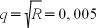
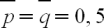
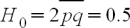

Tartalom
- Előszó
- 1. Evolúció
- 2. Természetes változatosság
- 3. A változatosság eredete
- 4. Populációk szerkezete
- 5. Genetikai sodródás
- 6. Természetes szelekció
- 7. Fenotípus evolúció
- 8. Evolúció és diverzitás
- Bibliográfia
Az ábrák listája
- 1.1. Relatív gyakoriság és karakter eloszlás
- 1.2. Populációk és karakterek divergenciájának folyamata
- 1.3. A gerincesek néhány fő csoportjának filogenetikai kapcsolatai
- 1.4. Eredet és elterjedés
- 1.5. Drift hatásának függése a populáció méretétől
- 1.6. Előnyös allél gyakoriságának változása szelekció hatására
- 1.7. Drift és szelekció
- 2.1. Generáció a modellben
- 2.2. Enzimpolimorfizmus
- 2.3. DNS szekvenciák változatossága
- 2.4. Ivarsejtek kombinálódása
- 2.5. Hardy-Weinberg parabola
- 2.6. Ivarsejt típusok kombinálódása két lokuszos esetben
- 2.7. Rekombináció hatása a kettős heterozigótákban
- 2.8. Linkage disequilibrium és rekombináció
- 4.1. Heterozigozitás és a populáció szerkezete
- 4.2. Teljes öntermékenyítés
- 4.3. Családfaelemzés
- 4.4. A kontinens-sziget modell
- 5.1. A koaleszcens
- 5.2. Leszármazási sorok rendeződése
- 6.1. Szelekció típusai
- 6.2. Fitnesz és populáció növekedési ráta
- 6.3. Szelekció hatása a generációban
- 6.4. Szelekció hatásának értelmezése a modellben
- 6.5. Populáció átlagfitnesze az allél gyakoriság függvényében
- 7.1. Példa egy egyszerű fitnesz görbére
- 7.2. Csúcsváltás drift hatása
- 7.3. Optimális reakciónorma
- 8.1. Filogenetikai fa
- 8.2. Néhány gerinces taxon filogenetikai kapcsolatai
- 8.3. Csoportok és karakterek
- 8.4. Az evolúciós távolság ábrázolása a fán
- 8.5. Leszármazási sorok divergenciája és fajkoncepciók
- 8.6. A kormos (Corvus corone) és a dolmányos varjú (Corvus cornix) hibridzónája
- 8.7. Filogeográfia
- 8.8. Fajkoncepciók konfliktusa
- 8.9. Karakterek divergenciája időben
- 8.10. A Dobzhansky-Muller inkompatibilitás
- 8.11. Hibridzónák
- 8.12. Speciáció típusai
A táblázatok listája
- 2.1. Genotípus gyakoriságok az ideális populációban a következő generációban
- 2.2. Genotípus gyakoriságok az AB0 vércsoportban egy ideális populációban
- 2.3. Fenotípus gyakoriságok az AB0 vércsoportban egy ideális populációban
- 4.1. Genotípus gyakoriság a következő generációban teljes öntermékenyítéssel
- 6.1. A genotípusok relatív gyakorisága következő generációban szelekció hatására
A populációgenetika a fajon belüli változatossággal foglalkozik, magába foglalva a változatosság kvantitatív jellemzését és értelmezését, a változatosságot formáló folyamatok feltárását. Módszereit, terminológiáját, általános eredményeit számos, a populáció koncepcióját alkalmazó területen felhasználják (pl. szisztematika, ökológia, természetvédelem, antropológia). A populációgenetika az evolúciós érvelés szerves részét képezi, az evolúció folyamatát mechanizmusának oldaláról vizsgálja. A jegyzet elsődleges célja ez utóbbi rövid áttekintése.
A jegyzet alapvetően a tradicionális szemléletmódot mutatja be, amelyet az evolúció genetikai elméletének nevezünk, kiegészítve néhány újabb irányvonal koncepciójával. Egy logikai váz célzatával készült alapszintű egyetemi kurzusainkhoz segédanyagként, inkább az elméletre koncentrálva. Jó néhány, alapvetően az általános evolúció elmélet szerves részét képező kérdéskör csak röviden kerül megemlítésre (például ivari szelekció, speciáció, filogenetikai rekonstrukció, makroevolúció, evolúciós fejlődésbiológia, biogeográfia alapjai). E témákat nincs módunk az alapszintű képzésben mélyebben tárgyalni, illetve egyéb alap és emelt szintű kurzusok anyagát képezik. Mindazonáltal főleg a kvantitatív karakterek elemzése, drift és molekuláris evolúció, szelekció és fenotípus evolúció részek folyamatosan bővülni fognak. Számos konkrét példa, esettanulmány kerül említésre az előadásokon, amelyek a jegyzetben nem szerepelnek. Jelen verzióból így teljesen kimaradtak a kiértékelési lehetőségek is. Mindamellett a jegyzet bővítése során ez pótlásra kerül[1].
A jegyzet jelentős részét pillanatnyilag az első fejezet teszi ki, amely rövid áttekintést ad az alapvető fogalmakról, evolúcióról. Emellett az utolsó fejezet kap nagyobb hangsúlyt, ami alapvetően a reproduktív izoláció kérdéskörét, következményeit tárgyalja. A többi fejezet célja a természetes változatosság (beleértve a populáció szerkezetet), és az azt formáló elemi folyamatok részletesebb tárgyalása (mutáció, drift, szelekció) - a teljesség igénye nélkül. A fenotípus evolúció fejezet (pillanatnyilag távlati) célja egyfajta szintézist nyújtani. Mivel az anyag elsődlegesen digitális jegyzetként készült, az egyes fejezetek az általános leírásból közvetlenül, kereszthivatkozásokon keresztül is elérhetőek (jelen verzióban ennek megvalósítása még nagyon kezdetleges stádiumban van). Így az első fejezetet kivéve a többiben nem a folyamatos olvashatóság az elsődleges szempont, sokkal inkább önálló egységek felsorolásának tekinthető. A mélyebb megértéshez nélkülözhetetlen modellek, kvantitatív összefüggések kiegészítés címmel külön szakaszokban kaptak helyet. A fejezeteket ellenőrző kérdések zárják, illetve távlati célok között szerepel néhány alapvető szakirodalmi forrás kiemelése is.
A populációgenetika elsajátításához az alapszintű genetika ismerete elengedhetetlen, például a meiózis, Mendel szabályok, mutáció, rekombináció, génexpresszió, genotípus és fenotípus, episztázis fogalmak ismerete szükséges. Lásd például Weaver és Hedrick (2000) Genetika könyvét, amely egy áttekintő populációgenetika és kvantitatív genetika fejezetet is tartalmaz. A jegyzet nem helyettesíti a tankönyveket, amelyek lényegesen nagyobb mélységben és terjedelemben elemeznek egyes problémákat, szerencsére több ilyen jelent meg a közelmúltban magyar nyelven is, hatalmas hiányt pótolva. Mindenekelőtt Pecsenye (2006) Populációgenetika könyvét említeném, de Pásztor és Oborny (2007) által szerkesztett Ökológia több fejezete, vagy Mátyás (2002) Erdészeti – természetvédelmi genetika is releváns a témánkban. Vida Gábor (1981) szerkesztette Evolúció I. kötete (Az evolúció genetikai alapjai) a hagyományos koncepció kitűnő áttekintése. Kisdi Éva Populációgenetika és Kvantitatív genetika lényegretörő, kiváló bevezetői szabadon hozzáférhetőek. Számos kitűnő angol nyelvű könyv létezik a témában, a teljesség igénye nélkül, az alábbiakat emelném ki. Futuyma (2009) Evolution, illetve Barton és mtsai (2007) Evolution talán a legátfogóbbak, de említhetném még Freeman és Heron (2007) Evolutionary analysis, vagy Ridley (2004) Evolution könyvét. Populációgenetika könyvek közül Hartl és Clark (2007) Principles of population genetics és Hedrick (2011) Genetics of populations, illetve Hartl (2000) A primer of population genetics, amit kiemelnék. Ez utóbbi egy tömör bevezető, míg a másik kettő áll talán legközelebb a megcélzott tárgyalási szinthez.
Szeretnék köszönetet mondani Dr. Kabai Péternek, hogy megjegyzéseivel, hasznos tanácsaival segítette munkámat az első verzió elkészítése során. A jegyzet fejlesztés alatt áll, az aktuális verzió, egyéb információk mellett letölthető a http://expbio.bio.u-szeged.hu/evolution/ címről. A jegyzet a TÁMOP-4.1.2-08/1/A-2009-0030 pályázat támogatásával készült.
[1] A szükséges statisztikai ismeretek elsajátításához javasolt irodalom Reiczigel J., Harnos A., Solymosi N. Biostatisztika (Pars Kft, Nagykovácsi 2007, honlapja: http://www.biostatkonyv.hu), amelyet azért is érdemes kiemelni, mert egyben kitűnő bevezető az R használatába. Számos R csomag áll rendelkezésre, amelyek kifejezetten a populációgenetika és evolúció problémakörét célozzák (http://www.r-project.org). Freedman D., Pisani R., Purves R. (2005) Statisztika. Typotex, Budapest (3. kiadás magyar kiadása, fordította: Kende Gábor és Szaitz Mariann) könyv egy részletes bevezető a statisztikába.
Tartalom
A populációgenetika a fajon belüli változatossággal foglalkozik. Alapvető célja a populációk genetikai változatosságának, és ezen keresztül az evolúciót alakító tényezőknek, folyamatoknak az értelmezése, magyarázatot adva számos általános jelenségre, különböző léptékű térbeli és időbeli mintázatra. Hosszú időn keresztül, az elmélet fokozatos fejlődése mellett, a tulajdonságok és változatosságuk hátterében álló genetikai tényezők elemzésének lehetőségei korlátozottak voltak. Szinte kizárólag ismert leszármazási sorú modell szervezetekre, irányított keresztezésekből származó utódok tulajdonságainak elemzésére, "egyszerű" morfológiai jellemzők szegregációjának vizsgálatára korlátozódott. A XX. század második felében a molekuláris genetika új módszereinek, eredményeinek köszönhetően kiszélesedtek a lehetőségek. A modern populációgenetika eszköztára ma már szinte bármely élőlényre, annak különböző fejlődési állapotaira alkalmazható, élőhelyre való tekintet nélkül. Ennek következtében hatalmas mennyiségű információ halmozódott fel, előmozdítva az elmélet további fejlődését. Új hipotézisek fogalmazódtak meg, amelyek tesztelése további adatokat igényel - a folyamat "autokatalitikus" fázisa jelenleg is tart. A hagyományos koncepció, vagyis a modern szintézis tanai, számos bizonyítékkal alátámasztva igazolást nyertek. De emellett sok kiegészítés is született.
A fejezet célja az evolúció koncepciójának ismertetése, amelynek néhány elemére a további fejezetekben részletesebben is kitérünk. Először is az alapfogalmakat definiáljuk, majd az evolúciós változást eredményező folyamatokat, és ezek együttes hatását tárgyaljuk. A tulajdonságok (karakterek) változatossága egy kulcskérdés, amelynek elemzésére különböző megközelítési módok léteznek, ezt röviden szintén érintenünk kell. A fejezetet néhány példával, illetve rövid történeti áttekintéssel zárjuk. Célunk elsősorban a fajon belüli változatosság értelmezése, azonban elkerülhetetlen, hogy a makroevolúció néhány kérdésére is kitérjünk, amelyekre a későbbiekben szükségünk lesz.
Biológiai evolúció, vagy evolúciós változás alatt populációk generációról generációra történő változását értjük, ahol a változást a populációt alkotó egyedek öröklődő tulajdonságain keresztül értelmezzük. Mielőtt definíciónk elemeit külön-külön megnéznénk - mit értünk egyedek tulajdonsága alatt, ennek populáció szintű változása mit jelent, mi a populáció és az evolúció időléptéke - célszerű egy kicsit intuitív módon körbejárni, mit is jelent az evolúciós változás. Először is rögzítsünk két alapvető feltételt.
Az evolúció egységének az egyedet tekintjük, mivel a tulajdonságokat egyedek szintjén definiáljuk. De az evolúciós változást egyedek csoportjában, pontosabban egymást követő generációk sorozatával definiálható populációkban értelmezzük, ahol a különböző tulajdonságokkal jellemezhető egyedek, és így tulajdonságaik gyakorisága változik generációról generációra. A változás egysége ezért a populáció, időbeli egysége pedig a generáció.
Definíciónk nem rögzíti a változás módját, annak mechanizmusát. Mindössze azt emeltük ki, hogy öröklődő tulajdonságok változásáról van szó, és a változás az egyedek szaporodásán keresztül realizálódik a populációban, hiszen a szaporodás eredményez új generációt. Mivel az evolúciós változást olyan tulajdonságokkal kapcsoljuk össze, amelyek a tradicionális koncepciónak megfelelően öröklődnek, a szaporodás (reprodukció) a továbbiakban az új generációt eredményező sokszorozódás mellett egyben a tulajdonságok öröklődését is jelenti.
Az evolúció ennél általánosabban is definiálható. Egyrészt az egysége nem csak az egyed lehet, azonban ez a legfontosabb eset, csak ezzel foglalkozunk. Másrészt amellett, hogy az egyedek tulajdonságainak genetikai öröklődése a legáltalánosabb, vitathatatlanul alapvető tényező, amely az élőlények meghatározó sajátossága, egyes esetekben egyéb szülő és utód hasonlóságát eredményező folyamatok is fontos szerephez juthatnak (lásd 1.1.1. szakasz - Evolúciós változás).
Az evolúció definíciója. Definíciónk értelmében az evolúciós változás generációról generációra bekövetkező változások sorozata, ahol a változás időbeli egységét jelentő szülő és utód generációk közötti átmenetet az alábbi három fő logikai egységre bonthatjuk:
szülő populáció változatossága: a tulajdonságot egy adott populációba sorolható egyedekhez rendeljük és a populációt a különböző tulajdonságokat hordozó egyedek gyakoriságával jellemezzük;
generációk közötti átmenet: a tulajdonságok változását az egyedek szaporodásán keresztül értelmezzük;
utód populáció változatossága: a változás az utódok populációjában a különböző tulajdonságokkal jellemezhető utódok gyakoriságának megváltozásán keresztül realizálódik.
A változást tehát az előző generációra, vagyis a szülők populációjára vonatkoztatjuk[2]. Először is világos, hogy a változás feltétele a populáció változatossága, vagyis különböző tulajdonságú egyedek egyidejű jelenléte és szaporodása a populációban. Változatosság hiányában nincs evolúció, mivel nem értelmezhető a változás. De látni fogjuk (1.3. szakasz - Az evolúciós változás sokszínűsége), hogy a változatosság nem jelent automatikusan változást. Másrészt a változást eredményező, azt bármely módon befolyásoló tényezők - amelyeket együttesen evolúciós tényezőknek nevezünk - hatását a generációk közötti átmenet során értelmezzük (lásd 1.2. szakasz - Elemi folyamatok). Tehát a generációról generációra történő változást az öröklődési mechanizmus és a különböző evolúciós tényezők együttes hatására vezetjük vissza, vagyis e tényezők a populáció változatosságának folyamatos módosulásán keresztül eredményeznek változást - amelyet evolúciós változásnak nevezünk. Így az egyed élete során, különböző tulajdonságaiban bekövetkező változás - tulajdonságok kifejeződése, kifejlődése, vagyis az egyedfejlődési folyamat során bekövetkező változás - nem evolúciós változás, és nem tekintjük az evolúció feltételének sem. De ez nem jelenti azt, hogy ez a generáción belül bekövetkező változás nincs hatással az evolúció folyamatára, hiszen az elemi folyamatok gyakran a kifejlődött tulajdonságokon, és nem a génjeiken keresztül hatnak (lásd 1.1.2. szakasz - Tulajdonság).
Egyed, tulajdonság és változás. A szülő és utód generáció közötti különbség (amely alatt tehát a tulajdonságok gyakoriságának eltérését értjük) egyik lehetséges oka a szülők egyes tulajdonságaiban jelentkező (generáción belüli) eltérés, amely hatással van a következő generációhoz való hozzájárulásra, vagyis az utódszámra (lásd 1.2. szakasz - Elemi folyamatok). Ha például egy adott tulajdonság birtokában az egyedek szaporodási esélye megnő (nagyobb az esélyük arra, hogy megérik a szaporodóképes kort, vagy hogy párt találjanak), akkor utódaik nagyobb arányban lesznek jelen a következő generációban a tulajdonsággal nem rendelkező egyedekhez képest. Egy tulajdonság evolúciós változásban betöltött szerepét az azzal rendelkező egyedek következő generációkhoz való hozzájárulásával jellemezzük. Ez alapján a tulajdonságok három fő csoportját különíthetjük el: lehet semleges, hátrányos vagy előnyös (lásd 1.2. szakasz - Elemi folyamatok). Először is számos tulajdonság (pontosabban a populáció változatossága a kérdéses jelleg tekintetében, lásd 1.1.3. szakasz - Természetes változatosság) semmilyen hatással sincs az utódszámra[3], vagyis az evolúciós változás tekintetében semleges. Egy előnyös tulajdonság birtokában az egyed a populáció többi, eltérő tulajdonságú egyedénél több utódot tud felnevelni - ezért nevezzük a tulajdonságot előnyösnek és az egyedek utódszámában jelentkező különbség okának is az eltérő tulajdonságot tekintjük. Egy tulajdonság szerepe függhet az aktuális fizikai (pl. hőmérséklet, adott típusú szennyezettség mértéke) és biológiai (pl. kompetítorok, ragadozók jelenléte, denzitása) környezettől. Például egy adott környezetben lehet semleges, egy másik környezetben kissé hátrányos, vagy akár előnyös is. De hiába vannak az egyednek előnyös sajátosságai, ha ezek nem jelennek meg a következő generációkban. Mivel az egyednek a várható utódszáma nagyobb, hozzájárulása a következő generációhoz a többi egyednél nagyobb. Azonban az egyed egy vagy néhány alkalommal szaporodik és elpusztul. Elpusztulásával az előnyös tulajdonság is elveszhet, ekkor a tulajdonság hatása egy-két generáció alatt lecseng. De ha az előnyös tulajdonság öröklődik, akkor ezzel utódai, unokái (stb.) is rendelkezhetnek, így átlagosan ezeknek is több utódja lesz. Így a tulajdonság hatása számos generáción keresztül érvényesülhet, a populáció változatossága generációról generációra módosulhat a tulajdonságokra visszavezethető különbségek következtében. Esetünkben az előnyös tulajdonság gyakoriságának fokozatos növekedését, vagyis az előnyös tulajdonság populációbeli elterjedését, ezzel a többi (hátrányos) változat gyakoriságának fokozatos csökkenését várjuk a populációban. De semleges öröklődő tulajdonság változatossága sem állandó[4] (lásd 1.2. szakasz - Elemi folyamatok).
Öröklődés. A sokszorozódást kísérő öröklődési folyamat folytonosságot biztosít számos generáción keresztül, ezért kulcsfontosságú tényező. A tulajdonság generációkon keresztül fennmaradhat, miközben egyedek generációi váltják egymást. A szülőktől örökölt gének másolatai teszik lehetővé a hasonló tulajdonságok kifejeződését a szülőkben és az utódokban (majd unokákban, dédunokákban stb.) - a tulajdonságok kifejeződéséhez szükséges információ áramlik generációról generációra. Ha a különböző öröklődő tulajdonságokkal rendelkező egyedek utódainak számában különbségek vannak, a gén változatok és így a tulajdonságok gyakorisága is változik generációról generációra a populációban. Definíciónk alapján az evolúciós változás értelmezésének alapja az öröklődési törvényszerűségek következményeinek vizsgálata populációk szintjén számos generáción keresztül, kiegészítve további, várható utódszám különbségben megnyilvánuló tényező hatásával, amely erre az alapmintázatra épül (1.2. szakasz - Elemi folyamatok). De tulajdonságok öröklődésére nem a genetikai (azaz génekkel értelmezhető) öröklődés az egyedüli lehetőség. Az egyedek egy létfontosságú tulajdonságra tanulás révén is szert tehetnek (pl. zsákmányszerzés), amelyet például közvetlenül a szülőktől tanulnak - ha nem tanulja meg, akkor elpusztul, mielőtt szaporodhatna. A tanult képesség szülőről utódra szállhat, számos generáción keresztül. A folyamat egy példa a kulturális öröklődésre, amely egy újabb öröklődési szintet jelent. De számos további lehetőség ismert, ahol egy jelleg öröklődése nem a géneken keresztül történik - így nem a tipikus mendeli mintázatot mutatja és rekombinációval sem értelmezhető. Összefoglaló néven ezeket epigenetikus (azaz "genetikai feletti") öröklődésnek nevezzük. A továbbiakban azonban a tradicionális megközelítést követjük: öröklődés alatt kizárólag a tulajdonság kifejeződését meghatározó nukleinsav (DNS[5]) szekvenciák másolatainak utódokba történő áramlását értjük, amely erre specializálódott sejtvonalakon, ivarsejteken keresztül történik az ivaros szaporodás folyamata során (lásd még 1.1.2. szakasz - Tulajdonság). Szekvencia alatt a nukleotid sorrendet értjük. A zsákmányszerzés példánkban a tanulás képessége öröklődik, de a viselkedési stratégia (maga a tulajdonság szekvenciákban "kódolt" formában) ebben az értelemben nem. Azonban érdemes megjegyezni, hogy számos, a későbbiekben tárgyalt koncepció kulturális, vagy általában epigenetikus öröklődés esetén is alkalmazható.
A változás egységei. Az evolúció egységének az egyedet tekintjük. A tulajdonságokat egyedekhez rendeljük, de a szaporodást is egyedekre értelmezzük. Szaporodás alatt tipikusan ivaros szaporodást értünk egy diploid populációban. A szaporodással az evolúció dinamikájának, az evolúciós változásnak az időbeli egységét is rögzítettük - ez a generáció, ahol az új generáció a zigótától indul[6]. A generációval egy relatív időskálát definiálunk, pillanatnyilag lényegtelen, hogy egy generáció napokban vagy években mérhető (abszolút időskála, lásd 1.1.5. szakasz - Időlépték). Az evolúciós változást vonatkoztathatjuk egyedek populációjára (például a Kárpát-medence egy adott rovar populációjának az eredete, lásd 1.1.3. szakasz - Természetes változatosság és 1.1.4. szakasz - Populációk, leszármazási sorok és fajok) és egyedek tulajdonságaira (karakterekre, például a rejtő szín, vagy egy zsákmányszerzési stratégia evolúciója, lásd 1.1.2. szakasz - Tulajdonság). Ez utóbbi esetben karakter evolúcióról beszélünk. De a logika kiterjeszthető további szerveződési szintekre is, amelyek alapegységei populációk vagy karakterek. Beszélhetünk szervek evolúciójáról (pl. szem, amelyet most különböző karakterek kombinációjának tekintünk), vagy fajok, taxonok (vagyis tetszőleges taxonómiai egység) evolúciójáról (amelyeket populációkra fogunk visszavezetni). De függetlenül attól, hogy a kérdésünk egyedekre, vagy tulajdonságaikra vonatkozik, mindkettőt ugyanazzal a folyamattal értelmezzük. A karakter evolúció populációkban értelmezhető, hiszen az evolúciós változás generációról generációra populációkban, vagyis a különböző tulajdonságokkal rendelkező egyedek csoportjaiban bekövetkező változást jelent. A populációban bekövetkezett változás viszont karakterek változását jelenti, hiszen a tulajdonság, annak gyakorisága az, ami változik - az egyed élettartamát messze meghaladó időléptékben. Érdemes megjegyezni, hogy a populáció és egyed viszonylatában alkalmazott evolúciós koncepció - ahol az egyedek kölcsönhatásának, egyedekre ható tényezőknek a következményeit egy magasabb szerveződési szinten, esetünkben populációban vizsgáljuk - általánosítható egyéb esetekre is[7]. Az egyes tényezők hatásának szintje, az evolúciós egység kérdése összetett probléma, azonban csak a legalapvetőbb esetet tárgyaljuk.
Elemi folyamatok. Elemi evolúciós tényezőknek (evolúciós faktoroknak) nevezzük azokat a folyamatokat, amelyek generációk szintjén értelmezve evolúciós változást eredményezhetnek. Ezekkel a folyamatokkal magyarázzuk a tulajdonságok eredetét (megjelenését, módosulását, például mutáció) és gyakoriságuk változását (terjedést) a populációkban (genetikai sodródás, természetes szelekció és génáramlás). A folyamatok hatása különböző tényezők függvénye (pl. környezet, populáció mérete, párválasztási rendszer stb.). Ezek a folyamatok határozzák meg egyrészt a változás irányát (például egy tulajdonság gyakorisága nő, vagy csökken a populációban), másrészt a változás mértékét (mekkora a változás, annak irányától függetlenül) - vagyis az evolúció mechanizmusáról van szó (1.2. szakasz - Elemi folyamatok). Egy adott tényező hatására a következő generációban bekövetkező változást a populáció evolúciós tényezőre adott válaszának nevezzük. Az öröklődést is hasonlóan értelmezzük, hiszen a folyamat hatása az utód populációban realizálódik (lásd 1.1.2. szakasz - Tulajdonság). Noha a különböző folyamatokat az elemi változás szintjén tárgyaljuk, tehát a generációk közötti átmenetig vezetjük vissza, hatásuk általában nagyobb időléptékben érdekes (1.1.5. szakasz - Időlépték). Kérdésünk az, hogy a különböző elemi folyamatok (mutáció, genetikai sodródás és természetes szelekció), illetve egyéb tényezők (például populációk fizikai izolációja, külső környezet, párválasztási szabályszerűségek) generáció szintű hatásai milyen populáció és karakter mintázatokat eredményezhetnek térben és időben, különböző léptékében. De ahhoz, hogy a nagyléptékű mintázatokat - azok kialakulását, elterjedtségét, vagy például a populációk és fajok közötti különbségek kialakulását - mechanizmus szintjén is értelmezni tudjuk, először is az alapfolyamatok sajátosságait kell megértenünk, az elemi változás szintjén: milyen hatást gyakorolhatnak az öröklődő tulajdonságok gyakoriságának generációról generációra történő változására. Kizárólag ezt a mechanizmus szintű megközelítést fogjuk tárgyalni, amely alapján az evolúciós történet értelmezhető. Történet alatt az evolúciós események időbeli sorrendjét értjük, leíró jelleggel, függetlenül az azt formáló mechanizmustól (lásd még 1.1.6. szakasz - Makroevolúció).
Karakter. Karakter az egyed bármilyen jellemzője lehet. Karakternek tekinthetünk a DNS szekvenciában egy adott pozíciót, genotípust, vagy a genom méretétől a biokémiai, élettani, anatómiai és külső morfológiai jellemzőkön keresztül a viselkedési (magatartási) stratégiákig bármit. Noha például a DNS szekvencia tekinthető akár egy adott sejt jellemzőjének is, a továbbiakban egyedekhez fogjuk rendelni[8]. Látni fogjuk, hogy a karaktereket különböző elméleti és gyakorlati szempontok alapján osztályozzuk, a különböző karakter típusokat gyakran eltérő módon elemezzük (1.4. szakasz - Karakterek, változatosság és elemzése). Például a DNS szekvencia pozíciók és morfológiai jellemzők számos tekintetben eltérő karakterek. Azonban van egy számunkra kiemelkedően fontos közös jellemzőjük - evolúciós változás részesei lehetnek, amelyet karakter típustól függetlenül ugyanazok az elemi tényezők formálnak (1.2. szakasz - Elemi folyamatok).
Karakter állapot. Az egyedekhez azonban nem magát a karaktert, hanem a karakter állapotot (karakter változat, jelleg) rendeljük. A populáció minden egyes egyede egy adott állapottal rendelkezik a kérdéses karakterre, ez az egyed tulajdonsága[9]. Legyen például a vizsgált karakter a szín, mondjuk egy szürkepettyes araszoló lepke (Biston betularia) egyed testszíne (melanizmusának mértéke, részletesen lásd 1.5.2. szakasz - A szürkepettyes araszoló ipari melanizmusa). A lepkének két különböző változata ismert, amelyeket a kérdéses karakterrel, esetünkben a szín alapján azonosíthatunk. A karakterre két lehetséges állapotot különíthetünk el: egy tetszőlegesen kiválasztott egyed vagy feketés (melanikus), vagy világosabb színű. Természetesen feltételezzük, hogy a karakterek és lehetséges állapotaik egyértelműen azonosíthatóak, egymástól elkülöníthetőek. Példánkban nem létezhet sötét szürke egyed, amelynek besorolása kérdéses, és rögzíteni kell pontosan, hogy mit jelent a testszín (1.4. szakasz - Karakterek, változatosság és elemzése).
Karakterek változása. Karakter változása alatt három különböző folyamatot értettünk: kifejlődés, eredet és elterjedés. Először is egy tulajdonságnak az egyed élete során bekövetkező változását, kifejlődését önmagában nem tekintettük evolúciós változásnak. De ha egy öröklődő tulajdonságban olyan változás következik be, amely hatással van a következő generációkra, ez már akár egy evolúciós lépés is lehet. Sőt, a későbbiekben, generációk múlva, akár meghatározó evolúciós eseménynek is bizonyulhat - de ez utóbbi már további tényezők függvénye. Karakter változása jelentheti egy új karakter állapot megjelenését (például a szürkepettyes araszoló melanikus formájának megjelenése). A korábban rögzített feltételek mellett ezt azt jelenti, hogy a változásnak az örökítő anyagban kell bekövetkeznie, az ivarsejtek sejtvonalában DNS szekvencia szintjén[10]. Ekkor az új jelleg legkorábban a következő generációban fejeződhet ki. A továbbiakban ezt értjük egy tulajdonság eredete, új karakter állapot megjelenése alatt, ami az evolúciós változás egyik fő tényezője[11]. Ez tipikusan egy egyedben lejátszódó folyamat, egy mutáció következménye. Az evolúciós változás másik összetevőjét, egy tulajdonság populációbeli elterjedését már más folyamatoknak tulajdonítjuk, illetve populációk szintjén értelmezzük (lásd 1.1.3. szakasz - Természetes változatosság). Eredet és elterjedés kérdését később részletesen tárgyaljuk (1.2. szakasz - Elemi folyamatok).
Ősi és új karakter állapot. Egy karakter evolúciós története karakter állapot változás és elterjedés lépések sorozata (lásd 1.1.6. szakasz - Makroevolúció). A legkésőbb megjelent karakter állapotot modern (új, recens) karakter állapotnak, míg az időben korábban megjelentet ősi állapotnak nevezzük, függetlenül az idő léptékétől (vagyis mikor jelent meg, mikor módosult), függetlenül attól, hogy jelenleg is előfordul-e, vagy hányszor változott a jelleg (hány köztes állapot fordult elő a modern karakter állapot megjelenéséig) evolúciója során. Egy jelleg eredete tehát az ősi karakter állapot módosulását jelenti. Ha több módosuláson esett át a karakter, bármelyik korábbi állapotot tekinthetjük ősinek. A jelenben is előforduló ősi állapotot gyakran vad típusnak nevezzük. Ősi és új karakter állapot elnevezés nem utal a jelleg gyakoriságára[12], illetve előfordulhat az is, hogy egyes populációkat az ősi, másikat pedig az új karakter állapot jellemez (lásd 1.1.4. szakasz - Populációk, leszármazási sorok és fajok és 1.1.5. szakasz - Időlépték). Belátható, hogy az ősi állapot is valamikor korábban modern karakter változatnak felelt meg - egészen addig, amíg nem módosult. Például karakter állapot változásról beszélünk, ha a DNS szekvencia egy adott pozíciójában (karakter) bekövetkezett pontmutáció (változás) hatására a korábbi C nukleotid[13] (az ősi karakter állapot) T-re cserélődik (új karakter állapot), amely evolúciós változás első lépése is lehet (új állapot eredete). Az araszoló lepke vad típusa a világos változat, ennek módosulásával jött létre a melanikus forma, a folyamat részleteit azonban nem ismerjük. Mindkét példában egy új állapot megjelenéséről van szó, de a két példa között van egy lényeges különbség. A külső morfológiai jellemző kifejeződése számos tényező függvénye, a folyamat mechanizmusa gyakran ismeretlen. Sőt sokszor az ősi állapotot sem ismerjük (lásd adaptációk, 1.2. szakasz - Elemi folyamatok).
Karakterek kifejeződése. Általában egy magatartásban, vagy anatómiai, külső morfológiai jellemzőben bekövetkezett változás egy komplex, gyakran részleteit tekintve ismeretlen mechanizmus módosulásának következménye, amely számos tényezőt foglal magába - a sokgénes genotípust, gén expressziós mintázatokat, biokémiai és élettani folyamatokat, vagyis az egyedfejlődés és működés különböző folyamait - amelyeket együttesen proximális mechanizmusnak nevezünk[14]. Egy szürkepettyes araszoló egyed színmintázatának kialakulása részleteit tekintve (például milyen gének felelősek a kialakulásáért, gének kifejeződésének szabályozása) alapvetően ismeretlen. De az evolúciós változás értelmezhető a tulajdonság kifejeződési (kifejlődési, működési) mechanizmusának, az egyedfejlődés folyamatának részletes ismerete nélkül is. Így értelmezték az evolúciót a molekuláris genetika korszaka előtt, illetve alapvetően így értelmezzük ma is (lásd még 1.2. szakasz - Elemi folyamatok). Azonban gyakran nem ilyen egyszerű a helyzet, hiszen például a morfológiai jellemzők változatossága az egyedfejlődési folyamatnak is függvénye - az öröklődő genetikai különbségek nem biztos, hogy kifejeződnek, illetve a jelleg változatosságot mutathat genetikai különbségek nélkül is (1.2. szakasz - Elemi folyamatok). Továbbá a proximális mechanizmus kényszert is jelent az evolúciós változásra (1.2. szakasz - Elemi folyamatok). Ezért magatartási, morfológiai jellemzők esetén e mechanizmus generációról generációra történő változását értjük karakterek evolúciós változása alatt[15].
Karakterek típusai. A továbbiakban egyszerű karaktereknek nevezzük azokat a tipikusan néhány állapottal jellemezhető karaktereket, amelyek kifejeződését az evolúciós változás szempontjából is érdekes mélységig értelmezni tudjuk (lásd még 1.2. szakasz - Elemi folyamatok) - vagyis ismerjük a karakter állapotok közötti különbség okát, és a karakter állapotok öröklődésének módját. Tipikusan ez a genotípus ismeretét fogja jelenti egy (vagy néhány) lokuszon, amelyet a karakter változatosság kizárólagos okának tekintünk. Ideális esetben a megfelelő gén változatok szekvenciáját is ismerjük, de ez nem feltétel. A DNS szekvencia pozíciók nyilván egyszerű karakterek (2. fejezet - Természetes változatosság), de még a szürkepettyes araszoló melanizmusa is ide sorolható (lásd még 1.2. szakasz - Elemi folyamatok). Ez utóbbi esetben a karakter állapotok öröklődésének módjára keresztezéses kísérletek utalnak. DNS szekvencia pozíciók kiemelt jelentőségűek, hiszen szekvenciák szintjén közvetlenül az öröklődő egységet vizsgáljuk, amelyeket az egyed tulajdonságának tekintettünk. Karakterek egy alapvető típusát alkotják a kvantitatív jellegek, amelyek változatossága már számos gén változatossága mellett egyéb tényezőknek is függvénye lehet (pontosítani fogjuk, lásd 1.2. szakasz - Elemi folyamatok, illetve részletesen lásd 1.4. szakasz - Karakterek, változatosság és elemzése és 2. fejezet - Természetes változatosság). A különböző, akár függetlenül evolválódó egységekre (komponens tulajdonságokra) bontható karaktereket komplex karaktereknek (vagy karakter komplexnek) nevezzük (lásd még 1.1.6. szakasz - Makroevolúció). Egy komplex karaktert tekinthetünk egy karakternek vagy számos karakter kombinációjának a kérdésünktől függően.
Markerek. Markerek (lásd 1.4. szakasz - Karakterek, változatosság és elemzése) olyan egyszerű karakterek (morfológiai vagy molekuláris jellemzők), amelyek karakter állapotai alapján a genotípus egyértelműen azonosítható[16], így kitüntetett szerepűek lesznek a későbbiekben. Tipikus markerek a gyakorlatban egyes szekvencia régiók vagy pozíciók, amelyek például a kérdéses tulajdonsággal (betegségekkel, külső morfológiai jellemzőkkel) együtt, ismert kombinációban fordulnak elő - tehát nem a jelleg változatosságát (pl. beteg vagy egészséges) okozó gén szekvenciájáról van szó. Markerek elemzésével betekintést nyerhetünk például komplex karakterek öröklődésébe, evolúciójába, alkalmazásuknak ez az egyik elsődleges célja.
Fenotípus. Fenotípus, fenotípusos jellemző alatt bármely tulajdonságot érthetünk (morfológiai jellemzőt, viselkedést, enzimaktivitást stb.), kivéve az öröklődés egységét jelentő génváltozatokat, és ezek összességét, a genotípust. Ez utóbbiakat, gén szekvenciákat, és molekuláris markereket kivéve a gyakorlatban bármely jellemzőt nevezhetünk fenotípusnak. Máskor több tulajdonság együttesét (például amelyek funkcionális egységet képeznek), vagy akár a tulajdonságok összességét ("egyed fenotípusa") értjük alatta. A fenotípusos változatosság természete ma is egyik központi kérdése az evolúcióbiológiának. Láttuk, hogy sokszor a fenotípus változatosságának egyedfejlődési háttere ismeretlen, de nem triviális kérdés a markerek elemzésével kapott mintázatok általánosítása sem (reprezentativitás kérdése, lásd 1.4. szakasz - Karakterek, változatosság és elemzése). A fenotípus evolúció (7. fejezet - Fenotípus evolúció) tárgyalásakor abból fogunk kiindulni, hogy a tipikusan kvantitatív jellegnek tekintett fenotípusos jellemzők öröklődésének genetikai részletei nem tisztázottak[17].
Karakterek eloszlása. A tulajdonságokat egyedekhez rendeljük, viszont az evolúciós változást populációkban értelmezzük. De ahhoz, hogy a populációkban bekövetkező változást - annak irányát és mértékét - ki tudjuk kvantitatívan is fejezni, először is jellemeznünk kell a populációt a kérdéses karakterekre vonatkozóan. Ehhez definiáljuk egy karakter populációbeli eloszlását az egyes karakter állapotok gyakorisága (hány egyedben fordul elő egy adott állapot a populációban) alapján (1.1. ábra - Relatív gyakoriság és karakter eloszlás). Eloszlás alatt a lehetséges karakter állapotok relatív gyakoriságának[18] sorozatát értjük. Ha az egyes karakter állapotokkal jellemezhető egyedek gyakorisága megváltozik (lásd eredet és elterjedés), akkor a jelleg eloszlása is változik. Ha például a populációban egy szürkepettyes araszoló lepke egyed melanikus vagy vad típusú lehet (vagy egy adott egyed hím vagy nőstény, egy egyed kérdéses DNS szekvencia pozíciójában C, T, A, vagy G egyike található), azzal, hogy megadjuk a melanikus fenotípust mutató egyedek relatív gyakoriságát (például 96%, így a vad típusé 4%, mivel csak ezt a két lehetséges állapotot definiáltuk[19]), a tulajdonság (lepke melanizmusának mértéke) eloszlásával a populáció változatosságát egyértelműen jellemeztük erre a karakterre vonatkozóan. A karakter eloszlása a populáció változatosságának, vagyis a természetes változatosságnak az egyértelmű leírása (ha a populáció változatosságát egy karakterrel jellemezzük, rövidesen pontosítjuk), az evolúció változás pedig a jelleg eloszlásának generációról generációra történő megváltozását jelenti. Noha a legtöbb információt az eloszlás hordozza a populációnk változatosságáról, a gyakorlatban sokszor egyszerűbben kezelhető mérőszámokkal, paraméterekkel helyettesítjük (lásd még 1.4. szakasz - Karakterek, változatosság és elemzése és 2. fejezet - Természetes változatosság).
1.1. ábra - Relatív gyakoriság és karakter eloszlás
(A) A testtömeg eloszlása egy populációban (folytonos kvantitatív karakter). A hisztogram a tapasztalati eloszlást, a folytonos vonal a 60 kg átlag és 1 kg szórás paraméterű normális eloszlást (sűrűségfüggvényét) ábrázolja, amellyel például populációnk jelleg eloszlását modellezzük. (B) A potroh serteszám tapasztalati eloszlása egy hipotetikus Drosophila populációban oszlopdiagrammal ábrázolva (diszkrét kvantitatív karakter). (C) A szürkepettyes araszoló F2 nemzedékében az utódok fenotípusos megoszlása (tapasztalati eloszlása) egy hipotetikus kísérletben, ahol csak melanikus, illetve csak vad típusú egyedekből álló populációkból választottuk a szülőket (kvalitatív karakter, nominális változó). A fehér oszlop a tapasztalati, szürke a mendeli arányoknak megfelelően várt gyakoriság értékeket (elméleti eloszlás) mutatja 200 utód elemzése alapján.
Elméleti és tapasztalati eloszlás. A jelleg eloszlását elméleti megfontolások alapján gyakran nevezetes eloszlással (pl. normális, binomiális) közelítjük[20]. Mivel a gyakorlatban nincs lehetőség arra, hogy a populáció minden egyes egyedét megvizsgáljuk, ezért a populáció jellemzőit, így az eloszlás paramétereit is minták alapján becsüljük. A jelleg eloszlás becslésének végső célja lehet pusztán a változatosság leírása (2. fejezet - Természetes változatosság), azonban számunkra ez nem elegendő. Az evolúció elmélete alapján hipotéziseket fogalmazunk meg a változásra (tipikusan jellegek elterjedésére), amelyben rögzített feltételek mellett egy adott karakter eloszlást, vagy az eloszlás, a változatosságot jellemző különböző paraméterek meghatározott megváltozását várjuk. Különítsük el ezt az elméleti alapon várt eloszlást (karakter elméleti eloszlása) a minták alapján definiált tapasztalati eloszlástól[21]. Elméleti eloszlást definiálunk például akkor is, ha a heterozigóta szülők utódaiban a fenotípusra mendeli arányokat várunk, vagyis a karakter állapotok várt aránya 3:1 teljes dominanciát feltételezve, vagy ha 1:1 ivararányt várunk egy populációban Fisher egyensúlyi elméletének megfelelően. Elméleti eloszlásról beszélünk, ha egy adott evolúciós mechanizmust (1.2. szakasz - Elemi folyamatok) feltételezve egy modell alapján azt várjuk, hogy például a melanikus forma (karakter állapot) gyakorisága 90% egy egyensúlyi populációban. Az elméleti és tapasztalati karakter eloszlások, különböző mérőszámok modellek alapján várt (paraméter) és tapasztalt (statisztika) értékeinek összehasonlítása az evolúciós következtetések valódi adatsorokon történő tesztelésének az alapja (lásd még 1.4. szakasz - Karakterek, változatosság és elemzése). Azonban számos különböző mechanizmus eredményezhet hasonló karakter eloszlást, ezért a következtetés megfelelő mértékű körültekintést igényel.
Természetes változatosság. Ha a populációban egy karakter változatosságot mutat, vagyis az egyedek egyes csoportjait különböző karakter állapottal jellemezzük, a populációt a jelleg tekintetében polimorfnak nevezzük[22]. Egy adott karakterre polimorf populációban két (pl. a melanizmus mértéke, vagy ivar esetén) vagy több (szekvencia pozíció) karakter állapotot különíthetünk el, azonban természetesen ez nem minden karakterre van így. Minden lepkének két pár szárnya van, erre a tulajdonságra a populáció monomorf (a karakter állapot gyakorisága 100%), függetlenül attól, hogy melanikus, vagy vad típusú. Továbbá a változatosság mértéke nem állandó, generációk közötti megváltozásával definiáltuk az evolúciót (1.2. szakasz - Elemi folyamatok). Lehet, hogy korábban változatosság volt a karakterre, például melanikus és vad típusú egyedek egyaránt előfordultak, de mára a változatosság megszűnt. Ekkor az egyik karakter állapot populációbeli fixálódásáról, ezzel a többi eliminálódásáról beszélünk (a populáció összes egyedét a fixálódott karakter állapot jellemzi, így relatív gyakorisága 1). Különböző karakterek változatossága jelentős eltéréseket mutathat egy populáción belül. Változatosságuk egymástól lehet független (karakter állapotaik között nincs semmiféle asszociáció), máskor korrelálhatnak (1.3. szakasz - Az evolúciós változás sokszínűsége). Két karakter függetlensége azt jelenti, hogy ha egy egyedet egy adott állapottal jellemzünk egyik karakterre, ez semmiféle információt nem szolgáltat számunkra az egyed másik karakterének az állapotára[23]. A természetes változatosság alatt általában populációk változatosságát értjük, amit karakterek populációbeli változatossága alapján, különböző mérőszámokkal jellemezhetünk. Ebben az értelemben minél több független karakter alapján becsüljük a változatosság mértékét, annál jobb a becslés. Azonban további szempontokat is figyelembe kell venni, különösen akkor, ha a változatosság alapján az evolúciós mechanizmusra is következtetni szeretnénk, mivel karakterek evolúciós történetében jelentős különbségek lehetnek (1.1.4. szakasz - Populációk, leszármazási sorok és fajok és 2. fejezet - Természetes változatosság).
A természetes változatosság szerveződése. Egy változatosságot mutató karakter eloszlása gyakran különböző az egyes populációkban, az ilyen jellegekre a populációk közötti különbség általános (lásd 1.2. szakasz - Elemi folyamatok). A jelenséget populációk differenciációjának is nevezzük, ha az egy ősi populációban bekövetkező elkülönülésére (differenciálódására) vezethető vissza (lásd 1.1.4. szakasz - Populációk, leszármazási sorok és fajok és 4. fejezet - Populációk szerkezete). Láttuk, hogy a szürkepettyes araszoló melanizmusának mértékében változatosság lehet egy populáción belüli, két változatot különítettünk el. De a melanikus forma kizárólag az iparvidékeken gyakori (ezért nevezzük a jelenséget ipari melanizmusnak, 1.5.2. szakasz - A szürkepettyes araszoló ipari melanizmusa). Az iparvidékektől távolabb, nemzeti parkokban már lényegesen ritkább, itt a vad típusú forma relatív gyakorisága nagyobb. Populációk között tehát különbség van, ugyanazok a karakter változatok fordulnak elő mindkét populációban, de gyakoriságuk eltér. Természetesen előfordulhat az is, hogy egyes karakter változatok nem minden populációban találhatóak meg, szélsőséges esetben akár eltérő változatok fixálódhatnak a különböző populációkban. Ez utóbbi esetben populáción belül nincsen, csak populációk között van változatosság, a differenciáció teljes a karakterre vonatkozóan. A természetes változatosság definícióját ilyen módon kiterjeszthetjük több populációra is, és a változatosságot felbonthatjuk populáción belüli (2. fejezet - Természetes változatosság) és populációk közötti (4. fejezet - Populációk szerkezete) különbséget kifejező komponensekre.
Természetes változatosság és evolúció. Az evolúció megértése azt jelenti, hogy értelmezni tudjuk a természetes változatosságot, annak alakulását térben és időben - hogyan is lesz belőle evolúciós változás. A karakterek változatossága központi jelentőségű, hiszen változatosság nélkül nincs evolúció. Új állapotok jelenhetnek meg (eredet), a jellegek gyakorisága különböző tényezők hatására változik (elterjedés) a populációban. Az evolúciós változást karakterek eloszlásának generációról generációra történő változásaként értelmezzük. Egy adott mechanizmust feltételezve a jellegek eloszlásának meghatározott változását (vagy éppen a változatlanságát) várjuk (lásd 1.2. szakasz - Elemi folyamatok). Ezért a szülő és utód populációk jelleg eloszlásának összehasonlításával - a várt és tapasztalt mintázatok elemzésével több generáción keresztül - betekintést nyerhetünk a változatosságot formáló folyamatokba. Ehhez azonban a fenotípusos változatosság ismerete önmagában már nem elegendő (lásd 1.2. szakasz - Elemi folyamatok).
Populáció. Különböző populáció koncepciók léteznek. Populáció alatt általában az egyedek egy olyan csoportját értjük, amelyet egy többé-kevésbé jól definiálható földrajzi (elterjedési) egységhez tudunk rendelni (elterjedési terület). Egy populáción belül az egyedek közötti kölcsönhatások gyakoribbak, mint különböző populációk egyedei között. Ez azonban számunkra nem elegendő feltétel. A továbbiakban a populáció kizárólag egy szaporodási (reproduktív) egységet jelent, amelyet genetikai (mendeli) populációnak, vagy démnek is nevezünk. Ez a definíció nem tartalmaz korlátozást az elterjedésre, vagyis a populációk földrajzi elterjedési területei akár teljesen átfedhetnek. Ez utóbbi esetben tehát azért beszélünk két, vagy több populációról, mert gyakoribb a szaporodás egy csoporton (mendeli populáción) belül, a csoportot alkotó egyedek között - amellett, hogy a különböző populációk egyedei kompetícióban állhatnak egymással egy adott táplálék típusért, vagy hasonló mértékű predációs veszélynek vannak kitéve. A hangsúly tehát nem az elterjedésen, földrajzi korlátokon, vagy általában a kölcsönhatáson, hanem a szaporodáson van.
Szaporodás. A populációt és a generációt, vagyis a változás egységeit a szaporodással definiáltuk, ahol szaporodás alatt elsősorban ivaros szaporodást értünk, melynek azonban számos további vonzata van. Például a párválasztási (párzási) rendszer hatással van a változatosságra. Figyelembe kell venni, hogy a hímek és a nőstények gyakorisága eltérő lehet a populációban, illetve a karakter eloszlásban ivari különbségek lehetnek. Legegyszerűbb esetben a párválasztást véletlenszerűnek tekintjük (a kérdéses jellegekre vonatkoztatva), és 1:1 ivararány mellett hímekre és nőstényekre a jelleg eloszlás azonos. Természetes populációk azonban ettől gyakran eltérő mintázatot mutatnak (2. fejezet - Természetes változatosság). Egyedek szaporodásán keresztül értelmezzük a következő generációk egyedeinek leszármazási (vagyis rokonsági[24]) kapcsolatait, amely alapján populációk leszármazási viszonyait is kifejezhetjük (lásd 2. fejezet - Természetes változatosság és 4. fejezet - Populációk szerkezete). A szaporodási egység alapvető következménye az egyedek hasonlósága számos különböző öröklődő karakterben. Egy populáción belül ezért az egyedek hasonló tulajdonságokkal rendelkeznek, pontosabban nagyobb mértékű hasonlóságot várunk egy populáción belül, mint populációk között[25].
Leszármazási sor. Az evolúciós változást a populációban különböző elemi folyamatokra vezetjük vissza, amelyek hatásukat generációról generációra fejtik ki, és ez a hatás az öröklődő karakterek eloszlásának megváltozásában realizálódik (1.2. szakasz - Elemi folyamatok) - függetlenül attól, hogy a változás gyakran csak nagyobb időléptékben számottevő (lásd 1.1.5. szakasz - Időlépték). Tulajdonságok, például egy újonnan megjelent előnyös jelleg elterjedése általában számos generáción keresztül tartó folyamat, amely során a jelleg gyakorisága folyamatosan növekszik az előnyös tulajdonsággal rendelkező egyedek nagyobb utódszáma következtében. A párválasztási mintázatok, utódszám eltérések a populáción belüli rokonsági viszonyokra is hatással vannak. Az egyedek több generációt felölelő, szülő-utód kapcsolaton keresztül értelmezett leszármazási sorát családfával ábrázolhatjuk (pedigree, 4. fejezet - Populációk szerkezete). Ebből kiindulva a szülő és utód populációk sorozatának reprezentációi az egyes családfák összefonódásával képezett hálózatok, illetve ezek halmaza. Az egymást követő szülő és utód generációk populációinak sorozatát a populáció leszármazási sorának nevezzük, amely ilyen módon egy ősi populációra vezethető vissza. Egy populáció dinamikája, története alatt a leszármazási során belüli változást értjük[26]. A populációk leszármazási sora egyben karakter leszármazási sorokat is definiál (lásd a változás egységeit, illetve ősi és új (azaz származtatott) karakter kapcsolatokat). Az öröklődésen keresztül folytonosságról beszélhetünk karakterek tekintetében is, generációk sorozatán keresztül, beleértve a közben egyes leszármazási sorokban megjelenő új karakter állapotokat is[27].
Divergencia és génáramlás. Populációk történetük során különböző, például külső fizikai tényezők hatására két, vagy több utód populációra szakadhatnak, vagy a populáció egyes egyedei új területeket (például egy szigetet) kolonizálhatnak egy új populációt alapítva. Számos utód populáció származhat egy ősi populációból, elkülönülésüknek különböző okai lehetnek. A folyamatot a leszármazási sorok elágazásával szemléltethetjük. Az utód populációk között az egyedek szaporodása - amelyet populációk közötti génáramlásnak nevezünk (4. fejezet - Populációk szerkezete) - korlátozott mértékű, vagyis a populációk különböző mértékű izolációt mutatnak egymással (8. fejezet - Evolúció és diverzitás). A kezdeti izolációt követően különböző változások sorozata következhet be az utód populációk leszármazási soraiban. A folyamatot populációk divergenciájának nevezzük, melynek következménye a populációk differenciációja. A populáció divergenciája egyben karakterek divergenciáját is jelenti számos karakterre - az ősi populációból kiindulva az egyes karakterek eloszlása fokozatosan eltérő lesz a leszármazási sorokban, illetve új karakter állapotok jelenhetnek meg egyik vagy másik leszármazási sorban (1.2. ábra - Populációk és karakterek divergenciájának folyamata). Így idővel a különböző populációkat alkotó egyedek egyre több tulajdonságban térnek el a különbségek generációról generációra történő fokozatos felhalmozódása következtében (lásd 1.1.5. szakasz - Időlépték). Elkülönülésük a génáramlás mértékének is függvénye, hiszen intenzív génáramlás hatására a különbségek csökkenését várjuk, mivel az eltérő eredetű egyedek szaporodásával a populációk közötti hasonlóság mértéke nő[28] (4. fejezet - Populációk szerkezete). Ezzel szemben a korlátozott génáramlás következtében a leszármazási sorok evolúciója idővel függetlenné válhat, mivel az egyik leszármazási sorban bekövetkezett változás már nincs számottevő hatással a másikban bekövetkező változásra, például az egyikben megjelent tulajdonság nem terjedhet el a másikban.
1.2. ábra - Populációk és karakterek divergenciájának folyamata
Egy ősi populációból kiindulva két leszármazási sor különül el, melynek velejárója (oka vagy következménye) különböző karakterek divergenciája. Új karakter állapotok jelenhetnek meg és terjedhetnek el számos generáción keresztül a különböző leszármazási sorokban, amelyek alapján egy idő múlva a leszármazási sorok számunkra is elkülöníthetővé, diagnosztizálhatóvá válnak. De a divergencia nem minden karaktert érint, egyes leszármazási sorokban, vagy akár mindegyikben, az ősi populációt jellemző tulajdonságok változatlan formában fennmaradhatnak. Bármely időszeletet kiválasztva (szürke négyzetek), a folyamatot kisebb időléptékben tekintve, az egyedek bonyolult kölcsönhatási, szaporodási hálózatát látjuk.
Divergencia és evolúció. Az ősi populáció kezdeti divergenciájától a függetlenül evolválódó populációk elkülönüléséig az átmenet folyamatos, azonban ennek hátterében különböző tényezők állhatnak. Karakterek divergenciája földrajzi izolációban (nem átfedő földrajzi elterjedés esetén) gyakori jelenség. Általában divergencia várható, ha különböző tényezők korlátozzák az egyedek vándorlását (migrációt) és ezáltal a génáramlást, vagy közvetlenül a szaporodást a különböző populációk egyedei között. Mivel az egyes populációkban eltérő karakter állapotok jelenhetnek meg és terjedhetnek el, a populációk előbb-utóbb különbözni fognak (1.2. szakasz - Elemi folyamatok). De a karakterek divergenciája külső tényezőktől függetlenül is okozhatja az egyes populációk differenciálódását, bekövetkezhet egy populáción belül földrajzi izoláció nélkül is. Mivel a párválasztás is adott tulajdonságok függvénye, például elegendő lehet egy ehhez kapcsolódó morfológiai karakterben bekövetkező változás (megjelenés és elterjedés), amely korlátozza a szaporodást az ősi és az új karakter állapottal rendelkező egyedek között (8. fejezet - Evolúció és diverzitás). A divergencia folyamata nem más, mint különböző öröklődő karakter állapotok megjelenése (eredete) és elterjedése az utód populációkban, leszármazási sorokban - a divergencia tehát a természetes változatosságot folyamatosan formáló tényezők következménye (1.2. szakasz - Elemi folyamatok). Ilyen módon nem egy elemi evolúciós esemény. Számos generációt igényelhet, függetlenül attól, hogy a bekövetkezési esélyét növelő tényezők akár ideiglenesek, pillanatnyi események is lehetnek. Például egy egyedi kolonizációs eseményre visszavezethetően egy új stabil populáció keletkezhet, amely földrajzi izolációja következtében már függetlenül evolválódik. A különböző populációkban más-más evolúciós események következhetnek be ugyanazoknak az elemi folyamatoknak a hatására - például az eltérő környezet miatt, de akár a környezettől függetlenül is (lásd 1.2. szakasz - Elemi folyamatok).
Metapopuláció. A divergencia folyamata során tehát az egy ősi populációra visszavezethető leszármazási sorok egymástól fokozatosan elkülönülnek eltérő karakter állapotaik következtében. Populáció (dém) alatt, a divergencia folyamatának bármely időpontjában, a már reproduktív egységet jelentő, gyakran lokális földrajzi elterjedésű utód populációkat értjük. Lokális populációkról beszélünk, ha ez utóbbit hangsúlyozni akarjuk. Lokális populációk így egy nagyobb, földrajzilag is strukturált metapopuláció részét képezik. Az egyes populációkban bekövetkező változás (karakter állapotok eredete és elterjedése a többi populációtól függetlenül) mellett a metapopuláció szerkezete (a lokális populációk kapcsolat rendszere génáramláson keresztül, vagy egyes lokális populációk kihalása, kolonizációs események) is hatással van a természetes változatosságra. A különböző folyamatok együttesen eredményeznek evolúciós változást az egyes populációkban (4. fejezet - Populációk szerkezete).
Reproduktív izoláció. Kitüntetett jelentőségű a reproduktív izolációt eredményező, vagyis a fokozatosan elkülönülő leszármazási sorokból származó egyedek szaporodását korlátozó tulajdonságok megjelenése (1.1.6. szakasz - Makroevolúció és 8. fejezet - Evolúció és diverzitás). Ezeket a tulajdonságokat izolációs barriereknek nevezzük[29] (lásd 8. fejezet - Evolúció és diverzitás). Noha a reproduktív izoláció kialakulása populációk földrajzi izolációjában lényegesen gyakrabban fordul elő, a földrajzi izoláció nem szükséges feltétele a reproduktív izoláció megjelenésének. Másrészt függetlenül a kezdeti izoláció okától, azt számos karakter divergenciája követi (hiszen a génáramlás már korlátozott) - közte egyre több olyan karakteré is, amely a reproduktív izoláció mértékét növeli. Az izolációs barrierek nem speciális tulajdonságok, akár anyagcsere enzimek génjeinek mutációi is eredményezhetnek olyan inkompatibilitást, amely a különböző leszármazási sorokból származó egyedek utódainak (hibridek, 8. fejezet - Evolúció és diverzitás) életképtelenségét eredményezi. A reproduktív izoláció teljessé válása azonban nem jelent automatikusan független evolúciót. Noha nincs szaporodás a leszármazási sorok egyedei között, az egyedek különböző közvetlen vagy közvetett kölcsönhatásban állhatnak egymással továbbra is (pl. kompetíció), amely hatással lehet az evolúció folyamatára (lásd koevolúció, 8. fejezet - Evolúció és diverzitás). Ez utóbbinak azonban feltétele az elterjedési terület átfedése.
Faj. Ha két leszármazási sor közötti reproduktív izoláció teljessé válik, az egyikben megjelent új karakter állapot már nem terjedhet el a másikban, ezért hasonlóságuk folyamatos csökkenését várjuk. Populációk polimorfizmusából és divergenciájából indultunk ki, amely nagyobb időléptékben fajok, taxonok divergenciáját eredményezi. Ez utóbbiakat olyan leszármazási soroknak tekintjük, amelyeket például már fixálódott tulajdonságok azonosítanak, vagyis minden egyes egyed ezekkel a karakter állapotokkal rendelkezik. Az eltérések felhalmozódása számos generáció alatt következik be. De mikortól beszélhetünk önálló fajokról, honnantól tekinthetjük elegendően jelentősnek a divergenciát, hogy a leszármazási sort már fajként azonosítsuk? Rövidesen látni fogjuk (1.1.5. szakasz - Időlépték), hogy a változást nagyobb időléptékben is a folyamatos divergenciával, karakter állapotok eredetével és elterjedésével értelmezzük. Ezért nem egyszerű a válasz, ha a teljes élővilágra egységesen akarjuk a fajt definiálni (lásd fajkoncepciók, 8. fejezet - Evolúció és diverzitás). A legáltalánosabban elfogadott, logikai menetünkből is következő biológiai fajkoncepció értelmében a faj egy potenciális reproduktív egység, vagyis populációk halmaza. A biológiai faj így egy természetes egység, a fajképződés (speciáció, 8. fejezet - Evolúció és diverzitás) a reproduktív izoláció (izolációs barrierek) kialakulását jelenti, így a populációk divergenciájának természetes következménye. De a biológiai faj koncepciója az ivaros szaporodáson alapul, így alkalmazhatósága korlátozott. Továbbá földrajzilag izolált lokális populációk esetén, amelyek között nincs génáramlás, általában nem tudjuk megmondani, hogy egyedeik ténylegesen szaporodhatnak-e egymással[30]. Egyedek hasonlósága számos tulajdonságban ugyan a reproduktív egységre utalhat, azonban ez nem szükségszerűen van így - nem minden karakterre igaz (1.1.6. szakasz - Makroevolúció és 8. fejezet - Evolúció és diverzitás). Másrészt ha a divergencia fokozatosan következik be, folytonos átmenetet várunk karakterek populációk közötti (fajon belüli) és fajok közötti különbségében (noha jelentős különbséget mutathatnak az egyes karakterek). A természetes változatosság diszkrét egységekre, például fajokra történő felbontása ezért problémás lehet[31], különösen recens divergencia esetén (vagyis ha a divergencia kezdete óta kevés idő telt el). Ez nem meglepő, hiszen az evolúció mechanizmusának természetes következménye (8. fejezet - Evolúció és diverzitás).
Fajképződés. A fajképződés tipikusan 1-2 millió év alatt következik be, de ennél sokkal kevesebb idő is elegendő lehet. A rokon fajok genetikai divergenciáján (8. fejezet - Evolúció és diverzitás) és fosszíliák morfológiai jellemzőin alapú becslések nagyságrendileg hasonló eredményeket adnak viszonylag fiatal (és így számos fosszíliával rendelkező) taxonokra (például rágcsálók, kígyók). Azonban az evolúciós változást, amely akár új fajok kialakulására is vezethet, populációk és generációk szintjén értelmezzük. Láttuk, hogy a fajképződést nem egy adott speciális mechanizmussal értelmezzük, a generáció szinten értelmezett folyamatok sok százezer, vagy millió generáció alatt felhalmozódó hatásának, vagyis a leszármazási sorok folyamatos divergenciájának következménye - nem más, mint az izolációs barrierek evolúciója. Jelentős különbségek lehetnek fajok között abban a tekintetben, hogy a kezdeti izoláció milyen evolúciós tényezőkre és milyen karakterekre vezethető vissza. Ettől függetlenül, ha az izoláció megjelent, azt számos karakter divergenciája követi. Vagyis előbb-utóbb a leszármazási sorok egyértelműen elkülönülnek, az egyedek különbözni fognak több külső morfológiai jellemzőben, ökológiai igényeikben, viselkedési jellemzőkben, de az izolációnak nyoma van a genomban, DNS vagy fehérje szekvenciákban is. A különböző leszármazási sorokban fixálódott morfológiai sajátosságokat, amelyek egy adott ősi populációtól a leszármazási sor minden egyes egyedét jellemezik, felhasználhatjuk azonosításukra, határozásukra a gyakorlatban (diagnózis).
A változás időléptéke. Az evolúciós változás időegysége definícó szerint a generáció. Noha egy lépésben (vagyis egy generációban) a változás általában kis mértékű, jelentős lehet összességében, ha az evolúció folyamatát számos generáción keresztül, azaz nagyobb időléptékben nézzük (lásd például fajképződés). Jelentős különbségek vannak karakterek és leszármazási sorok között az evolúciós változást eredményező események bekövetkezésének gyakoriságában és hatásuk intenzitásában, így ennek következtében a tapasztalt változatosságukban is (1.2. szakasz - Elemi folyamatok). Nagy időléptékben az evolúciós változást generációról generációra populációk szintjén már nem tudjuk nyomon követni, így különböző feltételezésekkel, egyszerűsítésekkel kell élnünk. Szerencsés esetben fosszíliák utalhatnak egyes evolúciós eseményekre, kivételes esetben még egy ősi populáció változatosságára is, de nem ez az általános. Egy jelleg elterjedését generációról generációra követve a változás lehet többé-kevésbé folyamatos, nagy időléptékben azonban már gyakran nem ezt tapasztaljuk. Ha mondjuk egy anatómiai jellemző evolúciós történetét nagy időléptékben nézzük egy leszármazási sorban, gyakran azt látjuk, hogy hosszú időn keresztül alapvetően változatlan - formák gyakorisága csak fluktuál, de nincs trend a változásban[32]. Egyes karakterek akár évmilliókon keresztül is változatlanok lehetnek, a jelenséget sztázisnak nevezzük (lásd még 1.1.6. szakasz - Makroevolúció). Tehát adott irányú változással és változás hiányával jellemezhető időszakok váltják egymást a karakterek evolúciója során, az egyes szakaszok hosszában jelentősek a különbségek. A tipikusan százezer években mérhető időszakot felölelő változás a karakter módosulását és az új karakter állapot elterjedését jelentheti (lásd 1.2. szakasz - Elemi folyamatok), erre különböző jellegű bizonyítékok sora utal, így az elemi folyamatokkal értelmezhető. A sztázis hátterében is különböző tényezők állhatnak. Például nincs belső kényszer, ami a változást garantálná (lásd 1.2. szakasz - Elemi folyamatok), ellenben különböző kényszerek korlátozhatják (3. fejezet - A változatosság eredete és 7. fejezet - Fenotípus evolúció). Így egy karakter változatlan lehet például azért, mert nem jelent meg új változat, ami el is terjedhetett[33].
Szubsztitúció. Nagyobb időléptékben általában csak azok az elemi eseménysorozatok érdekesek számunkra, amelyek egy adott karakter állapot olyan módosulását eredményezik, amely el is terjed az egyes leszármazási sorokban, a modern karakter állapotot eredményezve, vagy annak kialakulásának egy köztes állapotát képezve. Azt a folyamatot, ahol egy új karakter állapot helyettesíti a korábbi, ősi karakter állapotot, szubsztitúciónak (helyettesítésnek) nevezzük. Nem elemi evolúciós folyamat, hiszen számos generáció alatt következik be, azonban nagyobb időskálán mégis egyfajta egységnek tekintjük. Egy generációban számos különböző karakter változat lehet jelen a populációban (a populáció polimorf), amelyek relatív gyakorisága generációról generációra változhat (lásd 1.2. szakasz - Elemi folyamatok). Ha szubsztitúcióról beszélünk, ettől eltekinthetünk, eredet és elterjedés együttes hatása érdekes a számunkra. Nem tételezünk fel más mechanizmust, egyszerűen az időléptékünk más, és a következtetés szempontjából érdektelen változatosságot figyelmen kívül hagyjuk. Leszármazási sorokat azonosító diagnosztikai karakter állapotok is olyan szubsztitúciók, amelyek a leszármazási sor divergencia folyamatának kezdetén jelentek meg, majd terjedtek el és fixálódtak az utód populációkban, fajokban: egyszer jelent meg, majd fixálódott és nem változott napjainkig, így fixálódása óta minden egyed ezt a karakter állapotot örökli. Ezt a logikát alkalmazzuk az evolúciós történet leírására. Az evolúció elmélet alapján ezt megtehetjük, mert ezek az egyszerűsítések az elemi folyamatok következményeként értelmezhetőek (lásd 1.1.6. szakasz - Makroevolúció).
Gradualizmus. Karakterek evolúciója gyakran több szubsztitúciós lépéssel magyarázható, ahol a módosulás egy lépésben általában kis mértékű (3. fejezet - A változatosság eredete). Ezt a köztes karakter állapotok sorozatát feltételező fokozatos változást gradualizmusnak nevezzük. A fokozatos változás során a karakter egyre hatékonyabb funkciója tekintetében (például a rejtő szín a rejtőzésben), ezért terjedhet el. Ez egyben azt is jelenti, hogy a köztes állapotoknak is előnyösnek kell lenniük (pontosabban nem lehet hátrányos) az aktuális környezetükben (lásd 1.2. szakasz - Elemi folyamatok, illetve 7. fejezet - Fenotípus evolúció). A fokozatosságot több különböző értelemben használjuk. Egyrészt jelentheti azt, hogy hozzávetőlegesen adott időközönként következik be változás (vagyis az evolúció sebessége konstans, rövidesen tárgyaljuk). Másrészt, ha csak a változást, annak időléptékétől függetlenül nézzük, jelentheti egy adott funkcióért felelős struktúra több kis lépésben történő kialakulását - ebben az értelemben beszélünk fokozatos felhalmozódásról, kumulatív evolúcióról[34]. Ha egy adott karakter evolúcióját nézzük, a folytonosság gyakran vitatható, például szabályozó géneket érintő változás egy lépésben is jelentős fenotípus változást eredményezhet átmeneti állapotok nélkül[35]. Taxonok evolúciója azonban általában fokozatosnak tekinthető. Számos karakter változik a divergencia folyamata során, azonban ez nem szinkron (egyidejűleg, párhuzamosan) történik. Egyes karakterek evolúciója korrelálhat, de együttes változásuk más karaktertől független lehet - ezt a fenotípusos jellemzők mozaik evolúciójának nevezzük. Gradualizmus az evolúció hatékonyságát jelentősen növeli, azonban a korábbi állapot egyben kényszert is jelent a változásra (lásd 1.2. szakasz - Elemi folyamatok).
Az evolúció sebessége. A karakterekben bekövetkezett szubsztitúciók számát adott időegységre (generációra, évre, évmillióra) vonatkoztatva az evolúció sebességének (evolúciós rátának) nevezzük. Konstans (állandó) az evolúció sebessége akkor, ha a változások száma lineáris függvénye az időnek a kérdéses idő intervallumban, vagyis a szubsztitúciók megközelítőleg azonos időközönként következnek be. Láttuk, hogy nagy időléptékben az evolúció sebessége nem állandó, eltérő lehet leszármazási sorok között egy adott karakterre vonatkoztatva, de leszármazási soron belül sem tekinthetjük állandónak - sem morfológiai, sem molekuláris jellemzőkre, beleértve a DNS szekvenciákat is. Morfológiai jellemzőkre nem is várható az elemi tényezők ismeretében (lásd 1.2. szakasz - Elemi folyamatok és 7. fejezet - Fenotípus evolúció). DNS szekvenciák esetén eleinte úgy gondolták, hogy adott körülmények között evolúciós sebességük állandó lehet - ez a molekuláris óra, amely adott sebességgel "ketyeg" (azaz a változás adott időközönként következik be). Ekkor a bekövetkezett szubsztitúciók száma - vagy pusztán a megváltozott szekvencia pozíciók száma, ha minden pozíció egyszer módosul[36] - a divergencia idejével arányos. Ma már tudjuk, hogy ez durva leegyszerűsítése a valóságnak, speciális feltételek mellett teljesülhet. Így a molekuláris óra alkalmazhatósága erősen korlátozott. A szubsztitúciók számának és a kérdéses leszármazási sor korának (vagyis egy adott közös őstől való elkülönülés óta eltelt időnek, ha egy recens csoportot nézünk) az ismeretében az evolúció sebessége becsülhető. Mivel egy másik, ugyanarra a közös ősre visszavezethető leszármazási sorban (tehát koruk azonos) semmi nem garantálja, hogy ugyanannyi szubsztitúciós esemény következzen be, ezért evolúciójuk sebessége eltérő lehet - a változás olyan tényezők függvénye, amelyben különbözhetnek (lásd 1.2. szakasz - Elemi folyamatok).
Az evolúció sebességének koncepciói. Az evolúció sebességét azonban több különböző értelmezésben is használják. Egy új élettér meghódítása gyors radiációt, új fajok robbanásszerű megjelenését eredményezheti, amelyet számos tulajdonság egyidejű változása jellemez. Ez történhetett például különböző madár taxonok adaptív radiációja esetén is (8. fejezet - Evolúció és diverzitás). A gyors evolúció oka az előnyös változatok nagyobb száma, azok gyors szubsztitúciója (elterjedése, ami például a környezet függvénye, lásd 1.2. szakasz - Elemi folyamatok) - a korábbiakhoz hasonló mértékű természetes változatosság mellett. Nem a változatosság nagyobb, hanem több, különböző szempontok alapján előnyös karakter változat lehet jelen. Az evolúció sebessége is értelmezhető csoportokra (taxonokra) és karakterekre (lásd a változás egységeit). Karakterek, karakter komplexek evolúciós rátáját filogenetikai rátának nevezzük, de taxonok nagyléptékű diverzifikációjának jellemzésére egyéb koncepciók is léteznek[37]. A továbbiakban - a korábbi logikát követve - populációk, taxonok divergenciájának mértékét az egyes karakterekben bekövetkezett változások (szubsztitúciók) számával jellemezzük, ahogy a madár taxonok radiációját is a gyors karakter divergenciával magyaráztuk. Az evolúció sebességét generációk szintjén alkalmazva gyakran új karakter változat megjelenésének valószínűségét jelenti generációnként (lásd mutációs ráta, 3. fejezet - A változatosság eredete), máskor csak egy karakter változat elterjedésének sebességét értjük alatta (gyakoriság generációnkénti változása), egy újonnan megjelent változatra vonatkoztatva.
Abszolút és relatív időlépték. Az evolúció nem szükségszerűen lassú folyamat. A gyors evolúciót példázza az adaptív radiáció, vagy kórokozók antibiotikum rezisztenciájának, rovarok peszticid rezisztenciájának megjelenése és elterjedése. Az utóbbi esetben a gyors evolúció egyik oka a rezisztens változat többszöri megjelenése a különböző populációkban (3. fejezet - A változatosság eredete), másik oka a gyors elterjedés (1.2. szakasz - Elemi folyamatok). Vírusok esetén a rezisztencia megjelenése és fixálódása (szubsztitúciója) néhány nap (vagy hét, lásd pl. HIV, 1.5.1. szakasz - HIV rezisztenciája) alatt bekövetkezhet. Extrém gyorsnak tűnik, ha a folyamatot abszolút időskálán követjük, azonban ez számtalan generációt jelent (relatív időskála). Gyors és lassú evolúció, kis és nagy időlépték relatív fogalmak. A gyakorlatban leszármazási sorok abszolút kora (pl. millió évben kifejezve) általában ismeretlen, de amennyiben megfelelő fosszíliák állnak rendelkezésre, azok kora alapján már becsülhető (ritkán földtörténeti események alapján is, amelyekhez például egy taxon eredete feltehetően köthető). Az így elvégzett kalibráció alapján már az abszolút ráta - például szubsztitúció/évmillió egységben kifejezve - is megadható.
Mikroevolúció és makroevolúció. Fontos kitétele az evolúciós érvelésnek, hogy a nagyobb időléptékben tapasztalt mintázatot is az elemi genetikai és ökológiai folyamatokkal értelmezzük (lásd uniformitarianizmus, 1.6. szakasz - Történeti áttekintés). Az egyes leszármazási sorokban generációk során felhalmozódó különbségek, a fokozatos módosulások jelentős eltéréseket okozhatnak. Nincs semmiféle közös ős óta eltelt időtől függő speciális mechanizmus (lásd időlépték, illetve 8. fejezet - Evolúció és diverzitás). Az evolúciós változás populációkban generációról generációra történő módosulás és divergencia évmilliókon keresztül ismétlődő sorozata. De a madarak radiációja során bekövetkezett események rekonstrukciójához nem szükséges például közös ősük párválasztási szabályaival foglalkoznunk (lásd 2. fejezet - Természetes változatosság), számos egyszerűsítés tehető nagyobb időléptékben, mikor már a leszármazási sorok teljesen szétváltak, vagyis megjelent a reproduktív izoláció, és populációk helyett már fajokról, taxonokról beszélhetünk. Például gyakran feltételezzük, hogy két utód faj keletkezik egy közös ősből (rövidesen tárgyaljuk, illetve lásd 8. fejezet - Evolúció és diverzitás). Noha ez nem minden esetben teljesül - például gyors radiációk esetén több utód taxon is származtatható egy közös ősből, vagy hibridizáció esetén nem egy közös ős van - de számos egyéb esetben hasznos egyszerűsítés. A leszármazási sorok közötti génáramlás megszűnésével, vagyis a reproduktív izoláció megjelenésével az egyiket jellemző új jelleg már nem terjedhet el a másik leszármazási sorban (lásd 1.2. szakasz - Elemi folyamatok és 8. fejezet - Evolúció és diverzitás), így a leszármazási sorokban idővel eltérő szubsztitúciók sora halmozódik fel. A reproduktív izoláció megjelenése (vagyis a fajképződés) ezért meghatározó jelentőségű esemény, egy természetes töréspont az időlépték tekintetében. A reproduktív izoláció kialakulásáig mikroevolúcióról beszélhetünk, amely az elemi folyamatok populációszintű hatásával foglalkozik - ez elsődleges témánk. A makroevolúció ennél nagyobb léptékű jelenségeket, mintázatokat tárgyalja (lásd még 8. fejezet - Evolúció és diverzitás).
Makroevolúció. Makroevolúció alatt a faj taxonómiai kategória szint feletti evolúciót értjük (például törzsfejlődés, kihalások, radiációk), de számos különböző értelemben használják. Központi kérdései például az evolúciós trendek, jelentős fenotípusos változások (beleértve az az evolúciós újdonságokat, sztázist, evolúció sebességét, lásd még 1.2. szakasz - Elemi folyamatok illetve 8. fejezet - Evolúció és diverzitás), nagyléptékű mintázatok értelmezése. Ahogy korábban is láttuk, ezeknek a problémáknak az elemzése általában más megközelítési módot, eltérő módszereket igényel. Karakterek elemzése gyakran a paleontológia megközelítési módjával, illetve a filogenetikai eredményeken alapuló komparatív vizsgálatokkal történik.
Filogenetika. Egyedek kapcsolatait reprezentáló hálózatokból kiindulva értelmeztük a leszármazási sorokat, amelyeket a reproduktív izoláció megjelenésével már fajoknak nevezünk. Ekkor már az evolúciós történetet filogenetikai fákkal ábrázolhatjuk (1.3. ábra - A gerincesek néhány fő csoportjának filogenetikai kapcsolatai, lásd 1.2. ábra - Populációk és karakterek divergenciájának folyamata), amelyek tehát a leszármazási sorok rokonsági kapcsolatait, a közös ős hierarchiát szemléltetik, feltételezve, hogy egy ősből két utód taxon származik. Két leszármazási sor elkülönülése (a fa elágazásai, amelyeket csomópontoknak nevezünk) ebben az esetben már fajképződési eseménynek felel meg. Mivel a karakterek fokozatos divergenciája ezt a rokonsági kapcsolat hierarchiát tükrözheti, ezért karakter állapotok hasonlósága információt hordozhat az evolúciós történetről. Fiatalabb közös ős kisebb divergencia időt jelent, így a leszármazottak között nagyobb hasonlóságot várunk számos tulajdonságra - hasonló evolúciós rátát feltételezve. Ezért ezeknek a tulajdonságoknak a különböző taxonok közötti összehasonlító elemzése alapján a taxonok rokonsági kapcsolatait becsülni tudjuk - ez a filogenetikai rekonstrukció alapja. De olyan speciális karaktereket igényel, amelyek ténylegesen a rokonságra utalnak (8. fejezet - Evolúció és diverzitás). Ahogy a fajkoncepciókkal kapcsolatban már tárgyaltuk, karakterek hasonlósága nem azonosítható automatikusan az egyedek, populációk vagy fajok szintjén értelmezett rokonsággal. Például egy karakter állapot többször is megjelenhetett az evolúció során a különböző leszármazási sorokban, ekkor a hasonlóság már nem a közös ősre utal - ekkor konvergens evolúcióról beszélhetünk, míg ebben az értelemben az eddigiekben tárgyalt folyamatot divergens evolúciónak nevezzük.
1.3. ábra - A gerincesek néhány fő csoportjának filogenetikai kapcsolatai
A filogenetikai fa csak a rokonsági kapcsolatokat mutatja (csak topológia), vagyis nem informatív a változás mértékének, az evolúció sebességének tekintetében. A csoport közös ősét az alsó elágazás (csomópont) szemlélteti, ezt a fa gyökerének nevezzük. Leolvasható az ábráról, hogy például a madarak és krokodilok utolsó közös őse fiatalabb, mint a gyíkok-kígyók és krokodilok közös őse, vagy az emlősök leválása a közös őstől megelőzi a madarak krokodiloktól való elkülönülését (részletesebben lásd 8. fejezet - Evolúció és diverzitás). A fa egy ága (amely két csomópontot egymással, vagy egy csomópontot egy taxonnal köt össze) egy leszármazási sort szemléltet, amely elágazása a csomópontban a taxonok divergenciájának (esetünkben fajképződések sorozatának) felel meg (vö. populációk divergenciája, 1.2. ábra - Populációk és karakterek divergenciájának folyamata).
Evolúciós történet. A fenti logikai érvelésre, annak különböző elemeire számos bizonyíték ismert . A törzsfejlődés folyamata populációk megváltozására, divergenciájára visszavezethető kladogenezis (a filogenetikai fa elágazása, fajképződés) és anagenezis (változás a filogenetikai fa ágai mentén) lépések sorozata egy közös ősből kiindulva (8. fejezet - Evolúció és diverzitás). Egyrészt az evolúciós történetet elvileg rekonstruálhatjuk a ma élő és csak fosszíliákból ismert fajokra jellemző tulajdonságok összehasonlítása alapján, ahogy korábban láttuk. A kapott filogenetikai fa a valódi evolúciós történetet ábrázoló törzsfa egy becslése. Másrészt, ha van egy jó becslésünk a kérdéses csoport filogenetikai kapcsolataira, ezt felhasználhatjuk különböző karakterek evolúciójának értelmezésére - következtethetünk például az ősi karakter állapotra, vagy a jelleg konvergens evolúciójára. Mindennek azonban további feltételei is lehetnek[38]. Ennek ellenére számos karakter eredetére (tipikusan extrém adaptációkra, lásd 1.2. szakasz - Elemi folyamatok), vagy elterjedésének magyarázatára pillanatnyilag jó kiindulási pontunk sincs [39]. Az evolúció elméletével összhangban ez nem is annyira meglepő, hiszen egyrészt a véletlen szerepe is jelentős az evolúciós változásban, így a nagyléptékű evolúció iránya és sebessége megjósolhatatlan (1.2. szakasz - Elemi folyamatok), másrészt számos korábbi folyamat nyomai mára eltűntek (1.3. szakasz - Az evolúciós változás sokszínűsége). Az evolúcióbiológia eszköztára azonban folyamatosan új módszerekkel bővül, amelyek új távlatokat nyitnak. Például az ismert teljes genom szekvenciák száma gyorsan gyarapodik, amelyek számos esetben eredményeztek jó hipotézist akár egy adott funkció, akár komplex morfológiai, fiziológiai sajátosság eredetére (3. fejezet - A változatosság eredete). Azonban bármilyen összetettnek is tűnik az evolúciós változás nagy időléptékben, értelmezése végső soron az elemi, generáció szintű folyamatokkal történik.
Az elemi folyamatoknak tulajdonítjuk a generációról generációra bekövetkező változást, új karakter állapotok megjelenését és elterjedését egy populációban, populációk divergenciáját, amelyek egyben a nagyléptékű mintázatok előfordulásának is meghatározó tényezői (1.1. szakasz - Populációgenetika és evolúció). Az evolúciós változást öröklődő karakter állapotok gyakoriságának változásával definiáltuk. Ebből kiindulva először is körvonalazni fogjuk az evolúció genetikai modelljének legalapvetőbb elemeit, majd röviden áttekintjük az eredet és elterjedés hátterében álló folyamatokat, kiemelve azok néhány lényeges elemét a teljesség igénye nélkül. Az elemi folyamatokat a következő fejezetekben részletesebben tárgyaljuk.
Eredet és elterjedés. Ahogy az eddigiekből is kiderült, az evolúciós változás két fő tényezőjét, karakter állapotok eredetét és elterjedését különböző elemi folyamatokkal magyarázzuk (1.4. ábra - Eredet és elterjedés). Míg egy új állapot eredete tipikusan egy egyedben lejátszódó folyamatra vezethető vissza (mutáció), az elterjedés (természetes szelekció és genetikai sodródás) már populáció szinten, adott karakter állapottal jellemezhető egyedek (változatok) gyakoriságának változásán keresztül értelmezhető. Elvileg alternatív logikai magyarázat lehetne az elterjedésre, egy jelleg fixálódására, ha a kérdéses karakter változat a populáció minden egyedében megjelenne (vagyis az azonos karakter állapotok független eredetűek minden egyedben). Ennek valószínűsége azonban elhanyagolhatóan kicsi (3. fejezet - A változatosság eredete). Új karakter állapot alatt olyan karakter állapot megjelenését értjük, amely korábban nem volt jelen a leszármazási sorban (noha a logika kiterjeszthető egy korábbi karakter állapot ismételt megjelenésére, ebben az esetben karakter reverzióról beszélhetünk), függetlenül attól, hogy a karakter állapot egy másik leszármazási sorban (vagyis közös ősüktől történő szétválás óta) már megjelenhetett (független eredet). Egy karakter állapot elterjedése vagy eliminációja alatt az ezzel rendelkező változat gyakoriságának generációról generációra történő, populációkban bekövetkező változását, növekedését vagy csökkenését értjük. Az elterjedés a karakter eloszlásának folyamatos transzformációját jelenti populációk divergenciája előtt, közben és után az elemi folyamatok generációról generációra érvényesülő hatására. Így kulcskérdés az adott karakter állapotokkal jellemzett szülők átlagos utódszáma (reproduktív sikere) az alternatív állapotokhoz képest, hiszen populáció szinten az utódszám, pontosabban a változatok utódszámában realizálódó különbség határozza meg a következő generáció karakter eloszlását. A többi változatnál több utód egyben egyes tulajdonságai gyakoriságának növekedését is jelenti[40]. Ahhoz, hogy a változást eredményező folyamatok működését megértsük, először is a folyamatok dinamikájának egységét, a szülő és utód populáció jelleg eloszlása közötti átmenetet kell értelmeznünk.
1.4. ábra - Eredet és elterjedés
Az ábra egy újonnan megjelent karakter állapot (kék szín) elterjedését szemlélteti az egymást követő generációkban (idő) egy populációban. Diszkrét átfedés nélküli generációk sorozatát látjuk, ivartalan szaporodással, az egyedek utódszáma 0, 1, vagy 2. A t1 időpont előtt a populáció monomorf volt, majd megjelent egy új karakter változat. Eleinte még ritka, de gyakorisága generációról generációra fokozatosan nő, vagyis elterjed. A t1 és t2 időpont között a populáció polimorf, mivel mindkét változat jelen van, de a polimorfizmus mértéke nem állandó. A t2 időpontban a populáció ismét monomorffá válik, mert az új változat fixálódik. A t1 és t2 idő intervallumban szubsztitúció következett be, a régi (ősi) karakter állapotot az új helyettesítette. Kérdésünk az, hogy az ehhez hasonló történetet milyen folyamatokkal, tényezőkkel magyarázhatjuk.
A fenotípusos változatosság komponensei. Induljunk ki egy olyan fenotípusos jellemző - egy kvantitatív jelleg - populációbeli eloszlásából egy tetszőleges generációban, amely változatossága öröklődik. Először is ahhoz, hogy az elemi folyamatok hatását értelmezni tudjuk, azt kell letisztázni, hogy a pusztán az öröklődés folyamata milyen jelleg eloszlást eredményez a következő generációban, vagyis mi a populáció válasza erre a folyamatra egy ideális populációban, melyben egyéb tényezők hatásától eltekinthetünk (részletesen lásd 2. fejezet - Természetes változatosság). Ehhez különítsük el a fenotípusos változatosság öröklődő komponensét a többitől, ez az, ami az egyedek szaporodásával az utód generációban is megjelenik, amivel a szülői populáció a jelleg öröklődése révén az utód populáció jelleg eloszlásához hozzájárul. Ez a jelleg genetikai változatosságának egy része (lásd 1.4. szakasz - Karakterek, változatosság és elemzése). A genetikai változatosságot egyrészt a gének, másrészt a genotípusok változatosságával - vagyis a gén változatok (allélok), illetve genotípusok relatív gyakoriságával, annak eloszlásával - jellemezzük. Míg a fenotípusos változatosságot a kérdéses karakter állapotokkal definiáljuk, a fenotípus mögött álló genetikai változatosságot a fenotípusos jellemző öröklődése hátterében álló genotípusok gyakoriságával értelmezzük (lásd 2. fejezet - Természetes változatosság). A kettőt el kell különítenünk egymástól, hiszen a genetikai különbségek mellett a környezet is hatással lehet a fenotípusos változatosságra, továbbá a genetikai tényezők hatása környezetfüggő is lehet[41]. Tehát a genetikai változatosság és környezeti változatosság egyaránt hatással lehet arra, hogy az utód milyen mértékben hasonlít a szüleire. Azonos környezetben élő egyedek hasonlíthatnak egymásra akkor is egyes karakterekre vonatkoztatva, ha nincs közöttük rokonsági kapcsolat. Ezeknek a karaktereknek a változatosságát alapvetően a környezeti hatás határozza meg[42]. Sérülések, vagy szomatikus sejtekben bekövetkezett mutációk csak a fenotípusos változatossághoz járulnak hozzá az adott generációban, de nem öröklődnek. Genetikai és környezeti tényezők hasonló jelleg eloszlást eredményezhetnek, ezért a két komponens elkülönítése nem egyszerű feladat a gyakorlatban (lásd még 1.4. szakasz - Karakterek, változatosság és elemzése és 2. fejezet - Természetes változatosság).
Egyszerű karakterek. Az egyszerűség kedvéért először olyan karakterekkel foglalkozunk, amelyek változatossága teljes mértékben a genetikai változatosságra vezethető vissza, így a jelleg kifejeződésének az ismerete nem lényeges az evolúciós változás értelmezése szempontjából, mivel a folyamat nem járul hozzá a változatossághoz. A jelleg kifejeződése a környezettől független, bármely környezetben azonos karakter állapotot eredményez egy adott genotípusra. Pusztán a genotípus és fenotípus kapcsolat számít, amelyet ismertnek tételezünk fel, a genotípus ismeretében a meg tudjuk mondani, hogy az egyed milyen karakter állapottal rendelkezik (legyen az morfológiai, vagy viselkedési jellemző). Tehát elegendő a genotípus gyakoriságok generációról generációra történő változását ismerni, ezzel a kérdéses karakter változatosságáról is "mindent tudunk". Ezeket a karaktereket neveztük el egyszerű karaktereknek. Ekkor a karakterre
a genotípus kombinációkkal definiálható párzás típusokból (vagyis a hím és nőstény genotípusok összes lehetséges kombinációja),
a párválasztás szabályszerűségeinek (az egyes párzás típusok gyakorisága) és
az egyes párzás típusokból származó adott genotípusú utódok várható számának
ismeretében az utód populáció várható genotípus eloszlása és így a jelleg eloszlása meghatározható[43]. Az egyes párzásokból származó utódok karakter állapotainak várható eloszlása ismert az öröklődési törvényszerűségek alapján[44] (2. fejezet - Természetes változatosság). Az általánosabb esetet, a kvantitatív jellegek elemzését külön tárgyaljuk, markerek elemzése során azonban gyakran ezt a logikát követjük a gyakorlatban is (lásd 1.4. szakasz - Karakterek, változatosság és elemzése, illetve 2. fejezet - Természetes változatosság).
Utódszám és karakter eloszlás. Ahogy már korábban is tárgyaltuk, ha a különböző karakter állapotokkal jellemezhető egyedek utódszáma konzisztens módon különbözik számos generáción keresztül, ez automatikusan a jellegek eloszlásának egy meghatározott, fokozatos - vagyis generációról generációra történő - módosulását eredményezheti (2. fejezet - Természetes változatosság). A konzisztens eltérés azt jelenti, hogy a változatok várható utódszáma következetesen egy adott irányú eltérést mutat, például egy adott változat átlagos utódszáma számos generáción keresztül nagyobb, mint a többié[45]. De mitől függ a várható utódszám? Ez az egyedek különböző tulajdonságainak, viselkedési stratégiáinak, morfológiai jellemzőinek (stb.) függvénye az aktuális környezetben. Hiszen függ a párválasztási, párzási sikertől, de függ a táplálékszerzés sikerességétől, el tud-e menekülni a ragadozók elől, milyen hatékony a rejtő színe az adott környezetben (stb.) - tehát az utódszám függ minden túlélési és szaporodási esélyeit befolyásoló karaktertől, így ezeknek a karaktereknek változatossága oka lehet az utódaik számában mutatkozó különbségeknek.
Fitnesz. Egy karakter tehát hatással lehet a várható utódszámra, így a következő generációkhoz való hozzájárulás mértékére, a populáció jövőbeli összetételére. A karakterek e tekintetben megmutatkozó szerepében azonban különbségek vannak, illetve egy karakter állapot hatása függhet a környezettől, sőt az egyes változatok gyakoriságától is. Ezt a következő generációkhoz való hozzájárulást nevezzük fitnesznek (rátermettségnek), amely ilyen módon a fenotípus és a környezet függvénye. Főbb komponensei a túlélési valószínűség és a párzási siker (párzási valószínűség, várható utódszám) - hiszen a szaporodás feltétele a túlélés a szaporodóképes korig (a fitnesz különböző komponenseire lásd 6. fejezet - Természetes szelekció). A fitnesz komponensek magukba foglalnak minden, a következő generációhoz való hozzájárulást befolyásoló tulajdonságot. Tehát minden egyes tulajdonság, ami hatással van a túlélési esélyekre, párzási sikerre, hatással van az utódszámra, így a következő generációhoz való hozzájárulásra. A fitnesz az utódok számában nyilvánul meg, amit reproduktív sikernek nevezünk, a fitnesz pusztán egy absztrakció ennek kifejezésére, nem az egyed tulajdonsága.
A fitnesz koncepciója. A fitnesz egyedek egy adott csoportjának jellemzője, például azonos karakter állapotokkal (például adott rejtő színnel és viselkedéssel) jellemezhető egyedek csoportjához rendeljük, egy ilyen egyed (per capita) várható hozzájárulását fejezi ki a következő generációhoz[46]. Ha egyed fitneszéről beszélünk, akkor a csoport tipikus, átlagos egyedére gondolunk (függetlenül attól, hogy ilyen létezik-e a populációban), amely a csoportot azonosító karakter állapotokkal rendelkezik és utódszáma a várható utódszámmal azonos. Fontos látni, hogy a tulajdonságot egyedre, míg a tulajdonság reproduktív sikerben realizálódó várható hatását már csoportra értelmezzük. A populáció kérdéses tulajdonsággal rendelkező egyedeinek átlagos utódszámát jelenti a gyakorlatban, ez a változat várható utódszámának becslése. Az adott karakter állapottal rendelkező egyedek utódszámában azonban különbségek vannak. Noha a rejtő szín a megfelelő környezetben előnyös lehet az egyednek, egy hiba elegendő, hogy a ragadozó elkapja - noha előnyös tulajdonsággal rendelkezik, mégsem szaporodik. Az egyed persze számos különböző okból elpusztulhat még a szaporodási időszak előtt (pl. baleset áldozata lehet, amely a kérdéses karakter állapottól független), egyszerűen nem volt szerencséje - az egyed sorsa tulajdonságai mellett a véletlennek is függvénye. Az előnyös tulajdonság az jelenti, hogy az adott karakter állapottal jellemezhető egyedek átlagos utódszámmal becsült várható reproduktív sikere, fitnesze nagyobb, az utódszám eltérés a többi változattól konzisztens. Nem minden előnyös tulajdonsággal rendelkező egyednek lesz több utódja, de az előnyös karakter állapottal rendelkezők átlagos utódszáma generációk sorozatán keresztül folyamatosan nagyobb, mint a többi változaté.
A fitnesz jelentősége. A fitnesz a következő generációhoz való hozzájárulás kifejezésének eszköze, lényegében egy adott karakter állapot (fenotípus) és a várható utódszám kapcsolatát fejezi ki különböző tényezők (környezet, gyakoriság) függvényében. Egy eszköz arra, hogy különböző folyamatok hatását figyelembe vegyük, ha ez a hatás az utódszám különbségekben realizálódik (1.2.2. szakasz - Eredet és elterjedés). A fitnesz egy "közös nevező", amelyen keresztül a különböző molekuláris, anatómia, morfológiai vagy viselkedési jellemzők hatása, az evolúciós változásban betöltött szerepe, így például egy karakter állapot előnye kvantitatívan kifejezhető. Mivel értéke természetes populációkban becsülhető, egy adott karakter változatosságának, az elemi folyamatoknak az evolúciós dinamikában betöltött szerepére is informatív lehet (6. fejezet - Természetes szelekció). A környezet változásának hatását is a fitnesz változásával tudjuk figyelembe venni.
Populáció mérete és kompetíció. A populáció mérete (egyedek száma az adott generációban), annak változása hatással van az evolúciós dinamikára (lásd 1.2.2. szakasz - Eredet és elterjedés). Azonban gyakran elegendő, ha feltételezzük, hogy a populáció megfelelően nagy és mérete többé-kevésbé változatlan, illetve egyéb, az evolúciós változás szempontjából lényegtelen tényezők által szabályozott számos generáción keresztül (2. fejezet - Természetes változatosság). Ekkor az evolúciós változás leírható a változatok relatív gyakoriságának, vagyis a karakterek eloszlásának változásával[47]. Mivel a környezet eltartó képessége véges, a populáció egyedei kompetícióban állnak egymással a különböző forrásokért (pl. táplálék, fészkelőhely), ezért a kompetitív képesség hatással van a túlélési esélyekre, így a fitneszre. Ha a populáció a környezet eltartóképessége közelében van, az egyik változat nagyobb reproduktív sikere (előnyös karakter állapotainak köszönhetően) automatikusan a másik változat utódszámának csökkenését vonja maga után - hiszen a populáció mérete nem növekedhet (1.2.2. szakasz - Eredet és elterjedés). Ha nem lenne forrás kényszer (végtelen a forrás) a populáció mérete exponenciálisan nőhetne, ekkor mindkét változat együtt élhetne akkor is, ha reproduktív sikerük eltérő - noha a relatív gyakoriságuk a fitnesz különbségek függvényében folyamatosan változik (az előnyös változat elterjed[48]). De a nagyobb utódszám ekkor nem jelenti automatikusan az alternatív formák eliminálását (6. fejezet - Természetes szelekció) - ennek feltétele a forrás kényszer (felső populációméret korlát, kompetíció, lásd 6. fejezet - Természetes szelekció). Noha az ökológiai kompetíció meghatározó szerepű lehet az evolúció folyamatában, nem szükséges feltétele az evolúciónak, vagyis evolúciós változás ökológiai kompetíció nélkül is történhet[49] (lásd 1.2.2. szakasz - Eredet és elterjedés).
Relatív fitnesz különbség. A változatok relatív gyakoriságának generációról generációra történő változása a populációban jelenlévő változatok gyakoriságának és reproduktív sikerének függvénye (lásd 1.2.2. szakasz - Eredet és elterjedés). Látni kell, hogy például egy változat előnye mindig csak a populációban aktuálisan jelenlévő változatokhoz képest számít - vagyis a változás iránya, mértéke a fitnesz különbségek függvénye. A kompetíció például minden változat számára hátrányos (abszolút utódszámban kifejezve), az előnyös változat nagyobb reproduktív sikere csak a többi változathoz képest jelent nagyobb utódszámot - az adott populációban és környezetben. Ezért amennyiben a populáció méretének változásától eltekinthetünk, a következő generációhoz való hozzájárulást általában a relatív fitnesszel fejezzük ki[50] (6. fejezet - Természetes szelekció). Relatív fitneszt a gyakorlatban általában a legnagyobb fitneszre vonatkoztatva adjuk meg. Ebben a formában a következő generációhoz való relatív hozzájárulást fejezi ki, és már nem azonosítható várható utódszámmal. Ha egy változat (relatív) fitnesze nagyobb, a változat gyakoriságának növekedését várjuk a populációban a többi változat fitneszétől függetlenül - mert az előnyös jelleggel rendelkezőknek átlagosan több utódja van. A növekedés mértéke azonban a fitnesz különbségek függvénye, a többi változat gyakorisága és fitnesze is számít, e tényezőket együttesen a populáció átlagfitneszével tudjuk figyelembe venni (lásd 6. fejezet - Természetes szelekció). Azt várjuk, hogy nagyobb fitnesz különbség nagyobb mértékű változást jelent, például az előnyös változat gyakorisága nagyobb mértékben nő, az elterjedése gyorsabban következik be. Azonban ez csak egyike a lehetséges forgatókönyveknek, a folyamat kimenete a jelleg öröklődésének, kifejeződésének is függvénye, előfordulhat az is, hogy egy a kisebb fitneszű változat fixálódik a populációban (lásd 6. fejezet - Természetes szelekció).
Genotípus fitnesz. Az eddigiek alapján az elemi folyamatok hatását egy öröklődő egyszerű karakterre, amelynek a változatossága hatással van a reproduktív sikerre, kétlépcsős folyamatként értelmezhetjük. Egy adott generációban ez végső soron a
genotípus - fenotípus kapcsolat (jelleg kifejeződése), és a
fenotípus - fitnesz kapcsolat
függvénye. Így a genotípus a fenotípuson keresztül hatással van a fitneszre, ebben az értelemben genotípus fitnesznek nevezzük. Az azonos genotípusú egyedek csoportját jellemezzük vele. A genotípus, és így a karakter változatossága változatosságot eredményez a reproduktív sikerben is, illetve a fitnesz változatosságát alapesetben kizárólag az eltérő genotípusra vezetjük vissza (a fenotípus - fitnesz kapcsolatot állandónak tekintjük egy adott környezetben, lásd 1.2.2. szakasz - Eredet és elterjedés). Mivel a jelleg öröklődik, az utódok (unokák stb.) is rendelkezni fognak ezzel a jelleggel, ami azok reproduktív sikerére is hatással lesz. Ez számos generáción keresztül konzisztens eltérést eredményezhet a reproduktív sikerben, amely következménye a karakter eloszlás adott irányú (prediktálható) változása. De ez további tényezőktől is függ (lásd 1.2.2. szakasz - Eredet és elterjedés).
Példa: ipari melanizmus. Ahogy korábban láttuk, a genotípus és fenotípus kapcsolata gyakran komplex. Például a szürkepettyes araszoló (lásd 1.5.2. szakasz - A szürkepettyes araszoló ipari melanizmusa) szín mintázatának kifejeződése számos tényező, közte gének összehangolt működésének függvénye. De az evolúciós változás értelmezéséhez elegendő a fenotípusos különbségek mögött álló tényezők ismerete, amelyek hatására egyes egyedek melanikusak, vagyis nem a fajra jellemző tipikus, vad típusú mintázatot mutatják. A fenotípusos változatosság legegyszerűbb esetben egy adott gén két különböző változatára vezethető vissza, amelyek mendeli öröklődést mutatnak, és a tulajdonság kifejeződése nem függ a környezettől - példánkban is erről lehet szó labor kísérletek tanúsága szerint. A szürkepettyes araszoló melanizmusának mértéke egy egyszerű karakter. Noha a változatosságot két allél szegregálódásán, kombinálódásán keresztül értelmezzük, ez nem jelenti azt, hogy a tulajdonságot egy gén "kódolja", pusztán a tulajdonságra ható számos gén közül egy megváltozása is hatással van a fenotípusra. A számunkra érdekes genetikai változatosság ebben az esetben a lehetséges három genotípus (mivel a lepke diploid és két allélt különítünk el a populációban) relatív gyakorisága, amely egyértelműen meghatározza a fenotípusos eloszlást (a melanizmus domináns és nincs környezeti hatás[51], lásd 2. fejezet - Természetes változatosság). Esetünkben a fenotípusos különbségek a túlélési esélyeken keresztül hatással vannak a reproduktív sikerre is, vagyis a két változat genotípus fitnesze eltér. Így a jelleg hatással van a következő generáció fenotípusos változatosságára (a változást természetes szelekcióval fogjuk magyarázni, 1.2.2. szakasz - Eredet és elterjedés). A fitnesz függ a környezettől is. A jelleg populáción belüli elterjedését eredményező folyamat így populációk közötti különbséget eredményezhet, hiszen a populációk közötti eltérés oka az, hogy más jelleg előnyös és terjed el egy másik környezetben. A melanikus karakter állapot az iparvidékeken előnyös, a melanikus változat fitnesze itt nagyobb, ezért elterjed. Máshol a jelleg hátrányos (a vad típus fitnesze nagyobb), ezért a vad típus terjed el, és ez lesz a gyakoribb változat.
Az evolúció genetikai modellje. Végső soron a fenotípus eloszlás változását a genetikai változatosság dinamikájára, a genotípus eloszlás változására vezettük vissza. Ezért a genotípus gyakoriság megváltozásának az oka, egyben az evolúció oka. Ez a séma nagyon leegyszerűsíti a valós helyzetet, teljes mértékben egyszerű karakterekre, egyes markerekre érvényes, így számos esetben nem ad magyarázatot az evolúció folyamatára. Azonban ez első megközelítésben elegendő az alapvető folyamatok értelmezéséhez. Egy modellt fogunk definiálni, amelynek célja a lényeg kiemelése[52]. A modellt a következő fejezetben formalizáljuk, illetve a további fejezetekben bővítjük. Látni fogjuk, hogy az élővilág hatalmas változatosságának (amelyet egyszerűen csak biodiverzitásnak nevezünk), általános mintázatainak és törvényszerűségeinek mechanisztikus értelmezésére már sokszor bevált az elmúlt 150 évben (1.6. szakasz - Történeti áttekintés). De természetesen nem minden esetre alkalmazható, ilyen léptékű általánosítás nem is célunk. Az evolúció elmélete dinamikusan fejlődik, olyan eredmények is születtek[53], amelyeket még 30 évvel ezelőtt sem sejthettünk, így a klasszikus modellek erről nem, vagy csak kiegészítésekkel adnak számot. Például olyan jellegek elterjedésének értelmezésére, amelyek nem mutatnak genetikai változatosságot jelentős fenotípusos változatosság mellett (lásd például kulturális öröklődés), de az általános elmélettel konzisztens módon evolválódnak, ez a modell már nyilván nem megfelelő, hiszen feltételei nem teljesülnek - nem egyszerű karakterek. Alternatív megközelítési lehetőségekkel a fenotípus evolúció tárgyalásakor is találkozunk (7. fejezet - Fenotípus evolúció). Ez azonban modellünk jelentőségén nem változtat. Például legalább 30, több különböző populációban végzett független vizsgálat támasztja alá egyes lepke fajok melanikus változatának elterjedését, majd gyakoriságának csökkenését iparvidékeken (1.5.2. szakasz - A szürkepettyes araszoló ipari melanizmusa). A kapott mintázat modellünkkel értelmezhető. Egyes részletek máig vitatottak, de a legalapvetőbb konklúziókon a legújabb eredmények sem változtatnak.
Genetikai eszköztár: lokusz, allél, genotípus és fenotípus. Célszerű röviden áttekinteni néhány genetikai alapfogalmat, amelyet folyamatosan használni fogunk. Génváltozatokat a továbbiakban allélnak nevezzük. Az allélok elkülönítése fenotípusos hatásuk alapján történik. Ezért a fenotípusos változatosság vizsgálatának módjától is függ, hogy mit tekintünk allélnak. Allél állapotról beszélünk, ha ezt a fenotípus hatást hangsúlyozni akarjuk. Az allél hatása függhet a gének egymáshoz viszonyított, kromoszómákon elfoglalt helyétől is. A gén fizikai pozícióját a kromoszómán leegyszerűsítve (egy pontnak tekintve) lokusznak nevezzük, de a lokusz kifejezést gyakran csak a gén szinonimájaként használjuk. Diploid egyedben egy lokuszhoz két allélt rendelünk, amely meghatározza a lokuszon az egyed genotípusát, amely hatással lehet a fenotípusra - a fenotípust nem az allél, hanem a genotípust alkotó allélok kölcsönhatásának (dominancia, additív hatás) tulajdonítjuk. Pusztán az allélok gyakoriságának az ismerete nem elegendő a genotípus eloszlás értelmezéséhez. A szürkepettyes araszoló - ahogy már tárgyaltuk - diploid, így a feltételezett két allél (vagyis két különböző allél állapotot különítünk el a populációban) alapján maximálisan három különböző genotípus képezhető. Heterozigóta egyed (két különböző allél) fenotípusát a két allél fenotípusban megnyilvánuló kölcsönhatása határozza meg. Ez esetben a melanikus formát dominánsnak tekinthetjük, mert a heterozigóta is melanikus. A domináns fenotípust eredményező allélt domináns allélnak is nevezzük, másik allélt (és homozigóta genotípust, illetve fenotípust) pedig recesszívnek. A dominancia nem biztos, hogy teljes, ekkor a heterozigóta egyed a homozigótáktól elkülöníthető. Amennyiben a heterozigóta fenotípus értéke pontosan a két heterozigóta érték közötti, additív allél hatásról beszélhetünk (pontosabban az allél egy adott, a másik alléltól független értékkel járul hozzá a fenotípus értékhez, lásd 2. fejezet - Természetes változatosság). Természetesen egy lokuszra számos allél lehet egy populációban, nem csak kettő, amelyek az ivaros szaporodás során generációról generációra folyamatosan újra kombinálódnak genotípusokká a párzás típusok függvényében. Eddig a fenotípus polimorfizmusáról beszéltünk (több változat különíthető el a populációban), a továbbiakban ezt a genetikai változatosság jellemzésére is alkalmazzuk (több allél jelenléte a populációban, lásd még 2. fejezet - Természetes változatosság). A fenotípusos változatosság oka nem csak egy, hanem számos lokusz változatossága lehet (poligénes változatosság), gyakran nem is tudjuk mennyi, lokuszonként számos alléllal. Több különböző lokusz alléljai is eredményezhetik ugyanazt a fenotípusos hatást (karakter állapotot, például funkció elvesztését). A lokuszok alléljainak hatása a fenotípusra általában nem független, függhet attól, hogy milyen allél van a másik lokuszon. Ez a lokuszok között értelmezett, a fenotípusban megnyilvánuló kölcsönhatás az episztázis. Továbbá több lokusz esetén a lokuszok fizikai kapcsoltságától függő genetikai rekombináció hatásával is számolnunk kell (2. fejezet - Természetes változatosság), a rekombináció folyamata új ivarsejt típusokat (új allél kombinációkat) eredményezhet. Egy gén számos különböző jellegre lehet hatással, amit pleiotrópiának nevezünk. Poligénes változatosságot mutató kvantitatív jellegek esetén a jelleg változatosságát általában már nem tudjuk lokuszok szintjén értelmezni. A kvantitatív genetika azonban hatékony alternatív megoldást jelent elemzésükre, és lehetőséget nyújt a környezeti hatás becslésére is (1.4. szakasz - Karakterek, változatosság és elemzése). A tradicionális megközelítési módja erős, gyakran valótlan feltételeket igényelt, azonban ez mára jelentősen megváltozott. A genetikai folyamatok, öröklődés szabályszerűségeinek hatását a természetes változatosságra - Mendel szabályok következményei populációk szintjén, számos generáción keresztül, vagy rekombináció - a következő fejezetben tárgyaljuk. Erre az alaprendszerre épülnek rá az elemi evolúciós folyamatok.
Jelleg eredete. Új karakter állapot megjelenése a mutáció (3. fejezet - A változatosság eredete), rekombináció (2. fejezet - Természetes változatosság), vagy génáramlás (4. fejezet - Populációk szerkezete) folyamatának tulajdonítható egy populációban, leszármazási sorban. Ezek a folyamatok eredményezhetnek új allélt, és/vagy új ivarsejt típust, amely a következő generációkban új fenotípus változat megjelenéséhez vezethet.
Mutáció. Új változatok, allélok megjelenésének végső forrása az örökítőanyag megváltozását eredményező mutáció (3. fejezet - A változatosság eredete), ezért az evolúció meghatározó tényezője, legyen az pontmutáció, kisebb szakaszok kiesése vagy beépülése, vagy kromoszóma mutáció. Mivel számunkra az utód generációkban is realizálódó karakter módosulás a lényeges, ezért az ivarsejtek képződése során bekövetkezett mutációk az érdekesek. Mutáció alatt egy olyan folyamatot értünk, amely során egy adott mutációs esemény adott valószínűséggel bármely generációban bekövetkezhet - mutációnak nevezzük a folyamatot és annak következményét is. Bekövetkezési esélyének (a mutációra visszavezethető változás sebességének) mérőszáma a mutációs ráta, amely egy adott génre és generációra vonatkoztatva általában alacsony érték, ezért a mutációra visszavezethető karakter állapot módosulást ritka eseménynek tekintjük és gyakran egy egyedben bekövetkező egyedi esemény. A mutáció nem azonos a szubsztitúcióval, hiszen az utóbbi új változat megjelenése mellett az elterjedést is magába foglalja.
Mutáció és fenotípus. A mutáció fenotípusos jellemzők tekintetében véletlenszerű folyamat abban az értelemben, hogy a változás iránya független környezettől, független attól, hogy a kérdéses tulajdonság később előnyös lesz-e (3. fejezet - A változatosság eredete), vagyis független egyéb evolúciós folyamatoktól, korábbi eseményektől. Tipikus mutációs esemény például egy a DNS replikációja során keletkező hiba. Emellett egy jelleg módosulására (változás irányára, mértékére) - így az evolúció folyamatára - különböző kényszerek hatnak (3. fejezet - A változatosság eredete), mintegy korlátozva a véletlen szerepét a változatosság eredetében[54]. A mutáció új karakter állapotot eredményezhet, amelynek sorsa már egyéb folyamatok függvénye. Így az újonnan megjelent előnyös változat kifejezés azt jelenti, hogy megjelent egy változat, ami a későbbiekben előnyösnek bizonyult. Poligénes jellegre, mint például egy tipikus külső morfológiai jellemző, az új változatok megjelenési esélye is nagyobb lehet, a mutáció nagyobb mértékű változatosságot eredményezhet - különösen egy nagy populációban. Hiszen annak az esélye, hogy a populáció egyik egyedében a tulajdonságot meghatározó egyik génben mutáció következik be, nagyobb. Tulajdonság módosulása egy mutációs esemény hatására általában kis mértékű. Míg a környezetnek nincs hatása arra, hogy melyik gén módosul, a mutációs esemény bekövetkezésének esélye (mutációs ráta) azonban már függhet a környezettől (3. fejezet - A változatosság eredete).
Rekombináció. Ha a jelleg változatossága mögött egy diploid populációban különböző gének alléljai állnak, a rekombináció folyamata a változatosság formálásának fontos tényezője (2. fejezet - Természetes változatosság). Magába foglalja egyrészt a különböző gének alléljainak genotípusokká történő újra kombinálódását az ivaros szaporodás során, másrészt az ivarsejtek képződését kísérő genetikai rekombinációt (kromoszóma szegregáció és crossing over). Mivel a fenotípus nem az allél, hanem a genotípus függvénye, az allélok újra kombinálódását meghatározó a párválasztási szabályszerűségek a változatosságra is jelentős hatást gyakorolnak. Rekombináció következtében a szülői és utód generációk változatossága jelentősen eltérhet. Az utódgenerációk változatossága messze meghaladhatja a szülői populációkét, vagy bekövetkezhet az ellenkezője is, teljesen egységes is lehet az adott karakter tekintetében. A rekombináció evolúciós jelentősége egyrészt arra vezethető vissza, hogy kis időléptékben is jelentős hatást gyakorol a változatosságra, másrészt az új allél kombinációk az utód populációkban új karakter állapotot eredményezhetnek.
Elterjedés. A véletlen nem csak a változatosság eredete tekintetében alapvető tényező, hatással van az elterjedésre, karakter állapotok relatív gyakoriságának változására is. Különítsük el egy jelleg elterjedését eredményező mechanizmus determinisztikus és véletlenszerű komponensét. Determinisztikus folyamatnak tekintjük a természetes szelekciót (1.2.3. szakasz - Természetes szelekció és 6. fejezet - Természetes szelekció), amely hatása a változatosságra - a várható utódszámon keresztül - egy adott környezetben megjósolható, prediktálható[55]. De ez nem jelenti azt, hogy az evolúció iránya is prediktálható (1.3. szakasz - Az evolúciós változás sokszínűsége), hiszen ez például a karakter állapotok eredetének is függvénye. Az elterjedés véletlenszerű komponense a genetikai sodródás (drift, 5. fejezet - Genetikai sodródás), az elterjedés másik fő tényezője, amely a változatok gyakoriságának véletlenszerű fluktuációját jelenti generációról generációra a populációban. Hatása a természetes szelekciótól, környezettől független. Elegendően nagy populációban ugyan szerepe elhanyagolható lehet a szelekció mellett, de egyéb esetekben (így kis populációban, vagy semleges jellegekre) az evolúciós változás kimenetelének meghatározó tényezője lehet (1.3. szakasz - Az evolúciós változás sokszínűsége).
Genetikai sodródás. A genetikai sodródás (drift, 5. fejezet - Genetikai sodródás) a változatok gyakoriságának véletlenszerű ingadozását, fluktuációját jelenti egyik generációról a másikra. Általában a relatív allél gyakoriság változására vonatkoztatjuk, a továbbiakban kizárólag így értelmezzük. A drift hatásával mindig - minden jellegre, minden populációban, minden generációban - számolnunk kell. Jelentősége azonban függ a populáció méretétől, kis populációban akár meghatározó tényező is lehet. Hatására egy allél fixálódik a populációban, így a változatosság megszűnik. A populáció bármelyik egyedi allélja (vagyis az allél állapottól függetlenül) fixálódhat, azonos eséllyel. Kis populációban a relatív gyakoriságok ingadozása nagyobb mértékű, így egy változat elterjedése is gyorsabb, a változat fixálódása kevesebb "szerencsés" generációt igényel. Számos különböző tényező okozhatja az allél gyakoriság fluktuációját (5. fejezet - Genetikai sodródás).
Genetikai sodródás és evolúció. Fontos látni, hogy a drift hatása a környezettől független, és független attól is, hogy az egyes változatok fitneszében van-e különbség[56]. Az allél gyakoriság fluktuációja hatással van a genotípus gyakoriságon keresztül a fenotípusos változatosságra is - például az egyszerű karakterre vonatkozó modellünkben a fenotípus eloszlás passzívan követi a genetikai változatosság alakulását. Egy allél fixálódásával minden egyed homozigóta lesz a kérdéses lokuszon, amely hatással lehet különböző fenotípusos jellemzők változatosságára - a legegyszerűbb esetben egy változat fixálódik. Egyedi allélokról beszélünk, az allél állapottól, vagyis fenotípusos hatásától függetlenül. A drift populációk differenciációját eredményezheti, mivel különböző allélok fixálódhatnak az egyes populációkban a véletlennek köszönhetően (1.5. ábra - Drift hatásának függése a populáció méretétől).
1.5. ábra - Drift hatásának függése a populáció méretétől
Számítógépes szimulációk eredményét látjuk 10-10 különböző populációban két különböző populáció méret (N) esetén (Wright-Fisher modell, 5. fejezet - Genetikai sodródás). 20 egymást követő generációt nézünk minden esetben, és minden populációban két különböző allél különíthető el (allél állapot), melyek kiindulási gyakorisága azonos (p=0,5). Feltételezzük, hogy a populáció mérete nem változik. (A) Minden populáció 10 diploid egyedből áll (20 allélt tartalmaz), hat populációban az egyik allél fixálódott (allél relatív gyakorisága 0, vagy 1). (B) 100 egyed (200 allél) esetén lényegesen kisebb a fluktuáció mértéke. 20 generáció alatt egyikben sem fixálódott egyik vagy másik allél, azonban a populációk közötti különbség fokozatosan nő. A fixálódás nagy populációban lényegesen több időt venne igénybe, de előbb utóbb bekövetkezik. A populációk generációnkénti átlagos allél gyakorisága (a 10 populáció átlaga minden generációban) kisebb mértékben ingadozik a kezdeti allél gyakoriság körül nagy populációk esetén. Hartl és Clark (2007) alapján.
Természetes szelekció. A természetes szelekciót a változatok közötti konzisztens fitneszbeli különbséggel definiáljuk (1.2.3. szakasz - Természetes szelekció és 6. fejezet - Természetes szelekció), ahol a fitnesz különbséget a változatokat jellemző karakter állapotoknak tulajdonítjuk. Amennyiben a fitnesz a környezet függvénye, a szelekció hatása is függ a környezettől. Adott karakter állapotokkal (előnyös tulajdonságokkal) rendelkező egyedek reproduktív sikere nagyobb, mint a többi változaté, a különbség hatással van az egyes változatok gyakoriságára (karakter eloszlására) a következő generációban. Ilyen módon a fitnesz különbség meghatározza a szelekcióra adott választ[57]. Az öröklődést az evolúciós változás feltételének tekintettük, így az előnyös öröklődő tulajdonságokkal rendelkező szülők utódai is előnyös tulajdonságokkal rendelkezhetnek, ezek várható utódszáma is nagyobb - az előnyös tulajdonság számos generáción keresztül fennmaradhat. Szelekció és öröklődés együttesen eredményezi például az előnyös tulajdonság gyakoriságának automatikus növekedését generációról generációra a populációban - vagyis az előnyös tulajdonság fokozatosan elterjed, akár fixálódhat, míg a többi változat gyakorisága ezzel egyidejűleg csökken. Előny vagy hátrány (tulajdonság, változat) szelekciós előnyt vagy hátrányt jelent, a természetes szelekcióhoz kötődő koncepciók (vö. drift, vagy mutáció), hiszen a konzisztens fitnesz különbségekre utalnak. A szelekció közvetlenül csak olyan karakterek gyakoriságára hat, amelyek változatossága hatással van a fitneszre - az előnyös karakter állapot birtokában nagyobb eséllyel találnak párt, rejtő színűk hatékonyabb (1.2.3. szakasz - Természetes szelekció). Azonban hatása ennél összetettebb is lehet, illetve nem minden jelleg változatosságára van hatással (1.3. szakasz - Az evolúciós változás sokszínűsége).
Példa: ipari melanizmus. Korábban láttuk, hogy a szürkepettyes araszoló (lásd 1.5.2. szakasz - A szürkepettyes araszoló ipari melanizmusa) melanikus változatának várható utódszáma iparvidéken nagyobb, amely a nagyobb túlélési esélyre vezethető vissza. A megfelelő környezetben egy adott szín mintázat rejtettséget biztosíthat, így a változat előnye abból származhat, hogy a ragadozók (például rovarevő madarak) kisebb eséllyel találják meg. Az eltérő túlélés következtében a változatok genetikai fitnesze eltérő, vagyis a melanikus változat iparvidékeken természetes szelekcióval elterjed, amely magyarázatot ad az evolúció folyamatára, összhangban a tapasztalt mintázattal. Drift hatására nem várjuk a melanikus forma gyakoriságának gyors, folyamatos növekedését (számos populációban egymástól függetlenül), hiszen a változat gyakoriságának változása ekkor a fitnesz különbségektől független[58]. A tapasztalt mintázat - egy tulajdonság elterjedése a populációban - a természetes szelekció hatására utal. Például csak azokban a populációkban terjed el a jelleg, ahol ténylegesen előnyös - ha csak drift hatna, nem várnánk a környezettől függő konzisztens különbséget a populációk között, vagyis akár a hátrányos forma is fixálódhatna egyes populációkban. De a változás sebessége (az előnyös változat gyors elterjedése) is a szelekció hatására utal. Szelekció (6. fejezet - Természetes szelekció) és drift (5. fejezet - Genetikai sodródás) hatását formalizálhatjuk, az így kapott modellek illeszkedését az adatokra kvantitatívan is tesztelhetjük. Az elterjedést magyarázó hipotézisek között így objektív módon tudunk dönteni (egyéb, kevésbé nyilvánvaló esetekben is, lásd 1.4. szakasz - Karakterek, változatosság és elemzése).
A természetes szelekció feltételei. Genetikai modellünk alapján a természetes szelekció automatikus folyamat, ha az alábbi feltételek teljesülnek[59]:
fenotípus és fitnesz: változatosság egy olyan karakterekben, amelyek változatosságot eredményeznek a fitneszben,
genotípus és fenotípus: a jellegek öröklődnek és a fenotípusos változatosság oka az eltérő genotípus.
Noha az a szerveződési szint (tulajdonság), ahol a szelekció hat, és az öröklődés szintje elkülönülnek egymástól, egyszerű öröklődő karakterre a genotípus fitnesz változatossága egyértelműen meghatározza a szelekcióra adott választ. Az eltérő fitnesz oka lehet például a változatok eltérő mortalitása (ökológiai szelekció) és/vagy párzási sikere (ivari szelekció). Véges forrásért folytatott kompetíció esetén az előnyös változat elterjedése egyben a többi változat eliminálását is jelenti - elsősorban ezzel az esettel foglalkozunk. Mindig kizárólag az aktuális változatosság számít, vagyis annak a változatnak a gyakorisága nő, amely éppen akkor és ott, az aktuális környezetben előnyös a többi, a populációban jelen lévő változathoz képest. Noha ez a koncepció - a szűkebb értelemben vett természetes szelekció koncepciója - nem fedi le a természetes szelekció sokszínűségét[60] (lásd még 1.3. szakasz - Az evolúciós változás sokszínűsége), a továbbiakban kizárólag ezt fogjuk természetes szelekció alatt érteni (6. fejezet - Természetes szelekció). Érdemes azonban megjegyezni, hogy noha a szelekció általános alapelve egyszerű, egy konkrét jelenség értelmezése már összetett kérdés lehet. A szelekció a különböző szerveződési szinteken értelmezhető tulajdonságokon keresztül egyidejűleg hat (lásd az evolúció egysége), hatását a tulajdonság kifejeződési mechanizmusán keresztül kellene értelmeznünk - a változatok közötti eltérés oka nem csak egyszerű genetikai különbség lehet. Hatása egy adott jellegre lehet közvetett, más karakterekre irányuló szelekció következménye. A karakterek evolúcióját sokszor nem tekinthetjük függetlennek egymástól (karakterek korrelációja, összehangolt evolúció - rövidesen tárgyaljuk). Máskor különböző, például funkcionális egységet képező karakterek egymástól függetlenül evolválódnak (mozaik evolúció).
Szelekció és genetikai változatosság. Mind a drift, mind a szelekció generációról generációra történő változást eredményez. Azonban amíg a drift közvetlenül az allélok szintjén hat, a szelekció hatása a fenotípusos különbségek függvénye. A változat előnye (pl. rejtő szín) az adott generációban fenotípus szinten dől el, vagyis a szelekció hatása az öröklődési egység szintjétől elkülönül. De a szelekció egyben a genetikai változatosságot is formálja - az előnyös tulajdonság gyakorisága azért lesz nagyobb a következő generációban, mert több utód örökli - több utód rendelkezik azzal a genotípussal, amely az előnyös karakter állapotot eredményezi[61]. Az öröklődés mechanizmusának ismeretében ez azonban magyarázatra szorul, hiszen az allél, és nem a fenotípust meghatározó genotípus öröklődik. Szelekció hatására az előnyös karakter állapot és genotípus elterjedése mellett az allél is elterjed a populációban. Érdemes megjegyezni, hogy a genotípus gyakoriság változhat konzisztens módon úgy is, hogy az allél gyakoriság nem változik (lásd például populációk szerkezete, 4. fejezet - Populációk szerkezete). A természetes szelekció viszont az allél gyakoriságra is hat, az előnyös allél gyakorisága generációról generációra nő, dinamikája azonban a relatív genotípus gyakoriságok és fitneszek függvénye (1.6. ábra - Előnyös allél gyakoriságának változása szelekció hatására). A genotípus és allél gyakoriság változásának dinamikáját diploid populációban később pontosítjuk (6. fejezet - Természetes szelekció), ez csak egyike a szelekció lehetséges következményeinek (1.3. szakasz - Az evolúciós változás sokszínűsége).
1.6. ábra - Előnyös allél gyakoriságának változása szelekció hatására
Előnyös allél relatív gyakoriságának változása egy diploid populációban (egy lokusz - két allél modell irányító szelekcióval, 6. fejezet - Természetes szelekció), ha az előnyös allél domináns (előnyös allélra homozigóták és a heterozigóták relatív fitnesze 1), recesszív (előnyös allélra homozigóta relatív fitnesze 1), vagy additív (heterozigóta relatív fitnesze a homozigóták relatív fitneszének átlaga) a fenotípusra és így a fitneszre gyakorolt hatását tekintve. Mindhárom példában a hátrányos genotípusok relatív fitnesze 5 százalékkal kisebb, mint az előnyösé (a relatív fitnesz 0,95), illetve az additív esetben a heterozigóta relatív fitnesze 0,975. Előnyös domináns allél gyakorisága gyorsabban változik amíg ritka, de lassabban változik, ha már gyakorivá válik. Ritka előnyös recesszív allél gyakorisága viszont lassan változik (indoklására lásd 6. fejezet - Természetes szelekció). Az előnyös allél mindegyik esetben fixálódik (gyakorisága 1), így a változatosság megszűnik a populációban. Ennek feltétele egy diploid populációban az, hogy a heterozigóta fitnesze ne legyen kisebb, vagy nagyobb a homozigóták genotípus fitneszénél (lásd 6. fejezet - Természetes szelekció). Hartl és Clark (2007) alapján.
Szelekció és környezet. A szürkepettyes araszoló melanizmusának mértéke hatással van a fitneszre, ez a hatás azonban függ a környezettől. A megfelelő szín mintázat rejtettséget biztosíthat, de ez az előny függ például a rejtőzésre alkalmas helyek számától[62], vagy a ragadozó denzitástól is - egyéb tényezők mellett. A fitnesz a tulajdonság előnyét vagy hátrányát fejezi ki egy adott környezetben. A szürkepettyes araszoló melanikus változata iparvidékeken előnyössé vált és természetes szelekció hatására elterjedt. Elterjedését a környezet megváltozása tette lehetővé. Iparvidékeken kívül azonban a melanikus forma hátrányos, ez megmagyarázza azt is, hogy miért lehetett az ipari forradalom előtt ritka. Iparvidékeken kívül a vad típusú változat az előnyös, ezért itt a hátrányos változat gyakoriságának csökkenését várjuk (lásd 1.5.2. szakasz - A szürkepettyes araszoló ipari melanizmusa). Mivel egy adott karakter állapot előnye környezetfüggő lehet, a természetes szelekció hatása is csak a környezet függvényében értelmezhető. A környezet megváltozásával a fitnesz módosulhat, így a szelekció iránya, intenzitása is változhat.
Szelekció jelentősége: új változatok elterjedése. Drift hatására egy mutációval megjelent új allél nagy valószínűséggel elveszik a populációból - függetlenül attól, hogy előnyös-e. Noha fixálódási esélye bármely másik egyedi alléléval azonos, ez alacsony érték (5. fejezet - Genetikai sodródás). Viszont ha előnyös, szelekció hatására gyakoriságának folyamatos növekedését várjuk (1.6. ábra - Előnyös allél gyakoriságának változása szelekció hatására), vagyis szelekcióval kis kezdeti gyakorisága ellenére akár fixálódhat is. Ez a szelekció egyik legfontosabb hatása: természetes szelekcióval ritka előnyös allél, karakter állapot elterjedhet. Valós populációban azonban a drift és a szelekció egymástól függetlenül, egyidejűleg hat, az új változat sorsa több tényező együttes hatásának a függvénye (1.3. szakasz - Az evolúciós változás sokszínűsége).
Szelekció jelentősége: adaptáció. Az olyan jelleget (karakter állapotot), amely birtokában a fitnesz az alternatív állapotoknál nagyobb, adaptációnak nevezzük. Az adaptáció tehát az a tulajdonság, ami elterjed, vagy elterjedt a múltban és mára akár fixálódott. A természetes szelekció elmélete így együttesen értelmezi az evolúciós változást és az adaptációkat. Az adaptáció sokszor szélsőséges formát jelent, amelyek több módosulás és elterjedés lépés sorozat következménye (lásd gradualizmus). Az élőlények számos sajátossága adaptív tulajdonság, amely mára már fixálódott. A szürkepettyes araszoló melanikus mintázata adaptáció az iparvidékeken. Elvileg alternatív magyarázat lehetne az adaptációkra a drift, azonban ez nagyon valószínűtlen. Nem valószínű, hogy a lepkék melanikus formájának gyors elterjedése az iparvidékeken a folyamatos véletlenszerű allél gyakoriság fluktuációjának a következménye, ráadásul a gyakoriság növekedése az ipari forradalom kezdetével egyidejűleg történt, számos egymástól izolált populációban és kizárólag iparvidékeken. Az adaptáció fogalma teljes mértékben a szelekció koncepciójához kötődik, az adaptációt kizárólag szelekcióval értelmezzük. Az ipari melanizmus esetén számos vizsgálat támasztja alá a szelekció szerepét az előnyös változat elterjedésében (1.5.2. szakasz - A szürkepettyes araszoló ipari melanizmusa). De egy jelleg megléte önmagában nem jelenti azt, hogy adaptív is, feltételezése csak egy hipotézis - így az is, hogy a jelleg szelekció hatására terjed el. Noha az adaptációk az evolúció legszembetűnőbb következményei, részletes tárgyalásuk nem célunk.
Adaptáció és kényszer. Gyakran nem könnyű belátni, hogy egy tulajdonság adaptáció, vagy valamilyen kényszer automatikus következménye. Például a repülőhalak (Exocoetidae) ragadozók elől menekülve kiugranak a vízből a levegőbe. Az, hogy időben visszaérkezzenek kulcsfontosságú sajátosság túlélésük szempontjából, de ettől még ezt a sajátosságot nem tekintjük adaptációnak - a visszaérkezés a gravitációval magyarázható. Előnyösnek tűnő tulajdonság is lehet kényszer következménye, kevésbé triviális esetben is. A kényszereknek számos típusát különíthetjük el, például a korábbi evolúciós történet (illetve ennek következménye, az aktuális struktúra) is kényszerként hat a változásra. Mutációval egy tulajdonság módosul (illetve a mögötte álló egyedfejlődési mechanizmus), azonban a lehetőségek korlátozottak. Számos mutáció hátrányos, mert zavart okoz az egyedfejlődési folyamatban (3. fejezet - A változatosság eredete). Néhány további kiegészítés az adaptációkkal kapcsolatban:
Egy morfológiai, viselkedési sajátosság kifejeződése összetett folyamat eredménye, a jelleg evolúciója (eredete, köztes állapotok) gyakran ismeretlen. Ismereteink hiányától függetlenül feltételezzük, hogy evolúcióját ugyanazok az elemi folyamatok formálják, amit máshol akár közvetlenül is megfigyelhetünk (például a szürkepettyes araszoló esetén), ahogy korábban tárgyaltuk[63].
Egy adott funkcióra különböző, alternatív formák jelenhettek meg és terjedhettek el az evolúció során a különböző leszármazási sorokban (pl. agancs és szarv).
Az adaptációtól nem várjuk, hogy tökéletes legyen. Egyrészt a relatív előny számít, minden generációban a populáció többi, aktuálisan jelen lévő változatához képest. Kis előny is elegendő egy új változat elterjedéséhez (6. fejezet - Természetes szelekció). Másrészt különböző tényezők magyarázhatják egy kedvezőbb változat megjelenésének hiányát: a véletlen mutációk (lehetne jobb, de nem jelent meg, 3. fejezet - A változatosság eredete), a különböző kényszerek (lehetne jobb, de a kifejeződési mechanizmust ehhez teljesen át kellene szervezni - történeti, egyedfejlődési kényszerek), így például karakter korrelációk (például a mutáció más tulajdonság, vagy funkció tekintetben hátrányos, 7. fejezet - Fenotípus evolúció).
Populációk, karakterek történetét az eredet és elterjedés különböző folyamatai (1.2. szakasz - Elemi folyamatok), különböző evolúciós tényezők együttes hatása formálja, együttesen a természetes változatosság különböző mintázatait eredményezhetik - közte olyan mintázatokat is, amelyek önmagában egyik folyamattal sem magyarázhatóak (7. fejezet - Fenotípus evolúció). Drift és szelekció hatására egy jelleg elterjed a populációban, akár fixálódhat is - míg drift hatására ez elvileg bármelyik jelleg lehet, szelekció esetén ez a reproduktív sikerre gyakorolt hatásának is függvénye[64]. Eltérő változatok elterjedését eredményezve mind a drift, mind a szelekció magyarázatot adhat a populációk divergenciájára, de korábban láttuk, hogy a divergencia a populációk közötti génáramlásnak is függvénye. Azonban egy változat fixálódásával a további evolúció lehetősége megszűnik, hiszen megszűnik a változatosság a populációban. Iparvidékeken szelekció hatására a szürkepettyes araszoló melanikus változatának fixálódását várnánk, gyakran mégsem ezt tapasztaljuk (1.5.2. szakasz - A szürkepettyes araszoló ipari melanizmusa) - a hátrányos forma közel állandó gyakorisággal folyamatosan jelen lehet a populációban (különböző öröklődő betegségek esetén is ezt tapasztaljuk). Az elterjedés nem jelenti automatikusan egy változat fixálódását. Sőt az is előfordulhat, hogy egy kissé hátrányos jelleg fixálódik - vagyis a jellegre szelekció hat, de nem ez dominál. Ezeket a jelenségeket több folyamat együttes hatásával tudjuk értelmezni. A természetes szelekció hatása önmagában is változatos, függhet például a jelleg öröklődésének módjától (6. fejezet - Természetes szelekció).
Neutralitás. Eddig elsősorban elsősorban előnyös jellegekről, azok elterjedéséről esett szó, amelyet természetes szelekcióval magyaráztunk. Azonban a reproduktív siker tekintetében számos változatosságot mutató karakter indifferens. Azokat a karaktereket, amelyek nincsenek hatással a következő generációhoz való hozzájárulásra (fitneszre), semleges (neutrális) karaktereknek nevezzük. Karakter állapotaik gyakorisága a genetikai sodródás hatására változik a populációban. Az is elképzelhető, hogy csak egyes változatok között nincs különbség a fitneszre vonatkozó hatásukban, tehát a változatok hozzájárulása a következő generációhoz azonos, de a jellegre gyenge szelekció hat (kicsi a relatív fitnesz különbség a többi változatra vonatkoztatva, 6. fejezet - Természetes szelekció). Ezt közel neutralitásnak, a karakter változatosság effektív neutralitásának nevezzük (5. fejezet - Genetikai sodródás és 7. fejezet - Fenotípus evolúció). Neutralitás, effektív neutralitás lehet a környezet függvénye. Például egy jelleg egy adott környezetben nincs hatással a reproduktív sikerre (például kis populáció denzitás esetén, nem kompetitív körülmények között), máskor viszont kissé hátrányos (kompetitív körülmények között). Effektív neutralitás esetén a változatok közötti sodródást várjuk drift hatására - miközben a jellegre szelekció is hat. Így például az egyik populációban egy adott változat, míg a többi populációban más változatok terjedhetnek el és fixálódhatnak - így akár a különböző populációkban eltérő változatok lehetnek előnyösek (eltérő adaptációk a populációkban, amelyek hatása azonos a reproduktív sikerre vonatkozóan).
Drift és szelekció. Drift és szelekció egymástól független folyamatok. Mindkét folyamat hatására akár egy újonnan megjelent génváltozat is fixálódhat a populációban, vagyis allél szubsztitúció történik. A genetikai sodródással szemben a természetes szelekció kimenetelét megjósolhatónak tekintettük, például egy allél gyakoriságának (és genotípus, illetve fenotípus gyakoriságnak) a folyamatos növekedését eredményezheti egy populációban (lásd az ipari melanizmus értelmezését). A szelekció hatása a driftnél lényegesen nagyobb mértékű lehet. Nagy fitnesz különbségek esetén (a szelekció intenzitása nagy, lásd 6. fejezet - Természetes szelekció), a szelekció hatására bekövetkező elterjedés gyors folyamat. Fenotípusos jellemzők, kvantitatív karakterek terjedésében egy nagy populációban általában a szelekció meghatározó szerepű (rövidesen tárgyaljuk). Azonban kis populációban kis intenzitású szelekció esetén a drift hatásával is számolnunk kell (közel neutralitás, lásd 7. fejezet - Fenotípus evolúció) - drift és szelekció együttes hatásának kimenetele a szelekció intenzitásának és a populáció méretének függvénye (1.7. ábra - Drift és szelekció). Például a drift jelentősége megnő (lásd 5. fejezet - Genetikai sodródás), ha a populáció mérete ideiglenesen lecsökken (palacknyak effektus), vagy ha egy kis populáció izolálódik az ősi populációtól (alapító hatás). Drift hatására ekkor a kis populációban a változatosság lecsökken, akár meg is szűnik (egy allél fixálódik). De hatása jelentős lehet például egy új allél megjelenését követően is (amikor az allél még ritka) - kis utódszám esetén az új allél nagyobb eséllyel veszhet el a populációból[65].
1.7. ábra - Drift és szelekció
Korábbi példánkat (1.5. ábra - Drift hatásának függése a populáció méretétől) bővítsük ki olyan módon, hogy a drift mellett a szelekció is hat a populációban, vagyis az egyik allél (gyakorisága p) előnyös (diploid szelekciós modell előnyös domináns allélra, irányító szelekció 20% relatív fitnesz előnyt feltételezve, lásd 6. fejezet - Természetes szelekció). Kis populációban (A) a drift hatása jelentősebb, 6 populációban az előnyös allél fixálódott, míg egyben a hátrányos (ellentétben azzal, amit csak szelekcióval, vagy csak drifttel várnánk). Nagyobb populációban (B) alapvetően már a szelekció hatása dominál. Ha a populációk generációnkénti allél gyakoriság átlagának változását nézzük (piros szaggatott vonal), az előnyös allél gyakorisága növekszik. Csak drift hatására nem várjuk ennek változását. Minél nagyobb a populáció mérete, annál kisebb a drift jelentősége, együttes hatásuk azonban a szelekció intenzitásának is függvénye (7. fejezet - Fenotípus evolúció).
Adaptív és nem adaptív evolúció. Ha az elterjedés természetes szelekció hatására következik be, adaptív evolúcióról beszélünk - a folyamat egyben magyarázatot ad az adaptációkra. De a semleges változatok gyakorisága is változhat a populációban generációról generációra a genetikai sodródás hatására, ezt nem adaptív, vagy neutrális evolúciónak nevezzük. Azonban a genetikai sodródás nem csak semleges, hanem előnyös és hátrányos jellegekre is hat (lásd például közel neutralitás), ezért a driftet tekintjük az elterjedés nullmodelljének. Vagyis az első tesztelendő hipotézis az elterjedés folyamatára (lásd még ideális populáció, 2. fejezet - Természetes változatosság) gyakran az, hogy a tapasztalt természetes változatosság konzisztens-e a drift hatásával (vagy az evolúció neutrális elméletével, figyelembe véve a változatosság eredetét is). Adaptációk, természetes szelekció hatásának feltételezése egy tulajdonságra egy hipotézis, amely a nullmodellre vonatkoztatva tesztelhető (lásd 1.4. szakasz - Karakterek, változatosság és elemzése). Másrészről viszont egy neutrális allél is állhat közvetve szelekció hatása alatt (rövidesen tárgyaljuk).
Fenotípus evolúció. Egyes fenotípusos jellemzőkre ható szelekció lehet intenzív (például a túlélés szempontjából, vagy a párválasztásban kulcsfontosságú külső morfológiai jellemzők, viselkedés esetén ezt várjuk - ezek hatása a fitneszre számottevő), ellentétben más fenotípusos jellegekkel - ez utóbbi esetben a drift szerepe is nagyobb a fenotípusos változatosság formálásban (7. fejezet - Fenotípus evolúció). Egy tipikus kvantitatív karakter (1.4. szakasz - Karakterek, változatosság és elemzése és 2. fejezet - Természetes változatosság) változatossága hátterében számos génjének a változatossága állhat (3. fejezet - A változatosság eredete), azonban a legtöbb allél hozzájárulása a fenotípus változatosságához csekély - legalábbis egy adott funkció vonatkozásában. Egyes gének alléljai pleiotróp hatásúak, és hatásuk egyik funkcióra jelentősebb lehet, mint egy másikra. Ekkor a szelekció az összes funkciót, az ahhoz kapcsolódó összes karaktert érinti egyidejűleg - az érintett karakterek változatossága nem független egymástól. Egyik változásával egyidejűleg más karakterek is változnak, amit karakterek korrelációjának nevezünk (7. fejezet - Fenotípus evolúció). Karakter korrelációnak lehetnek genetikai okai, az előbb említett pleiotrópia mellett a gének genetikai kapcsoltsága is eredményezheti. Ha például egy adott lokuszon megnyilvánuló szelekció hatására egy előnyös allél elterjed, akkor ez a szomszédos lokuszokat is érinti. Így például közvetve egy neutrális allél elterjedését eredményezheti a kapcsolt lokuszon (a jelenség neve hitchhiking, azaz "stoppos"). De a genetikai kapcsoltságon kívül a tapasztalt korreláció pusztán szelekció hatására is bekövetkezhet. Az adott funkciót leghatékonyabban egy adott karakter kombináció látja el, ez például magyarázat lehet egy viselkedési mintázat és egyes morfológiai jellemzők asszociációjára. Karakterek korrelációjának mértéke időben változhat, az evolúció sebességét növelheti, vagy csökkentheti, sőt erős kényszert is jelenthet a változásra (7. fejezet - Fenotípus evolúció). Amikor egy jellegre ható szelekcióról, például egy előnyös tulajdonság elterjedéséről beszélünk, akkor azt a szelekció közvetlen célpontjának tekintjük. De figyelembe kell venni, hogy más szempontok alapján ez a tulajdonság akár hátrányos is lehet közvetett hatása révén (karakterek csereviszony kapcsolata, konfliktusa[66]). Feltűnő szín előnyös lehet a párválasztásban, de a ragadozók is könnyebben detektálják a feltűnő egyedeket, ezért ebben a tekintetben hátrányos. Végeredményben a reproduktív siker szempontjából az összes tényező egyidejű hatása az, ami számít. A fitnesz, reproduktív siker magára a változatra (pl. adott genotípusú egyedekre) vonatkozik, nem egyedi karakterekre, karakter kombinációkra - a fitnesz a karakter állapotok együttesének a függvénye (6. fejezet - Természetes szelekció és 7. fejezet - Fenotípus evolúció).
Szelekció és egyensúly. Eddig úgy tekintettünk a szelekcióra, hogy hatására egy kedvező tulajdonság generációról generációra elterjed, akár fixálódik. A szelekciónak ezt a típusát irányító szelekciónak nevezzük, amely kvantitatív jellegek esetén tipikusan egy szélsőséges karakter állapottal jellemezhető változat elterjedését eredményezi, de a szürkepettyes araszoló melanikus változatának elterjedését is ezzel magyarázzuk iparvidékeken[67] (6. fejezet - Természetes szelekció). Egy jelleg fixálódásával a természetes változatosság megszűnik a populációban. Ez a populáció egy stabil egyensúlyi állapotának[68] felel meg (lásd 2. fejezet - Természetes változatosság), ahol nincs változás. További evolúciós változás csak akkor lehetséges, ha új változatok jelennek meg, például mutáció hatására. Emellett az irányító szelekció egy gyakori magyarázat populációk divergenciájára, hiszen eltérő környezetben (habitatban) másik karakter állapot fixálódhat. Akár nagy földrajzi léptékű trendeket is eredményezhet, ahol a karakter eloszlása egyes környezeti tényezők változását tükrözi (adaptív geográfiai változatosság, pl. Bergman szabály). Azonban a természetes szelekció bizonyos körülmények között (6. fejezet - Természetes szelekció) a változatosságot stabilizálhatja egy populáción belül is - vagyis a változatosságot nem csökkenti, mint az irányító szelekció esetén. Ezt egyensúlyi polimorfizmusnak nevezzük, ekkor a különböző változatok gyakorisága állandó a populációban - stabil egyensúlyról beszélhetünk, azonban változatosság van a populációban[69]. Ekkor definíció szerint nem történik evolúció, hiszen nincs változás, noha a szelekció folyamatosan hat. Populációk egyensúlyi polimorfizmusa számos egyéb okból, szelekcióval vagy szelekció nélkül is kialakulhat (rövidesen tárgyaljuk). Egyensúlyi polimorfizmus fenotípusos és genetikai változatosságra egyaránt előfordulhat. Noha egyszerű karakter fenotípusos változatossága a genotípusok adott eloszlásának következménye, általában a fenotípus változatossága (kvantitatív karakterek) nem szükségszerűen jelent genetikai változatosságot és genetikai változatosság sem biztos, hogy fenotípusos változatosságot eredményez. Például a fenotípus szintű változatosság mögött különböző allélok fixálódása állhat a különböző lokuszon (lásd 7. fejezet - Fenotípus evolúció).
Stabilizáló szelekció. Egyszerű karakterekre a szelekció hatását nyomon tudjuk követni a genotípus fitneszek ismeretében, a szelekció modelljeivel a fenotípusos változatosság mértéke prediktálható (6. fejezet - Természetes szelekció). Kvantitatív jellegek változásának elemzése azonban már más megközelítési módot igényel (lásd 1.4. szakasz - Karakterek, változatosság és elemzése). A populációt a kérdéses karakterre (legyen pl. a testtömeg) a karakter átlagával jellemezzük. Irányító szelekció hatására a populáció átlaga is változik. Ha a nagy testméret előnyös, akkor a populációt jellemző átlagos testméret növekedését várjuk, hiszen a nagyobb egyedek reproduktív sikere nagyobb, ezeknek lesz több utódja, és mivel jelleg öröklődik[70], ezek utódjai is nagyobbak lesznek. Az elterjedést azonban különböző kényszerek korlátozhatják (lásd 6. fejezet - Természetes szelekció). Az irányító szelekcióval bekövetkező változás különböző tényezők hatására megszakadhat, mielőtt az extrém forma fixálódhatna (a populációban nagyobb egyedek is előfordulnak). A szelekció a populációt a továbbiakban az így elért állapotátban tartja - amelyet példánkban azt jelenti, hogy az átlagos testméret nem növekszik tovább. A szelekciónak ezt a formáját stabilizáló szelekciónak nevezzük (6. fejezet - Természetes szelekció), mivel a populáció karakter átlagát stabilizája, a szelekció tehát ennek megváltozása ellen hat. A stabilizáló szelekció például egy lehetséges magyarázat a sztázisra. Stabilizáló szelekció egymással ellentétes irányú szelekciós folyamatok egyensúlyának is lehet a következménye (ezt antagonista szelekciónak nevezzük). Például az extrém formák (túl kicsi és nagy testméret) egyaránt hátrányosak lehetnek, ezért ellenük szelekció hat (lásd még sarlósejtes anémia és malária, 1.5.3. szakasz - Sarlósejtes anémia), melynek következménye a köztes testméret stabilizálódása a populációban. Azonban mivel ritkán egyforma az extrém formák ellen irányuló szelekció intenzitása, a populáció átlaga folyamatosan változhat - de ennek mértéke lényegesen kisebb, mint amit akkor várnánk, ha csak az egyik jellegre hatna irányító szelekció (7. fejezet - Fenotípus evolúció). Ahogy a példa is mutatja, az irányító szelekcióhoz hasonlóan a fenotípusos változatosságot a stabilizáló szelekció is csökkentheti, hiszen az extrém formákat eliminálja a populációból (6. fejezet - Természetes szelekció).
További evolúciós tényezők. Számos további tényező is hatással lehet a természetes változatosságra. Ezek egyike a párválasztás, ahogy korábban tárgyaltuk (2. fejezet - Természetes változatosság). Párválasztási preferenciák megjelenésével a populációt nem tekinthetjük homogénnek - strukturált (heterogén) populációról beszélhetünk (4. fejezet - Populációk szerkezete). Heterogenitás hátterében számos további tényező állhat, gyakran a fizikai környezet heterogenitására vezethető vissza (mikrohabitat), ahol a különböző formák eltérő környezeti viszonyokhoz alkalmazkodhatnak (többszörös nis polimorfizmus, 6. fejezet - Természetes szelekció). De bármi legyen a magyarázata a populációk szerkezetének, hatása a genetikai változatosságra prediktálható (lásd 4. fejezet - Populációk szerkezete). A populációk között különböző mértékű génáramlás lehet, amely szintén hatással van a populációk változatosságára. Amennyiben a bevándorló egyedek tulajdonságai eltérnek a rezidensekétől, a célpopulációban szaporodva hatással lesznek a következő generáció jelleg eloszlására. Ha a génáramlás jelentős, akkor az a populációk közötti genetikai különbségeket megszüntetheti. Elképzelhető, hogy folyamatosan egy hátrányos tulajdonság kerül így be a populációba, amely ellen szelekció hat (a forrás populációban más környezetben előnyös lehet, ezért gyakori, így a legtöbb kivándorló egyedet ez jellemezheti). A konstans, folyamatos bevándorlás a hátrányos allél gyakoriságát egy adott gyakorisági szinten tarthatja, ha a szelekció nem elég intenzív a hátrányos allél eliminálásához (6. fejezet - Természetes szelekció) - szelekció és génáramlás együttesen egyensúlyi polimorfizmust eredményezhet egy populációban.
Evolúciós tényezők együttes hatása. A természetes szelekció magyarázat lehet egyes formák fixálódására (pl. rezisztencia elterjedése, lásd 1.5.1. szakasz - HIV rezisztenciája), máskor önmagában is stabil egyensúlyi polimorfizmust tart fenn (pl. sarlósejtes anémia és malária, 1.5.3. szakasz - Sarlósejtes anémia). De hatását a megfelelő intenzitású génáramlás (ipari melanizmus esetén egy lehetséges magyarázat arra, hogy a melanikus változat miért nem fixálódik az iparvidékeken, lásd 1.5.2. szakasz - A szürkepettyes araszoló ipari melanizmusa ), vagy kis populációkban a drift ellensúlyozhatja, sőt akár hátrányos allél is fixálódhat. Az elemi folyamatok egyidejűleg formálják a populáció génkészletét, allél, genotípus és fenotípusos jellemzők eloszlását. Különböző tényezők együttes hatásával magyarázhatunk számos jelenséget (7. fejezet - Fenotípus evolúció). Az ember több öröklődő betegsége gyakran alacsony, de közel állandó szinten van jelen különböző populációkban. Ennek egy lehetséges magyarázata az, hogy noha a szelekció a hátrányos allélt eliminálja, mutáns allélok folyamatosan keletkezhetnek. Így az egyensúlyi polimorfizmust a szelekció és a mutáció ellentétes irányú folyamataira vezethetjük vissza (6. fejezet - Természetes szelekció). Poligénes változatosság esetén - ahogy a fitnesz komponensekhez kapcsolódó karaktereknél is tapasztaljuk - a különböző folyamatok jelentős változatosságot eredményezhetnek az intenzív szelekció ellenére is (3. fejezet - A változatosság eredete). Neutrális mutációk (mutációk, melyek hatása semleges) és a genetikai sodródás stabil egyensúlyi polimorfizmusa magyarázhatja a neutrális jellegek tapasztalt változatosságát, így meghatározó jelentőségű például a molekuláris evolúció értelmezésében (5. fejezet - Genetikai sodródás).
Szelekció és evolúció. Foglaljuk össze a természetes szelekció és evolúció közötti kapcsolatot.
Az evolúció, evolúciós változás kétlépéses folyamat: eredet és elterjedés. Szelekcióval csak az utóbbit értelmezhetjük.
A szelekció a változatosságot önmagában is stabilizálhatja, ekkor definíció szerint nem történik evolúció, hiszen nincs változás - noha a természetes szelekció folyamatosan hat.
A természetes szelekciónak a változás hiánya nem mond ellent, például nem jelent meg előnyösebb forma az adott környezetben.
Evolúciós változás lehetséges szelekció nélkül is, például genetikai sodródás hatására.
Környezet és evolúció. A környezet egyrészt hatással lehet karakterek kifejeződésére (kvantitatív karakterek), másészt hatással lehet az elemi folyamatok kimenetelére (lásd 1.5. szakasz - Példák). Ez utóbbit a következő módon értelmezzük:
A jelleg eredete, egy új változat megjelenése a környezettől független folyamat a változás irányát tekintve, azonban a változás sebességére már hatással lehet (3. fejezet - A változatosság eredete).
Természetes szelekció hatása a környezet függvénye, egy tulajdonság előnye vagy hátránya csak az aktuális környezetre vonatkozik. Ha a környezet megváltozik, egy előnyös tulajdonság akár hátrányossá is válhat úgy, hogy közben a karakter maga nem módosul. A megváltozott környezetben a jelleg eloszlása változik populáció szinten. A szelekcióval történő érvelés magába kell hogy foglalja a szelekciós tényezőket is (6. fejezet - Természetes szelekció).
A genetikai sodródás a környezettől független folyamat - feltételezve, hogy a környezet változásával a jelleg neutrális marad (5. fejezet - Genetikai sodródás).
Megjósolhatatlan evolúciós változás. Egy új változat megjelenését semmi nem garantálja, és nem a környezet megváltozása okozza. Nincs olyan mechanizmus, ami a kedvező formák megjelenését és így a fejlődést garantálná. Ezzel szemben a már megjelent, aktuálisan jelenlévő változatok elterjedése prediktálható egy adott környezetben, ha hátterében a természetes szelekció áll (előnyös, vagy hátrányos a jelleg). De ha a környezet később megváltozik, a korábbi előnyös sajátosság akár már kényszert is jelenthet a további változásra - hiszen a jövő nem hathat a jelenben zajló szelekcióra, a karakterek változásának irányára. Az elterjedés akkor sem lenne prediktálható nagy léptékben, ha létezne ilyen mechanizmus, mivel a környezet jövőbeli változása nem prediktálható. Hogy az evolúció folyamatát megértsük, tisztán kell látni, hogy nincs cél és nincs garancia a fejlődésre, a korábbi történet kényszerként hat az evolúciós változásra. Az evolúciós történet egy egyedi esemény sorozat, tele előrejelezhetetlen tényezőkkel, véletlentől függő lépésekkel mind az eredet (mutáció), mind az elterjedés (drift) tekintetében. Rekonstrukciója így nagy kihívás, kis és nagy időléptékben egyaránt. Másrészt mivel a változás a korábbi történet nyomait eltüntetheti, biztosra vehetjük, hogy milliónyi részlet marad számunkra ismeretlen.
Karakterek változatossága központi jelentőségű. Az evolúció előfeltétele (1.1. szakasz - Populációgenetika és evolúció), hiányában nincs evolúciós változás. Az elemi folyamatok hatását is változatosság megváltozásával (vagy éppen változatlanságával) értelmezzük (1.2. szakasz - Elemi folyamatok és 1.3. szakasz - Az evolúciós változás sokszínűsége), a változatok gyakorisága egy adott generációban számos tényező együttes hatásának következménye. A különböző evolúciós tényezők a múltban és a jelenben tehát nyomot hagynak a jellegek eloszlásában. Ezért a változatosság elemzésével betekintést nyerhetünk ezekbe a folyamatokba (2. fejezet - Természetes változatosság): az evolúciós történetbe, az evolúció mechanizmusába - fajok biológiai sajátosságaiba, életmenet jellemzőibe, populációik történetébe. Az evolúciós tényezők szerepét, így például a genetikai sodródás vagy a természetes szelekció jelentőségét a változatosságra gyakorolt hatása alapján tudjuk becsülni. Például a karakter eloszlás változását több generáción keresztül nyomon követve a szelekció intenzitása becsülhető (6. fejezet - Természetes szelekció). Recens vagy fosszilis fajok, populációk egyedei tulajdonságainak hasonlósága azok közös evolúciós történetére utalhat (lásd filogenetikai rekonstrukció, 8. fejezet - Evolúció és diverzitás). Karaktereket különböző sajátosságaik alapján csoportosíthatjuk (lásd 1.1. ábra - Relatív gyakoriság és karakter eloszlás), az egyes karakter típusok elemzése is gyakran különböző módszerekkel történik - de ettől függetlenül változatosságukat ugyanazok az elemi folyamatok formálják. A szakasz célja az eszköztár néhány alapvető elemének rövid áttekintése.
Modell. Az egyes elemi folyamatok hatása a változatosságra modellek segítségével elemezhető, a változatosság dinamikája így a modell alkalmazhatósági keretei között (a modell feltételei, például nagy didploid populáció) prediktálható. Például a karakterek eltérő eloszlását várjuk (elméleti eloszlás) mutáció és drift, illetve mutáció és irányító vagy stabilizáló szelekció együttes hatására egy egyensúlyi populációban. Feltételezve, hogy a modell különböző feltételei fennállnak, a modell predikcióját különböző természetes populációkból származó adatokkal összevetve dönthetünk, hogy elegendő-e például a drift a jelenség értelmezéséhez - vagy a változatosság ennél kisebb mértékű, ezért például irányító szelekció hatására gondolhatunk[71]. Ahhoz, hogy a lehetséges alternatív hipotézisek között dönteni tudjunk, meg kell becsülni, vagyis kvantitatív mérőszámokkal jellemezni kell, a populáción belüli (2. fejezet - Természetes változatosság) és populációk közötti (4. fejezet - Populációk szerkezete) változatosságot. Az eljárás alapvetően technikai lépései a modell megfogalmazását követően: a modellek paramétereinek becslése (a modellek illesztése az adatokra), majd a legjobban illeszkedő modell kiválasztása. Azonban látni kell, hogy számos különböző folyamat kombináció eredményezhet hasonló változatosság mintázatot. Ez különösen probléma a kevés állapotú karakterek (tipikusan DNS szekvenciák) esetén (2. fejezet - Természetes változatosság). Ezért amennyiben lehetséges, független forrásokból származó eredményeket is figyelembe kell venni a változatosságot formáló mechanizmus értelmezéséhez (fosszíliák, migrációs mintázat elemzése stb.). Például populációk közötti különbség hiányára az intenzív génáramlás egy logikus hipotézis, azonban ezt egyéb tényezőkkel is magyarázhatjuk. Például ha a populációk izolációja (akár teljes földrajzi izolációja, vagyis nincs génáramlás) a közelmúltban történt, elképzelhető, hogy egyszerűen nem telt el elegendő idő diagnosztikai jellemzők fixálódásához (4. fejezet - Populációk szerkezete és 5. fejezet - Genetikai sodródás). Fontos szerepet töltenek be a nullmodellek, amelyek nem tartalmazzák a feltételezett hatást (pl. szelekció, génáramlás), de minden egyéb tekintetben feltételei azonosak a kérdéses hatásra vonatkozó modellel. Ilyenek lesznek a genetikai mechanizmus populáció szintű következményeit leíró ideális populáció (2. fejezet - Természetes változatosság), vagy akár a drift (5. fejezet - Genetikai sodródás) modelljei. Viszonyítási alapként szolgálnak, az ezektől való eltérés kvantitatívan kifejezhető, az eltérés egy számunkra érdekes hatásra (pl. szelekcióra) utalhat.
Kvalitatív és kvantitatív karakterek. Elemzésük szempontjából különbséget kell tennünk kvantitatív és kvalitatív karakterek között[72]. A kvantitatív karakterek egyrészt lehetnek folytonos változók (pl. csőr hossza, testtömeg), amelyekre számos lehetséges karakter állapotot különíthetünk el és a karakter állapot szükségszerűen a lehetséges értékek egy intervallumának felel meg[73]. Diszkrét kvantitatív karakterekre példa a Drosophila potrohsertéinek száma, vagy az utódszám egy generációban[74]. A sokállapotú diszkrét kvantitatív karaktereket a folytonosakhoz hasonlóan kezeljük. A karakter eloszlását gyakran nevezetes eloszlással (pl. normális, binomiális) közelítjük, így az eloszlást annak paraméterei egyértelműen jellemzik (normális eloszlás esetén ez az átlag és a szórás), amelyeket mintákból becsülhetünk. Kvantitatív karakterekre a normális eloszlás gyakran feltételezhető[75], a változás jellemzésére általában az átlagot (lásd stabilizáló szelekció), a változatosság jellemzésére pedig a szórást (illetve praktikus okokból inkább négyzetét, a varianciát) használjuk. Változatosságuk értelmezését külön tárgyaljuk (2. fejezet - Természetes változatosság). Kvalitatív változók (pl. ivar, rezisztencia, szín, szekvencia pozíció, genotípus) esetén az összes információnk az egyes kategóriákba sorolható egyedek (amelyek az adott karakter állapottal rendelkeznek) gyakorisága, az átlag és a szórás nem értelmezhető. Változatosságukat diverzitás indexekkel jellemezhetjük. A diszkrét kategóriákra történő felosztást csak akkor célszerű alkalmazni, ha a kategória határok természetesek (nem szubjektív, illetve nem léteznek átmeneti formák). Genotípus, szekvencia pozíció esetén ez nem probléma, de az ipari melanizmus példában már a melanikus formák között is különbségek lehetnek. Ha számszerűsíteni tudjuk azt, hogy egy egyed mondjuk mennyire fekete színű, akkor a populációnkat akár egy átlag értékkel is jellemezhetjük (változatosságát pedig szórással) - a melanizmus mértékét kvantitatív változóként is kezelhetjük[76]. Karakterek kapcsolatának jellemzését (asszociáció, kovariancia, korreláció) a kvantitatív karakterekkel (2. fejezet - Természetes változatosság) és a fenotípus evolúcióval (7. fejezet - Fenotípus evolúció) kapcsolatban tárgyaljuk.
Populáció és minta. A populáció valódi jelleg eloszlása, paraméterei (átlaga és szórása) ismeretlenek, azt minták alapján becsüljük. Az allél és genotípus gyakoriság szintén paraméterek, amelyeket becsülnünk kell. Továbbiakban populáció jellemzője alatt mindig a valódi értéket értjük. Mintavétel, becslés, különböző tesztek (pl. eloszlások illeszkedésének vizsgálata), legjobban illeszkedő modell kiválasztása a statisztika alapelvei szerint történik. Az egyes statisztikák tárgyalása, jellemzése céljainkon túlmutat.
Molekuláris markerek. Markerek ismert öröklődésű jellegek, amelyek változatossága így értelmezhető (lásd egyszerű karakterek), vagyis a változatosságot eredményező genotípusokat és allélokat azonosítani tudjuk, illetve környezeti tényezőkre visszavezethető változatosságot nem mutatnak (esetleg a hatás ismert). Lehetnek morfológiai jellemzők is, de ma már sokkal elterjedtebbek a molekuláris markerek. Markerek esetén is ugyan úgy lokuszok változatosságáról beszélünk, mint bármely más karakter esetén, vagyis változatosságukat ugyanazok az elemi tényezők formálják. Új, dinamikusan fejlődő tudományterületek alapulnak alkalmazásukon (molekuláris ökológia, molekuláris filogenetika). A molekuláris markerek változatossága információt hordoz a párzási rendszerről, populáció szerkezetéről, történetéről, filogenetikai kapcsolatokról. Genomban elfoglalt fizikai helyük ismeretében genetikai térképezésre is felhasználhatóak (például mikroszatellit vagy SNP, 2. fejezet - Természetes változatosság), így például kvantitatív jellegek változatossága mögött álló lokuszok fizikai helyének meghatározására (QTL térképezés, Quantitative Trait Loci), vagy öröklődő betegségeket okozó allélok azonosítására (genetikai asszociáció vizsgálatok). Ez utóbbi esetben a hibás gén egy adott marker (karakter állapot) kombinációval azonosítható, az öröklődő betegség így diagnosztizálható. A módszerek alapja a marker és a kérdéses gén fizikai kapcsoltsága. Azokat a módszereket és markereket, amelyek genotípusok, allélok szintjén adnak információt az egyes lokuszokra, egylokuszos módszereknek nevezzük (függetlenül a vizsgált lokuszok számától). Ide sorolható a mikroszatellit régiók változatosságának, enzimpolimorfizmusnak és természetesen közvetlenül a DNS szekvenciák változatosságának az elemzése. Több olyan módszer ismert, amelyekkel a genom szintű változatosság becsülhető, azonban a lokuszok nem azonosíthatóak, ezeket multilokusz módszereknek nevezzük (például RAPD, hagyományos hibridizáció alapú DNS fingerprinting). Előnyük, hogy egy lépésben is nagy változatosságot mutathatnak, azonban alkalmazhatóságuk korlátozott. Például történeti rekonstrukcióra nem használhatóak, mert a modellek lokusz szintű információkat (genotípus és allél gyakoriság) igényelnek.
Genetikai változatosság becslése. A fenotípusos változatosság különböző tényezőit különítettük el. A genetikai változatosság ismerete kiemelt jelentőségű, hiszen az evolúciós változást tulajdonságok öröklődésén keresztül értelmeztük. Becslésére a különböző szerveződési szinteken (külső morfológia vizsgálatától a DNS szekvenciákig) különböző módszerek állnak rendelkezésre. A módszerek egy része esetén azonban csak feltételezzük, hogy a genetikai változatosságot becsüljük. Ha kérdésünk egy karakter változatosságára vonatkozik, ideális esetben a tulajdonságok változatossága mögött álló lokuszokon az allélok azonosíthatóak[77] (például rezisztencia esetén a hátterében álló gén szekvenciájának meghatározásával, vagy lásd 1.5.3. szakasz - Sarlósejtes anémia). Ennél sokkal gyakoribb eset az, hogy az allél jelenlétére különböző markerek utalnak (genetikai asszociáció). A teljes genom szekvenciák számának rohamos növekedése, az egyes genom régiók változatosságának, expressziójának ismerete új távlatokat nyit a karakter evolúció vizsgálatában. Ismereteink sokszor hiányosak a genetikai és fenotípus szintű változatosság kapcsolata vonatkozásában (például egy kvantitatív jellegre ható szelekció molekuláris szintű értelmezésében) - ez a rés azonban folyamatosan szűkül. De markerek elemzésének célja nem csak a fenotípusos jellemzők vizsgálata. Segítségükkel képet alkothatunk általánosságban a populációk genetikai változatosságáról (2. fejezet - Természetes változatosság). A markerek eszközök[78], amelyekkel mondjuk a populáció történetére következtethetünk - kérdésünk tehát nem kitüntetett karakterekre vonatkozik. Persze ez esetben feltételezzük, hogy a vizsgált markerek, karakterek története a populáció történetét tükrözi (8. fejezet - Evolúció és diverzitás).
Tekintsünk át néhány példát az ismertetett evolúciós logika alkalmazására.
A HIV vírus, az AIDS kórokozója, jelentőségénél fogva jól ismert. A különböző vizsgálatok eredményei az evolúciós folyamatok hatékonyságát jól példázzák ([Freeman és Heron, 2007]). Mivel a HIV egy retrovírus, kézenfekvő célpontja lenne az AIDS kezelésének a vírus genomja által kódolt reverz transzkriptáz enzim, amelyet blokkolva a vírus replikációja is gátolt. A kezelés egyik lehetséges módja nukleozid inhibitorok alkalmazása, amelyeket ha az enzim beépít a szintetizálódó DNS-be, a szintetizálódó szál további elongációja gátolt. Egy ilyen inhibitor a 3TC, amelynek struktúrája a citozinhoz (C) hasonló - C helyett beépülve megakadályoz minden DNS szintézist, így a vírus replikációját is ([Ridley, 2004]).
Rezisztencia. Minden beteget egy vírus populációnak tekintünk. A 3TC kezdeti alkalmazása során a vírus koncentráció gyors csökkenését tapasztalták a betegekben. Néhány napon belül azonban megjelentek rezisztens vírus törzsek, amelyek gyorsan elterjedtek a populációban. A rezisztencia fixálódása tipikusan három hétnél kevesebb időt vett igénybe. A rezisztencia molekuláris háttere ismert, egy a reverz transzkriptáz génjében bekövetkezett pontmutációra vezethető vissza, hatására az enzim csak citozint épített be - különbséget tesz C és 3TC között.
Evolúció. A vírus populációban extrém gyors evolúció történt. A mutációnak azonban egyéb hatása is volt, hatására a vírus replikációjának sebessége csökkent. Ebben a tekintetben tehát hátrányos - ez a rezisztencia mutációk körében egy jól ismert, gyakori jelenség. Reproduktív siker szempontjából azonban a mutáció nettó hatása számít, minden egyes előnyös és hátrányos hatását figyelembe véve. A pontosabb nukleotid felismerés rezisztenciát biztosít, amely hatalmas előny 3TC környezetben. A tulajdonság (rezisztencia) előnye tehát környezetfüggő:
3TC jelenlétében a rezisztencia karakter állapot adaptív, szelekció hatására az ezzel rendelkező változat elterjed - a fitnesz különbség hatalmas, a nem adaptív forma nem is szaporodik, ez magyarázza a jelleg gyors elterjedését.
3TC hiányában a rezisztencia hátrányos, mivel a rezisztens vírus szaporodási rátája kisebb, ezért a nem rezisztens karakter állapotú változat terjed el.
Szelekció feltételei. Az evolúciót természetes szelekcióval magyarázhatjuk (irányító szelekció). A szelekció feltételei fennállnak, vagyis automatikus folyamat:
rezisztencia öröklődik (mechanizmusa molekuláris szinten ismert),
rezisztenciában változatosság van (rezisztens és nem rezisztens változatok),
a változatosság a fitneszre is hatással van egy adott környezetben, mivel a változatok szaporodási rátája különbözik.
Számos tanulmány foglalkozik különböző lepke fajok melanizmusával, melynek egyik legismertebb példája a szürkepettyes araszoló (Biston betularia) ipari melanizmusa (pl. [Ridley, 2004]). A szürkepettyes araszoló sötét (melanikus) formája iparvidékek környékén gyakoribb, máshol inkább a vad típus, amely világosabb, szürkés mintázatú, fordul elő[79]. Angliában az ipari forradalom előtt is ismert volt a melanikus forma gyűjtemények tanúsága szerint, de ritkának számított. A XIX. század vége előtt mindenhol a világosabb színű vad típus dominált. Azonban a XX. század közepére ipari területeken ez jelentősen megváltozott, a melanikus változat gyakorisága több helyen is meghaladta a 90%-os relatív gyakoriságot - de nem fixálódott. Majd a környezetvédelmi szabályozások életbe lépésével gyakorisága csökkenni kezdett (1970 után). A melanizmus egy külső morfológiai karakter, amelynek most két állapotát különítjük el. A legtöbb vizsgálat arra utal, hogy a melanizmus domináns és a tulajdonság változatossága egy génre vezethető vissza. A gén két allélját különíthetjük el (domináns és recesszív allél). Érdemes azonban megjegyezni, hogy a mintázat részleteinek értelmezésében máig több nyitott kérdés van.
Evolúció. Az iparvidékeken tapasztalt mindkét jelenséget, a melanikus változat relatív gyakoriságának növekedését, majd csökkenését természetes szelekcióval magyarázhatjuk. Kísérleti adatok alapján egy szelekciós tényező a madár predáció lehet, a változat előnyét a nagyobb túlélési esélye biztosíthatja. A túlélés a fitnesznek egy komponense, hiszen a túlélés a szaporodás előfeltétele. A melanikus forma előnye így abból származhat, hogy rejtő színe ipari területeken hatékonyabb. Terepi és laboratóriumi kísérletek tanúsága szerint, ha a lepke nappal fák törzsén rejtőzik (éjszaka repül, a madarak pedig nappal, vizuális információk alapján vadásznak), a szelekciós előny világos: iparvidékeken a fák kérge sötét színű a koromtól, illetve a levegő szennyezésével eltűnt a világosabb bevonatot képző zuzmó. Kevésbé szennyezett területeken változatlanul a vad típusú forma reproduktív sikere a nagyobb. Ma már biztosra vehető, hogy az eltérő mértékű predáció mellett egyéb tényezők is fontosak lehetnek, a melanikus változat előnyének mikéntje természetes populációkban nem tekinthető egyértelműen tisztázottnak. Számos tényezőre kiterjedő számítógépes szimulációk alapján például a populációk közötti génáramlás nagy jelentőségű, ez indokolhatja például azt, hogy miért nem fixálódik az előnyös változat. De egyes környezeti tényezőkkel is (például az atmoszféra kéndioxid koncentrációja) szoros párhuzamot mutat a melanikus forma arányának változása.
Szelekció feltételei. Az evolúció a lepke populációban természetes szelekcióval értelmezhető (irányító szelekció):
a melanizmus öröklődik (labor kísérletek)
polimorfizmus: melanikus és nem melanikus változat
polimorfizmus a fitneszre is hatással van, a melanikus változat az iparvidékeken előnyös a vad típushoz képest. A melanizmus tehát adaptáció ebben a környezetben.
A hemoglobin egyik alkotóeleme a β-globin, melynek génjében bekövetkezett pontmutáció emberben olyan polipeptid láncot eredményez, amely hatására a hemoglobin alacsony oxigén koncentráció esetén kristályos szerkezetű lesz. Ennek hátterében az áll, hogy a gén egy GAA tripletje GUA-ra módosult, amely valin - glutaminsav aminosav cserét eredményez (ez a fehérje töltését is megváltoztatta, így egy egyed genotípusa fehérje polimorfizmus vizsgálattal meghatározható[80]). Ez hatással van a vörösvérsejtek alakjára is, amelyek sarló alakúvá deformálódnak. A mutáció az oxigénszállítási kapacitás csökkenését eredményezi, amely súlyos, öröklődő betegség emberben - ez a sarlósejtes anémia. Homozigóta formában, ahol a beteg két mutáns allélt hordoz, gyakran letális. Természetes szelekció hatására azt várnánk, hogy a hátrányos allél eliminálódik az érintett populációkból. Azonban megfigyelték, hogy Afrikában számos, maláriával sújtott területen a hátrányos allél gyakorisága meglepően magas és közel állandó. Ennek magyarázata az, hogy a deformálódott vörösvérsejtekben a malária kórokozójának (Plasmodium falciparum) fejlődése is gátolt. Ezért a kérdéses lokuszon a heterozigóták, akik egy hátrányos allélt hordoznak, relatív előnyben vannak a két homozigótához képest, akik túlélési esélyeit egyik esetben a malária, a másikban a sarlósejtes anémia csökkenti. A fenotípus szinten értelmezhető heterozigóta előny (homozigótákénál nagyobb gentípus fitnesz) stabil egyensúlyi polimorfizmust eredményez a genetikai változatosságra, vagyis mindkét allél közel állandó gyakorisággal jelen van a populációban. Ennek oka két szelekciós tényező együtttes hatása: mindkét homozigóta ellen irányító szelekció hat, amely ezáltal heterozigóta előnyt eredményez. Az egyensúlyi allél gyakoriság a fitnesz különbségek függvénye (lásd 6. fejezet - Természetes szelekció).
Tekintsük át a példák alapján mit is értünk a természetes szelekció környezetfüggő hatása alatt, mit is jelent a szelekció hatására bekövetkező evolúció és mi az adaptáció.
Szelekció és környezet. A környezet változásával egy másik változat vált előnyössé az első két példában. 3TC injekció hatására (új környezet) a HIV populációban evolúció történt. Spontán mutációval megjelent a rezisztencia a vírus populációban, az új változat előnyösnek bizonyult és elterjedt. A környezetszennyezés hatására a szürkepettyes araszoló korábban ritka melanikus változata elterjedt, mert előnyösnek bizonyult a korábban gyakoribb vad típushoz képest. Korábban a melanikus változat hátrányos volt, jelenlétét például a mutációs-szelekciós egyensúly magyarázhatja (lásd 6. fejezet - Természetes szelekció). A környezet megváltozásával a korábban hátrányos forma előnyössé vált, a szelekció iránya megváltozott.
Eredet és környezet. A környezet változása csak az elterjedésre van hatással, a jelleg eloszlása változik a populációban, de az eredet a környezettől független (iránya tekintetében, lásd 3. fejezet - A változatosság eredete). A melanikus forma az ipari forradalom előtt is létezett, az előnyös tulajdonság megjelenését nem a környezet indukálta. A környezet csak az elterjedésére volt hatással. Spontán mutációval változatlan környezetben is megjelenhetnek az aktuálisan jelen lévőknél előnyösebb karakter állapotok, amelyek aztán szelekcióval elterjedhetnek. Például számos különböző melanizmust eredményező allél létezhet a szürkepettyes araszoló esetén, amelyek hatására a melanizmus mértéke is változhatott száz év alatt. Természetes szelekció változást (evolúciót) eredményezhet a populációban ha a jelleg módosul - akkor is, ha a környezet nem változik.
Adaptáció. Az adaptációt a természetes szelekció automatikusan értelmezi. A HIV vírus számára a 3TC rezisztencia az adott környezetben (kezelt beteg) előnyös, a rezisztencia adaptáció. A környezet megváltozásával a korábbi forma már nem adaptív. Hasonlóan, a szürkepettyes araszoló melanikus formája is csak a megváltozott környezetben vált előnyössé, jobb alkalmazkodást jelent az új környezethez. Ebben a környezetben a melanizmus adaptáció, de iparvidékektől távol hátrányos.
Szelekció és egyensúlyi polimorfizmus. A sarlósejtes anémia és malária jelenléte együttesen stabil egyensúlyi polimorfizmus eredményezett, ahol a hátrányos allél gyakorisága a populációban állandó. Ezt természetes szelekcióval magyaráztuk, szelekció folyamatosan hat, de nincs változás a populációban (miután az allél gyakoriság egyensúlyi értékét elérte). A stabil polimorfizmust pusztán a szelekcióval magyaráztuk. A melanikus allél folyamatosan, közel állandó gyakorisággal jelen lehetett az ipari forradalom előtt is szelekció és mutáció ellentétes irányú folyamatai hatására. A stabil egyensúlyt két különböző folyamattal értelmeztük. Mindkét példában folyamatosan hat a szelekció, azonban mégsem történik generációról generációra történő változás - azaz evolúció - a populációkban.
A felvázolt koncepció gyökerei mintegy 150 évvel ezelőttre, Charles Robert Darwin "A Fajok eredete" címmel megjelent művéig [81] nyúlnak vissza. Darwinnak tulajdonítjuk az első, mai szemmel is tartható evolúció elméletet. Természetesen Darwin munkásságának voltak előzményei, illetve elmélete később számos ponton kiegészítésre került. A mai elképzelések főbb vonalai alapvetően a modern szintézisre (1920-as évek vége) vezethetőek vissza, ahol már szinte minden fontosabb, a fejezetben is említett elem megjelent. Tradicionális, klasszikus koncepció alatt ezt értjük. A XX. század második fele (új modern szintézisnek is szokták nevezni) számos új lehetőséget vetett fel, alapvetően a molekuláris biológia eredményeinek köszönhetően. De szintén ebben az időszakban született több olyan elméleti eredmény is, amely a modern szemléletmódban meghatározó szerepű (például az inkluzív fitnesz, evolúciós játékelmélet, koaleszcens). Ahogy az eddigiekből is látszik, kulcskérdések az elmélet fejlődése során az eredet és elterjedés értelmezése, a fajképződés kérdése - számos egyéb mellett (pl. az ivaros szaporodás evolúciója, adaptációk, azonban ezekkel nem foglalkozunk).
Darwin előtt. Darwin előtt az uralkodó nézet szerint a faj fix, változatlan, egyébként tökéletlen lenne. Ez élőlények különböző fokait foglalják el "természet létrájának" ("scala naturae"), különböző fokozatokat képviselnek, azonban ennek hátterében egy tökéletes terv áll, amely az akkori világkép szerint megváltozhatatlan. Ebben a közegben született C. Linnaeus "Systema Naturae" (1735) műve is, amelyben az élővilág hierarchikus osztályozásának alapjait leírás szinten megfogalmazta. A "fixicitás" koncepcióját azonban folyamatosan kritizálták (például Erasmus Darwin). Az első átfogó elmélet, amely a változást már magába foglalta Chevalier de Lamarck nevéhez fűződik (Philosophie Zoologique, 1809). Lamarck transzformizmusában a formák egymást váltják, átalakulnak. A változást belső tényezőkkel, késztetéssel magyarázta, a mechanizmusra mai szemmel azonban nem ad objektív magyarázatot. Az élővilág hierarchikus rendszerét is az eredet különböző időpontjaira vezeti vissza, a transzformizmus elágazás nélküli változást jelent. Elméletének egyik eleme, amit ma lamarkizmusnak nevezünk, a szerzett tulajdonságok öröklődése (ami már jóval Lamarck előtt is megjelent). E szerint bármely az egyed élete során bekövetkezett változás öröklődhet. Elmélete szerint a fajok azért különböznek, mert szükségleteik eltérnek. Bizonyos szerveiket például gyakrabban használják, a feltételezett belső erők itt koncentráltabban fordulnak elő, ezek izmai például erősebbek lesznek - és utódai ezt öröklik. Egyik legismertebb példa szerint a zsiráf sokat nyújtogatja a nyakát táplálékszerzés során, ezért megnyúlik, amely utódaira is hatással van - utódai nyaka generációról generációra hosszabb lesz. Ez minden egyes zsiráf egyednél bekövetkezett, ezért a fajt a hosszú nyak jellemzi, hiszen a fajt alkotó egyedek mindegyikére ez a sajátos életmód, a fák lombjának legelése jellemző. Lamarck elméletének nem volt jelentős hatása. Mai megítélése alapján az evolúciót hibásan értelmezi[82].
Uniformitarianizmus és parszimónia. A fizikában (Newton), csillagászatban, geológiában (Föld fejlődése) a XIX. század közepén már általános a természettudományos szemléletmód alkalmazása. Charles Lyell nevét érdemes kiemelni, aki nagy hatással volt Darwinra. J. Hutton és Lyell geológiában alkalmazott uniformitarianizmusát Darwin is alkalmazta, mely szerint ugyanazok a folyamatok működtek a múltban, mint a jelenben - nem szükségszerűen kell más mechanizmusra gondolni. Jelentős felismerés, hiszen így a nagyléptékű folyamatok mögött nem keresünk automatikusan speciális mechanizmust. A parszimónia elvét is érdemes egyúttal kiemelni ("Occam borotvája"), amely alapján a lehetséges magyarázatok közül a legegyszerűbbet fogadjuk el (filogenetikában lásd 8. fejezet - Evolúció és diverzitás), amely a legkevesebb nem bizonyított feltételezésen alapul. Ez a logika egy kiutat jelentett a jelenségek szubjektív magyarázatának háttérbe szorításával, amely még a XIX. század végét is jellemezte.
Charles Darwin. Charles Robert Darwin (1809. február 2. - 1882. április 19.) életéről, szemlélet formáló hajóútjáról (Beagle, 1831-36, Dél-Amerika) számos helyen olvashatunk. A földrajzi változatosságot mechanizmus szintjén értelmezte, érvelésének alapvető eleme a fokozatos változás és a divergencia egy közös ősből kiindulva. Lamarck elméletének több pontját elvetette, elsősorban az adaptációk értelmezése miatt. Utazása során szerzett tapasztalatai mellett két meghatározó tényezőt szoktak kiemelni, amely a természetes szelekció elméletéhez vezetett. A már említett uniformitarianizmust és Thomas Malthus "Essay on Populations" (1798) művét, amelyben Malthus felvetette, hogy a környezet eltartó képessége korlátozott: a humán populáció növekedési rátája nagyobb, mint a táplálékforrásé. Darwin szerint az extra fekunditás és a kompetíció általános az élővilágban, amely a létért folytatott küzdelemhez ("struggle for existence") vezet. Továbbá a közös ősből kiindulva a különböző leszármazási sorokban eltérő tulajdonságok jelennek meg ("descent with modification"), amelyek különböző körülmények ("conditions of life") között adaptívak, például előnyt jelentenek a kompetícióban. Összeállt a természetes szelekció elmélete. Úgy gondolta teljesen mindegy az, hogy a fajok milyen mértékben divergálnak, elegendő idő alatt az új öröklődő változatok folyamatosan megjelennek, ez nem jelent semmiféle kényszert. Elképzeléseit egy soha be ne fejezett könyvben ("Natural Selection") akarta összefoglalni. Darwintól függetlenül Alfred Russel Wallace (1823-1913) a Maláj-félszigeten tett megfigyeléseit alapul véve hasonló következtetésekre jutott. Darwin tudomást szerezve erről eredményeit gyorsan leközölte, ez volt a "Fajok eredete" első kiadása. Több további könyve is megjelent, (pl. "The Descent of Man"). Számos ma is alapvető koncepció vezethető vissza Darwinig (így például az ivari szelekció, ivararány kérdése). Érdemes kiemelni, hogy különös figyelmet fordított a világos hipotézisek megfogalmazására és azok evidenciákkal történő alátámasztására (hatalmas mennyiségű adattal, kísérletekkel támasztotta alá, példáit a háziasítástól, embriológiától az elterjedési mintázatokig a legkülönbözőbb területekről vette). Mai szemmel Darwin evolúciós elmélete minimum öt különböző elméletet foglal magába:
evolúciós változás (nem eredeti ötlet, de elsőként tudta értelmezni),
divergencia egy közös ősből (Darwinnak tulajdonítjuk),
gradualizmus, változás kis lépésekben köztes állapotokon keresztül,
változás értelmezése populációk szintjén (Darwinnak tulajdonítjuk, Lamarck a transzformizmust egyedeken értelmezte),
természetes szelekció és adaptáció (Darwin és Wallace egymástól függetlenül).
Az evolúció elmélet fogadása. A "Fajok eredete" hatalmas vitát váltott ki. Az evolúció (közös ős és változás, elterjedés) 1870 táján már általánosan elfogadottá vált tudományos körökben. Az anatómusok módszereiben az új elmélet nem jelentett nagy változást. Korábban a fixicitás mellett érveltek (G. Cuvier, R. Owen), most a taxonok közötti alapvető különbségek alapján (gerinces, puhatestű stb.) leszármazási kapcsolatokat kerestek közöttük. Megszülettek az első filogenetikai fák (Ernst Haeckel), a paleontológia, komparatív morfológia és embriológia pedig sorra hozta a bizonyítékokat az evolúcióra.
A természetes szelekció elméletének fogadása. Azonban ez az egyetértés nem terjedt ki a szelekció elméletére, ez hozzávetőleg 60 évvel később következett be (akkortól viszont hatása a biológia határain már messze túlmutatott). Ennek egyik alapvető oka az volt, hogy az öröklődésről akkor elfogadott nézet ("kevert öröklésmenet") alapján a szelekció nem működhetett. Úgy gondolták, hogy mivel az utód a szülők tulajdonságaihoz képest köztes tulajdonságokkal rendelkezhet, az örökítő anyag is hasonlóan keveredik. Vagyis a változatosság nem öröklődik, az öröklődő komponens változatossága is eltűnik. Pedig Gregor Mendel ekkor már (részben) megoldotta a problémát (1857), kísérletei rámutattak, hogy az öröklődés diszkrét egységekben történik, az egységek kombinálódása megmagyarázhatja az utódok tulajdonságainak változatosságát. Jelentősége azonban csak 1900 környékén vált világossá. A változatosság eredetének (mutációk a mai értelemben) mikéntjére, amiről Darwin úgy gondolta, hogy nem kényszer, is csak jóval később derült fény. Három elméletet érdemes kiemelni, amelyet a természetes szelekció helyett javasoltak az evolúció értelmezésére:
Neo-lamarkizmus, amely értelmében a környezet olyan változást indukál, amely előnyös, és ez öröklődik. August Weismann (1834-1914) híres kísérlete tisztán igazolta, hogy ez nem lehet általános: számos generáción keresztül egerek farkát levágva az nincs hatással utódaik farkának hosszára. Weismann világosan elkülönítette az ivarsejteket eredményező csíravonalat a testet ("szóma") felépítő sejtvonaltól, két független, korán elkülönülő folyamatról beszélt[83].
Ortogenezis, amely szerint az evolúció, "egyenesen" egy előre meghatározott irányba halad szelekció nélkül is, vagyis a változatosság egy rögzített cél felé irányul. Nem szükségszerűen eredményez adaptációt, akár kihalásra is vezethet, amelyet fosszíliákkal támasztottak alá. Darwin érvelése ezzel szemben azon alapult, hogy az evolúcióban nincs cél, nem progresszív, nincs belső tendencia és garancia a fejlődésre - ahogy ma is gondoljuk, például a mutációk véletlenszerűsége alapján.
Mutácionizmus szerint a fenotípus diszkrét egységekben változik mutációk hatására, amely akár új fajt eredményezhet, ezért nincs szükség a szelekcióra (képviselői például H. de Vries, T. H. Morgan a Drosophila genetika egyik megalapozója, R. Goldschmidt és számos genetikus a XX. század elején). Egyes nézetek alapján a fajok közötti és fajon belüli különbségeket különböző folyamatokkal értelmezhetjük, új faj eredete például egy hirtelen, jelentős genom átrendeződés eredménye, amely általában végzetes - de nem mindig ("hopeful monsters"). Evidenciák sokasága, ma már genom szinten is igazolja, hogy ez a Goldschmidt nevével fémjelzett elképzelés téves.
Biometriai és mutációs iskolák. A mutácionizmus már a mendeli genetika keretei között terjedt el, Mendelhez hasonlóan kísérleteikben diszkrét fenotípusos változatosság öröklődését vizsgálták. Volt egy másik irányzat is, amely képviselőinek a modern statisztika alapelvei, számos módszere köszönhető (F. Galton, majd K. Pearson és sokan mások). Alapvetően folytonos változókkal (kvantitatív karakterekkel) foglalkoztak, a karaktereket populációk szintjén azok eloszlásával, átlaggal és varianciával jellemezték, amelyek generációról generációra kis mértékben folyamatosan változhatnak - nem diszkrét ugrásokban. Ezért inkább a szelekció, mintsem a mutácionizmus pártján álltak. Mígnem Ronald A. Fisher egy mérföldkövet jelentő közleményében (1918) rámutatott, hogy a biometriai iskola eredményei az atomista Mendeli genetikával értelmezhetőek. Innentől felgyorsultak az események, elindult egy szemléletmód váltás, amely kisebb-nagyobb "zökkenőkkel" végül a biológia minden területére hatással volt - ez a modern szintézis (evolúciós szintézis, neo-darwinizmus).
Modern szintézis. A mai kép kialakulása, magába foglalva mindazt, amit ma klasszikus populációgenetikának nevezünk, tehát az 1920-as évekre, az 1930-as évek elejére tehető. Ki kell emelnünk Ronald A. Fisher ("The genetical theory of natural selection", 1930), J. B. S. Haldane ("The causes of evolution", 1932), és Sewall Wright ("Evolution in Mendelian populations", 1931, illetve 1968-1974 között megjelent négykötetes könyve a populációgenetika alapműve) munkásságát. Világossá vált, hogy a mutáció nem a szelekció alternatívája. Mutáció és szelekció együttesen eredményez adaptív evolúciót. Anglia (Fisher, Haldane) és az Amerikai Egyesült Államok (Wright) mellett Oroszországban is volt egy iskola (Sergei S. Chetverikov), amely a genetikai változatosság vizsgálatában úttörő munkát végzett[84]. Kiemelendő képviselőjük Theodosius Dobzhansky (Amerikába emigrált, ahol Wright laborjában dolgozott), akinek jelentős szerepe volt abban, hogy a Drosophila modell szervezet lett az evolúció vizsgálatában is, illetve "Genetics and the origin of species" (1937) című könyve a modern szintézis alapművének számít. Az 1940-es évekre általánosan elfogadottá vált a koncepció. A modern szintézis különböző pontjait a biológia legkülönbözőbb területéről származó megfigyelések és kísérleti eredmények támasztották alá. Emeljük ki még Ernst Mayr (1905-2005) nevét ("Systematics and the Origin of Species", 1942), akinek jelentős szerepe volt a biológiai faj, fajképződés és szisztematika modern felfogásának kialakításában, elterjedésében.
Molekuláris evolúció. A modern szintézis tanait a XX. század közepére tehát számos kísérlet, megfigyelés támasztotta alá. Több eredmény azonban később új megvilágításba került. Az örökítő anyag mibenléte, struktúrája is ekkorra tisztázódott (Avery 1944, Watson és Crick 1953). A genetika ebben az időszakban hasonló mértékben fejlődött, mint a század elején, lehetővé téve az evolúció számos tényezőjének különböző léptékű vizsgálatát. Számunkra egy fontos mérföldkő a molekuláris evolúció elméletének (az evolúciós folyamat értelmezése gének, genom szintjén) kialakulása. Motoo Kimura (1968) rámutatott, hogy a molekuláris szintű változatosság jelentős részét sokkal inkább a mutációval és drifttel, mintsem a szelekcióval tudjuk értelmezni. A természetes szelekció is fontos tényező, de nem minden jelenség magyarázható szelekcióval például DNS szekvenciák szintjén. Az evolúció vizsgálata napjainkra teljes genom szekvenciák elemzésével teljesedett ki. Az evolúciós genomika és ezzel párhuzamosan az evolúciós fejlődésbiológia ma már talán az evolúció legdinamikusabban fejlődő területei. A populációgenetika, amely az 1960-as évekig alapvetően elmélet centrikus volt, az 1930-as évekhez hasonló intenzitással fejlődik napjainkban - ma már azonban az elmélet és a gyakorlat szinkronban van. Molekuláris markerek elemzésének számos lépése automatizált lett (például DNS izolálása, szekvenálása), lehetővé téve populációk részletes elemzését. A nagy változatosságot mutató markerekkel (pl. mikroszatellit régiók) populációk története elemezhetővé vált különböző tér és időléptékben, megszületett a filogeográfia, molekuláris ökológia (1980-as évek vége). Ehhez azonban megfelelő informatikai háttér is kellett.
A XX. század második fele. A XX. század végét azonban nem csak a molekuláris biológia által előidézett szemléletváltás miatt érdemes kiemelni. Willi Hennig könyvének angol nyelvre fordítását[85] követően, a számítógépek kapacitásának növekedésével - illetve megfelelő algoritmusok születésével - gyorsan fejlődött a filogenetikai rekonstrukció metodikája, illetve az evolúción alapuló rendszerezés elmélete. Az adaptációk vizsgálatáról, evolúció (szelekció) egységéről alkotott kép jelentős átalakuláson ment keresztül (1.1.1. szakasz - Evolúciós változás), a viselkedés vizsgálata evolúciós alapokra helyeződött (megszületett a viselkedésökológia). Néhány név (távolról sem teljes a lista), akiknek munkássága számos területre hatással volt:
George C Williams (1926-2010), adaptációk értelmezése
William D. Hamilton (1936-2000), számos elméleti eredmény (például rokonszelekció, inkluzív fitnesz, altruizmus)
John Maynard Smith (1920-2004) számos elméleti eredmény (például evolúciós játékelmélet, az evolúciósan stabil stratégiák koncepciója).
Mindegyikük részletesen foglalkozott az ivaros szaporodás evolúciójának kérdésével, amely napjainkig változatlanul az evolúcióbiológia egy központi problémája. A populációgenetikában áttörést jelentett a koaleszcens elméletének megszületése (5. fejezet - Genetikai sodródás).
A fejezetben a standard evolúciós érvelés néhány alapvető elemét tárgyaltuk, amely megtalálható az előszóban említett evolúció tankönyvekben. Lásd például Futuyma (2009).
Kérdések:
Mit értünk evolúció alatt?
Miért mondhatjuk azt, hogy az evolúcióbiológia egyesíti a biológia különböző területeit?
Mi a transzformizmus és az evolúciós változás között a lényegi különbség?
Miért valószínűtlen magyarázat az ipari melanizmusra a drift?
Mit jelenthet az, hogy „az evolúció barkácsol”?
Miért nincs garancia a fejlődésre az evolúció folyamatában?
[2] Az egyszerűség kedvéért diszkrét, átfedés nélküli generációkból indulunk ki, részletesebben lásd 2. fejezet - Természetes változatosság. Tehát az utódok szaporodásakor a szülők már nem szaporodnak (illetve nincsenek semmilyen közvetlen hatással az utódok reproduktív sikerére, pontosítani fogjuk), az egyszerűség kedvéért tételezzük fel, hogy az utódok születése előtt a szülők elpusztulnak (pl. életük során egyszer szaporodó rovarok, amelyek báb állapotban telelnek át, vagy egynyári növények).
[3] Különbség alatt több generáción keresztül érvényesülő konzisztens különbséget értünk, amely az adott tulajdonsággal rendelkező egyedek átlagos utódszámára vonatkozik, később pontosítani fogjuk (lásd 1.2. szakasz - Elemi folyamatok). Az, hogy nincs hatása a jellegnek ezért azt jelenti, hogy az ezzel rendelkező egyedek átlagos utódszám csak fluktuál, nem következetesen (konzisztens, prediktálható módon) változik egy adott irányba egyik generációról a másikra.
[4] Az előnyös tulajdonság elterjedését természetes szelekcióval magyaráztuk, ahol a változás prediktálható: az előnyös tulajdonság gyakorisága generációkon keresztül nő. A szelekció mellett azonban egyéb folyamatok hatásával is számolnunk kell, a genetikai sodródás az előnyös, hátrányos és semleges jellegek gyakoriságára egyaránt hatással van. Részletesen tárgyalni fogjuk (1.2. szakasz - Elemi folyamatok).
[5] Egyes vírusoknál RNS, később látunk rá példát.
[6] Gyakran kényelmesebb kiinduló pontnak az ivarérett egyedek megjelenését tekinteni. Ekkor egy generáció időintervalluma a szülő populációban bekövetkező párzástól az utód populáció ivarérett egyedeinek megjelenéséig tart, lásd 2. fejezet - Természetes változatosság.
[7] Számos, úgynevezett "kollektíva - részecske" pár definiálható (például faj és populáció, genotípus és gén), így a biológiai evolúció, elemi evolúciós folyamatok koncepciója is kiterjeszthető a különböző szerveződési szintekre, amelyeken újabb tulajdonságokat tudunk definiálni. A populáció mérete, vagy az elterjedési terület nagysága például a populáció, nem a populációt alkotó egyedek tulajdonsága.
[8] Az egyeden belül különbségek lehetnek egy adott genom régió szekvenciájában, akár egyes sejtvonalak eltérő gén másolatokkal is rendelkezhetnek - ekkor a gén evolúciós egység lehet. Ezzel a lehetőséggel nem foglalkozunk.
[9] Célszerű a fogalmakat letisztázni az egyértelműség kedvéért. A karakter és karakter állapot elnevezés az egyértelmű. Jelleg és tulajdonság elnevezés utalhat a karakter állapotra és magára a karakterre is, de elsősorban a karakter állapot szinonimájaként használjuk. Bináris (két állapotú) karakter esetén egyik karakter állapot lehet egy tulajdonság, mondjuk a szárnyak megléte (röpképes, szárnyas alak jellemzője), másik annak hiánya (röpképtelen, csökevényes szárnyú alak jellemzője). Többállapotú karakterek akár bináris karakter sorozattá is konvertálhatóak (például a filogenetikai rekontrukció során korlátozottan használható eljárás), ezzel a lehetőséggel azonban nem foglalkozunk. Változat, variáns alatt viszont egyedek egy csoportját is érthetjük (pl. változat átlagos utódszáma), amelybe besorolható összes egyed egy adott karakter állapottal (karakter változattal) jellemezhető.
[10] Mint az eddigiekből is kiderült, tulajdonságok öröklődése kulcsfontosságú kérdés. Az általunk is tárgyalt tradicionális koncepció logikáját ezért célszerű letisztázni (amelyet ma már további lehetőségekkel is ki kell egészítenünk, ahogy korábban láttuk). A centrális dogma értelmében a mRNS-től az információ áramlása egyirányú, amely fontos következményekkel jár. Tételezzük fel, hogy egy egyed egyik fehérjéjében egy aminosavat kicserélünk egy másikra (új karakter állapot). Ez csak úgy öröklődhetne, ha egy hipotetikus mechanizmus a megfelelő gént a megfelelő ivarsejtben DNS szekvencia szinten az aminosav szekvenciának megfelelően korrigálná, hogy az utódokban a megváltozott forma jelenjen meg - de ilyen mechanizmus nem létezik. Ez a logika bármely jellemzőre alkalmazható - kivéve a DNS szekvenciát az ivarsejtben. A megváltozott fehérje az egyed egy "szerzett tulajdonsága", amely ebben az értelemben nem öröklődhet - lásd még lamarkizmus (1.6. szakasz - Történeti áttekintés) és mutációk véletlenszerűségének jelentése (3. fejezet - A változatosság eredete). Az epigenetikus öröklődés ebben a tekintetben kivétel, hiszen az újonnan megjelent állapot öröklődése más mechanizmussal történik. Ebben az értelmezésben neo-lamarkizmusnak is nevezik, azonban koncepciója Lamarck eredeti elképzelésétől jelentősen eltér (1.6. szakasz - Történeti áttekintés).
[11] Evolúciós újdonságok az evolúcióbiológia egy központi kérdése, azonban ennek tárgyalása céljainkon túlmutat. Új tulajdonság például új funkciót is eredményezhet. Új tulajdonság megjelenésére különböző mechanizmusok ismertek, gyakran például már meglévő struktúrák kombinálódására vezethető vissza.
[12] Kezdetben minden újonnan megjelent karakter állapot ritka, illetve az új jelleg elterjedése már az eredettől független folyamatok következménye. Persze például vad típus alatt általában a leggyakoribb formát értjük, mivel az újonnan megjelent mutáns fenotípus nem terjedt el. Amennyiben elterjed, ez lesz a továbbiakban a vad típus.
[13] Citozin bázist tartalmazó dezoxicitidin, a továbbiakban egyszerűen a bázis egybetűs kódjával hivatkozunk a nukleotidra.
[14] Ultimális mechanizmus alatt az evolúciót, evolúciós történetet és mechanizmust értjük.
[15] Belátható, hogy az általunk alapvetőnek tekintett változatosság az örökítő anyagban csak akkor van hatással a jellegre, ha ki is fejeződik - tehát függ a megfelelő gének expressziójától (beleértve a szabályozó elemeket, transzkripciós faktorokat), RNS és fehérjék utólagos módosulását stb. A tapasztalt karakter változatosság ezeknek a folyamatoknak az eredménye, az evolúciós folyamatokat ezért a kifejeződési mechanizmusra gyakorolt hatásukkal értelmezzük. Morfológiai jellemzők változatosságának, a változatok közötti különbségeknek az oka általában nem egy struktúrgén pontmutációja. Gyakran számos gén komplex kölcsönhatásában mutatkozó különbségek következménye. Az ezzel a kérdéssel foglalkozó evolúciós fejlődésbiológia ("evo-devo") az evolúcióbiológia egyik legintenzívebben fejlődő területe. Néhány tipikus kérdését a változatosság eredetével kapcsolatban tárgyaljuk (3. fejezet - A változatosság eredete), azonban alapvetően céljainkon túlmutat. Látni kell, hogy ezen a szinten jelenleg az "adatgyűjtés" stádiumában vagyunk. Amellett, hogy évszázados empirikus törvények válnak mechanizmus szinten is értelmezhetővé, számos új hipotézis merül fel - de korai lenne ez alapján még általánosítani. Az új megközelítési módok és eredmények természetesen nem jelentik azt, hogy a tradicionális elképzelés nem adhat számot az evolúcióról (lásd még 1.2. szakasz - Elemi folyamatok). Az egyszerűség kedvéért a továbbiakban a változást a genetikai (genotípusos) különbségekre visszavezethető és kifejeződő változatosságra fogjuk vonatkoztatni, lásd például a szürkepettyes araszoló ipari melanizmusát (és számos egyéb példát a későbbiekben). A logika ennél összetettebb esetekre is kiterjeszthető (pl. kvantitatív karakterek, 1.2. szakasz - Elemi folyamatok).
[16] Legalábbis számunkra alapvetően ezt fogják jelenteni, szigorúan véve ezek az egylokuszos kodomináns markerek. Lásd 1.2. szakasz - Elemi folyamatok, illetve részletesebb áttekintést nyújt Major Á. és Pásztor E (2007) "Az öröklődő sokféleség" ([Pásztor és Oborny, 2007]), vagy Pecsenye (2006).
[17] Vagy a részletek nem érdekesek explicit módon génekre lebontva, a kérdéstől függően.
[18] Gyakoriság alatt a továbbiakban a relatív gyakoriságot értjük. Tehát az összes lehetséges karakter állapot gyakoriságának összege 1 az adott karakterre vonatkozóan a populációban. A karakter állapot gyakoriság, karakter eloszlása a populáció (nem az egyed) jellemzője egy adott generációban.
[19] Ha a populáció 100 egyedből áll és ebből 96 melanikus, a melanikus forma relatív gyakorisága 0,96. Feltételeztük, hogy minden egyed egyértelműen besorolható a kategóriák egyikébe.
[20] Ennek számos oka lehet. Az eloszlásfüggvény, sűrűségfüggvény például függvény formájában kifejezhető, így a jelleg eloszlása formálisan is kezelhető válik. Az eloszlás különböző jellemzői (várható érték, variancia) ismertek. Számos példával találkozunk a későbbiekben.
[21] Például feltételezve, hogy testtömeg adataink egy 60 kg átlagú és 1 szórású normális eloszlású populációból származnak (1.1. ábra - Relatív gyakoriság és karakter eloszlás), a karakter elméleti eloszlását egyértelműen rögzítettük. A szórás ebben az esetben egy kézenfekvő paraméter a változatosság jellemzésére. Az eloszlás ismeretében például kifejezhető annak a valószínűsége, hogy véletlenszerűen kiválasztva egy egyedet a populációból annak testtömege a 80 kilogrammot meghaladja. Ez ekvivalens a populációnk várt, adott karakter állapottal jellemezhető (példánkban 80 kilogrammot meghaladó tömegű) egyedeinek gyakoriságával. Nagyobb szórás esetén ez a gyakoriság érték is nagyobb lesz. Számos véletlenszerűen kiválasztott egyed testtömegét meghatározva (minta) kapjuk a tulajdonság tapasztalati eloszlását. Azt várjuk, hogy ha a feltételezésünk (az eloszlás típusa, illetve paramétereinek az értéke - példánkban normális eloszlás, melynek paraméterei az átlag és a szórás) helyes, ez az elméleti eloszlást közelíti. Az adott nagyságú mintákból számolt statisztikák (pl. tömeg átlaga vagy szórása) eloszlását minta eloszlásnak nevezzük. Tehát például az adott nagyságú független minták alapján kapott átlagok (vagy szórások) elméleti eloszlásáról van szó (sampling distribution), az eloszlás szórása a statisztika standard hibája. Mivel mindegyik mintával egy független becslést végzünk a populáció valódi paraméterére (fenti példában a populációt jellemző tömeg átlagra (várható értékre)), a standard hiba a becslés megbízhatóságát jellemzi. Nem keverendő adataink (tömeg értékek) szórásával, amely fenti példánkban a populáció változatosságának mérőszáma. A különböző paraméterek elméleti minta eloszlása gyakran ismeretlen (fontos kivétel például a Student t-eloszlás az átlagokra normális eloszlású alapsokaság esetén), azonban számítógépes módszerekkel becsülhető. De számos standard populációgenetikában használatos paraméter eloszlása ismert meghatározott feltételek mellett.
[22] Polimorfizmusnak nevezzük a genetikai változatosság egy kvantitatív mérőszámát is, így jelentése már szigorúan rögzített (később részletezzük, lásd 2. fejezet - Természetes változatosság). Addig is a változatosság szinonimájaként használjuk, feltételezve, hogy több változat gyakorisága is számottevő a populációban, például az 1% értéket meghaladja.
[23] Egy adott külső morfológiai sajátosságokkal (szín, sávozottság) rendelkező Thamnophis ordinoides kígyó faj egyedei sajátos menekülési viselkedési mintázatot mutatnak - tehát mindkét karakterre (morfológia és viselkedés) változatosság van a fajon belül. Jelentős a karakterek közötti korreláció (karakter állapotok asszociációja), mivel egy adott morfológiai mintázattal (karakter állapot) jellemezhető egyed egy meghatározott viselkedést (karakter állapot a viselkedésre) mutat, amely különbözik az alternatív morfológiai jellemzőkkel rendelkező egyedek tipikus menekülési viselkedésétől. A morfológia és viselkedés változatossága nem független, a külső morfológia alapján az egyedek viselkedése prediktálható és fordítva. Karakterek korrelációja mögött több különböző mechanizmus állhat (lásd 7. fejezet - Fenotípus evolúció, asszociácóra lásd még 2. fejezet - Természetes változatosság).
[24] Rokonság alatt kizárólag genetikai rokonságot értünk, amelyet kvantitatív mérőszámmal jellemezhetünk. Részletesen tárgyalni fogjuk (4. fejezet - Populációk szerkezete).
[25] Legalábbis intuitív módon ezt várhatjuk, gyakran ezt tapasztaljuk. De egyes karakterek ettől eltérő mintázatot is mutathatnak, hiszen az elemi evolúciós folyamatok is hatással vannak a karakterek eloszlására, a leszármazási (rokonsági) kapcsolatoktól függetlenül. Pontosítani fogjuk.
[26] A szaporodás nem értelmezhető a mondjuk tízezer generációval korábbi őssel, ezért a populáció definíciójából adódóan egymást váltó populációkról kellene beszélnünk egy leszármazási soron belül, ettől azonban gyakran eltekintünk (lásd még 8. fejezet - Evolúció és diverzitás). Egy tulajdonság elterjedése a populációban (pontosabban leszármazási sorban), populáció története, dinamikája (változás egy leszármazási sorban generációról generációra) terminológiák használatával feltételezzük a folytonosságot a szaporodáson keresztül. A populáció ebben az értelemben egy leszármazási sor. Azonban - ahogy rövidesen látni fogjuk - egy leszármazási sor több populációt is magába foglalhat.
[27] Vegyük észre, hogy ismét egy folyamat karakterekre és populációkra vonatkoztatott következményeiről beszélünk: karakterek hasonlóságát és egyedek rokonsági kapcsolatait a szaporodással értelmezzük. Azonban míg a rokonság definíció szerint a szaporodáshoz kötődik egyéb folyamatoktól függetlenül, a hasonlóság egyéb tényezőknek, akár a környezetnek is függvénye (rövidesen tárgyaljuk).
[28] Végső soron, ha ugyanakkora eséllyel párzik egy egyed bármely másik leszármazási sorból származó egyeddel, mint a sajátjából származóval, szaporodási egységről, vagyis egy populációról beszélünk. Persze a génáramlás nem biztos hogy szimmetrikus (a migráció lehet egyirányú folyamat is), illetve mértéke időben változhat. A génáramlás meghatározó jelentőségű a természetes változatosság formálásában (lásd 4. fejezet - Populációk szerkezete), azonban jelentősége a populáción belüli folyamatok intenzitásának is függvénye (lásd 1.3. szakasz - Az evolúciós változás sokszínűsége).
[29] Izolációs barrier tehát az egyed tulajdonsága. Egy folyó, vagy egy völgy populációk földrajzi izolációját eredményezheti, egy külső kényszer, amely az egyedek szaporodását gátolja. Földrajzi izoláció alatt egy reproduktív izolációt eredményező tulajdonság - izolációs barrier - megjelenhet (megjelenik és elterjed a tulajdonság az egyik populációban), ilyen módon a földrajzi izoláció a génáramlás korlátozásával meghatározó szerepű lehet - de nem izolációs barrier.
[30] Potenciális reproduktív egység azt jelenti, hogy elvileg szaporodhatnak a különböző populációk egyedei egymással, de ezt mondjuk a fizikai távolság korlátozza (a valóságban nem szaporodnak, ezért két populációról beszélünk). De ez gyakran ismeretlen, illetve akár különböző külső tényezők függvénye is lehet, így ennek az elméleti alapon értelmezhető koncepciónak a gyakorlati alkalmazása sokszor problémás. Részletesen lásd 8. fejezet - Evolúció és diverzitás.
[31] Ha a fajt fenotípusos hasonlóság alapján definiáljuk, meg kell adnunk egy kritikus értéket, amely alapján egyik, vagy másik fajról beszélünk (lásd fenetika (numerikus taxonómia) koncepciója, 8. fejezet - Evolúció és diverzitás). Ez a gyakorlatban sokszor (nem mindig) alkalmazható eljárás, azonban elméleti alapon kifogásolható: a hasonlóság definiálásának módszere, adott kritkus érték kiválasztása nem értelmezhető az evolúció elmélete alapján. Részletesebben lásd 8. fejezet - Evolúció és diverzitás.
[32] Az átlag (egy kvantitatív karakter esetén) egy adott érték körül ingadozik, ha az idő függvényében nézzük, nincs folyamatos növekedés, vagy csökkenés.
[33] E mintázat értelmezésére született a "punctuated equilibrium" modell ([Eldredge és Gould, 1972]), amely hosszú időn keresztül vita tárgyát képezte. Egyrészt a sztázis egyes esetekben melléktermék is lehet, mivel a fosszíliák hiányosak, ezért az átmenet folytonosságát ritkán dokumentálják. De számos karakter (például a nagyobb taxonok, például rendek, osztályok, törzsek diagnosztikai karakterei) változatlansága aligha vitatható, így magyarázatra szorul. Mivel minden modern faj egyedei rendelkeznek a kérdéses karakterrel, ezért feltehetően a közös ős is ezzel jellemezhető - vagyis a karakter valószínűleg nem, vagy csak nagyon ritkán változott (az érvelésre lásd 1.1.6. szakasz - Makroevolúció). A viták inkább a változás (eredetileg ezt ma már inkább kis populációkra jellemző mechanizmusra visszavezethető fajképződéssel értelmezték) és változatlanság (eredetileg kényszerek) értelmezésére vonatkoznak. A sztázisra a genetikai és egyedfejlődési kényszerek csak az egyik lehetséges magyarázat. Mivel elsősorban kvantitatív karakterekről beszélünk, valószínűbbnek tűnik ma már a stabilizáló szelekció szerepe (lásd 7. fejezet - Fenotípus evolúció), de emellett az epizódikusan bekövetkező masszív génáramlás is fontos lehet. A kérdés részletes elemzése ugyan céljainkon túlmutat, de ebből is világosan látszik, hogy nagy időléptékben is az elemi folyamatokkal érvelünk. Azonban figyelembe kell venni számos egyéb tényezőt is (pl. környezet nagyléptékű stabilitása, földtörténeti események, fajszintű kölcsönhatások stb.).
[34] Struktúra jelenthet egy karaktert, vagy tekinthetjük több nem független karakternek (komplex karakter) a kérdéstől függően.
[35] Egyrészt ez az elképzelés nem azonos az 1900-as évek elején feltételezett makromutációkkal (1.6. szakasz - Történeti áttekintés), ezt az evo-devo számos eredménye támasztja ma már alá. Másrészt az érvelés alapvetően kvantitatív karakterekre vonatkozik, ahol az átmenet legalábbis elvileg lehetséges - függetlenül a jelleg kifejeződésének mechanizmusától. Továbbá ez az elképzelés nem mond ellent a korábban említett hosszú sztázisnak, gradualizmus egy változással jellemezhető időszakra vonatkozik.
[36] Szekvencia pozíciók a karakterek, a szubsztitúciók ezért eltérő nukleotidok fixálódását jelentik egyes pozíciókban a különböző populációkban. A gyakorlatban azonban nem csak a fixálódott különbségekkel számolunk, ezért a rátát az egységnyi időre vonatkoztatott változások számával definiáljuk - ami egy mutációs ráta (3. fejezet - A változatosság eredete). Pontosítani fogjuk, azonban érdemes kiemelni már most egy fontos eredményt. Adott körülmények között (neutrális evolúció, DNS szekvenciák és fenotípusos jellemzők esetén egyaránt érvényes módon) belátható, hogy a szubsztitúciós ráta, vagyis az evolúció sebessége a neutrális mutációs rátával azonos. Szekvenciák esetén ezért ha ez a mutációs ráta konstans, az evolúció sebessége is az (molekuláris óra).
[37] A taxonómiai ráta például taxonok eredetének, kihalásának és helyettesítésének rátája.
[38] Gyakran ősi állapotnak például a leggyakoribb karakter állapotot tekintjük, amely a legtöbb leszármazási sorban, különösen a legkorábban elkülönülő leszármazási sorokban jelen van. A rekonstrukció hagyományos logikája a parszimónia elven alapul (lásd 8. fejezet - Evolúció és diverzitás), de egyéb megközelítési módok is léteznek, melyekkel például az ősi karakter állapot is prediktálható. Ez a logika a komparatív módszer alapja, amely az evolúcióbiológia egyik legfontosabb módszere.
[39] Így nyílt tér az anekdotáknak, ahol az érvelés, bizonyítás nem a természettudományokban elfogadott alapon történik. Ezért ezeket nem tekintjük magyarázatnak.
[40] Annak a tulajdonságnak a relatív gyakorisága nő, amellyel a változatot azonosítjuk. Ezek kiemelt jelentőségű karakterek lesznek, mint például a szürkepettyes araszoló melanizmusának mértéke, amelyek meghatározó szerepűek az utódszám eltérésben (rövidesen részletezzük). De ha nincs különbség a változatok között egy másik karakter állapotainak gyakoriságában (illetve változatossága az előző jellegtől független), akkor ennek a jellegnek az eloszlása nem biztos, hogy módosul (ennek feltételeit pontosítani fogjuk, lásd 2. fejezet - Természetes változatosság).
[41] A génikus változatosság nem azonos a genotípusossal, ettől azonban most eltekintünk, később pontosítani fogjuk (lásd 2. fejezet - Természetes változatosság). Kvantitatív jellegek fenotípusos varianciáját felbonthatjuk genetikai és környezeti variancia komponensekre. Azonban a genetikai varianciának csak egy része "öröklődik", hiszen a dominancia és episztázis kapcsolatok is hatással vannak a fenotípus kifejeződésére. Például teljes dominancia esetén a heterozigóta a domináns allélra homozigóta egyed fenotípusát mutatja. Azonban a két azonos fenotípusú egyed genetikai hozzájárulása a következő generációhoz eltérő lehet, hiszen a heterozigóta utódja a recesszív allélt is örökölheti..
[42] Egyben egy további példa arra is, hogy a hasonlóság miért is nem utal automatikusan rokonságra - jelentős környezeti komponenssel jellemezhető karakter változatossága nem informatív a rokonsági kapcsolatokra.
[43] Elméleti eloszlásról van szó, amit a várható utódszámokkal, párzási valószínűségekkel fejezünk ki. Lásd például az ideális populáció értelmezését (2. fejezet - Természetes változatosság), vagy a szelekció modelljeit (6. fejezet - Természetes szelekció).
[44] Például azonos genotípusú heterozigóta szülők utódjaiban a várható genotípus arányok 1:2:1, amely mondjuk 3:1 fenotípus aránynak felel meg egyik allél teljes dominanciáját feltételezve (Mendel szabályok). Azonban ennek a párzás típusnak a gyakoriságát is ismernünk kell a populációban ahhoz, hogy a következő generáció jelleg eloszlására következtetni tudjunk. Továbbá súlyoznunk kell az utódszámmal is, ha az egyes párzás típusokból származó utódok száma konzisztens módon eltér (például a heterozigóták párzásából több utód születik). Csak várható eloszlásról beszélhetünk, hiszen például két utód esetén az 1:2:1 genotípus, és 3:1 fenotípus arány nem realizálódhat (2. fejezet - Természetes változatosság) .
[45] A várható utódszám egy elméleti érték (paraméter), amelyet az átlagos utódszámmal becsülünk, esetünkben egy adott karakter állapottal rendelkező egyedek átlagáról van szó. Emellett az adott karakter állapottal rendelkező egyedek között különbségek lehetnek, rövidesen tárgyaljuk.
[46] A fitnesz az ökológiából ismert per capita növekedési ráta, amelyet egy változatra vonatkoztatunk és a rátát kükönböző komponensekre fogjuk bontani (lásd 6. fejezet - Természetes szelekció).
[47] A jelleg eloszlása szempontjából mindegy, hogy egyik változat egyedszáma 8, a másiké 2, vagy 80 és 20, a kérdéses jellegek gyakorisága 0,8 és 0,2 a populációban. Persze a populáció méretek különböznek (10 és 100), amely számos különböző módon csatolhat vissza az evolúció folyamatára. Vannak esetek, amikor az abszolút egyedszám eleve a meghatározó (genetikai sodródás, szelekció egyes esetei). Ha csak a relatív gyakoriságokat nézzük, az is előfordulhat, hogy egy jelleg gyakorisága folyamatosan nő, mert előnyös, miközben a populáció mérete folyamatosan csökken - a populáció a kihalás felé tart. Ezért ezt a lehetőséget mindig ki kell zárni. Modellekkel a populáció méretének változása kezelhető.
[48] A fitnesz a változatok per capita növekedési rátája (egy adott tulajdonságú egyed várható utódszáma). Mindkét változat egyedszáma nő, de a nagyobb fitnesz gyorsabb növekedést jelent . Így ennek a változatnak a relatív gyakorisága folyamatosan nő, így az összes többi változaté együttesen csökken - a nagyobb fitnesz ebben az esetben is nagyobb mértékű hozzájárulást jelent a következő generációkhoz (lásd 6. fejezet - Természetes szelekció).
[49] Lényegében a természetes szelekció egy tipikus formájáról van szó, amely felismerése Charles Darwin nevéhez fűzödik, de szelekció nélkül is bekövetkezhet evolúciós változás.
[50] Ekkor mindegy, hogy a várható utódszám 2 és 8, vagy 20 és 80, az első változat utódszáma a másik negyede (2/8=20/80=1/4).
[51] Vagyis ha a genotípus gyakoriságok 25%, 50% és 25% a populációban, ahol 50% a heterozigóta gyakorisága és 25-25% a homozigótáké, a melanikus változat gyakorisága 75%. A fenotípus gyakoriság alapján azonban már nem egyértelmű a domináns allélra homozigóta és heterozigóta genotípus gyakorisága, ennek meghatározása további információt igényel (lásd 2. fejezet - Természetes változatosság).
[52] Pontosabban számos modellről fogunk beszélni. A modellek például különbözhetnek abban, hogy a genetikai részleteteket milyen módon kezelik. Eltérő megközelítési módot jelent például a koaleszcens (5. fejezet - Genetikai sodródás), amely meghatározó jelentőségű a modern populációgenetikában, vagy a csak fenotípussal (explicit módon az öröklődő komponenssel nem) számoló optimalizációs, vagy játékelméleti modellek (7. fejezet - Fenotípus evolúció). De a kvantitatív karakterek elemzése is más megközelítési módot igényel (2. fejezet - Természetes változatosság). Természetesen az eltérő megközelítési mód nem jelenti azt, hogy ez evolúció mechanizmusa is eltér.
[53] Például a teljes genomok összehasonlítása többször is okozott meglepetést, ilyen például a géneknek a vártnál jóval alacsonyabb száma. Ez egyértelműen a szerveződésbeli különbségek (expressziós mintázatok, modulok) korábban is sejtett, de alulbecsült jelentőségére utal (lásd karakterek kifejeződése). De az epigenetikus öröklődés, mikroRNS-ek, transzpozonok evolúcióban betöltött szerepét is most kezdjük felismerni.
[54] Számos mutáció letális, mert például egyedfejlődési zavart okoz egy korai fázisban, vagy a zigóta osztódása sem következik be. Így a következő generációban nem fejeződhet ki. A véletlenszerűség a fenotípus tekintetében a lehetséges kifejeződő karakter állapotokra vonatkozik (lásd 3. fejezet - A változatosság eredete).
[55] Legalábbis kvalitatív módon, elméletileg, amennyiben például a karakter öröklődése és a környezeti hatás ismert a jelleg kifejeződésére. A prediktálhatóság vonatkozhat csak a változás irányára, vagy a változás irányára és mértékére - azonban lásd a várható és a realizált utódszám közötti különbséget. A szelekciót determinisztikus folyamatnak tekintjük a drifthez képest abban az értelemben, hogy a populáció átlag változását egy kvantitatív karakterre gyakran a szelekció hatásával magyarázzuk, a drit ehhez képest egy véletlenszerű fluktuációt eredményez az átlag körül - de rövidesen látni fogjuk, hogy ez az egyszerű koncepció messze nem írja le az összes lehetséges trajektóriát (1.3. szakasz - Az evolúciós változás sokszínűsége).
[56] Ha csak a drift hatását nézzük, az egyes változatok várható reproduktív sikerét azonosnak tekintve (drift független a fitnesz különbségektől) azt várjuk, hogy a jelleg eloszlás nem változik. Ez azonban a várt mintázat, ezt várjuk nagy populációban (drift hatása elhanyagolható), vagy sok populáció ("ismétlés") átlagaként (a véletlenszerű fluktuáció "kiátlagolódik", az átlagos allél gyakoriság nem változik). De most egy adott populációt nézünk, a sztochasztikus folyamat egy realizációját - ahol egy allél fixálódásával a változatosság megszűnik. Vegyük észre, hogy a fitneszt is azért definiáljuk csoport jellemzőként, hogy a konzisztens (átlagos) különbséget a véletlen fluktuációtól elkülönítsük - egy egyed tényleges utódainak a száma a véletlentől is függ, nem csak a genotípusától. De ha az utódszám állandó, akkor is előfordulhat, hogy az összes utód egy heterozigóta szülőtől egy adott allélt örököl - ellentétben a várt mintázattal (50%, Mendel első törvénye alapján, lásd 2. fejezet - Természetes változatosság és 5. fejezet - Genetikai sodródás). Az allél gyakoriság így változhat - driftről beszélünk - az utódszámtól függetlenül. Konzisztens különbség a várható értékek különbségét jelenti, amit az átlagok különbségével becsülhetünk a gyakorlatban (szelekció), míg a drift hatása ettől független folyamat, amely például az ivarsejtek képződését kísérő független allél szegregáció következménye (lásd még 1.3. szakasz - Az evolúciós változás sokszínűsége és 5. fejezet - Genetikai sodródás).
[57] Ezt azonban definíciónk nem rögzíti. Ennek oka az, hogy a természetes szelekció tágabb értelemben vett koncepciójában a szelekció (evolúció) egysége nem csak az egyed lehet, illetve a genetikai öröklődést sem tekintjük előfeltételének, ez utóbbi egy független folyamat (1.1.1. szakasz - Evolúciós változás). Rövidesen definiáljuk a szűkebb értelemben vett szelekciót (ez a tradicionális megközelítési mód), a későbbiekben csak ezzel foglalkozunk.
[58] Drift hatására azt várjuk, hogy a gyakoribb allél típus nagyobb eséllyel fixálódik a populációban (ennek valószínűsége gyakoriságával azonos), mivel bármely allél fixálódási esélye azonos állapotától függetlenül. Lásd 5. fejezet - Genetikai sodródás.
[59] Vagyis ezek a szükséges és elégséges feltételei a szűkebb értelemben vett, azaz egyszerű öröklődő karakterre vonatkozó szelekciónak. Semmilyen más feltételre nincs szükség, illetve ha ezek egyike nem áll fenn, akkor nem beszélhetünk (szűkebb értelemben vett) szelekcióról.
[60] A szelekció hatása komplex, de csak a legalapvetőbb, legnyilvánvalóbb esetet tárgyaljuk, ezért is rögzítettük az egyedet az evolúció egységének, illetve korlátoztuk az öröklődést az ismert genetikai mechanizmusra. Ahogy egy egylokuszos genetikai modell sem tekinthető az evolúció általános modelljének, a legyegyszerűbb szelekciós modellekkel sem tudunk minden jelenséget értelmezni - ez nem is célunk.
[61] Melyik hatás az elsődleges, a genotípus vagy a fenotípus? Sokat vitatott kérdés. Egyik álláspont szerint a gének csak "könyvelnek", az előny fenotípus szinten dől el. Azonban az első lépés gének szintjén történt, például egy mutáció előnyös tulajdonságot eredményezett, hiszen a jelleg csak így öröklődhet. Nem célunk a kérdés vitatása. Ahogy már röviden érintettük, a szelekció hatása egyidejűleg számos szerveződési szinten jelentkezik ("multilevel selection"), a közvetlen és közvetett hatások együttese (netto hatás) határozza meg a várható változás irányát és mértékét.
[62] Illetve ez esetben a változatok relatív gyakoriságától, vagy egyedszámától is függhet, lásd 6. fejezet - Természetes szelekció.
[63] Pontosabban ez a kiinduló pont, mert erre van számos evidencia. De azt, hogy a jelleg adaptáció, már igazolni kell.
[64] Pontosabban drift hatására a gyakoribb változat nagyobb eséllyel fixálódik (ennek valószínűsége a relatív gyakoriságával azonos, 5. fejezet - Genetikai sodródás), míg irányító szelekcióval az előnyös változat fixálódása gyakoriságától függetlenül bekövetkezhet. Azonban szelekció hatására nem ez az egyetlen lehetséges forgatókönyv (rövidesen pontosítjuk, lásd még 6. fejezet - Természetes szelekció).
[65] Diploid heterozigóta egyedben egy utód esetén 50% eséllyel veszik el az egyik allél, két utód esetén ez 25% (5. fejezet - Genetikai sodródás). Kis és nagy populáció vagy utódszám persze relatív fogalmak, az egyes folyamatok intenzitását, hatását számszerűsíteni fogjuk a következő fejezetekben.
[66] Ezért egy karakter evolúciójának vizsgálata félrevezető eredményt adhat, ha azt a környezetéből kiragadjuk. Meglepőnek tűnő korrelációk oka gyakran a genetikai szabályozásban keresendő (lásd 3. fejezet - A változatosság eredete).
[67] A természetes szelekciónak különböző típusait különíthetjük el, részletesen lásd 6. fejezet - Természetes szelekció. Számos különböző szempont alapján osztályozhatjuk, most egy kvantitatív karakterre gyakorolt hatása alapján történő felosztást fogjuk követni.
[68] Egy adott populáció állapot alatt a változatok meghatározott gyakoriságát értjük, amely egy adott karakter eloszlást jelent (2. fejezet - Természetes változatosság).
[69] Persze stabil polimorf egyensúlyban sem konstans a karakter állapotok gyakorisága egy természetes populációban, hiszen a drift hatásával is számolnunk kell. Az allél gyakoriság fluktuál egyensúlyi értéke körül, melynek mértéke a két folyamat intenzitásától függ.
[70] Ezt a szelekció feltételnek tekintettük, a példa kedvéért most feltételezzük, hogy a hipotetikus populációnkban a testméret (legyen az tömeg vagy hossz) öröklődik, az utódok a szülőkre hasonlítanak.
[71] Pontosabban minden modell egy hipotézist fogalmaz meg, amely tesztelhető. De ellentétben például az ökológiával, kísérletek kivitelezésére általában nincs lehetőség, így lényegesen kevesebb metodikai lehetőségből választhatunk. Számos elméleti modell, amit a későbbiekben tárgyalunk általános modell, gyakran determinisztikus és alapvetően kvalitatív jellegű (lásd pl. szelekciós modellek, 6. fejezet - Természetes szelekció), ezért ebben a formájában a modellel csak durva numerikus predikció adható. De jó néhány fontos kivétellel is találkozunk a következő fejezetekben (pl. drift, 5. fejezet - Genetikai sodródás). A változatosság elemzése a gyakorlatban általában mechanisztikus sztochasztikus modellekel történik.
[72] Ez a felosztás statisztikában a változók (vagyis karaktereink) skála típusainak felel meg. Kvantitatív karakterek arány esetleg intervallum, míg a kategória adatok nominális skálájúak. De az allélszámot egy lokuszon például gyakran ordinális skálájúnak tekintjük (ha nincs teljes dominancia), a nominális genotípus helyett.
[73] A 60 kg testtömeg azt jelenti, hogy a kérdéses egyed tömege 59,5 kg és 60,5 kg érték közötti, figyelembe véve a mérés bizonytalanságát (vö. 60,0 jelentésével, amely a (59,95;60,05) intervallumnak felel meg).
[74] Most a ténylegesen realizált értéket értjük utódszám alatt, amely egy adott egyedhez rendelhető. Nem keverendő a reproduktív sikerrel, fitnesszel. A várható utódszám, várható hozzájárulás a következő generációhoz általában nem egész szám - az adott jelleggel rendelkező egyedek utódszám átlagával becsüljük.
[75] Elméleti alapon ennek több lehetséges magyarázata is van, például több független (genetikai és környezeti) tényező együttes hatására vezethető vissza (2. fejezet - Természetes változatosság).
[76] Ennek számos előnye lehet, azonban csak akkor, ha a szín becslése megbízható. Ma erre már léteznek objektív eljárások digitális fényképek feldolgozásával, azonban ez sem problémamentes. Természetesen a szín numerikus kódolása (mondjuk a fekete 1, a vad típusú 0 értéket kapja) nem jelent automatikusan mérési skála konverziót.
[77] Pontosabban az a mechanizmus, amely a fenotípusos eltérést eredményezi.
[78] Egy szemléletes példával élve "beépített szondák", amelyekben például a populáció története nyomot hagy. Hatalmas előnyük, hogy segítségükkel természetes populációkat elemezhetünk, az egyedeket természetes közegükben viszgáljuk, bármely fejlődési állapotban. Egy egyedet nagy változatosságot mutató markerek kombinációjával egyértelműen azonosíthatunk, hasonlóan például a meggyűrűzött madár egyedekhez, de a genotípusok ismeretében például a szülők is azonosíthatóak (valószínűsíthetőek), így utalhat például a populációt jellemző párválasztási szabályszerűségekre (pl. kiderülhet, hogy egy hím számos nősténnyel párzik).
[79] Fényképeket lásd például ezen a címen: evolution-textbook.org ([Barton és mtsai., 2007]).
[80] Az eltérő töltés alapján a kétféle polipetid lánc elektroforézis módszerrel elkülöníthető. Ezen az elven alapul a természetes változatosság vizsgálatának egy meghatározó jelentőségű módszere, lásd 2. fejezet - Természetes változatosság.
[81] Egy 490 oldalas előadás kivonatként jelent meg először 1859. november 24.-én, eredeti címe "On the Origin of Species by Means of Natural Selection, or The Preservation of Favoured Races in the Struggle for Life". Élete során folyamatosan fejlesztette, "The Origin of Species" címmel hat átdolgozott kiadást ért meg.
[82] Ma is gyakran felmerül a neo-lamarkizmus kifejezés azokban az esetekben, ahol például az öröklődés nem a tradicionális genetikai alapelvek szerint történik. Azonban ettől még Lamarck elképzelését, érvelését az ismeretlen belső erőkkel hibásnak tekintjük.
[83] Explicit módon kijelentette, hogy ezért a szerzett tulajdonság nem öröklődhet. Magyarázatát gerincesekre, rovarokra nagy általánosságban korrektnek tekintjük (ahol a primordiális csírasejtek elkülöníthetőek, kizárva az ivartalan szaporodást), magasabbrendű növényekre viszont csak kiegészítéssel igaz. Az érvelés a centrális dogmához hasonló logikán alapul, vagyis az információáramlás egyirányú.
[84] Eredményeiket alig ismerték, ennek egyik oka, hogy oroszul publikáltak. Munkájuk jelentőségére csak utólag derült fény. Másrészt T. Lysenko (liszenkoizmus, a mendeli öröklődés tagadása), aki Sztálin alatt hatalmi pozíciója alapján az orosz biológia meghatározó személyisége lett, hosszú időn keresztül visszavette a tudomány fejlődését a Szovjetúnióban. Chetverikovot és tanítványait teljesen a háttérbe szorította. Lysenko egyik fő kritikusa, Sergej I. Vavilov például 1943-ban börtönben halt meg. Lysenko befolyása csak az 1950-es években csökkent.
[85] "Grundzüge einer Theorie der Phylogenetischen Systematik", 1950, majd "Phylogenetic Systematics", 1966
Tartalom
A természetes változatosság az evolúció előfeltétele, eddig alapvetően e szempont alapján tárgyaltuk (1. fejezet - Evolúció). Röviden érintettük a változatosság szerveződésének egységeit, amelyhez először is néhány kiegészítés teszünk (2.1. szakasz - A természetes változatosság szerveződése). A változatosság elemzésével egyik alapvető célunk az, hogy betekintést nyerjünk az elemi folyamatokba, megértsük a különböző tényezők szerepét az evolúciós változásban. Ehhez először is azt kell megvizsgálnunk, hogy pusztán a genetikai folyamatok, tényezők milyen karakter eloszlást eredményeznek térben és időben populációk szintjén. Ehhez formalizálnunk kell a korábban bevezetett genetikai modellünket (2.2. szakasz - A genetikai modell). Ezt felhasználva olyan kérdésekre keresünk választ, hogy például milyen következményekkel jár a változatosságra pusztán az a tény, hogy az allél és nem a fenotípust meghatározó genotípus öröklődik (ideális populáció, 2.4. szakasz - A Hardy-Weinberg egyensúly), vagy mivel jár az, ha egy jelleg változatossága mögött álló lokuszok kapcsoltak (2.5. szakasz - Több lokusz). Természetes populációk vizsgálatának első lépése a változatosság kvantitatív jellemzése, becslése. Csak így tudjuk kifejezni a különböző folyamatok hatását. A populációk genetikai változatosságának mérőszámait itt, a populációk közöttit pedig később (4. fejezet - Populációk szerkezete) tárgyaljuk. Mindezek ismeretében már elemezni tudjuk a markereket, vagy az egyszerű karaktereket - feltételezve, hogy változatosságuk genetikai háttere ismert, vagyis tudjuk milyen lokuszokon, milyen lokuszon belüli és lokuszok közötti allél kölcsönhatással magyarázhatjuk a karakter állapotok közötti különbséget. A kvantitatív genetika (2.6. szakasz - Kvantitatív karakterek) ennél jóval általánosabb, de az öröklődés tekintetében szükségszerűen kevésbé egzakt megközelítési módot jelent.
A változatosság általános a biológiai szerveződés különböző szintjein, amit a karakterek eloszlásával jellemeztünk. Különböző példákat láttunk morfológiai jellemző változatosságára (pl. ipari melanizmus), de változatosságot mutatott a HIV vírus is rezisztencia tekintetében. Egy humán populáción belül egyedi különbségek vannak testmagasságban, testtömegben, haj és bőr színében, vagy éppen abban, hogy valaki egészséges vagy öröklődő betegségben szenved (pl. sarlósejtes anémia). Hasonlóan, különbségek lehetnek tanulási képességekben, számos élettani, biokémiai, vagy kromoszómális (stb.) jellemzőben. A változatosság általános DNS szekvenciák szintjén (külön tárgyaljuk). A fenotípusos jellemzők eloszlásához hasonlóan definiáltuk a genotípus és allél eloszlást is a populációban a genetikai változatosságot jellemezésére. A szakasz célja röviden összefoglalni néhány alapvető kérdést a változatossággal kapcsolatban.
Változatosság. Egy fenotípusos jellemző változatosságának oka lehet gének különböző alléljainak jelenléte a populációban. Máskor a változatosság oka az eltérő környezet, illetve a genetikai és környezeti tényezők együttes hatása alapvető jelentőségű lehet egy fenotípusos jellemző tapasztalt változatosságának kialakításában. Genetikai tényező alatt az öröklődő genetikai különbségeket értünk. Legegyszerűbb esetben a fenotípusos változatosság hátterében egy gén különböző alléljai állnak, mint például a sarki lúd (8. fejezet - Evolúció és diverzitás) két fenotípus változata, vagy a Linanthus parryae (4. fejezet - Populációk szerkezete) kék és fehér virágszínű változata esetén, vagy korábban a HIV 3TC rezisztenciáját, a szürkepettyes araszoló ipari melanizmusát is így értelmeztük. Szorosan kapcsolt gének mutációi (ahol ritka a genetikai rekombináció, 2.5. szakasz - Több lokusz), vagy nagyhatású gének mutáció (noha a változatosság poligénes) által eredményezett fenotípusos változatosság gyakran egylokuszosnak tűnik, számos alléllal (például a Papilio dardaneus (2.5. szakasz - Több lokusz) pillangó faj nőstényének mimetikus polimorfizmusa, vagy a ligeti csiga (Cepea nemoralis) szín és sávozottság mintázatai). Sok gén és sok allél hatására példa az ember haj és bőrszíne. Genotípus és fenotípus kapcsolata ritkán egyszerű 1:1 leképezésű, például számos különböző genotípus eredményezhet egy adott fenotípust. De olyan jellegekre is, amelyek nem mutatnak fenotípusos változatosságot, jelentős lehet a genetikai változatosság (lásd 7. fejezet - Fenotípus evolúció). Tipikus környezeti változásra adott válasz például a vedlés (pl. a sarki hófajd szezonális színbeli változatossága), a szezonális színbeli különbség oka nem a két változat közötti allélikus különbség. A hím koronás sármánypinty (Zonotrychia leucophrys) énekének populációk között kimutatható dialektusai tanulásra vezethetőek vissza, nem a populációk genetikai differenciációjára (lásd 7. fejezet - Fenotípus evolúció). Általában a környezeti hatásnak tekintünk mindent, amit nem öröklődő genetikai különbség (eltérő allél jelenléte) magyaráz. Ilyen például a különböző morfológiai jellemzőkben kimutatható aszimmetria is, amely valamilyen nem öröklődő egyedfejlődési zavarra ("egyedfejlődési zajnak" nevezzük) utal[86].
Változatosság hierarchikus szerveződése. Populációk, leszármazási sorok különbséget mutathatnak különböző karakterek eloszlásában. Tipikus mintázatként azt várjuk, hogy a változatosság mértéke fokozatosan nő a populáción belüli változatosságtól a fajok közöttiig (4. fejezet - Populációk szerkezete) - ha a differenciáció mértéke a közös ős óta eltelt idővel fokozatosan nő. Ez egy idealizált eset, mivel az evolúció sebességét általában nem tekinthetjük konstansnak, azonban gyakran fokozatosnak tűnik a változás, ha csak a szubsztitúciós események számát nézzük számos karakterre (7. fejezet - Fenotípus evolúció), a közös őst jelentő populációból kiindulva az utód populációkon keresztül a reproduktív izoláció megjelenéséig. A folyamatos változás azonban nem szükségszerű, hiszen különböző lehetőségekkel találkoztunk, amelyek a változatosságot populáción belül és populációk között stabilizálhatják (stabil egyensúlyi polimorfizmus). Egy karakter változatosságát felbonthatjuk populációk közötti és populáción belüli komponensekre, függetlenül az azt formáló mechanizmustól. De a két komponens aránya a divergencia következtében időben változhat. Különböző karakterek kongruens változatosság mintázatot mutathatnak, vagyis a populációk között különbségek hasonlóak lehetnek egyes karakterekre, azonban ez függetlenül evolválódó jellegekre nem szükségszerűen van így (7. fejezet - Fenotípus evolúció).
Populációk földrajzi (geográfiai) változatossága. A reproduktív egységként definiált populációk divergenciája gyakran földrajzi (geográfiai) izolációban következik be. A természetes populációk térbeli eloszlása, földrajzi változatossága egy faj genetikai változatossága szerveződésének fontos szintjét képezi. Az egymástól fizikailag, tipikusan földrajzilag izolált populációkat allopatrikus populációknak nevezzük. Az elterjedési terület azonban részben (parapatrikus populációk), vagy teljes mértékben (szimpatrikus populációk) átfedhet. Az átfedő területet, ahol a két populáció egyedei egymással szaporodnak, hibridzónának nevezzük (8. fejezet - Evolúció és diverzitás). Egy faj egymástól elkülöníthető földrajzi változatait különböző módon nevezik el, nincs következetesen alkalmazott szabály az elnevezésre. Lehetnek alfajok, földrajzi rasszok, ökotípusok - de például az alfaj elnevezés nem szükségszerűen jelent allopatrikus populációkat (lásd 8. fejezet - Evolúció és diverzitás). Az elkülönítés egy (vagy néhány) kiragadott karakteren alapul, azonban nem várunk kongruenciát a különböző karakterekre, hiszen nincs reproduktív izoláció (8. fejezet - Evolúció és diverzitás).
Földrajzi változatosság és mechanizmus. Egy karakter differenciációja bekövetkezhet mikrohabitatok között kis földrajzi léptékben, máskor egy környezeti gradiens mentén akár kontinens léptékű, a környezeti tényezővel értelmezhető trendeket tapasztalhatunk a változatosságban (4. fejezet - Populációk szerkezete). De nem a térlépték, vagyis a populációk fizikai távolsága a lényeg. Külső tényezők, fizikai izoláció hatása a genetikai változatosságra az elemi folyamatokon keresztül realizálódik. A különböző tényezők együttes hatása alapján számtalan lehetséges forgatókönyvet különíthetünk el, melyek között természetesen nincs éles határ, alapvetően az egyes folyamatok jelentőségében térnek el egymástól. Különböző populációkban más mutációk jelenhetnek meg, különböző karakter állapotokat eredményezve. Amennyiben a különböző földrajzi egységek más típusú környezetet jelentenek, ez eltérő adaptációk elterjedéséhez vezethet, a szelekció hatására genetikai divergencia következik be (pl. ipari melanizmus esetén iparvidéken és attól távol különböző formák az adaptívak). Drift hatására eltérő allélok fixálódhatnak a populációkban, amely szintén divergenciát eredményezhet (5. fejezet - Genetikai sodródás). Amennyiben a térbeli izoláció nem teljes, génáramlás lehet a populációk között, amely a divergencia folyamatát lassítja, a populációk közötti különbségeket akár meg is szüntetheti, ezt tekintettük a génáramlás egy tipikus következményének (4. fejezet - Populációk szerkezete). De amennyiben a különböző populációkból származó hibridek hátrányosak, akár a fordított eset is elképzelhető, a hibridizáció elleni szelekció hatására felgyorsulhat azon jellegek elterjedése, amelyek ennek lehetőségét kizárják (pl. preferencia a párválasztásban egy adott jellegre, 8. fejezet - Evolúció és diverzitás). Ha nincs a populációk között génáramlás, földrajzi izolációban a reproduktív izoláció előbb-utóbb megjelenik. De az egyes populációk egyedei pusztán az eltérő környezeti tényezők hatására is különbözhetnek, genetikai differenciáció nélkül (2.6. szakasz - Kvantitatív karakterek).
Természetes változatosság felosztása. Régóta izolálódott fajok egyedei egyértelműen elkülöníthetőek különböző karaktereik alapján (diagnosztikai karakterek). Közös ősük óta számos független változáson mentek keresztül, kivételes esetben fosszíliák is utalhatnak divergenciájuk köztes állapotaira. Általában azonban közvetve, recens fajok összehasonlító elemzésével tudunk csak divergenciájuk folyamatára következtetni (8. fejezet - Evolúció és diverzitás). A változatosság folytonos átmenetét két egyértelműen elkülöníthető recens változat (akár két faj, 8. fejezet - Evolúció és diverzitás) között (morfológiától a szekvenciákig, különböző jellegekre) azonban kivételes esetekben közvetlenül is megfigyelhetjük, amelyek így az evolúciós érvelés fontos bizonyítékai. Gyűrűfajok (pl. Ensatina eschsholztii szalamandra, a San Joaquin völgy mentén) esetén a két változat egyedei egy adott élőhelyen együtt élnek (szimpatrikus populációk), egyes populációkban látszólag teljes a reproduktív izoláció, máshol hibridizáció is előfordulhat[87]. Ebből a pontból kiindulva, ha elindulunk egyik irányba a gyűrű mentén, az átmenet a két változat között folytonos. Nem tudjuk meghúzni egyértelműen (és objektív módon) a határt közöttük, amelytől egyik, vagy másik változatról beszélünk. A természetes változatosság felosztása diszkrét kategóriákra objektív kritériumok alapján nem mindig egyértelmű. Gyűrű fajok esetén térben látjuk a folytonos átmenetet, egy adott időpontban - ami időben az evolúció elmélete alapján természetes jelenség. A természetes változatosság diszkrét csoportokra, fajokra történő felbontása nem szükségszerűen triviális kérdés (8. fejezet - Evolúció és diverzitás).
Célunk egy olyan mechanisztikus modell felépítése, amelyben nyomon tudjuk követni a genetikai változatosság dinamikáját, generációról generációra történő változását. A terminológia bevezetése után a modell segítségével fogjuk értelmezni a változatosság leírására használt különböző mérőszámokat, vagy elemezzük az egyes evolúciós tényezőket, elemi folyamatokat.
A modell feltételei. Alapmodellünk olyan egyszerű karakter változatosságának elemzésére lehet alkalmas, amely változatosságát pusztán genetikai különbségekre vezetjük vissza és a változatok közötti különbség genetikai háttere ismert. Ez az alábbiakat jelenti, vagyis ezeket a modell feltételeinek tekintjük, ha öröklődő fenotípusos változatosság értelmezésére alkalmazzuk:
a fenotípus változatosságot teljes mértékben a genotípusos változatosság határozza meg,
ismert, hogy mely lokuszok állnak a fenotípusos változatosság hátterében,
az allélok azonosíthatóak minden lokuszra (kodominancia, genotípus minden lokuszon azonosítható és ismert az allélok fenotípusban megnyilvánuló együttes hatása),
ismert a lokuszok fizikai kapcsolata (lokuszok helye, távolsága a kromoszómán, lásd 2.5. szakasz - Több lokusz)
és ismert lokuszok alléljai közötti fenotípusban megnyilvánuló kölcsönhatás (pl. episztázis, additivitás).
Ezek ismeretében a fenotípus változatossága értelmezhető. Ezek az információk egy változatos, tipikus fenotípusos jellegre általában nem állnak rendelkezésre (modellünk feltételei nem teljesülnek), így a modell gyakorlati haszna ebben a tekintetben erősen korlátozott (lásd 2.6. szakasz - Kvantitatív karakterek), azonban nem is ez a cél. Kvantitatív jellegek elemzése ugyan más eljárással történik, de ez nem jelenti azt, hogy a jellegek öröklődési mechanizmusa eltérő lenne vagy más folyamatok formálják. Mindamellett modellünket alkalmazhatjuk például a rezisztencia terjedésének vizsgálatára (ahol a változatosság tipikusan egy lokuszra vezethető vissza), vagy az ipari melanizmus esetén kapott mintázat elemzésére. Markerek elemzésére is felhasználható, hiszen ezek az információk definíció szerint rendelkezésre állnak. A változatosság dinamikája a modell értelmében a genotípus eloszlás dinamikáját jelenti, hiszen ez egyértelműen meghatározza a fenotípus eloszlását.
A modell célja. A modellel kvantitatív módon kifejezhető az elemi folyamatok hatása a változatosságra, információt szolgáltat a változatosság dinamikájáról különböző tényezők (szelekció, drift, mutáció), paraméterek (fitnesz, mutációs ráta, effektív populációméret) és kiindulási feltételek (kezdeti genotípus gyakoriságok és így allél gyakoriságok) mellett. Kérdéseink az alábbiak:
Milyen körülmények között (paraméterek, kezdeti feltételek) várható stabil egyensúlyi változatosság és mi az egyensúlyi populáció összetétele (változatok gyakorisága)? A stabil egyensúly a populáció egy olyan állapota (allél, genotípus vagy jelleg eloszlás), amelyet elérve a populáció összetétele a továbbiakban nem változik, illetve kimozdítva ebből az állapotból visszatér (azt folyamatosan közelíti). Stabil egyensúly jelentheti egy változat fixálódását (a változatosság megszűnik), vagy különböző változatok egyensúlyi polimorfizmusát.
Milyen gyorsan (hozzávetőleg hány generáció) és milyen dinamikával (például exponenciálisan csökken a változat gyakorisága) érjük el az egyensúlyi helyzetet?
Néhány példa specifikus kérdésekre, amelyek a fentiek speciális esetének tekinthetőek, így egy megfelelően formalizált modellel elemezhető:
Hogyan változik a genotípusok gyakorisága, ha egy hátrányos allél csak homozigóta formában fejti ki hatását, például okoz betegséget? Hogyan módosul a dinamika, részleges dominancia esetén?
Hány generáció alatt csökken a hátrányos genotípus gyakorisága 1% alá?
Hogyan függ a fixálódás sebessége a populáció méretétől?
Példák általános biológiai kérdésekre, amelyekből specifikus hipotéziseket (és modelleket) képezve a probléma elemezhető és tesztelhető (zárójelben néhány lehetséges alternatíva):
Miért csökken a kártevők elleni védekezés hatékonysága folyamatos intenzív permetezéssel? (rezisztencia elterjedése szelekcióval)
Mekkora problémát jelent egy védett faj esetén, ha elterjedése sok kis fragmentált, egymástól izolált populációra korlátozódik? (drift, beltenyésztéses leromlás, génáramlás hiánya mellett) Lehetséges természetvédelmi stratégiák?
Mivel magyarázható egy természetes élőhelyén viszonylag ritka, véletlenül behurcolt invazív faj sikere új élőhelyén? (gyors elterjedés oka lehet kisebb mértékű kompetíció, predáció, lásd koevolúció)
Allél állapot és eredet. Több kérdés tisztázásához (4. fejezet - Populációk szerkezete, 5. fejezet - Genetikai sodródás) szükségünk lesz az allélok közötti leszármazási kapcsolatok ismeretére is. Az allél állapotot fenotípusos hatása alapján definiáltuk, most egy ettől független felosztásról beszélünk. Két allélt azonos eredetűnek tekintünk, ha történetük generációkon (vagyis DNS replikációval értelmezhető allél másolatokon) keresztül visszavezethető egy közös ősig a számunkra érdekes időintervallumon belül. Egy diploid egyed autozigóta, ha két allélja a kérdéses lokuszon azonos eredetű, ellenkező esetben allozigóta. Az autozigóta egyedet egyben homozigótának tekintjük. Egy allozigóta egyed azonban lehet homozigóta vagy heterozigóta (lásd még beltenyésztés, 4. fejezet - Populációk szerkezete), mivel az azonos allél állapot ellenére két allélja lehet független eredetű a kérdéses időintervallumban. Az idő intervallum fontos kikötés, hiszen előbb-utóbb minden allél egy közös őstől származik (lásd koaleszcens, 5. fejezet - Genetikai sodródás), illetve nagyobb időléptékben számolnunk kell a mutáció hatásával (allélok eredetével, új allél leszármazási sorokkal) is.
Az egylokuszos diploid modell további feltételei. Tegyük fel, hogy a populáció N darab diploid egyedből áll, és az egyedek ivarosan szaporodnak. Induljunk ki abból az egyszerű esetből, hogy a változatosság hátterében egy autoszómás lokusz két allélja áll, jelük legyen A1 és A2. Vagyis nemhez kötött esetben (haplodiploid rendszerben) már az alábbiak nem érvényesek, ezzel az esettel most nem foglalkozunk. A populáció tehát két különböző alléllal jellemezhető és összesen 2N darab allélt tartalmaz - ez a populáció génkészlete. Feltételezzük továbbá, hogy a hímek és nőstények között az allél gyakoriságokban nincs különbség, illetve az apai és anyai eredetű allél között sem teszünk különbséget (mindegy, hogy a heterozigóta utód az adott allélt melyik szülőtől kapja). Ezért két alléllal a 22=4 lehetséges szülői allél kombináció 3 különböző genotípust eredményezhet a populációban: két különböző homozigótát (A1A1, A2A2) vagy heterozigótát (A1A2). Feltételeztük, hogy a genotípus gyakoriságok ismertek a populációban. Genotípus gyakoriság ismeretében az allél gyakoriság egyszerűen számolható, bármennyi allélra (2.2.1. szakasz - Kiegészítés: genotípus és allél gyakoriság): egy allél relatív gyakorisága az adott allélt hordozó heterozigóták relatív gyakorisága felének és a homozigóták relatív gyakoriságának az összege. Fordítva ez általában nem igaz, csak kivételes esetben tudjuk az allél gyakoriság ismeretében a genotípus gyakoriságot megmondani (lásd 2.4. szakasz - A Hardy-Weinberg egyensúly). A gyakorlatban a populációból adott nagyságú mintát veszünk, amiből genotípus és allél gyakoriság becslést végzünk.
Ivarsejt típusok. Több lokusz esetén az allélok lokuszok közötti kombinációjával definiáljuk a haploid ivarsejt (gaméta) típusokat. Például két lokuszra (A és B), lokuszonként két-két alléllal négy lehetséges ivarsejt típus képezhető: A1B1, A1B2, A2B1 és A2B2. Ezek 42=16 kombinációja 32+1=10 különböző genotípust eredményezhet: A1B1/A1B1, A1B1/A2B1, A2B1/A2B1, ..., A2B2/A2B2. Minden lokuszon 3 különböző genotípus lehetséges, de két különböző kettős heterozigóta létezik (A1B1/A2B2, A1B2/A2B1), ezeket cisz- és transz-heterozigótáknak is szokták nevezni a dominancia viszonyok alapján (ha A1 és B1 domináns, az első a cisz-, második a transz-heterozigóta). A kettős heterozigóták elkülönítése a gyakorlatban sokszor problémás, így a kétlokuszos genotípust eredményező ivarsejtek típusa ismeretlen (a "gaméta fázis" ismeretlen[88]). Vagyis nem tudjuk eldönteni, hogy a B1 vagy a B2 allél származik-e ugyan attól a szülőtől, akitől az A1 allélt is kapta, vagyis melyik két allél található ugyan azon a kromoszómán.
Generációk. Modellünkben már csak az egységnyi idő alatt bekövetkező változás kell pontosítanunk ahhoz, hogy populációnk dinamikáját, a karakter (genotípus, allél) gyakoriságok változását nyomon tudjuk követni. Az evolúció definíciójából adódóan időegységünk a generáció. Az ivaros szaporodás során a populáció génkészlete generációnként újra kombinálódik genotípusokká, amely modellünkben egyértelműen meghatározza a fenotípus eloszlását a következő generációban. Tehát ha a genotípusok gyakoriságának változását ismerjük, ezzel egyben az evolúció folyamatát is követni tudjuk. Azonban a generációk közötti átmenet értelmezéséhez ismernünk kell a párválasztási szabályokat, amely alatt most a párzások valószínűségét értjük a különböző genotípusúak között. Párválasztási, párzási szabály alatt lényegében a génkészlet kombinálódási szabályszerűségeinek definiálását értjük (lásd 2.4. szakasz - A Hardy-Weinberg egyensúly). Láttuk, hogy egy vagy két lokuszon hány különböző genotípus lehetséges a legegyszerűbb esetben, amely meghatározza a maximálisan lehetséges szülő genotípus kombinációk számát is. A párválasztást a genotípusok populációbeli gyakorisága (2.4. szakasz - A Hardy-Weinberg egyensúly), és a párválasztási preferencia (4. fejezet - Populációk szerkezete) függvényének tekintjük. Diszkrét, átfedés nélküli generációkat (egyéves növény, vagy rovar, amely mondjuk tavasszal szaporodik és elpusztul) feltételezve, a részlezett egyéb feltételek mellett hipotetikus populációnk dinamikáját egyértelműen definiáltuk (2.1. ábra - Generáció a modellben).
2.1. ábra - Generáció a modellben
Diszkrét, átfedés nélküli generációkat tételezünk fel, így az egymást követő szülő és utód populációk egyértelműen elkülönülnek tetszőleges t generációból kiindulva.
A modell korlátai. A lehetséges legegyszerűbb diploid modell alapjait tekintettük át. Számos tényező lehet hatással a következő generáció ivarérett egyedeinek gyakoriságára (amelyek egy részének tárgyalása elsődleges célunk). Tekintsük át röviden, melyek ezek. Nem vettük figyelembe a populáció ivararányát, az esetleges allél gyakoriság különbségeket az ivarok között. A populációt homogénnek tekintjük, a populáció szerkezetének hatását (heterogenitást) a párválasztás szabályszerűségein keresztül fogjuk figyelembe venni[89]. Ez a tényező egy populáción belül az általunk tárgyalt esetekben kizárólag a genotípus gyakoriságokat fogja érinteni, az allél gyakoriságokra nincs hatással (4. fejezet - Populációk szerkezete). Teljesen figyelmen kívül hagytuk a populáció méretének hatását, feltételezzük, hogy elegendően nagy és nem változik számottevően (például más, most figyelmen kívül hagyott folyamatok hatása alatt áll, ahogy korábban tárgyaltuk). Figyelmen kívül hagytuk a véletlen szerepét, amely például az allél gyakoriság fluktuációján keresztül a genotípus eloszlásra is hatással van (5. fejezet - Genetikai sodródás). Teljesen figyelmen kívül hagytuk az új változatok megjelenésének lehetőségét (3. fejezet - A változatosság eredete). Amennyiben a populáció nem zárt, a génáramlás módosíthatja az allél és genotípus eloszlást, akár új allél megjelenését is eredményezheti a populációban. Természetes szelekció hatása is számos ponton jelentkezhet (6. fejezet - Természetes szelekció), amely szintén hatással van az allél gyakoriságra. Hathat a fekunditásra (tekintsük most az életképes utódok számának), és/vagy a viabilitásra (genotípus függő mortalitás) és/vagy a párválasztásra (ivari szelekció) - egyebek mellett (lásd 6. fejezet - Természetes szelekció). De az aktuális környezet folyamatos hatása, a környezet nem prediktálható fluktuációi szintén hatással vannak a dinamikára (véletlen környezeti hatás). A modell az egyes fajok biológiai sajátosságait, életmenet jellemzőit figyelembe véve bővíthető.
Genotípus és allél gyakoriság meghatározása egy diploid populációban, egy autoszómás lokuszon, ha a populációban két különböző allél található (A1 és A2). Az egyedszámok (A1A1: NA1A1, A2A2: NA2A2, A1A2: NA1A2) ismeretében az egyes genotípusok relatív gyakorisága (jelük P, R és H): P = NA1A1/N, R = NA2A2/N és H = NA1A2/N (ahol NA1A1+NA1A2+NA2A2=N, és P+H+R=1). A genotípus gyakoriságok ismeretében az allél gyakoriság meghatározható, figyelembe véve, hogy az egyik homozigóta két, a heterozigóta pedig egy másolatot hordoz a kérdéses allélból. Ha A1 és A2 relatív gyakorisága p1 és p2 (p1+p2=1):

Kettőnél több (legyen m) allél esetén az adott lokuszon m különböző homozigóta típus és m*(m-1)/2 különböző heterozigóta lehetséges. Az allél gyakoriság meghatározása a genotípus gyakoriságok alapján a két allélos esethez hasonlóan történik (csak több különböző heterozigóta lehetséges, amely egy adott allélt hordoz).
Populációgenetikai elemzések első lépése általában a genetikai változatosság jellemzése megfelelően megválasztott karakterekkel (módszerekkel) és mérőszámokkal. Számos alternatíva áll rendelkezésre. Most a karaktert, egyedek tulajdonságait eszköznek tekintjük, hogy a populációt, annak szerkezetét, a több populációt magába foglaló metapopulációt jellemezni tudjuk - kérdésünk nem a karakterre, hanem a populációra vagy metapopulációra vonatkozik. A jellemzés történhet a változatosságot formáló folyamatoktól függetlenül (leírás), de a mérőszámok informatívak lehetnek az evolúciós tényezőkre vonatkozóan is, hiszen általában különböző modelleken alapulnak. Metapopulációk genetikai változatossága kifejezhető belső szerkezetétől függetlenül (egy populációnak tekintve). Populáción belüli és populációk közötti különbségeket azonban különböző mérőszámokkal jellemezzük, ha célunk a populáció közötti differenciáció mértékének számszerűsítése. A változatosság felbontása természetes módon történik. A mintavétel egysége az egyed, hiszen a tulajdonságokat (beleértve a genotípust is) egyedekhez rendeljük. Az egyed egy adott populációhoz, a populáció pedig egy metapopulációhoz rendelhető - a változatosság hierarchikus szerveződésű. A populációk közötti különbség - a populációk differenciációja - azonban a populáción belüli változatosságra vonatkoztatva értelmezhető.
A genetikai változatosság becslési módszerei. Kvantitatív karakterek fenotípusos változatosságát például a szórással jellemezhetjük egy populációban, azonban ez alapján nem tudunk automatikusan a genetikai változatosságra következtetni, így alkalmazhatóságuk a populáció genetikai változatosságának jellemzésére korlátozott. Kvantitatív jellegek genetikai változatossága a kvantitatív genetika módszereivel becsülhető (2.6. szakasz - Kvantitatív karakterek). Populációk genetikai változatosságát ma elsősorban egylokuszos molekuláris markerekkel (pl. szekvenciák, mikroszatellit) becsüljük, az így kapott mintázat elemzésére genetikai modellünk is alkalmassá tehető. A markerek elemzésére számos különböző módszer és mérőszám létezik, amelyek különböző modelleken alapulnak. A modellek az egyes marker típusokra specifikusak lehetnek, hiszen a változatosságát formáló speciális folyamatokon (pl. mutáció típusok) alapulnak. Ez különösen akkor fontos, ha a mérőszámok segítségével az evolúció folyamatára is következtetni szeretnénk, vagyis nem pusztán a változatosság jellemzésére használjuk. A marker-specifikus modellek ugyan kevésbé általánosak, viszont realisztikusabb megközelítést eredményeznek. A modellek gyakran kisebb különbség (hatás) kimutatására alkalmas (nagyobb erejű) tesztek kivitelezését teszik lehetővé. De a modell csak akkor alkalmazható, ha feltételei fennállnak (vagy nem sérülnek túlságosan, lásd például 2.4. szakasz - A Hardy-Weinberg egyensúly). Markerek közül érdemes a DNS szekvenciákat (pontosabban a szekvencia pozíciókat) kiemelni, hiszen ez az a szerveződési szint, ahol a genotípus és fenotípus közötti különbség elmosódik és legnagyobb mértékű a változatosság. DNS szekvenciák evolúciójának vizsgálatára számos, a szekvenciák sajátosságait figyelembe vevő modell létezik[90]. A különböző módszerekkel más-más mértékű változatosságra számíthatunk, amely szintén hatással van az egyes mérőszámok alkalmazhatóságára. DNS szekvenciákkal például akár minden vizsgált egyed különbözhet a populációkban, így a szekvencia változatok gyakorisága önmagában sokszor nem informatív. Általában elmondható, hogy a hagyományos mérőszámok (rövidesen tárgyaljuk, pl. heterozigozitás) extrém változatosság esetén már kevésbé használhatóak[91].
Markerek univerzalitása. Módszertől - markertől és modelltől - függetlenül célunk a populációk változatosságának becslése és következtetés az evolúciós tényezőkre. Azonban a különböző jellegű kérdésekre más-más marker lehet az optimális - a markerek alkalmazhatósági köre (univerzalitása, doménje) eltér. Generációk tanulmányozása szintjén nagy változatosságot mutató módszerek kellenek (tipikusan mikroszatellitek, amelyek változatossága nagy mutációs rátájuknak köszönhető), amelyek már a gerincesek filogenetikai kapcsolatai tekintetében nem informatívak. Ez utóbbira ideális marker már fajon belül sem mutat változatosságot. A megfelelő marker kiválasztásához azonban különböző gyakorlati szempontokat is figyelembe kell venni. Például a módszer olyan előismereteket igényelhet (PCR alapú módszerek esetén például primer szekvenciák), amely mondjuk egy endemikus faj tanulmányozása esetén általában nem áll rendelkezésre.
Mérőszámok populáción belüli változatosságra. A populáción belüli genetikai változatosság jellemzésének általánosan használt mérőszámai a heterozigozitás (heterozigócia, "heterozigótaság") és a polimorfizmus (értelmezésére lásd 2.3.1. szakasz - Kiegészítés: heterozigozitás és polimorfizmus). Becslésükhöz ismernünk kell az allél gyakoriságokat a kérdéses lokuszokon a populációban (egylokuszos módszereket igényel). A heterozigozitás biológiai jelentése világos, a várt heterozigóta gyakoriság egy ideális populációban (2.4. szakasz - A Hardy-Weinberg egyensúly). A tapasztalt heterozigozitás - a tényleges heterozigóta gyakoriság a populációban, amelyet a gyakorlatban sokszor szintén heterozigozitásnak neveznek - ennél lehet kisebb, vagy nagyobb, amely például szelekcióra (6. fejezet - Természetes szelekció), vagy gyakori rokonok közötti szaporodásra (beltenyésztésre, 4. fejezet - Populációk szerkezete) utalhat. Neutrális evolúció esetén (vagyis ha a karaktereink neutrálisak, nem hat szelekció) a heterozigozitás kapcsolatba hozható olyan alapvető paraméterekkel, mint a mutációs ráta és a populáció mérete - vagyis speciális körülmények között informatív az evolúciós folyamatokra is. Általában több lokusz alapján becsüljük, amely így a lokuszokra kapott heterozigozitás értékek átlaga - ezt átlagos heterozigozitásnak nevezzük. Polimorfizmus alatt a polimorf lokuszok arányát értjük egy populációban. Egy lokuszt polimorfnak tekintünk, ha a leggyakoribb allél gyakorisága 99% vagy annál kisebb. További mérőszámok is léteznek, mint például az egy lokuszra vonatkoztatott átlagos allélszám. A multilokuszos mintázatok (miniszatellit, hagyományos "fingerprinting", RAPD) ugyan egy lépésben nagyobb változatosságot mutathatnak, de az evolúciós folyamatok tekintetében kevésbé informatívak. Kiértékelésük gyakran vitatható feltételezésen alapul (pl. egy sáv a gélen egy lokusznak felel meg), vagy egyszerűen a hasonlóságon alapuló általános mintázatelemző módszerekkel történik (pl. PCA). Ezért alkalmazhatóságuk e tekintetben erősen korlátozott. A nagy változatosságot mutató egylokuszos markerekre (különösen mikroszatellitekre) nincsen igazán jó, elfogadott mérőszám, így ezek esetén is általában a heterozigozitást használják. DNS szekvenciákra viszont több mérőszám is létezik, amelyekre rövidesen kitérünk. Lokuszok alléljai közötti kapcsolat elemzését külön tárgyaljuk[92] (2.5. szakasz - Több lokusz).
Mérőszámok populációk közötti változatosságra. Populációk közötti különbségek általánosan használt mérőszáma a fixációs index (illetve ennek különböző változatai), amely a heterozigozitás segítségével értelmezhető (lásd 4. fejezet - Populációk szerkezete). További lehetőség a varianciaanalízis alkalmazása, ahol a teljes (populációk összevonva) genetikai változatosságot jellemző varianciát bontjuk populáción belüli és populációk közötti komponensre[93], így a populációk közötti variancia aránya a teljes varianciára vonatkoztatva kifejezhető és tesztelhető. A populációk közötti (és fajok, taxonok) közötti különbségeket genetikai távolságokkal is jellemezhetjük, alkalmazásuk egyik célja az, hogy összefüggést keressünk a fizikai (földrajzi) távolsággal vagy a divergencia idővel. Ez utóbbit figyelembe véve genetikai távolság alapján filogenetikai fa is konstruálható (8. fejezet - Evolúció és diverzitás).
Enzimpolimorfizmus. Az enzimpolimorfizmus vizsgálatok voltak az elsők, amelyeket már széles körben lehetett természetes populációk genetikai változatosságának becslésére használni. A populációk lényegesen nagyobb változatosságára világítottak rá, mint amelyet a morfológiai jellegek elemzése alapján vártak. A módszer az eltérő töltéssel rendelkező fehérjék (enzimek) gélelektroforézissel történő elkülönítésén alapul[94] (2.2. ábra - Enzimpolimorfizmus). Ha a fehérjék össztöltésbeli különbségének oka genetikai, a módszerrel allélokat és genotípust azonosítunk, egy populáció genetikai változatosságát tehát az elektroforetikus mintázat alapján becsült mérőszámokkal, tipikusan heterozigozitással jellemezzük. Harris és Hopkins (1972) 71 enzim lokuszt vizsgált egy angliai europid populációban. Azt találták, hogy a 71 lokuszból 20 polimorf (polimorfizmus: 20/71 = 0,282), általában több alléllal. A heterozigozitás lokuszonként 0-0,53 között változott, az átlagos heterozigozitás 0,067. Különböző fajok, taxonok összehasonlításából az látszik, hogy a gerinctelenek populációinak változatossága sokszor nagyobb, mint a gerinceseké (főleg emlősöké), bár jelentős eltérések vannak rokon fajok között is egy adott lokuszon. A polimorfizmus növekedésével az átlagos heterozigozitás is nő (a két mérőszám nem független egymástól, 2.3.1. szakasz - Kiegészítés: heterozigozitás és polimorfizmus). Ez nem meglepő, hiszen minél nagyobb a polimorf lokuszok aránya, annál több lokuszon várható magasabb heterozigozitás érték. Tipikusnak tekintett esetben a polimorfizmus 20%, és a polimorf lokuszok kb. 10%-ára heterozigóta egy egyed. De számos rendhagyó esettel is találkozhatunk, ahol változatosság mértéke alacsonyabb, vagy magasabb a taxonban várt tipikus (tapasztalat átlag) értéknél. Az északi elefántfóka (24 lokusz) és a gepárd (52 lokusz) veszélyeztetett fajok, egyiknél sem találtak enzimpolimorfizmussal kimutatható variabilitást (polimorfizmus és heterozigozitás is 0, lásd 5. fejezet - Genetikai sodródás). Az árpa 99%-ban öntermékenyítéssel szaporodik (28 lokusz alapján polimorfizmusa 0,3, heterozigozitás: 0,003), az alacsony heterozigóta gyakoriság a beltenyésztéssel indokolható (4. fejezet - Populációk szerkezete).
2.2. ábra - Enzimpolimorfizmus

A módszer az egyedekből izolált fehérjék (enzimek) össztöltése alapján történő elválasztásán alapul, az elválasztás gélelektroforézis módszerrel történik (a nyíl a gélen történő futási irányt mutatja). Az allélokat, amelyek a vizsgált fehérjék töltésbeli különbségét eredményezik, a gélen történő futási távolságuk alapján azonosítjuk, amelyek az egyedek között különbözhetnek. Mikroszatellitek esetén is hasonló képet kapunk, de ott az allélok elkülönítése méretük (ismétlődő egységek száma) alapján történik. Az ábra egy tipikus egylokuszos mintázatot szemléltet, ahol az egyedek genotípusa meghatározható az adott lokuszra. Például a D egyed homozigóta, a többi heterozigóta, illetve B, E és F egyed egyik allélja azonos D alléjaival. A gyakorlatban egy adott egyed genotípusát számos lokuszra meghatározhatjuk (különböző enzimek), minden lokusz vizsgálata ehhez hasonlóan történik. Azonban csak a multilokuszos genotípusra informatív, a gaméta fázist (ivarsejt típusokat) nem ismerjük.
DNS markerek. Számos DNS marker típus ismert, amelyből emeljük ki a mikroszatelliteket és a szekvenciákat. A mikroszatellitek felépítésükből adódóan rendkívül változatosak (mutációs rátájuk nagy). Tandem ismétlődő egységekből (repeat) állnak, mutációjuk során az egységek száma változik, így hossz alapján a változatok gélelektroforézissel elkülöníthetőek. Az enzimpolimorfizmushoz hasonlóan egylokuszos mintázatot eredményez (2.2. ábra - Enzimpolimorfizmus). Ma a természetes változatosság vizsgálatában meghatározó szerepet töltenek be a DNS szekvenciák (2.3. ábra - DNS szekvenciák változatossága), amelyek meghatározása jelentős mértékben automatizált módszerekkel történik. A hatalmas mennyiségű adat mellett a szekvencia evolúció elmélete is gyors ütemben fejlődik. A szekvenciák változatossága jelentős lehet, és ami legalább ennyire fontos, több nagyságrendnyi eltérés lehet ebben az egyes genom régiók között az elemi evolúciós folyamatok hatására visszavezethetően, ezért különböző léptékű kérdések elemzésére lehetnek alkalmasak. A teljes élővilágra kiterjedő filogenetikai elemzések kis mutációs rátájú, konzervatív régiókat igényelnek (ilyenek például egyes szakaszai a riboszómális RNS-t kódoló géneknek), amelyekkel baktériumok és gerincesek egyaránt elemezhetőek - amely a tradicionális külső morfológiai jellemzőkkel kivitelezhetetlen volt. Másrészt a magasabbszintű öröklődő variabilitásnak is nyoma van a DNS szekvenciában[95] (pl. kromoszóma inverziók, fehérje szekvencia). Azonosíthatóak azok a pontmutációk a génben, amelyek a fehérje töltését, így elektroforetikus mobilitását megváltoztatják (lásd sarlósejtes anémia), de emellett számos egyéb olyan mutáció is kimutatható, amelynek nincs fenotípusos hatása, nem fejeződik ki (pl. nem eredményez aminosav változást sem, 3. fejezet - A változatosság eredete). Az elmélet szempontjából ideális markerek a neutrális genom régiók szekvenciái, amelyek változatosságát a mutáció és drift határozza meg, vagyis a szelekció összetett hatásával nem kell számolnunk. De szekvencia elemzéssel a szelekció hatására is következtethetünk (6. fejezet - Természetes szelekció). SNP-nek (Single Nucleotide Polymorphism) nevezzük azokat a szekvencia pozíciókat, amelyek változatosságot mutatnak. Mikroszatellit és szekvencia elemzés további hatalmas előnye, hogy PCR technikán alapulnak, így minimális szövetminta (vér, toll, ürülék) is elegendő a DNS izolálásához (nem invazív mintavétel). De korlátozott mértékben elemezhetőek múzeumi példányok, vagy akár recens fosszíliák is. Érdemes megjegyezni, hogy egyes esetekben előnyösebb lehet a fehérje szekvenciák elemzése, ennek meghatározás a gyakorlatban általában a kódoló gének szekvenálásával történik, majd a megfelelő genetikai kódtábla segítségével ezt fehérje szekvenciává alakítjuk.
2.3. ábra - DNS szekvenciák változatossága
Minden pozíció ("oszlop") egy karakter. Szürke háttérrel látjuk a változatosságot nem mutató pozíciókat. GIxx a minták azonosítói, amelyek különböző egyedeket jelölnek. Egy fehérjét kódoló gén tipikus fajon belüli mintázatát látjuk, a változatosság jelentős része a kodon 3. pozíciójára vezethető vissza, amely megváltozása gyakran nem eredményez aminosav szinten változást (a szekvenálás a kodon 2. pozíciójától indul).
DNS szekvenciák változatossága. Ha a teljes szekvenciát egy karakternek (lokusznak) tekintjük - az allél (karakter állapot) ekkor egy szekvencia változatnak felel meg, amelyet haplotípusnak[96] nevezünk - a populáció genetikai változatosságát jellemezhetjük például a heterozigozitással[97]. De általában karakternek egy szekvencia pozíciót tekintünk. Egy szekvencia ezért általában ezres nagyságrendű karakter számot jelent, ahol a lehetséges állapotok azonosak. Ez esetben a szekvenciák páronkénti távolsága definiálható, amely legegyszerűbb esetben a különböző pozíciók száma, vagy aránya. Ezt a távolságot felhasználhatjuk a populáción belüli változatosság becslésekor is. Általánosan használt mérőszámok a szegregálódó pozíciók száma (változatosságot mutató pozíciók száma a populációban), illetve a szekvencia és nukleotid diverzitás (átlagos páronkénti távolság és ez egy pozícióra vonatkoztatva, értelmezésükre lásd 2.3.2. szakasz - Kiegészítés: DNS szekvenciák változatosságának mérőszámai).
A genetikai változatosság leggyakrabban használt mérőszáma a heterozigozitás (heterozigócia, jele h vagy H). Annak a valószínűségét jelenti, hogy a populációban két véletlenszerűen kiválasztott allél különbözik. Értelmezhető egy vagy több lokuszra, az utóbbi esetben a lokuszok átlagos heterozigozitását értjük alatta. Informatív, ha az allélok száma nem túl nagy (pl. enzimpolimorfizmus). Ha m a függetlenül szegregálódó allélok száma a populációban és pi az i. allél relatív gyakorisága:
, míg az átlagos heterozigozitás L lokuszra:
A gyakorlatban mintákból becsüljük (korrekciót igényel). Elméletileg megalapozott, biológiai jelentése világos. A várt heterozigóta arány az ideális populációban (lásd 2.4. szakasz - A Hardy-Weinberg egyensúly). Informatív lehet akkor is, ha értékével az evolúció folyamatára következtetünk, de kizárólag neutrális evolúció esetén (ha szelekció is hat, a jelentése nem világos). Diploid populációban, u neutrális mutációs ráta és konstans (effektív) populáció méret (Ne) mellett (Wright-Fischer modell, lásd 5. fejezet - Genetikai sodródás) a heterozigozitás várható értéke:
θ a populációgenetika alapvető paramétere. Értékét tehát megbecsülhetjük a heterozigozitás ismeretében,amelyet például enzimpolimorfizmus elemzésből becsülünk egy egyensúlyi (steady-state) populációban. Ha a mutációs ráta ismert, θ értékéből az effektív populáció méretre tudunk következtetni (θ becslésére azonban jobb módszerek is vannak, amelyek a koaleszcensen alapulnak, 5. fejezet - Genetikai sodródás). A gyakorlatban heterozigozitásnak nevezzük a tapasztalt heterozigóta arányt is egy populációban (Ho, egy lokuszra, vagy lokuszok átlagára is kifejezhetjük), amely jelentősen különbözhet az előbb allél gyakoriság alapján értelmezett várt heterozigozitástól (jele He, ha ezt hangsúlyozzuk).
Polimorfizmus a polimorf lokuszok arányát jelenti a populációban. Több definíciója is létezik, annak függvényében, hogy mekkora lehet a leggyakoribb allél relatív gyakoriságának felső határa egy lokuszon (99%, 95%). A felső határ önkényes (nem elméleti alapon származtatjuk). Mint statisztikának a jelentése rögzített, azonban a polimorfizmust pusztán a változatosság szinonimájaként is használjuk. A mérőszám becslése problémás (torzított), használata ezért csak nagy mintákra és sok lokuszra javasolt (ritka allélok kimutatásának valószínűsége csekély kis minta nagyság esetén). Jelentős mértékű változatosság esetén már nem informatív. A heterozigozitáshoz hasonlóan értelmezhető jelentése sincs az evolúciós háttérfolyamatok tekintetében. Nagyobb mértékű polimorfizmus nagyobb mértékű átlagos heterozigozitást is jelent, azonban az összefüggés nem lineáris.
Tételezzük fel, hogy a populáció genetikai változatosságát n darab azonos nagyságú (L hosszúságú, bázispárban kifejezve) homológ (8. fejezet - Evolúció és diverzitás) DNS szekvencia alapján becsüljük. A szegregálódó pozíciók száma (K) a változatosságot mutató pozíciók számát jelenti a populációban. Biológiai jelentése világos, a közös őstől számolva a pontmutációs események száma, feltételezve, hogy pozíciónként maximum egy pontmutáció fordulhat elő (ezt végtelen pozíció modellnek nevezzük). Becsléséhez a mintanagysággal (szekvenciák számával) normalizált értékét használjuk.
További mérőszámok a szekvencia diverzitás (átlagos páronkénti távolság, π), illetve a nukleotid diverzitás, π/L. Ha dij az i és j szekvenciák távolsága, akkor az átlagos páronkénti távolság:
Összesen n*(n-1)/2 páronkénti távolságunk van. Legegyszerűbb esetben d az eltérő pozíciók száma, vagyis π az átlagos különbségek száma két szekvencia között. De számos különböző modell létezik a szekvenciák divergenciájának becslésére (szekvencia evolúciós modellek, lásd pl. filogenetika, 8. fejezet - Evolúció és diverzitás). Ha minden pozíciót egy lokusznak tekintünk, az így kapott átlagos heterozigozitás azonos a nukleotid diverzitással. K és π más mintázási jellemzőkre érzékeny, ezért mindkettőt egyidejűleg meg szokták adni. Várható értéke a heterozigozitás értelmezésénél említett körülmények között:
Ha például szelekció is hat, vagy az effektív populáció mérete változik, a formula már nem érvényes, a heterozigozitásnál említettekhez hasonlóan.
Modellünket felhasználva nézzük meg, hogyan változik az allél és genotípus gyakoriság egy diploid, ivarosan szaporodó egyedekből álló populációban (leszármazási sorban) egy autoszómás lokuszon, ha a populációban két különböző allél fordul elő. Előtte azonban rögzítenünk kell néhány további feltételt, amelyek egy alapvető elméleti konstrukciót, keretet definiálnak - az ideális, vagy Hardy-Weinberg populációt. Ha a feltételek nem teljesülnek, populációnkban az allél és/vagy genotípus gyakoriság dinamikájának módosulását várjuk.
Feltételek. Induljunk ki a lehető legegyszerűbb esetből, amelynek számos alapelemét már áttekintettük (2.2. szakasz - A genetikai modell). Az allél és genotípus gyakoriság dinamikáját diszkrét, átfedés nélküli generációkon keresztül követjük (2.1. ábra - Generáció a modellben), illetve a populációban legyen 1:1 az ivararány és a genotípusok gyakorisága mindkét ivarban azonos. További feltételek, amelyek ha fennállnak, ideális, vagy Hardy-Weinberg populációról beszélünk:
véletlenszerű párválasztás (genotípus és allél kombinálódás), vagyis a populációnk homogén (pánmixis),
(végtelen) nagy a populáció (nincs drift, véletlen hatásával nem számolunk),
nincs mutáció,
a populáció zárt (nincs génáramlás),
nincs szelekció, vagyis a mortalitás a genotípustól független, a változatok utódszáma (genotípus fitnesze) azonos.
Az eddigiek alapján világos, hogy feltételeinkkel kizártuk az eredet és elterjedés alapvető folyamatait. Kizárólag a jelleg öröklődésének következményeit elemezzük egy diploid, ivarosan szaporodó egyedekből álló populációban. Továbbá rögzítettük az allél kombinálódás szabályát is, vagyis a párválasztási rendszert, amely meghatározza a következő generáció genotípus eloszlását. A párválasztást a genotípustól függetlennek tekintjük a számunkra érdekes lokuszon, például egy A1A1 nőstény azonos eséllyel párzik bármely genotípusú hím egyeddel, ez csak gyakoriságuk függvénye. Így összesen 32=9 genotípus kombinációban történhet párzás. Ez végeredményben 6 különböző kombinációt jelent, hiszen az ivarokat egymással teljesen ekvivalensnek tekintettük a kérdéses lokusz tekintetében. Például az A1A1 és A1A2 párzás típus esetén bármelyik lehet a hím vagy a nőstény genotípusa, amely így két különböző módon állhat elő. A párzások valószínűségét pusztán előfordulási valószínűségük[98] határozza meg, vagyis attól függ, mekkora eséllyel találkoznak egymással a térben homogénnek tekintett populációban. Így az adott genotípusú egyedek közötti párzás valószínűsége nem más, mint a genotípus gyakoriságuk szorzata, amelyet a genotípus tekintetében véletlenszerű párválasztásnak nevezünk a kérdéses lokuszra vonatkozóan. Látni kell, hogy egy adott lokuszon a véletlenszerű kombináció fennállhat úgy, hogy más lokuszokon, más tulajdonságokra ez nem teljesül (nyilvánvalóan ivar tekintetében a párválasztás nem véletlenszerű).
A modell. Az egyes párzás típusokból várható utódok genotípus eloszlása Mendel I. törvénye (allélok független szegregációja), illetve az ivarsejtek véletlenszerű egyesülése (apai és anyai allélok egymástól független öröklődése) alapján számolható. Figyelembe véve azt, hogy a várható utódszámot azonosnak tekintettük minden párzás típus esetén (fitnesz a genotípustól független, így az utód genotípusok gyakorisága egyben az ivarérett utód típusok relatív gyakoriságát is megadja), meghatározhatjuk a következő generáció várható genotípus eloszlását a teljes populációra (lásd 2.4.1. szakasz - Kiegészítés: az ideális populáció dinamikája). A véletlenszerű párválasztással ekvivalens eredményt kapunk a gaméták véletlenszerű kombinálása alapján, feltételezve, hogy az ivarsejtek száma genotípustól vagy alléltól függetlenül azonos (lásd 2.4. ábra - Ivarsejtek kombinálódása). Például a heterozigóta utód relatív gyakorisága az A1 (relatív gyakorisága p a populációban) és A2 (relatív gyakorisága q=1-p, mivel két különböző allél fordul elő összesen) allél egymástól független kiválasztásának valószínűségével definiálható egy végtelen nagy génkészletből[99]. Mivel a két különböző allél kiválasztása két különböző módon lehetséges (ha az apai A1, akkor az anyai A2 és fordítva), a heterozigóta relatív gyakorisága H = 2pq.
2.4. ábra - Ivarsejtek kombinálódása
Ivarsejtek véletlenszerű kombinálódása genotípusokká (a Punnett tábla egy lokuszra) és a kombináció valószínűsége. A heterozigóta utódokat kiemelve látjuk, két különböző módon keletkezhetnek. p az A1, q (=1-p) az A2 allél gyakorisága a populációban.
Hardy-Weinberg szabály. Az eredmények (2.4.1. szakasz - Kiegészítés: az ideális populáció dinamikája), amelyeket együttesen Hardy-Weinberg szabálynak nevezünk:
az első utód generációtól a genotípus relatív gyakoriságok változatlanok, gyakoriságuk: P=p2 az A1A1, H=2pq az A1A2, és R=q2 az A2A2 genotípusra, amelyeket Hardy-Weinberg arányoknak nevezünk, és
az allél gyakoriság változatlan.
Az így kapott genotípus eloszlás a populáció stabil egyensúlyi állapota, amelyet a populáció egy generáció után elér, és ezután nem változik. Ebben az értelemben beszélhetünk Hardy-Weinberg egyensúlyról, amely néhány alapvető jellemzője:
Polimorf populációból kiindulva az egyensúlyi populáció stabil egyensúlyi polimorfizmust mutat, vagyis pusztán mendeli genetikával és véletlenszerű párválasztással egy nagy populációban a változatosság megmarad. Ez igaz például egy újonnan megjelent, vagyis még ritka allélra is. Tehát az ideális populációban nem történik evolúció, mert nincs változás.
Az ideális populáció olyan speciális eset, ahol az allél gyakoriságból a genotípus gyakoriság közvetlenül becsülhető.
A Hardy-Weinberg parabola (2.5. ábra - Hardy-Weinberg parabola). A genotípus gyakoriságokat ábrázolva az allél gyakoriság függvényében azt látjuk, hogy a heterozigóták aránya akkor a legnagyobb, ha az allél gyakoriságok azonosak. Ekkor a populáció 50%-a heterozigóta (H=2*0,5*0,5=0,5). Másrészt, ha egy allél ritka, például p=0,01, szinte kizárólag heterozigótákban van jelen (példánkban P=p2=10-4, és H=2p(1-p) ≈ 0,02, a heterozigóta gyakorisága hozzávetőleg kétszáz szorosa a homozigótának).
Ha mindössze egy generációban random párválasztás történik a kérdéses lokuszra vonatkozóan egy populációban, a genotípusokra Hardy-Weinberg arányokat várunk, függetlenül minden korábbi genotípus gyakoriságot is érintő hatástól. Vagyis a véletlenszerű párválasztás a korábbi hatásokat (ami az elterjedésre vonatkozóan a populáció története) törli.
2.5. ábra - Hardy-Weinberg parabola
Genotípus gyakoriságok az allél gyakoriság függvényében az ideális populációban. A parabola elnevezés arra utal, hogy a genotípus gyakoriság az allél gyakoriság másodfokú függvénye.
Hardy-Weinberg a gyakorlatban. A Hardy-Weinberg feltételek erős megkötéseket jelentenek, mégis a gyakorlatban gyakran találkozunk az ideálishoz közeli állapottal. Ezt várjuk, ha:
nem túl kicsi populáció
hozzávetőlegesen véletlenszerű az allél kombináció a kérdéses lokusz tekintetében
mutációs ráta általában alacsony érték (tipikusan 10-5 - 10-6 /lokusz/generáció, 3. fejezet - A változatosság eredete)
bevándorlás mértéke csekély (pontosabban nincs hatással a kérdéses lokusz allél és genotípus eloszlására, például a cél és forrás populációban nagyon hasonló a genotípus eloszlás a kérdéses lokuszra)
a jelleg neutrális, vagy csak gyenge szelekció hat (kis különbségek a fitneszben), vagy a hátrányos allél recesszív és ritka a populációban (a hátrányos genotípus ritka és a heterozigótára nem hat szelekció)
Ezért gyakran használjuk közelítő allél és genotípus gyakoriság becslésekre. Például az ember albizmusa recesszív öröklődésű, gyakorisága hozzávetőleg 1/40000. Ez az albínó fenotípus relatív gyakorisága (R). Alkalmazva a Hardy-Weinberg szabályt, az albinizmust okozó allél gyakorisága  . A hordozók relatív gyakorisága H = 2*0,005*0,995 = 0,00995, vagyis közel 1%.
Elméleti jelentősége. Ideális populációban tehát nem történik evolúció. Az evolúciós változás okait, fő tényezőit, amelyek hatással vannak az allél és genotípus gyakoriságokra kizártuk. A Hardy-Weinberg modell egy elméleti keretet biztosít (lásd például a szelekció modelljeit, 6. fejezet - Természetes szelekció), nullmodellnek tekintjük egy lokuszon. Gyakran az első lépés a modell tarthatóságának tesztelése, függetlenül attól, hogy milyen evolúciós tényezők szerepét várjuk egy adott mintázat értelmezése során. Az eltérés arra utal, hogy az ideális populáció valamelyik feltétele nem áll fenn, mert például szelekció hatásával is számolnunk kell. Viszont ha nem tudjuk a Hardy-Weinberg modellt elvetni, ez még nem jelenti azt, hogy feltételei fennállnak (pl. szelekció és mutáció egyensúlya eredményezhet hasonló eloszlást, 6. fejezet - Természetes szelekció). Egy olyan referencia pont (lásd pl. fixációs index értelmezése, 4. fejezet - Populációk szerkezete), amire az egyes tényezők hatását számszerűsítve tudjuk vonatkoztatni.
Egyéb esetek. A Hardy-Weinberg szabály több allélra is kiterjeszthető (2.4.2. szakasz - Kiegészítés: multiplex allélia). Átfedő generációk esetén különböző korcsoportokat különítünk el, a Hardy-Weinberg arányok elérése több generációt igényel. Ivari kromoszómához, például embernél X kromoszómához kötött lokuszon az ivarok közötti allél gyakoriság különbség generációról generációra feleződik. Az allél gyakoriságuk konvergens oszcillációval tart a teljes populációbeli gyakoriság értékhez, de populáció szinten az allél gyakoriság változatlan.
Számítsuk ki az allél és genotípus gyakoriságokat egy autoszómás lokuszon a következő generációban (p' és q' az allélok, illetve P', H', és R' a genotípusok relatív gyakorisága) egy ideális populációban (2.1. táblázat - Genotípus gyakoriságok az ideális populációban a következő generációban).
2.1. táblázat - Genotípus gyakoriságok az ideális populációban a következő generációban
Párzás típusa | Párzás gyakorisága | Utód genotípus arány | ||
|---|---|---|---|---|
| A1A1 | A1A2 | A2A2 | ||
| Következő generáció (összesen) | (P+H+R)2=1 | P' | H' | R' |
| A1A1 x A1A1 | P2 | 1 | ||
| A1A1 x A1A2 | 2PH | 1/2 | 1/2 | |
| A1A1 x A2A2 | 2PR | 1 | ||
| A1A2 x A1A2 | H2 | 1/4 | 1/2 | 1/4 |
| A1A2 x A2A2 | 2HR | 1/2 | 1/2 | |
| A2A2 x A2A2 | R2 | 1 | ||
Például A1A1 utód 3 különböző párzás típusból születhet. Lehet mindkét szülő genotípusa A1A1, ez a kombináció P2 valószínűséggel fordulhat elő[100]. Ha az egyik szülő heterozigóta (2PH valószínűséggel fordul elő) az utódok fele várhatóan szintén A1A1 genotípusú lesz. Végezetül ha mindkét szülő heterozigóta (H2 valószínűséggel), akkor az utódok negyedének genotípusa lesz A1A1. A másik két utód genotípus gyakorisága is hasonlóan értelmezhető. A genotípus eloszlása a következő generációban (a Hardy-Weinberg arányok) ez alapján:
Hasonló módon belátható, hogy a genotípus gyakoriságok az első generáció után változatlanok (P''=P'+H'/2=p2 stb.). Az allél gyakoriság változatlan:
, és q' = 1-p' = 1-p = q.
Tegyük fel, hogy m különböző allél van a populációban, egy adott i allél gyakorisága pi (∑impi = 1). Az allél gyakoriság a genotípus gyakoriságok alapján: pi = Pii + ∑j Pij/2, (i≠j). Az ideális (Hardy-Weinberg) populációban
a homozigóta genotípusok gyakorisága: Pi = pi2,
a heterozigóták gyakorisága: Pij = 2pipj, (i≠j),
maximális a heterozigóta arány, ha az allél gyakoriságok azonosak, vagyis pi = 1/m, minden allélra.
Például az AB0 vércsoport esetén négy lehetséges fenotípust különíthetünk el: A, B, AB és 0, három allél kombinálódása alapján. I0 allél recesszív, míg IA és IB kodomináns. Hardy-Weinberg körülmények között a genotípusok és fenotípusok várt gyakorisága az allél gyakoriságok ismeretében közvetlenül, a (p+q+r)2 kifejezés kifejtésével becsülhető, ahol p, q és r sorrendben az IA, IB és I0 relatív gyakoriságát jelenti. A genotípus gyakoriságokat a kétallélos esethez hasonlóan összegezhetjük (2.2. táblázat - Genotípus gyakoriságok az AB0 vércsoportban egy ideális populációban), amely alapján fenotípusok (karakter állapotok) gyakorisága is meghatározható (2.3. táblázat - Fenotípus gyakoriságok az AB0 vércsoportban egy ideális populációban).
2.2. táblázat - Genotípus gyakoriságok az AB0 vércsoportban egy ideális populációban
| Petesejt | Hímivarsejt gyakoriság | ||
|---|---|---|---|
| gyakoriság | IA (p) | IB (q) | I0 (r) |
| IA (p) | IAIA (p2) | IAIB (pq) | IAI0 (pr) |
| IB (q) | IAIB (pq) | IBIB (q2) | IBI0 (qr) |
| I0 (r) | IAI0 (pr) | IBI0 (qr) | I0I0 (r2) |
2.3. táblázat - Fenotípus gyakoriságok az AB0 vércsoportban egy ideális populációban
| Fenotípus | Genotípus | Gyakoriság |
|---|---|---|
| A | IAIA + IAI0 | p2 + 2pr |
| B | IBIB + IBI0 | q2 + 2qr |
| AB | IAIB | 2pq |
| 0 | I0I0 | r2 |
Eddig azt az esetet elemeztük, amikor a változatosság egy gén különböző alléljaira vezethető vissza. Több lokusz esetén - legegyszerűbb esetben két lokusz két-két alléllal - már számolnunk kell a lokuszok között értelmezett allélikus kölcsönhatással is, amely a fenotípusos változatosságra hatással lehet. De ahhoz, hogy ezt megértsük, először is tisztázzuk le az allél kombinálódás szabályszerűségeit, alapfogalmait egy ideális populációban genotípus szintjén. Olyan jelleget vizsgálunk, amely változatossága kizárólag a többlokuszos genotípus függvénye, kérdésünk az allélok generációról generációra bekövetkező kombinálódásának, rekombinációnak a hatására vonatkozik, számos generáción keresztül egy adott populációban. Az egylokuszos esethez képest egy újabb folyamatnak a hatásával is számolnunk kell - ez a genetikai rekombináció.
Rekombináció. Korábban láttuk, hogy a rekombináció kis időléptékben egy populáción belül nagy változatosságot eredményezhet poligénes jellegekben. Két tényezője van ivarosan szaporodó diploid eukariótákban:
gaméták keletkezése: nem-homológ kromoszómák független szegregációja és homológ kromoszómák közötti crossing over
genetikailag különböző gaméták (eltérő ivarsejttípusok) egyesülése (párválasztási szabályok)
A változatosságot a rekombináció növelheti, vagy csökkentheti, lehet előnyös (új előnyös allél kombináció) vagy hátrányos (előnyös kombinációt rombolja) egyaránt. Már 5 függetlenül szegregálódó lokusz esetén is (vagy kromoszóma esetén, feltételezve, hogy kromoszómánként 1 lokusz polimorf) a lehetséges ivarsejt típusok száma 25=32 és 35=243 genotípus lehetséges. Ha a lokuszok különböző jellegekre hatnak, ez számos jelleg kombinációt eredményezhet.
Genotípus egyensúly. Hardy-Weinberg egyensúlyban egy lokuszon az allélok véletlenszerűen kombinálódnak genotípussá, vagyis véletlenszerűen asszociálódnak egymással. Ez azt jelenti, hogy egy diploid egyedben bármely allél ugyan akkora eséllyel fordulhat elő A1 allél mellett, mint mondjuk A2 mellett. Legyen egy adott két allélos autoszómás lokuszon p1 az A1 és p2 az A2 (p2=1-p1) relatív gyakorisága egy ideális populációban, ez egyben azonos a populációbeli előfordulási valószínűségükkel. Ekkor a genotípusok gyakorisága a Hardy-Weinberg arányoknak megfelelően p12, p22, és 2p1p2. Nézzünk meg egy másik, szintén két-allélos autoszómás lokuszt is (B), két allélja B1 és B2, amelyek gyakorisága legyen q1 és q2=1-q1 a populációban. Ha allél kombinálódás ezen is véletlenszerű, a genotípusok gyakorisága a Hardy-Weinberg arányoknak megfelelően q12, q22, és 2q1q2. Kérdésünk most A és B alléljainak asszociácója, amelyet az ivarsejt típusok gyakoriságával jellemzünk.
Kapcsoltsági egyensúly. Noha az egyes lokuszokon a genotípusokra Hardy-Weinberg egyensúlyt tételeztünk fel, vagyis véletlenszerű az asszociáció egy lokuszon, nem biztos, hogy a haploid ivarsejtekben a különböző lokuszok alléljainak asszociációja is véletlenszerű lesz. Korábban láttuk, hogy két-két lokusszal összesen négy lehetséges ivarsejt típus definiálható, véletlenszerű allél asszociáció esetén ezek gyakorisága az allél gyakoriságok szorzata, pl. A1B1 ivarsejt típusra P11=p1q1 (P most az ivarsejt típusok gyakoriságát jelöli, alsó index a lokuszok alléljaira utal). Két lokusz alléljainak véletlenszerű allél asszociációját kapcsoltsági egyensúlynak (linkage equilibrium) nevezzük, míg ennek hiánya a két lokusz közötti linkage disequilibrium (kapcsoltsági "egyensúlytalanság"). Vagyis ez utóbbi esetben például B1 allél gyakrabban fordul elő A1 allél mellett (A1B1 ivarsejt típus gyakorisága ekkor p1q1 értéknél nagyobb), mint A2 mellett, extrém esetben akár A1B2 hiányozhat is a populációból (a koncepció értelmezésére lásd 2.5.1. szakasz - Kiegészítés: allél asszociációk több lokuszon).
Linkage disequilibrium. Az egyensúlytól való eltérés mérőszámának jele D, ideális populációban a két kétszeres heterozigóta genotípus gyakoriságának különbségeként definiálhatjuk. A D=0 állapot a kapcsoltsági egyensúlynak felel meg, a kettős heterozigóták gyakorisága ekkor (és csakis ekkor) azonos. D értéke lehet pozítív és negatív egyaránt. Belátható, hogy D értékétől függetlenül az egyes lokuszokon a Hardy-Weinberg egyensúly fennállhat, kapcsoltsági egyensúly (és hiánya) az ivarsejt típusok gyakoriságára vonatkozik, függetlenül a az egyes lokuszok alléljainak genotípusokká történő kombinálódásától (lásd 2.5.1. szakasz - Kiegészítés: allél asszociációk több lokuszon). Az allél gyakoriság nem függ D értékétől, azonban D értéke függ az allél gyakoriságoktól, ezért különböző lokusz párok összehasonlítására ebben a formában nem alkalmas. Gyakorlatban ezért például százalékos formában szokták megadni[101] (pozitív érték esetén a lehetséges legnagyobb, negatív érték esetén a legkisebb értékkel osztunk).
2.6. ábra - Ivarsejt típusok kombinálódása két lokuszos esetben
Ivarsejt típusok véletlenszerű kombinálódása genotípusokká és a kombináció valószínűsége. A kettős heterozigótákat kiemelve látjuk.
Szegregáció. A lokuszok közötti allél asszociáció rekombináció hatására változhat. Nézzük meg mi a genetikai rekombináció hatása két lokusz alléljainak asszociációjára több generáción keresztül egy ideális populációban. Vagyis az ivarsejtek kombinálódása genotípusokká véletlenszerű minden generációban, a rekombináció hatása csak az ivarsejt típusok gyakoriságának változásában jelentkezik. A véletlenszerű párosodás következtében a kétlokuszos genotípus gyakoriságok a gaméta típusok véletlenszerű asszociációját mutatják (2.6. ábra - Ivarsejt típusok kombinálódása két lokuszos esetben). Például az A1B1/A1B1 gyakorisága P112 míg az A1B1/A2B2 gyakorisága 2P11P22. Induljunk ki egy olyan ideális populációból, amelyben a két lokusz nincs kapcsoltsági egyensúlyban. Legyen r a rekombinációs gyakoriság a két lokusz között, amelyet a rekombináns, vagyis a két szülőitől eltérő allél kombinációt hordozó ivarsejtek arányaként definiálunk. Értéke ezért 0 és 0.5 között változik, 0, ha nincs rekombináns ivarsejt, illetve maximum az ivarsejtek fele lehet rekombináns (ekkor r=0,5). A rekombinációnak csak a kettős heterozigóták esetén van hatása az ivarsejt típusok gyakoriságára (2.7. ábra - Rekombináció hatása a kettős heterozigótákban). Például A1B1/A2B1 genotípusú egyedek ivarsejtjei rekombinációval vagy nélküle 50-50%-ban A1B1, illetve A2B1 típusúak. Ha a két lokusz külön kromoszómán található, mindkét kettős heterozigóta esetén a négy ivarsejt típus gyakorisága azonos (25%, Mendel 2. törvénye, lokuszok alléljainak független szegregációja), fele szülői típusú, másik fele a rekombináns (r=0,5). Amennyiben a két lokusz egy kromoszómán található, a rekombináció (crossing over) valószínűsége a lokuszok fizikai távolságának függvénye[102]. Minél közelebb van egymáshoz a két lokusz, annál kisebb a rekombináció valószínűsége.
2.7. ábra - Rekombináció hatása a kettős heterozigótákban
Szülői és rekombináns ivarsejt típusok aránya a két különböző kettős heterozigótában. r a rekombinációs gyakoriság.
Genetikai rekombináció hatása. Rekombináció hatására a populáció generációról generációra közelíti a kapcsoltsági egyensúly állapotát. Vagyis az ivarsejt típusok egyensúlyi állapota ideális populációban a véletlenszerű asszociáció (2.8. ábra - Linkage disequilibrium és rekombináció, értelmezésére lásd 2.5.2. szakasz - Kiegészítés: genetikai rekombináció hatása).
2.8. ábra - Linkage disequilibrium és rekombináció

Linkage disequilibrium mértéke a rekombinációs gyakoriságtól (r) függő mértékben csökken időben, nagy r érték gyorsabb konvergenciát jelent. A D = 0 állapot a kapcsoltsági egyensúlynak felel meg.
Kapcsoltság jelentősége. A linkage disequilibrium gyakori természetes populációkban. Noha D nullától különböző értéke esetén kapcsoltsági egyensúly hiányáról beszélünk, az elnevezés félrevezető. Előfordulhat egyrészt a lokuszok fizikai kapcsoltsága (linkage) nélkül is, vagyis ha A és B különböző kromoszómán található, erre semmiféle kikötést nem tettünk. Másrészt például a természetes szelekció fenntarthat előnyös, nem véletlenszerű egyensúlyi asszociációt, ahol D számos generáción keresztül változatlan. Papilio fajok mimetikus polimorfizmusa esetén például csak egy adott allél kombináció eredményez mimikrit. Ez esetben a genetikai rekombináció hátrányos, mivel az előnyös allél asszociációt rombolja (3. fejezet - A változatosság eredete). Kapcsoltsággal értelmeztük a hitchhiking jelenségét is.
Példa. Poligénes változatosság esetén a rekombináció jelentőségét egy egyszerű elvi példán keresztül is beláthatjuk. Tételezzük fel, hogy a változatosság 5 lokuszra vezethető vissza és a lokuszok alléljainak hatása additív a fenotípusra, például a csőrméretére. Minden + allél egy egység növekedést jelent bármely lokuszon a - allélhoz képest. Induljunk ki minden lokuszra heterozigóta szülőkből, vagyis a szülők genotípusa legyen +-+-+/-+-+-. Utódaik lehetséges genotípusai -----/----- és +++++/+++++ extrém genotípusok között változhatnak. A szülők egyformák a jelleg tekintetében, fenotípus értékük legyen 20 egység. Ekkor utódaik fenotípus értékei a 15 és 25 érték tartományban változnak, meghaladva a szülőkét. Kis (-----/-----) és nagy (+++++/+++++) csőrméret előnyös lehet, mert eltérő táplálék típusra történő specializációt jelentenek (lásd például 2.6.1. szakasz - Darwin pintyek). Egyensúlyi populációban tehát természetes szelekció D>0 állapotot tart fenn azáltal, hogy a kedvezőtlen allélkombinációjú változatok túlélése kisebb. Amennyiben párzás történik a kis és nagycsőrű formák egyedei között, a heterozigóta utódokban rekombináció hatására kedvezőtlen, pl. ---++ ivarsejt típusok jelennek meg. A köztes csőrméretű változatok hátrányosak, mivel kevésbé hatékonyan férnek hozzá az egyes tápláléktípusokhoz. Persze a szelekció hatása ennél jóval összetettebb lehet, amennyiben a különböző lokuszok alléljainak hatása nem additív (episztázis). Példánk azt illusztrálja, hogy mit is jelent az előnyös és hátrányos rekombináció. Nem csak a változatosság növelésében jelentős evolúciós tényező, hanem abban is, hogy előnyös ivarsejt típusokat eredményez.
A és B lokuszok alléljait jelöljük A1 és A2, illetve B1, B2-vel. A alléljainak relatív gyakorisága legyen p1 és p2 = 1-p1, illetve B alléljaira q1, q2 = 1 - q1. Mindkét lokusz genotípusainak gyakorisága a Hardy-Weinberg arányoknak megfelelően:
| A lokusz: | A1A1: p12; | A1A2: 2p1p2; | A2A2: p22 |
| B lokusz: | B1B1: q12; | B1B2: 2q1q2; | B2B2: q22 |
Összesen négy ivarsejt típus fordulhat elő a populációban: A1B1, A1B2, A2B1, A2B2. Ezek relatív gyakorisága legyen sorrendben P11, P12, P21, P22 (P11+P12+P21+P22=1). Ideális populációban az A1B1/ A1B1 genotípusú egyed gyakorisága P112, hasonlóan az egylokuszos esethez (lásd 2.6. ábra - Ivarsejt típusok kombinálódása két lokuszos esetben). Vezessük be a D korrekciós faktort az alábbi módon, amellyel az egyes ivarsejt típusok gyakoriságának eltérését mérjük a kapcsoltsági egyensúlybeli állapottól. Ilyen módon D a linkage disequilibrium egy mérőszáma. Az ivarsejt típusok relatív gyakorisága legyen:
| P11 = p1q1 + D |
| P12 = p1q2 - D |
| P21 = p2q1 - D |
| P22 = p2q2 + D |
Konvenció szerint pozitív D az A1B1 többletét jelenti, illetve egyben ugyan ekkora mértékű A2B2 többletet is (a rekombináció következtében, indoklására rövidesen kitérünk). Belátható, hogy a fentiek értelmében D nem más, mint egy ideális populációban a két kétszeres heterozigóta genotípus gyakoriságának különbsége (pontosabban annak a fele):
A populációban az allél gyakoriság kifejezhető az ivarsejt típus gyakoriságok alapján is:
| A lokusz: | p1 = P11 + P12; | p2 = P21 + P22 |
| B lokusz: | q1 = P11 + P21; | q2 = P12 + P22 |
Látható, hogy az allél gyakoriság D értékétől független. Az egyes lokuszok genotípusaira a Hardy-Weinberg arányokat kifejezhetjük így az ivarsejt típus gyakoriságok függvényében is. Például A1A1 genotípus gyakorisága (P11+ P12)2 =p12. Az összes genotípus gyakoriságát megkaphatjuk a (P11+P12+P21+P22)2 kifejezés kifejtésével. Tehát mindkét lokuszra fennállhat a Hardy-Weinberg egyensúly akkor is, ha az ivarsejt típusokra nincs kapcsoltsági egyensúly. Allélok közötti asszociáció egy lokuszon (genotípus) és lokuszok között (ivarsejt típus) két különböző probléma.
Ideális populációban az A1B1/A2B2 kettős heterozigóta genotípus gyakorisága 2P11P22, míg a A1B2/A2B1 kettős heterozigóta gyakorisága 2P12P21 (2.6. ábra - Ivarsejt típusok kombinálódása két lokuszos esetben). Az A és B lokuszok közötti rekombináció kizárólag ebben a két esetben van hatással az ivarsejt típusok gyakoriságára. Ha r (0≤r≤0,5) a rekombináns és 1-r a szülői ivarsejt típusok gyakorisága, a következő generáció A1B1 ivarsejt típusának gyakorisága:
Hiszen ha az ivarsejt típus rekombináns (valószínűsége r), akkor bármely A1B-/A-B1 genotípusból keletkezhet (- bármelyik allél lehet), ennek valószínűsége p1q1. A többi ivarsejt típus következő generációbeli gyakorisága hasonlóan értelmezhető.
Átrendezve a fenti összefüggést (± p1q1 és 2.5.1. szakasz - Kiegészítés: allél asszociációk több lokuszon alapján):
A D'=P11'- p1q1 jelölést bevezetve (hiszen P11'=p1q1+D' definíció szerint) azt kapjuk, hogy D értéke generációról generációra csökken, a csökkenés mértéke a rekombinációs gyakoriság függvénye (2.8. ábra - Linkage disequilibrium és rekombináció):
Kvantitatív karakterek változatossága gyakran poligénes (gyakran több alléllal), illetve a változatosság hátterében környezeti tényezőkre is állhatnak. Tipikus jellemzőjük a számos különböző lehetséges karakter állapot a populációban. A jelleg eloszlása alapján önmagában a változatosság genetikai hátterére nem tudunk következtetni. Egy lokusz több alléllal, több lokusz két alléllal, különböző környezeti faktorok, illetve ezek bármely kombináció, hasonló eloszlást eredményezhetnek, amelyet gyakran normális eloszlással, több normális eloszlás kombinációjával közelíthetünk. Tekintettel arra, hogy általában nem tudjuk hány gén és hány allél járul hozzá a változatossághoz, elemzésükre más megközelítési módot használunk. De ez nem jelenti azt, hogy öröklődése másképpen történik, evolúciójukat is ugyanazon elemi folyamatok formálják. A változatosságot eredményező lokuszok QTL térképezéssel azonosíthatóak. Mivel evolúció szempontjából a következő generációban is megjelenő genetikai változatosság a lényeges, ezt az összes fenotípusos változatosságtól el kell különítenünk.
A Geospiza fajok adaptív radiációját a Galápagos szigeteken részletesen vizsgálták ([Grant és Grant, 2008]). Vannak közöttük magevők, rovarevők. A táplálékszerzés hatékonysága egyes táplálék típusokra és a csőr különböző fizikai jellemzői összefüggést mutatnak, de fajok között jelentős különbségek vannak még a magevők között is. Nagyobb csőr hatékonyabb a nagyobb termések feltörésében, így például a G. magnirostris egyedei ezeket preferálják. Ezzel ellentétben a G. fortis csőrmérete kisebb, kisebb terméseket, magvakat fogyaszt. De hasonló táplálék preferencia különbségek fajon belül is megfigyelhetőek, mint például a G. fortis esetén, a csőr különböző jellemzőivel összefüggést mutatva. A továbbiakban ezzel foglalkozunk.
Kísérletekből ismert, hogy a csőrméret jelentős részben öröklődik, nagyobb csőrű szülők utódja is nagyobb csőrrel rendelkezik. A csőrméret eloszlása a populációban a táplálék megfelelő jellemzőinek eloszlását (termés mérete, keménysége) követi. Vagyis azt várjuk, hogy ha például a nagyobb termések gyakorisága nő, a nagyobb csőrméretű egyedek számára több táplálék áll rendelkezésre, ez pozitív hatással lesz az utódszámra: az utód populációban is nőni fog az átlagos csőrméret.
Egy sok éven keresztül végzett vizsgálatban az alábbi eredményt kapták. Az időjárás változása hatással volt a táplálék eloszlására, amely viszont a csőrméret eloszlására (G. fortis, Daphne Major sziget):
1976: "normális" év, referenciaként szolgál
1977: az esős évszak kimaradt, ekkor az egyedszám jelentős mértékben lecsökkent (85%-os csökkenés, 180 egyed). Az átlagos testméret 4%-os növekedés mutatott. Ennek egyik oka az, hogy az ivararány (0,83, a hímek aránya) jelentős mértékben a nagyobb testű hímek irányába tolódott el. Ez feltehetően arra vezethető vissza, hogy csak a nagyobb, keményebb táplálék típus volt fellelhető a hosszú szárazság következtében.
1983: sok eső (El Niño év), a kisebb magvak túlsúlya figyelhető meg, amelyre a nagyobb csőr kevésbé hatékony. Az evolúció fordított irányú, az átlagos csőrméret 2,5%-os csökkenést mutatott
1987: El Niño év szintén, de sem a táplálék méretének, sem a csőrméretnek az eloszlása nem változott.
A csőrméret átlaga a populációban tehát évről évre változik, a környezeti változásoknak megfelelően. A csőrméret egy kvantitatív jelleg, amely nagy változatosságot mutat a populációban és legalábbis részben öröklődik. Az aktuális környezetben előnyös formának több utódja lesz, a csőrméret eloszlást a természetes szelekció formálja a táplálék mennyiségére visszavezethető, túlélésben megmutatkozó különbségeken keresztül.
A természetes változatosság elemzésével, jellemzésével mindegyik az előszóban említett könyv részletesen foglalkozik. Magyarul ajánlott Major Á. és Pásztor E (2007) ,,Az öröklődő sokféleség'' ([Pásztor és Oborny, 2007] III.1 fejezet) vagy Pecsenye (2006). Kvantitatív genetika alapjait lásd például Weaver és Hedrick (2000) Genetika könyvében, vagy Kisdi Éva Kvantitatív genetika.
Kérdések:
Birminghamben 1956-ban 87%-ra becsülték szürkepettyes araszoló melanikus formájának gyakoriságát. Mekkora a melanizmusért felelős allél és mennyi a heterozigóták gyakorisága a populációban, ha a melanizmus domináns?
Hány különböző allélt látunk az ábrán és mekkora a heterozigozitás?
Egy enzimpolimorfizmus vizsgálatban egy lokuszon a homozigóták gyakorisága 62 és 9, a heterozigótáké 49. Feltételezhetjük-e a Hardy-Weinberg egyensúlyt?
A fenilketonúriát egy homozigóta recesszív allél okozza. Egy kaukázusi populációban minden tízezredik újszülött beteg. Mennyi a hordozók relatív gyakorisága (ideális populációt feltételezve)?
Indiánok között a B vércsoport extrém ritka, például a Papago törzsben (Arizona, USA) a vércsoport eloszlása: 37 A és 563 O. Mekkorák az allél gyakoriságok és a genotípus gyakoriságok ideális populációt feltételezve?
Az A lokusznak két allélja van a populációban, egyik gyakorisága 0.3, B-nek három alléljából kettő gyakorisága 0.2 és 0.3. Mekkora az ivarsejt típusok gyakorisága, ha kapcsoltsági egyensúlyt tételezünk fel?
Szúnyogok egy csoportjában M és m allélok (egy autoszómás lokuszon, diploidok) határozzák meg az ivart, Mm hím és mm nőstény. Az ivararány 1:1. Hogyan lehetséges random párválasztás egy génre ugyan ezen a kromoszómán? Megjegyzés: az ivar meghatározó génekre nem random, párzás csak Mm és mm genotípusúak között lehetséges.
Bizonyítsa be, hogy egy lokusz két allél esetén akkor és csak is akkor beszélhetünk Hardy-Weinberg egyensúlyról, ha a H2=4PR összefüggés teljesül.
[86] Genetikai különbség legegyértelműbb esete az, ha struktúrgének eltérő alléljai fenotípusos különbségeket okoznak, ahogy például a sarlósejtes anémia esetén is láttuk. A tanulás, vagy vedlés folyamatának hátterében génexpressziók sorozata áll, a két változat vagy populáció egyedei szinte biztosan eltérő expressziós mintázatot mutatnak (egyes sejtjeikben egyes génekre). Ha a különbség DNS szekvenciák szintjén (nukleotid sorrendben kódolt formában) öröklődik, akkor genetikai különbségnek tekintjük - tehát a genetikai különbséget az öröklődéssel definiáljuk meglehetősen pontatlan módon (ennek tradicionális okai vannak) - a tanulás és vedlés példánkban nem erről van szó. Az eltérő expressziós mintázat is öröklődhet, például a szabályozó elemekben is bekövetkezhet mutáció. Azonban az öröklődése bekövetkezhet epigenetikusan is, amelyet definíciónk alapján már környezeti hatásnak kell tekintenünk. Hogy mit is tekintünk környezeti hatásnak ezért attól függ, hogy az öröklődést hogyan definiáljuk.
[87] Gyakran két fajnak tekintik, máskor alfajokról beszélünk, lásd 8. fejezet - Evolúció és diverzitás.
[88] Csak az egyes lokuszok genotípusát tudjuk megmondani a diploid egyedben például a legtöbb egylokuszos módszerrel.
[89] A térben explicit modelleket nem tárgyaljuk. Azonban meg kell említeni, hogy térbeli eloszlás alapvető hatással van az egyes folyamatok lehetséges következményeire.
[90] Például a végtelen allél (vagy szekvenciákra a végtelen pozíció) modell feltételezi, hogy a mutáció mindig új karakter állapotot eredményez. A tapasztalt változatosság mintázat jellemzésére az ezen alapuló mérőszámokat ettől függetlenül is felhasználhatjuk. De ha egy szekvencia pozíció többször is módosul, például a molekuláris órán alapuló divergencia idő becslés már nem alkalmazható, hiszen a ténylegesnél kevesebb karakter állapot módosulással számolunk.
[91] Olyan feltételezéseken alapulnak, amelyek nagy változatosság esetén, amikor legtöbb egyed önálló karakter állapot mintázattal jellemezhető, már nem állnak fenn.
[92] Különböző mérőszámok léteznek a teljes genom szintű hasonlóság kifejezésére is teljes genom szekvenciák alapján, ezek tárgyalásától azonban eltekintünk.
[93] AMOVA (Analysis of Molecular Variance), amely lényegében távolságokon alapuló hierarchikus varianciaanalízis, permutációs teszttel értékelve. A kapott variancia komponensek alapján a fixációs index becsülhető.
[94] Gélelektroforézissel méret és töltés szerint történik az elválasztás, de a molekula alakja is hatással van a mobilitására. Enzim polimorfizmus vizsgálatok esetén alapvetően a töltés, mikroszatellit elemzés esetén pedig a méretbeli különbséget detektáljuk (ez utóbbi a kapilláris alapú DNS szekvenálás alapja is). Különböző módszerek léteznek, ezek tárgyalása azonban céljainkon túlmutat. Megfelelő pH és puffer mellett az elválasztott enzim molekulák aktivitást mutatnak, saját szubsztrátjukat átalakítják, amely összakapcsolható egy színreakcióval, így tesszük láthatóvá a fehérjét a gélen. Az enzim eltérő szerkezetű változatait izoenzimeknek nevezzük. A genetikailag különböző változatok az allozimek, számunkra ezek a fontosak, hiszen az elkülönített változatok így eltérő allélnak felelnek meg (lásd pl. sarlósejtes anémia). Mivel azonosítani tudjuk az egyedet jellemző allélokat, a genotípus is ismert (kodominancia). A különböző lokuszok (enzimek) vizsgálata egymástól függetlenül történik (egylokuszos módszer). Az egyszerűség kedvéért az enzimet egy polipeptid láncnak tekintjük, azonban akkor is elemezhető, ha több alegységből áll (mint a hemoglobin esetén is láttuk).
[95] Ez nem szükségszerűen van mindig így, lásd például epigenetikus, vagy kulturális öröklődés, vagy expressziós mintázatok megváltozása, 1. fejezet - Evolúció.
[96] Korábban haplotípusnak nevezték az egy kromoszómán található allélok együttesét is. Ma már ezeket inkább ivarsejt (gaméta) típusnak nevezik, mi is ezt a terminológiát használjuk. Haplotípusok a továbbiakban az egymással homológ szekvencia változatok, ahol a homológia az azonos eredetre utal, tehát például egy adott gén változatait jelenti, amelyek egy populációban különbözhetnek (lásd 3. fejezet - A változatosság eredete és 8. fejezet - Evolúció és diverzitás).
[97] Abban az esetben, ha a változatosság nem túl nagy. Ha minden egyed haplotípusa egyedi, a gyakoriság nyilván nem informatív - a megfelelő marker és mérőszám megválasztása az elemzés alapvető része. De ebben az esetben is informatív lehet egy olyan mérőszám, amely a szekvenciák számszerűsíthető különbségén alapul - vagyis karakternek nem a teljes szekvenciát, hanem a szekvencia pozíciót tekintjük.
[98] Előfordulási valószínűséget a relatív gyakorisággal azonosnak tekintjük, mivel a populáció nagy - ezt feltételként írtuk elő.
[99] Vagyis statisztikai értelemben visszatevéses mintavételről van szó, és mivel a két allél kiválasztása egymástól függetlenül történik, a genotípusok gyakoriságát binomiális eloszlással, vagyis a (p+q)2 kifejezés kifejtésével írhatjuk le.
[100] Mivel az A1A1 genotípus gyakorisága P a (végtelen) nagy populációban, hímekben és nőstényekben egyaránt, és a párválasztás véletlenszerű. P2 annak a valószínűsége, hogy egymástól függetlenül A1A1 genotípusú egyedet választunk ki a hím és nőstény populációból.
[101] A kapcsoltsági egyensúlytól való eltérés kifejezésének másik gyakori módja A és B alléljai együttes előfordulását jellemző korrelációs koefficiens segítségével történik, amely D és az allél gyakoriságok ismeretében számolható.
[102] A gyakorlatban nem ilyen egyszerű, hiszen a például a lokuszok kromoszómán elfoglalt helyének is függvénye, ettől azonban most eltekintünk.
Tartalom
Változatosság eredete alatt új öröklődő karakter állapotok megjelenését értjük, amely az evolúciós változás egyik tényezője (1. fejezet - Evolúció). Az evolúciós változást populációkban értelmezzük, az előző fejezetben (2. fejezet - Természetes változatosság) láttuk, hogy a pusztán az öröklődési mechanizmusnak milyen hatása lehet a populációk változatosságára. Az evolúciós változás első lépése azonban tipikusan egy egyedben következik be - egy olyan spontán mutáció (3.1. szakasz - Mutáció), amely öröklődik. Mutáció nem oka az evolúciónak, önmagában nem elegendő az evolúciós változás értelmezéséhez, de meghatározó tényezője. Mutáció mellett új karakterek, evolúciós újdonságok megjelenésének egyéb mechanizmusai is ismertek, ezek nem tárgyaljuk.
Mutáció alatt gének, kromoszómák módosulását - folyamatát és annak eredményét, vagyis a megváltozott állapotot - értjük. Tipikus forrása a DNS replikációja során bekövetkező hiba, amelyet a hibajavító mechanizmus nem korrigál, a továbbiakban alapvetően ezt érjük alatta. Leszűkített koncepciónk alapján azok a lényegesek, amelyek az utód generációkban is megjelennek, az ivarsejtek képződése során keletkeznek.
Mutációk kimutatása. Mutációk kimutatása hagyományosan fenotípusos hatásuk (morfológia, viselkedés megváltozása) alapján történt, a változás hátterében álló génváltozatot neveztük allélnak. Ma a génváltozatok akár közvetlenül a DNS szekvenciák meghatározásával is azonosíthatóak. Egy adott fenotípus hatás mögött különböző gének mutáció állhatnak. Például ha a pigment szintézis enzimatikus kaszkádrendszerében egy elem kiesik, az albínó fenotípust eredményezhet - ez elvileg számos különböző módon lehetséges. Ezért az, hogy mit is értünk allél alatt függ a megközelítés módjától is, ha a fenotípus változatossága különböző mutációs eseményeknek tulajdonítható. Másrészt DNS szekvencia változatok (haplotípusok) azonosításával kimutathatóak olyan mutációk is, amelyeknek nincs közvetlen fenotípusos hatása, elemezhetőek nem kódoló genom régiók is. Ezek változatossága a kódoló régiókénál nagyobb lehet (6. fejezet - Természetes szelekció). Mindamellett a gyakorlatban egy morfológiai vagy viselkedési karakter polimorfizmusa mögött álló génváltozatok azonosítása nem egyszerű feladat (lásd QTL térképezés). Mutáció érintheti a kifejeződést szabályozó mechanizmus különböző szintjeit (7. fejezet - Fenotípus evolúció).
Mutációk típusai. A mutációk lehetnek pontmutációk (egy bázispár csere a szekvenciában), kisebb szakaszok kiesése (deléció) vagy beépülése (inszerció). Ha nem tudjuk, hogy egy adott régió beépülésről vagy kieséséről van szó, ez utóbbiakat együttesen "indel" eseményeknek nevezzük. Nagyobb régiókat, több gént érintenek a kromoszóma mutációk (3.2. szakasz - Egyéb mutáció típusok), de akár teljes genom szintű is lehet a változás (pl. duplikáció). Kódoló régiókban bekövetkezett pontmutációk két típusát különíthetjük el. Szinonim mutációk a genetikai kód redundanciája következtében nem okoznak változást az aminosav szekvenciában, ellentétben a nem-szinonimokkal. Egy nem szinonim mutáció áll például a sarlósejtes anémia hátterében, amely egyben arra is példa, hogy egy kódoló régióban bekövetkezett pontmutáció is jelentős fenotípus hatással járhat. Pontmutációk egy másik, a nukleotidok bázis összetevője alapján történő felosztás szerint beszélhetünk tranzíciókról (A-G, T-C csere, mutáció a purin-purin és pirimidin-pirimidin bázisok között történik), illetve transzverziókról (egyéb típusúak, nyolc lehetőség). Mivel a tranzíciók gyakoribbak, szekvenciák szintjén nem teljesen véletlenszerű a mutáció hatása, hiszen szekvencia pozíciók között az egyes átmenet típusok gyakoriságában különbségek vannak[103].
Mutációs ráta. Mutációk megjelenésének esélyét a mutációs rátával jellemezzük. Mutációs ráta egy adott típusú mutáció megjelenésének valószínűségét jelenti egy adott időegységre vonatkoztatva. Kérdéstől függően különböző mértékegységekben adhatjuk meg. Pontmutációk esetén például kifejezhető szekvencia pozíció, gén (lokusz) egységekre, a teljes genomra, illetve vonatkoztathatjuk DNS replikációra, generációra, évre illetve egyéb abszolút időegységre. Leggyakrabban használt mérőszáma a bázispár/replikáció, amely eukariótákban ivaros szaporodásra 10-9-10-10 körüli érték. Fenotípusos hatás alapján történő becslések esetén általában a lokusz/generáció egységet használjuk, ez pl. 10-5-10-6 egy magasabbrendű gamétában. Ezek az átlagértékek meglepően kis változatosságot mutatnak nagyobb rendszertani egységeken belül. Legnagyobb az RNS vírusok átlagos mutációs rátája. Mindamellett jelentősek a különbségek egy eukarióta genomon belül (lásd pl. mikroszatellitek, 2. fejezet - Természetes változatosság). Ha génre (exonokra) és generációra értelmezzük a pontmutációs rátát, az függ a gén méretétől és a DNS replikációk számától is. Nagyobb gén több bázispárt jelent, így annak a valószínűsége, hogy legalább egy pozíció megváltozik, nagyobb lesz. Az ivarsejtek képződése során a sejtosztódásokat kísérő DNS replikációk számával az új változatok száma is nőhet, amelyben akár ivari különbségek is lehetnek.
Mutációs ráta becslése. Adott fenotípus hatás alapján egy gén mutációs rátáját általában alul becsüljük, például azért, mert több különböző mutáció eredményezhet egy adott fenotípus változást (mint pl. az albinizmus esetén). Továbbá a gén számos mutációja nincs hatással a fenotípusra, vagy éppen más jellegű fenotípus változást (pl. csak részleges funkcióvesztést) eredményezhet. Backmutációval a fenotípus eredeti állapota visszaállhat, rátája mutációs típustól függően változó. Általában lényegesen ritkább, ha előfordul, akkor is általában csak a fenotípus azonos az eredetivel, más gének és pozíciók mutációi állnak mögötte (vagyis szekvencia szinten minimum két mutációt jelent). Nagy változatosságot mutató molekuláris markerek (amelyek változatosságának oka a nagy mutációs ráta, mikroszatellitek, szekvencia pozíciók) esetén azonban a backmutációval is számolni kell.
Mutáció és fenotípus változás. Diploid egyedekben egy új mutáció fenotípusos hatása az allélok lokuszon belüli kölcsönhatásának függvénye, vagyis heterozigóta formában nem biztos, hogy hatása kifejeződik. Általában a funkcióvesztést okozó hátrányos mutációk recesszívek (de ellenpéldák ismertek), mert a másik allél részben kompenzálja a kiesését. Domináns mutációk tipikusan gén termék (RNS, fehérje) mennyiségének növekedését idézik elő, azonban széles a skála. Egy mutáció egyidejűleg számos karakterre lehet hatással (pleiotróp hatás). Kvantitatív jellegek QTL elemzése egyértelműen arra utal, hogy ez az általános, ritka hogy egy fenotípus megváltozását eredményező mutáció csak egy jelleget érintsen.
A természetes változatosság eredete. Mutáció új allélokat eredményezhet. Evolúciós jelentősége egy egyszerű elvi példán belátható. Természetes szelekció vagy drift hatására a természetes változatosság mértéke folyamatosan változik, de mindkét folyamat csak az aktuális genetikai változatosságot formálja. Tegyük fel, hogy a nagy csőrméret előnyös, vagyis szelekció hatására az átlagos csőrméret növekedését várjuk egy pinty populációban egy konstans környezetben (pl. a táplálék eloszlása állandó). Azonban az irányító szelekció (6. fejezet - Természetes szelekció) a kezdeti variabilitást folyamatosan csökkenti, akár a kedvező forma fixálódásáig. Ezáltal a folyamat változatosság hiányában leáll, nincs változás egészen egy új változat megjelenéséig. Ha ez a jelenleginél előnyösebb, irányító szelekcióval elterjed (stb.). De meddig növekedhet a csőr mérete? Biztosan van felső korlát, de ezt mi határozza meg? Lehet, hogy egy idő után hátrányos, ekkor stabilizáló szelekció fenntarthatja az előnyös állapotot (6. fejezet - Természetes szelekció). Azonban tipikus eset, hogy fizikai vagy egyéb kényszerek (lásd adaptáció és kényszer), karakterek korrelációja korlátozza. Új változatok folyamatosan megjelennek, hiszen a DNS replikációs hiba bekövetkezése független attól, hogy a tulajdonság, amelyre hatással van előnyös lesz-e. Új változatok azonban az összes fenotípus hatás (fitnesz) tekintetében általában hátrányosak, különösen a funkcionális integráció növekedésével[104]. Előnyös tulajdonság megjelenésére nincs kényszer. Így a csőrméret növekedése sem biztos, hogy bekövetkezik (ha bekövetkezik, akkor sem folyamatos a változás, lásd időlépték kérdése) - tehát a mutáció evolúciós kényszer lehet, mivel a változás irányát és sebességét korlátozhatja.
Mutáció és környezet. Mutációk alatt spontán mutációkat értünk, adott valószínűséggel, véletlenszerűen bekövetkezett hibát. Ilyen módon a környezettől függetlennek tekintjük. A környezet nincs hatással arra például, hogy a következő pontmutáció pontosan melyik pozícióban következik be, többek között ezért sem lehet irányított a folyamat, mondjuk előnyös formák megjelenése felé. Hatása (6. fejezet - Természetes szelekció) és bekövetkezési valószínűsége (a mutációs ráta) azonban már függhet a környezettől. Mutagének (pl. UV fény, röntgensugárzás) a mutációs rátát növelik, ekkor a mutációs eseményt a környezet indukálja. Több vizsgálat igazolja például (egér, madarak), hogy ipari területeken a repetitív elemek mutációs rátája nagyobb. Egy szélsőséges példa a csernobili atomerőmű katasztrófája (1986), a jelentősen megnövekedett mutációs ráta következményei kimutathatóak a különböző fajokban, beleértve az érintett humán populációt is.
Mutáció és fenotípus. Nagyobb mutációs ráta nagyobb változatosságot eredményez a populációban, függetlenül a mutáció hatásától. Láttuk, hogy számos mutációnak fenotípusos hatása sincsen (semleges). Ha új allélt eredményez, fenotípusos változást idézve elő, hatása általában kis mértékű, extrém nagy fenotípus hatás ritka (lásd alább). Amennyiben a jelleg a fitneszre is hatással van bármely komponensén keresztül, a mutációk lehetnek előnyösek vagy hátrányosak. Előnyös és hátrányos mutáció elnevezés azonban már a szelekcióval értelmezhető elterjedésre vonatkozik, nem a mutáció megjelenésére. A szürkepettyes araszoló melanizmusát eredményező mutációt előnyösnek nevezhetjük ipari környezetben, de hátrányos attól távoli természetes populációkban.
Mutációs ráta a populációban. Mutációs ráta meglehetősen kis érték, ha egy szekvencia pozícióra, vagy egy lokuszra nézzük egy generációban. A teljes diploid humán genomra a várható mutációs ráta már jelentősebb (átlagos mutációs ráta 2,5 x 10-8/bázispár/generáció, a genom mérete 7 x 109), egy zigóta átlagosan 175 új mutációt hordoz. Ebből átlagosan 4,3 fenotípusos hatással is járhat, ha csak az átíródó funkcionális szekvenciákat nézzük. Egy félmilliós humán populációban ez több mint kétmillió mutációt jelent generációnként. Ebből lehet néhány előnyös, amely szelekcióval elterjedhet. Nagy része azonban semleges, vagy ha hatással van a fitneszre inkább hátrányos, ennek indoklására még visszatérünk. Indirekt becslések alapján emberben átlagosan 1,6 új mutációval számolhatunk zigótánként, amely a fitnesz csökkenését eredményezi. Kísérletek is alátámasztják, hogy gamétánként az új mutációk száma már jelentősebb lehet. Például Mukai és mtsai (1972) Drosophila melanogaster vizsgálatainak a célja a spontán mutációk túlélésre (viabilitásra) gyakorolt hatásának becslése volt. A 2. kromoszóma (a Drosophila genom egyharmada) homozigóta formában hátrányos (recesszív) mutációit keresztezésekkel mutatták ki. Konklúzióik 1,7 millió egyed (!) vizsgálatán alapulnak, a keresztezéseket 10 generációnként végezték. Eredményeik alapján az átlagos viabilitás folyamatosan csökkent, 40 generáció után hozzávetőleg 80%-a volt a kiindulási populációnak. Eközben a kromoszómák közötti különbség (variancia) folyamatosan növekedett a populációban. A viabilitásra hatással lévő generációnkénti mutációs ráta a teljes genomra vonatkoztatva hozzávetőleg 0,5 gamétánként. Különböző független becslések alapján 1-2% generációnkénti viabilitás csökkenés valószínűsíthető.
Poligénes jellegek mutációs rátája. Kvantitatív jellegek változatossága több okból is jelentősebb lehet, ennek egyik alapvető oka a rekombináció. Másrészt a jelleggel összefüggésbe hozható lokuszok bármelyikének mutációja a fenotípus módosulását idézheti elő, változatosságot eredményezve a populációban. Ezt a mutációkra visszavezethető változatosságot a mutációs varianciával jellemezzük. A mutációs variancia a mutációnak köszönhető változatosság (fenotípusos, genetikai) növekedését jelenti generációnként. Például a Drosophila potroh serték számának mutációs varianciája olyan jelentős, hogy mindössze 500 generáció alatt elérhető a természetes változatosság szintje pusztán spontán mutációk következtében egy monomorf, homozigóta populációból kiindulva. Átlagos értéke azonban fajok és karakterek között nagyon változó ([Lynch, 1988]).
A változás mértéke. Jelentősnek tekinthető fenotípus hatás ritka - persze attól függ, hogy mit tekintünk jelentősnek. Drosophila melanogaster vizsgálatokban a P-elem transzpozíciója például átlagosan 0,9 potroh serte szám változást okozott egy vizsgálatban, növelheti, vagy csökkentheti ([Lyman és mtsai., 1996]) - a serteszám változatossága 17-21 tartományban változott, de ennél kisebb és nagyobb is lehet. Szabályozó elemek, így a mester kontroll gének (számos gén expresszióját szabályozzák az egyedfejlődés során) mutációja jelentős fenotípusos különbségeket eredményezhet, látványos példái a Drosophila homeotikus mutációi, amelyek teljes test szegmensekre vannak hatással. Az Antennapedia génkomplex mutációi hatására például lábak fejlődnek a csápok helyén. Génexpressziós mintázatok megváltozása meghatározó evolúciós tényező lehet. Ez régóta sejthető volt, azonban vizsgálata a közelmúltban vált kivitelezhetővé[105]. Mutációk felhalmozódhatnak generációról generációra Drosophila szabályozó elemekben is, azonban még korai ez alapján általános konklúziókat levonni. A legtöbb szabályozó elemet érintő mutáció olyan egyedfejlődési zavart okoz, amely letális, ezért ritka. Példáink nagy részében a mutáció áttételesen egy fehérje megváltozásán keresztül fejti ki a hatását a külső morfológiára, viselkedésre. De nagy időléptékben, ha az egyedfejlődési mechanizmus evolúcióját nézzük, azt várjuk, hogy a szabályozásban bekövetkezett változások kulcsfontosságúak lehetnek. Ezt támasztja alá az a tény is, hogy a rokonfajok közötti teljes genom hasonlóság meglepően magas.
Mutáció és fitnesz. Általános nézet, hogy a mutáció egy morfológiai jellegben általában ritka esemény, különösen ritka az előnyös mutáció. Vitathatatlan, ahogy DNS szekvenciák sokaságának vizsgálata is mutatja, a mutációk jelentős része fenotípus szinten meg sem jelenik (genom nem kódoló régióiban bekövetkezett mutációk, szinonim mutációk). De ha hatással van egy morfológiai jellemzőre, akkor sem biztos, hogy a reproduktív sikert érinti, vagyis a mutáció neutrális. Ha hatással van a fitneszre, akkor sem biztos, hogy lényegi változást jelent az alternatív karakter állapotokhoz képest (effektív neutralitás, az állapotok közötti sodródást várjuk a populáció méretének függvényében). A nettó fenotípus hatása a mutációknak egyértelműen negatív - kissé hátrányos (mert az előnyös ritka és a változás kis mértékű). Világos, hogy egy adott funkciót elrontani számos különböző módon lehet. Drosophila potroh serte szám változást előidéző mutációk pleiotróp hatásuk révén általában hátrányosak, a túlélést csökkentik. Hátrányos mutációk ellen szelekció hat (pontosabban ezért nevezzük hátrányosnak), ezért általában ritkák. Ez azonban számos egyéb tényezőtől is függ (lásd pl. sarlósejtes anémia). Kissé hátrányos mutáció más körülmények között semleges lehet, így ott felhalmozódhat, ezért nem szükségszerűen kicsi a kezdeti gyakorisága a populációban. Az is előfordulhat, hogy máshol előnyös, mint a szürkepettyes araszoló esetén, és a folyamatos génáramlás olyan populációkban is fenntarthatja, ahol hátrányos (4. fejezet - Populációk szerkezete).
Előnyös mutációk. A véletlenszerű módosulások mindössze kis hányadától várjuk, hogy a funkción "javít" az adott környezetben, nagyobb fitneszt eredményez, mint a rezidens formák - azonban extrém fontos hányadról van szó. Kísérleti evidenciák megjelenésükre leginkább fág, baktérium és élesztő kísérletekből ismertek, ahol hatalmas populáció méretekkel számtalan generáció vizsgálható, akár egy egyedből kiindulva. Fontos konklúziója a kísérleteknek, hogy kulcsfontosságú adaptáció, például táplálék típushoz, hőmérséklethez, vagyis valamely külső környezethez, nem mindig jelenik meg - a mutáció egy kényszer lehet az evolúció folyamatára. Az előny környezetfüggő, hiszen ez már a szelekció irányára vonatkozik, az új változat sorsára a populációban. Noha a mutáció bekövetkezését ritka eseménynek tekintjük, poligénes jellegekre, teljes genom szintjén már tekintélyesebb lehet a mutációs ráta, különösen egy nagy populációban, számos generációra vonatkoztatva - ezek között néhány, később előnyösnek bizonyuló is előfordulhat.
Elterjedés mutációval. Elterjedés tekintetében a mutációt elhanyagoltuk azzal, hogy egyéb tényezőkhöz képest extrém lassú változást eredményez. Nézzük meg, hogy mennyi időt vesz igénybe az allél szubsztitúció ideális esetben, egy egyszerű haploid modell segítségével (3.1.3. szakasz - Kiegészítés: elterjedés mutációval). Tételezzük fel, hogy mutáció hatására A1 allélból (változatból) A2 keletkezik, a mutációs ráta legyen 10-5 a vizsgált lokuszon generációnként és eltekintünk a backmutációtól (így a változás még nagyobb mértékű generációnként). Vagyis A1 allél gyakorisága folyamatosan csökken rekurrens mutációk, folyamatos mutációs nyomás hatására, ami 10-5 valószínűséggel következik be minden generációban. Ha A2 kezdeti relatív gyakorisága 0,5, a következő generációban gyakorisága 0,500005, hetvenezer generáció után a populáció 75%-a hordozza, újabb hetvenezer generáció után ez 88%. Az elterjedés egyéb tényezői mellett (szelekció, drift) a mutáció, mint elterjedési tényező szerepe elhanyagolható.
Mutáció és evolúciós kényszer. Láttuk, hogy előnyös mutációk (kulcs adaptációk) megjelenése esetleges, hiszen semmiféle kényszer nem hat rá, ami például megjelenési esélyét növelné. Többször hangsúlyoztuk, hogy mutáció hatására egy már létező struktúra módosul, egy lépésben általában ez kis mértékű változást jelent, amelyre az aktuális egyedfejlődési mechanizmus kényszer. Gyakran ezekkel a tényezőkkel magyarázzuk különböző környezeti faktorok tolerancia határai is. Mit is jelent ez? A tapasztalat azt mutatja, hogy egyes mutációk, egy adott egyedi változás gyakrabban fordul elő, mint mások, amely hatással van az evolúció irányára is[106]. Az evolúciós lehetőségek ezért limitáltak lehetnek a lehetséges mutációk miatt. Ezt illusztrálják például fág kísérletek ([Wichmann és mtsai., 2000]), ahol különböző törzsekben rendszeresen ugyanazokat a mutációkat látjuk, de ezt tapasztaltuk a HIV vírus 3TC rezisztenciája, vagy Drosophila melanogaster dieldrin rezisztenciája esetén is. A példák azt illusztrálják, hogy a különböző populációkban egy adott karakter állapot lehet független eredetű (nem a közös ősre vezethető vissza, pl. a közös ős nem volt rezisztens). Általános konklúziónkon ez azonban nem változtat:
a ritka előnyös mutáció általában egyedi esemény.
mutációk megjelenése evolúciós kényszerként hat, amely poligénes jellegek (azaz morfológiai jellemzők, viselkedés) esetén ez kisebb kényszert jelent.
Mutáció véletlenszerű folyamat. Nem egyformák változás tekintetében a lokuszok, szekvencia pozíciók, vannak olyan genom régiók, amelyek baktériumokban és emberben azonosak, ezek megváltozása mindig hátrányos (például a fehérje szintézist gátolja, ezek egyben az evolúciós érvelés ékes bizonyítékai). Az egyedfejlődési mechanizmus változó mértékű kényszert jelent a változás irányára. Máskor egy jelleg (marker) szinte szabadon változhat, mert neutrális a hatását tekintve. Előnyös, hátrányos, neutrális egy adott környezetben - mindez azonban a mutáció megjelenésére nincs hatással. Mutáció véletlenszerűsége két dolgot jelent:
spontán, sztochasztikus folyamat, amelyben a megjelenés valószínűsége prediktálható, de mikor melyik lokuszon történik, azt nem tudjuk.
hogy az adott környezetben előnyös lesz-e, a mutáció bekövetkezésére nincs hatással, nem irányított az adaptációk tekintetében, és nem a környezet indukálja.
Ezen az a tény sem változtat, hogy molekuláris szinten esetleg trendeket látunk, például a tranzíciók gyakorisága nagyobb. Génektől a morfológiai, viselkedési jellemzők irányába az információ áramlása egyirányú.
Kérdésünk az allél szubsztitúció sebessége csak mutációval. A modell feltételei:
haploid modell, egy lokusz két alléllal, A2 allél relatív gyakorisága q, (így A1 gyakorisága p=1-q).
A1 → A2 mutáció rátája u generációnként (rekurrens mutáció).
A2 → A1 backmutáció rátája v generációnként (általában v<u).
A2 allél gyakoriságának változása (Δq = q'-q):
A változás mértéke (Δ) akkor maximális, ha q=0 (ekkor Δq=u). Egyensúlyban (Δq = 0) a mutáns allél gyakorisága a mutációs ráták alábbi függvénye:
Ha u>v, q*>0,5, vagyis mutáns allél relatív gyakorisága jelentős lehet, ha csak a mutáció hatását nézzük. A változás mértéke azonban a gyakorlatban kis érték. Backmutációt elhanyagolva (v=0) A1 gyakoriságának csökkenése pt = pt-1 - upt-1, vagyis

, ahol p0 az A1 kezdeti (t=0) gyakorisága. Az allél gyakoriság feleződési ideje (vagyis pt=p0/2) t1/2 = ln(0.5)/ln(1-u).
Példánkban q=0,5, u=10-5 és v=0, így q'=q+Δq=0,5+0,5*10-5=0,500005.
Kromoszóma mutáció. Kariotípus változatok akár populációk szintjén is előfordulhatnak, különbségek lehetnek populációk között kromoszóma szám, alak, méret, különböző átrendeződések tekintetében. Általában kromoszóma mutációról akkor beszélünk, ha a folyamat több gént is érint. Kromoszóma jelentős részének elvesztése a gaméta és egyed túlélését csökkenti, gyakran letális. Aneuploidia (különbség egyes kromoszómák számában, mint például Down kór esetén) szintén komoly egyedfejlődési zavarokkal jár, általában letális. Kromoszóma mutációk egy speciális esete a teljes kromoszóma készlet számának megváltozása (poliploidia), amely több különböző módon alakulhat ki. Egyes taxonokban a reproduktív izoláció meghatározó tényezője, növényeknél például gyakori. Egyes átrendeződés típusok is gyakoriak lehetnek (pl. reciprok transzlokáció), akár 10-3-10-4 ivarsejtenként (de a kromoszóma törés helye egyedi). Egyes kromoszóma mutációk jelentőségét a reproduktív izolációval kapcsolatban tárgyaljuk (8. fejezet - Evolúció és diverzitás).
Transzpozíció. Transzpozonok másolatai a genom különböző régióiba épülhetnek be, időnként más géneket is magukkal vihetnek. Számos különböző típusukat különíthetjük el (például inszerciós szekvenciák, transzpozonok, retroelemek) és sok különböző hatásuk ismert genom szintjén. Drosophila melanogaster laboratóriumi populációiból számos mutációt azonosítottak, amelyek transzpozonoknak tulajdoníthatóak. De két Petunia faj virágszíne közötti különbséget is egy transzpozíciós eseményre vezetnek vissza. Hatásuk lehet gének expressziójára, jelentőségüket most kezdjük felismerni.
Mutációk evolúciós jelentőségének tárgyalásában alapvetően Futuyma (2009) 8. fejezetének logikai vázát követtük.
Kérdések:
Miért becsüljük alul a látható fenotípus hatás alapján egy gén mutációs rátáját?
Vajon miért kell hangsúlyozni, hogy a mutációt az adaptációk tekintetében tekintjük véletlenszerűnek?
Egy kísérletben 8 szaporodási ciklus után 4 szekvencia pozícióban találtunk különbséget az ivarsejtekben a kiindulási állapothoz képest. Mekkora a mutációs ráta, ha az ivarsejtek képződése 5 sejtosztódást igényel?
Egy kísérletben egy populációt kettéosztottunk, majd 8 szaporodási ciklus (mindkét populációra) után mindkét populációban megnéztük egy adott gén szekvenciáját. 4 szekvencia pozícióban találtunk különbséget a két populáció egyedei között. Mekkora a mutációs ráta, ha az ivarsejtek képződése 5 sejtosztódást igényel?
5x10-6 mutációs rátát feltételezve mekkora lesz a mutáns allél gyakorisága 10 és 100 generáció múlva, ha a backmutációtól eltekintünk, és a kiindulási populációban még nem volt jelen a mutáns allél?
Mutációs egyensúlyban egy lokuszon mekkora lesz allél gyakoriság, ha 5x10-6 a mutáció és 7x10-7 a backmutáció rátája?
Miért kisebb a kodon 2. pozíciójában a változatosság fajon belül, mint a 3. pozícióban?
A genetikai kódtábla segítségével határozza meg az UCA kodon lehetséges szinonim mutációit.
Miért találunk nagyobb változatosságot a nem kódoló genom régiókban (például egy pszeudogénben)?
Miért ritkább a szabályozó elemek mutációja?
[103] Itt véletlenszerűség alatt azt értjük, hogy bármely két állapot közötti átmenet azonos valószínűséggel következhet be (bármely karakterre a várt állapot eloszlás egyenletes).
[104] A karakter számos jellegre lehet hatással, a karakterek egymástól nem függetlenek, különböző funkciókhoz kapcsolódik a karakter (stb.). A korábbi történet, egyedfejlődési mechanizmus evolúciós kényszer. Csőrméret a táplálék specializáción kívül kapcsolatban áll a párválasztással is (például azért, mert az éneklésre is hatással van, amely a párválasztás alapja lehet).
[105] Microarray vizsgálatok egy hatékony eszköze az expressziós mintázatok tanulmányozásának. Azonban alkalmazásukban pillanatnyilag még nagyon sok a bizonytalan tényező.
[106] Olyan mutációkról beszélünk, amelyek először az utód generációban jelennek meg ivarosan szaporodó diploid fajokban, hiszen öröklődniük kell. Olyannal tehát soha nem találkozunk egy természetes populációban, amely például az egyedfejlődés korai stádiumában letális függetlenül a másik szülőtől kapott alléltól, hiszen soha nem expresszálódik. (Az alábbi példákban ez azonban csak a Drosophila esetén lehet magyarázat).
Tartalom
Populációt reproduktív egységként definiáltuk (1. fejezet - Evolúció), az ideális populáció (2. fejezet - Természetes változatosság) olyan izolált populáció, amely homogén, benne a párválasztás véletlenszerű. Populációk szerkezete két dolgot jelent - inkább a földrajzi kapcsolatokat szem előtt tartva - melyek között nincs éles határ:
a "belső szerkezet", populáció heterogenitása
populációk (földrajzi) kapcsolata, a metapopuláció szerkezete
A populációk közötti kapcsolat a génáramlás szempontjából érdekes most alapvetően a számunkra (1. fejezet - Evolúció), amely magába foglalja a szaporodást - egyedek közötti szaporodásról beszélünk, amely egymást követő generációkat eredményez. A párzás típusok gyakoriságában viszont különbségek lehetnek. Ilyen módon a populáció szerkezetet korábbi populáció modellünk (2. fejezet - Természetes változatosság) természetes kiterjesztéseként tárgyaljuk. A szerkezet jellemzésének különböző lehetőségeit már érintettük, részletesebben csak a tradicionális megközelítéssel foglalkozunk (4.1. szakasz - Populációk szerkezetének jellemzése), melyben a beltenyésztés, a rokonok közötti párzás egy speciális eset (4.2. szakasz - Beltenyésztés). Végezetül egy példa erejéig a kitérünk a metapopulációs szerkezet elemzésére is (4.3. szakasz - Migráció, génáramlás). Különböző megközelítési módok léteznek arra, hogy a térbeli és időbeli tényezőket explicit módon figyelembe tudjuk venni a modellekben. Történeti rekonstrukció esetén természetes módon illeszthető be az allél és genotípus leszármazási sorok dinamikájába (koaleszcens, 5. fejezet - Genetikai sodródás). Populációnk a továbbiakban már nem ideális, mert nem homogén és nem zárt, párválasztási preferenciák lehetnek, minden egyéb tekintetben azonban ideálisnak tekintjük.
Fizikai környezet heterogenitása, szezonális változása hatással lehet a jellegek (és genotípusok, allélok) eloszlására, de a kérdéses faj életmenet jellemzői, párválasztása a fizikai környezettől függetlenül is eredményezhet heterogenitást. A populáció szerkezet hatással van a genetikai differenciációra, amely akár a reproduktív izoláció kialakulásában is meghatározó szerepű lehet (8. fejezet - Evolúció és diverzitás). Populációk genetikai változatosság általános, értelmezéséhez a populáción belüli változatossághoz hasonlóan (2. fejezet - Természetes változatosság) először a szerkezetet kvantitatívan jellemeznünk kell.
Génáramlás. Alapegységünk a szaporodási egységet jelentő dém (populáció), amelyet egy diszkrét homogén egységnek tekinthetünk, amelyben például a párválasztás véletlenszerű lehet. A démek között génáramlás lehetséges, amelyet a migrációs (vagy keveredési) rátával tudunk jellemezni, feltételezve, hogy a cél populációban a bevándorló egyedek szaporodnak (rezidensekkel "keverednek"). Vagyis a génáramlás két lépésből áll, nem azonos a migrációval (lásd még 4.3. szakasz - Migráció, génáramlás), egyedek kivándorlása, bevándorlása csak az egyik tényezője. A migráció önmagában a célpopuláció jelleg gyakoriságának módosulását eredményezheti, de csak az aktuális generációban, azonban számunkra ez csak akkor érdekes, ha a következő generációkra, a populáció génkészletére is hatással van. Populációk kapcsolatának értelmezésére különböző koncepciók léteznek. Folytonos átmenetet tételezve fel a populációk között, szomszédságról beszélhetünk. Gyakran használjuk ezt a koncepciót, ha a génáramlás és a fizikai, földrajzi távolság kapcsolatát vizsgáljuk (isolation-by-distance).
Genetikai távolság. A populációk közötti különbségeket kifejezhetjük a genetikai távolsággal is, amely az allél, genotípus gyakoriságok függvénye. Számos különböző távolság függvény ismert (geometriai, evolúciós és genetikai távolságok), amelyek a genetikai változatosság jellemzésére használt markerek sajátosságait is figyelembe vehetik, hasonlóan a populáción belüli változatosság jellemzéséhez (2. fejezet - Természetes változatosság). A távolság két populáció között értelmezhető, a teljes metapopulációra vonatkozóan használhatjuk például a páronkénti távolságok átlagát. Genetikai és földrajzi távolság korrelációja elemezhető, amelyből például a génáramlás mértékére következtethetünk. Persze a szoros összefüggésnek nem csak a génáramlás lehet az oka - izolált populációk génáramlás nélkül is mutathatnak hasonló jellegeloszlást, például azért, mert egy közös ősre vezethetőek vissza és divergenciájuk még nem következett be (1. fejezet - Evolúció).
Szerkezet és jellemzése. Célunk most a genetikai differenciáció mértékét egy mérőszámmal jellemezni, függetlenül az azt eredményező folyamatoktól, populációk történetétől - a populáción belüli változatosság tárgyalásához hasonlóan, a mérőszám önmagában leíró célzattal is használható. Ha evolúciós folyamatokra következtetünk segítségükkel, akkor ez már speciális modelleket, körülmények feltételezését igényeli. Szerkezet számunkra azt jelenti, hogy a démek között az allél és genotípus gyakoriságban különbségek lehetnek, génkészletük eltérhet (amely egyértelműen meghatározhatja a jelleg eloszlást, 2. fejezet - Természetes változatosság). A populáció szerkezet jellemzéséhez először is hierarchikusan szerveződő szinteket fogunk elkülöníteni, az alábbi logika kiterjeszthető akármennyi hierarchia komponensre. A szintek elhatárolása kérdésünktől függ, gyakran szubjektív. Máskor természetesen adódik, például ha egy hal fajt vizsgálunk teljes elterjedési területén, hierarchia egységeink: patak (ahol mondjuk a párzás történik, a démek), folyó, folyók egy teljes vízgyűjtő területen. Az ideális populáció koncepciójából kiindulva, démen belül a párválasztást véletlenszerűnek tekintjük, míg a démek közötti alléltranszfer már nem véletlenszerű.
Fixációs index. Populáció szerkezet egy általános használt mérőszáma a fixációs index (F), amelyet a beltenyésztés jellemzésére vezettek be. Most két hierarchia szint relatív összehasonlítására fogjuk használni, a reproduktív egységet jelentő metapopulációt, populációt, démet mintegy "kiterjesztett családnak" tekintjük. A szerkezet hatását a heterozigozitás csökkenésével tudjuk jellemezni, amely szükségszerűen bekövetkezik egy egyéb tekintetben ideális populációban (4.1. ábra - Heterozigozitás és a populáció szerkezete). Ennek okát a beltenyésztésnél tárgyaljuk. Az így értelmezett szerkezet önmagában az allél gyakoriságra nincs hatással, csak a genotípus gyakoriságokat érinti. Ha H a populációban tapasztalt, vagyis struktúrát is tartalmazó heterozigozitás és H0 az elméleti, a homogén ideális populációban várt érték (H0 ≥ H), a fixációs index:
Fixációs index a relatív heterozigozitás csökkenését jelenti az azonos allél gyakoriságú ideális populációban várthoz képest. Egy lokusz két allélos esetben H0=2pq, ahol p és q a teljes populáció allél gyakorisága (2.4. szakasz - A Hardy-Weinberg egyensúly).
4.1. ábra - Heterozigozitás és a populáció szerkezete
Két azonos méretű, izolált populációt tételezünk fel, amelyekben két különböző allél (A és a) fixálódott. Ezért nincs heterozigóta egyed a populációkban, így a két populáció alkotta metapopulációban sem (H=0). Ha a metapopulációt egy homogén, ideális populációnak tekintjük, ebben az allél gyakoriság a két populáció allél gyakoriságának átlaga lesz, vagyis  , a génkészlet fele A allél (hiszen azonos eséllyel választunk ki a és A allélt a metapopulációban). Ez alapján a heterozigóta arány (heterozigozitás)  , a populáció várt heterozigóta aránya 50%, ha a metapopulációt egy homogén populációnak tekintjük - a valóságban azonban egy heterozigóta sincsen. Ez a lehető legextrémebb genetikai differenciációnak felel meg, ekkor F=1.
Fixációs index jelentése. Fixációs index bármely két hierarchia szint viszonylatában kifejezhető. A két extrém hierarchia szintre vonatkoztatott FST (ahol az S index a szubpopulációkra (démekre), T a teljes populációra utal) a teljes populáció relatív heterozigozitás csökkenését jelenti arra az esetre vonatkoztatva, mintha a teljes populációnk homogén ideális populáció lenne (vagyis mindenféle struktúrától eltekintenénk, lásd 4.1.1. szakasz - Kiegészítés: fixációs index, példa). A fixációs index relatív mérőszám (0 ≤ F ≤ 1), a 0 érték a struktúra hiányára utal, a populációk közötti különbséggel F értéke is nő. Számos különböző változata a szerkezet általánosan használt mérőszámai. Általában F > 0,25 érték is jelentős differenciációra utal kis változatosságot mutató markerek esetén (pl. enzimpolimorfizmus). Azonban ha evolúciós történetre akarunk következtetni, csak korlátozottan használható, mivel automatikusan feltételezzük, hogy minden populáció egyidejűleg izolálódott az ősi populációtól (nem fokozatosan, nem független divergenciák sorozata) és egyensúlyban van. A genotípus gyakoriságok egy strukturált populációban kifejezhetőek a fixációs index segítségével (4.1.2. szakasz - Kiegészítés: genotípus gyakoriságok a metapopulációban).
Populáció szerkezet hatása. Wahlund hatásnak nevezzük a populáció szerkezet hatására bekövetkező automatikus homozigóta arány növekedést, illetve a szerkezet megszűnésével bekövetkező csökkenést. Nem nehéz belátni, hogy ez így van, hiszen a heterozigóták relatív gyakoriságának csökkenésével automatikusan és azonos mértékben nő a homozigóták együttes gyakorisága. Populációk fúziója (pl. népvándorlások során), amely a szerkezet megszűnését jelenti, a szerkezet hatásával ellentétes irányú változás következik be (lásd beltenyésztés). Érdemes megjegyezni, hogyha a genetikai változatosság becslésnél a szerkezetet figyelmen kívül hagyjuk, ez félrevezető konklúziókat eredményezhet. Hiszen az ideális populációhoz képest a homozigóták gyakorisága nagyobb, amely például a heterozigóták ellen irányuló szelekció látszatát keltheti. Több lokuszon a kapcsoltsági egyensúly hiányát láthatjuk, vagy a ritka allélok gyakorisága is nagyobbnak tűnhet.
A fixációs index populáció szerkezetre történő alkalmazását egy konkrét példán keresztül értelmezzük ([Epling és Dobzhansky, 1942], [Hartl és Clark, 2007]). A Linanthus parryae, egy kaliforniai endemikus faj virág színének változatossága egy lokusz két alléljára vezethető vissza. A vad típus fehér színű, amely domináns (A1A1, A1A2 genotípusok). A recesszív allélra homozigóta egyed kék színű (genotípusa A2A2). A Mohave sivatagban összesen 30 démet (szubpopuláció, S) különítettek el, amelyet három régióba soroltak (R), a nyugati (W) 6, középső (C) 20, és a keleti (E) 4 démmel. Hozzávetőleg 4000 egyedről vannak adatok. Kék virágok relatív gyakorisága alapján az A2 allél gyakorisága (qi), ennek ismeretében pedig a többi genotípus gyakorisága is becsülhető a démben azt ideális populációnak tekintve (a kék színűek genotípusa A2A2, gyakorisága qi2 a démben).
Ez alapján a heterozigozitás egy démben Hi=2piqi, ahol pi a domináns allél gyakorisága, a démek átlagos heterozigozitása (a 30 dém átlaga) HS, amely esetünkben 0,1424. Nézzük meg, hogy mekkora az átlagos heterozigozitás akkor, ha a régiókat tekintjük démnek, vagyis egy régión belül a lokális populációkra történő felbontástól, a régió struktúrájától eltekintünk. Az allél gyakoriságok egy régión belül így szubpopulációi (mintanagysággal súlyozott) átlaga (qw=0,5153, qc=0,0138 és qe=0,1888), amely alapján a régiónkénti heterozigozitás (pl. W esetében 2pwqw) és a három régió átlagos heterozigozitása becsülhető, példánkban ez utóbbi HR=0,1589. Mivel az allél gyakoriságokban különbségek vannak a lokális populációk között egy régión belül, az ezt is figyelembe vevő HS-nél HR nagyobb. Végezetül becsüljük meg a heterozigozitást régiókra és lokális populációkra történő felbontás nélkül is, a teljes populáció (sivatag) allél gyakorisága alapján (qT, összes lokális populáció átlaga), qT=0,1374, így HT = 2pTqT = 0,2371. Most a struktúrától teljesen eltekintettünk, az egész sivatagot egy démnek tekintettük. A hierarchia szintek között az alábbi módon definiálható a fixációs index:
szubpopulációk között, régión belül: FSR = (HR - HS)/HR. A regionális struktúrát a lokális populációk szintjén vettük figyelembe (HR ≥ HS) - a példában FSR=0,1036.
régiók között: FRT = (HT - HR)/HT. Csak a régiók közötti különbséget nézzük (dém a régió, HT ≥ HR) - a példában FRT=0,3299.
szubpopulációk között, régióra történő felbontás nélkül: FST = (HT - HS)/HT a példában FST=0,3993.
A fixációs indexek alábbi kapcsolatban állnak egymással:
A példában a heterozigozitás relatív csökkenése mindent összevetve közel 40%, amely jelentős heterogenitásra utal, ennek oka elsősorban a régiók közötti különbség.
F fixációs index a heterozigozitás relatív csökkenését jelenti bármely struktúrának köszönhetően az ideális populációhoz képest, legyen az térbeli heterogenitás, vagy párválasztási preferencia következménye. Tételezzünk fel k démet, amelyek Hardy-Weinberg egyensúlyban vannak. Legyen qi az A2 allél gyakorisága egy démben, míg q̄ a homogénnek tekintett teljes populáció allél gyakorisága (vagyis a démek allél gyakoriság átlaga). Ha Ri az A2A2 homozigóta genotípus gyakorisága az i démben, és az átlagos genotípus gyakoriság, a homozigóta gyakoriság növekedés a szerkezet hatását jellemzi:
, ahol
A szerkezetből adódó homozigóta gyakoriság növekedés egyenlő az allél gyakoriság varianciájával (Vq). Két allél esetén az összes homozigóta gyakoriság növekedés 2V (V ≡ Vp = Vq).
Az összes homozigóta arány növekedés heterozigozitással (4.1.1. szakasz - Kiegészítés: fixációs index, példa, illetve lásd még 4.2.2. szakasz - Kiegészítés: a fixációs index értelmezési módjai) kifejezve HT-HS=2V, így
Az átlagos genotípus gyakoriságok kifejezhetőek ez alapján a teljes metapopulációban az allél gyakoriságokkal:
Az összefüggések alapján a populációt elméletben két részre bonthatjuk, 1-F része ideális populációnak tekinthető, a struktúra hatása F részére vonatkozik. Ha F=0, a Hardy-Weinberg arányokat kapjuk, a teljes populáció homogén. F=1 esetén nincs heterozigóta a populációban (4.1. ábra - Heterozigozitás és a populáció szerkezete).
Ideális populációban véletlenszerű a párválasztás, amelyet egy adott jellegre vonatkoztattunk (2. fejezet - Természetes változatosság). Ettől azonban számos esetben figyelhetünk meg eltéréseket. A párválasztást fenotípusra, vagy genotípusra vonatkoztatva asszortatív párzásról beszélhetünk. A párválasztás ekkor adott fenotípusos jellemzőkre, például karakter állapotokra történő preferenciával értelmezzük. Mivel ezek külső morfológiai jellemzők, tipikusan kvantitatív jellegek, elemzésük a kvantitatív genetika módszereivel történik (2.6. szakasz - Kvantitatív karakterek). Részletes tárgyalásától eltekintünk. Másik tipikus eset a beltenyésztés (vagy pontosabban beltenyésztődés).
Beltenyésztés hatása. Definíció szerint a beltenyésztés (közeli) rokonok közötti párosodást jelent. Ismert példái az öntermékenyítés, vagy következménye az ember öröklődő recesszív betegségei gyakoriságának növekedése, illetve egyes növénynemesítési eljárások is ezen alapulnak. Fontos látni, hogy önmagában az allél gyakoriság megváltozását nem vonja maga után, pusztán a genotípus gyakoriságokra van hatással. Egy speciális struktúrának tekintjük (4.1. szakasz - Populációk szerkezetének jellemzése), véletlenszerű párválasztásra vonatkoztatva a homozigóták arányának növekedését eredményezi. A betegséget okozó hátrányos recesszív allél gyakoriságára csak a természetes szelekció hat, a szelekció hatását a beltenyésztés befolyásolja a genotípus gyakoriságon keresztül - több a szelekciónak kitett homozigóta. Beltenyésztést általában hátrányosnak tekintjük (beltenyésztéses leromlásról beszélhetünk, lásd relatív kockázat) azért, mert a hátrányos recesszív allélok homozigóta formába kerülési esélye megnő. Mivel a mutációk gyakrabban hátrányosak, mint előnyösek (3. fejezet - A változatosság eredete), ez megfelel a várt mintázatnak. Extrém esetben azonban előnyös is lehet. Ellentétét idegen megtermékenyülésnek is szokták nevezni (nem rokonok közötti párzás), amikor a véletlenszerűnél gyakrabban történik nem rokon egyedek között a szaporodás.
Beltenyésztés és asszortatív párzás. Érdemes megemlíteni, hogy a rokonfelismerésre több különböző mechanizmus ismert. A gyakorlatban sokszor nem egyszerű a beltenyésztés az asszortatív párzástól elkülöníteni, ha a rokonfelismerés egy öröklődő jelleg alapján történik. A beltenyésztés a teljes genomot érinti, míg az asszortatív párzás hatása közvetlenül csak a kitüntetett jellegre vonatkozik. A beltenyésztés ténye világos, ha a szaporodás egy szűk, zárt körön belül történik (pl. testvérek). Kis populációkban jelentősége (a drifttel együttesen, 5. fejezet - Genetikai sodródás) nagyobb, mivel a rokonsági fok generációról generációra gyorsabban nő.
Ismétlődő teljes öntermékenyítés. Beltenyésztés legextrémebb formája a generációról generációra történő ismétlődő teljes öntermékenyítés (4.2. ábra - Teljes öntermékenyítés), amely során a heterozigóták aránya generációnként feleződik, míg a homozigóták aránya azonos mértékben nő (4.2.1. szakasz - Kiegészítés: ismétlődő öntermékenyítés).
4.2. ábra - Teljes öntermékenyítés
Egy lokusz két allél modell, a populációt egyéb tekintetben ideálisnak tekintjük. H a heterozigóta, 1-H a homozigóta arány.
Beltenyésztési együttható. A beltenyésztés mértékét (beltenyésztettséget) az ideális populációhoz képest a fixációs index segítségével jellemezhetjük, amelyet ebben az esetben beltenyésztési együtthatónak nevezünk, jele általában f (0 ≤ f ≤ 1, vagy F, pontosabban FIS). A szerkezet speciális esetének tekintve f=0 esetben nincs beltenyésztés (ideális populáció),míg f=1 esetben minden egyed homozigóta. f értelmezhető úgy, hogy a beltenyésztés aránya a populációban (lásd 4.1.2. szakasz - Kiegészítés: genotípus gyakoriságok a metapopulációban). Ha H a heterozigozitás,
A heterozigozitás kifejezhető az f együttható segítségével (4.1.2. szakasz - Kiegészítés: genotípus gyakoriságok a metapopulációban),
A fixációs index, így a beltenyésztési együttható is annak a valószínűségét fejezi ki, hogy egy lokusz két allélja azonos közös őstől származik, vagyis az egyed autozigóta. Ezt a valószínűségi alapon történő értelmezést használjuk a családfaelemzések során. Közös őst itt néhány generációra visszamenően értelmezzük. A valószínűségi és populációkon alapuló értelmezési mód egymással ekvivalens (4.2.2. szakasz - Kiegészítés: a fixációs index értelmezési módjai), a fixációs index becslésére alternatív megközelítést jelenthetnek.
Családfaelemzés. A családfaelemzés (pedigree) azon alapul, hogy több generáción keresztül ismertek az egyedek leszármazási kapcsolatai. A beltenyésztési együtthatót az autozigozitás valószínűsége alapján értelmezzük. Mivel néhány generációt nézünk, a mutációtól a vizsgált periódusban az adott lokuszon eltekintünk. Nézzünk meg egy egyszerű esetet, ahol X és Y féltestvérek, akiknek közös utódja Z (4.3. ábra - Családfaelemzés). Három generációt nézünk, példánkban a Z utódból a családfán visszafelé haladva ennyi elegendő ahhoz, hogy eljussunk a két allélja egy potenciális közös őséhez (A egyed). Annak a valószínűsége, hogy az ős két utódjába (esetünkben X és Y) egy allél másolatai kerülnek (1+fA)/2, ahol fA annak a valószínűsége, hogy a közös ős autozigóta (4.2.3. szakasz - Kiegészítés: családfaelemzés értelmezése). Minden további generációban 0,5 valószínűséggel a kérdéses allél másolata adódik tovább. A gyakorlatban az ősi populációról általában feltételezzük, hogy nem beltenyésztett, vagyis fA=0. f értéke így a láncszámlálásos eljárással becsülhető. A lánc tagjai azok az ősök, amelyeket érintünk, ha a kérdéses egyedből (amely autozigozitásának valószínűsége a kérdés) egyik irányba elindulva a közös ősön keresztül a másik ágon térünk vissza. Példánkban egy közös ős van, a lánc X, A, Y, így 3 elemet tartalmaz. Mind egyed hozzájárulása 1/2, a közös őst is beleértve (ha fA=0), vagyis fZ=1/8=0,125. Több közös ős esetén f a különböző közös ősöket érintő láncokra kapott értékek összege (minden közös ős egyszer szerepel).
4.3. ábra - Családfaelemzés
A a közös ős, Z a kérdéses utód. Csak a láncba tartozó egyedeket tüntettük fel.
Rokonsági fok. Rokonsági fok, rokonsági együttható a beltenyésztési koefficiensek alapján értelmezhető. X és Y rokonsági együtthatója (fXY) annak valószínűsége, hogy X és Y egy-egy génje azonos eredetű, vagyis X és Y hipotetikus utódjának beltenyésztési együtthatója fZ. X és Y rokonsági foka (rYX) annak a valószínűsége, hogy X egy véletlenszerűen kiválasztott allélja azonos eredetű Y alléljával (vagyis azonos eredet gének arányára vonatkozóan),

, 2fXY, ha fX = 0. Diploid esetben rXY = rYX.
Relatív kockázat. A beltenyésztés hatását kifejezhetjük a homozigóták ideális populációra vonatkoztatott arányával. Legyen például A2 egy ritka recesszív allél, amely homozigóta formában (A2A2) öröklődő betegséget okoz. Vagyis A2 hátrányos, azt várjuk, hogy szelekció hatására az allél gyakorisága csökkenni fog. Azonban míg A2 ritka, az ideális populációban főleg heterozigótákban található (2.4. szakasz - A Hardy-Weinberg egyensúly), amelyek az egészséges fenotípust mutatják, így a szelekció hatásától védett (6. fejezet - Természetes szelekció). Mivel A2A2 genotípus gyakorisága q2(1-f) + qf a beltenyésztett populációban, a relatív kockázat:

A relatív kockázat mindig nő beltenyésztés hatására (f > 0). Minél kisebb q, a növekedés annál nagyobb mértékű. Például:
első unokatestvérekre (f=1/16), ha q=0,01: 1-1/16+1/(16*0.01) = 7,2
második unokatestvérekre (f=1/64), ha q=0,01: 2,5
első unokatestvérekre (f=1/16), ha q=0,001: 63,4
Populáció szerkezet és beltenyésztés. Fixációs index alkalmazása populációk genetikai differenciációjának elemzésére lényegében a beltenyésztés koncepciójának kiterjesztése olyan esetekre, ahol a génáramlás mértékében különbségek lehetnek. Egy szaporodási egységet jelentő populációban annak a valószínűsége, hogy az egyed két allélja azonos eredetű (autozigóta), nagyobb, mint korlátozott génáramlást mutató populációk egyedei között. Az autozigóták várható aránya függ azonban a populáció méretétől, populációk izolálódásának idejétől is.
Genotípusok gyakorisága a következő generációban (P', H', R') teljes öntermékenyülés esetén, egy egyéb tekintetben ideális populációban egy autoszómás lokuszon két alléllal.
4.1. táblázat - Genotípus gyakoriság a következő generációban teljes öntermékenyítéssel
Párzás típusa | Párzás gyakorisága | Utód genotípus gyakoriság | ||
|---|---|---|---|---|
| A1A1 | A1A2 | A2A2 | ||
| Következő generáció | (P+H+R)=1 | P' | H' | R' |
| A1A1 | P | 1 | ||
| A1A2 | H | 1/4 | 1/2 | 1/4 |
| A2A2 | R | 1 | ||
Genotípus gyakoriságok a következő generációban:
| P' = P + H/4 |
| H' = H/2 |
| R' = R + H/4 |
A heterozigóták aránya ez alapján kifejezhető az idő függvényében (H0 a heterozigóták aránya t=0 időpontban): Ht = 0,5t H0. Az allél gyakoriságok változatlanok:

és q'=q.
Beltenyésztés értelmezhető a fixációs indexnél alkalmazott koncepció alapján. Ha HI a beltenyésztettek heterozigozitása,
FIS a heterozigozitás csökkenését jelenti a random párválasztásra vonatkoztatva. A beltenyésztést azonban általában teljes populációra, vagyis annak szerkezetét is figyelembe véve adjuk meg (FIT). FIT is az autozigozitás valószínűségeként értelmezhető, figyelembe véve a beltenyésztettségből és szerkezetből származó komponenseket is.
A beltenyésztési koefficiens valószínűségi értelmezése alapján egy véletlenszerűen kiválasztott egyed a populációban f valószínűséggel autozigóta, illetve az autozigóták aránya a populációban f. Egy A1A1 homozigóta egyed (gyakorisága P) pf valószínűséggel autozigóta és p2(1-f) valószínűséggel allozigóta, vagyis P = pf + p2(1-f). A2A2 ehhez hasonlóan értelmezhető, R = qf + q2(1-f). A1A2 heterozigóta csak allozigóta lehet, vagyis H = 2pq(1-f), amelyből f kifejezhező, f=1-H/(2pq).
f (F) becslésére így több lehetőségünk is van, becsülhetjük:
közvetlenül a genotípus gyakoriság alapján, például a heterozigóta gyakoriságából f=1-H/(2pq) összefüggés alapján,
családfaelemzéssel.
Becsüljük meg a genotípus gyakoriságok ismeretében a Avena fatua (hélazab) beltenyésztettségét ([Weaver és Hedrick, 2000]). Tudjuk, hogy az öntermékenyítés mellett külső beporzással is szaporodik. A vizsgálat alapján a genotípus gyakoriságok: P=0,67, H=0,06, R=0,27. Ez alapján a két allél gyakorisága: q=R+H/2=0,3, p=1-q=0,7. Ezt behelyettesítve: f=1-0,06/(2*0,3*0,7)=0,86. Durva becslésünk alapján elsősorban (86%) önbeporzással szaporodik.
A közös ős alléljai legyenek α és β (csak azonosításuk). Kérdésünk az, hogy a két utódba mekkora eséllyel megy tovább ugyanazon allél egy-egy másolata. Négy lehetséges kombináció van, minden kombináció esélye 0,5*0,5=0,25, hiszen egy adott allél egy utódba 0,5 eséllyel juthat, a testvérektől, másik szülői alléltól függetlenül. Másrészt, ha a közös ős beltenyésztett, akkor α és β azonos eredetű, ennek valószínűsége fA. Összesítve egy közös ős két utódjára az egyes lehetőségeket:
0,25 (α-α) + 0,25 (β-β) + 0,25*fA (α-β) + 0,25*fA (β-α) = 0,5*(1+fA).
Ha i egy adott A közös ősön keresztül a lánc elemeinek a száma, annak a valószínűsége, hogy Z autózigóta:
Bevándorló egyedek a forrás populációból allélokat hurcolnak be a célpopulációba. Ez lehet egy reprezentatív minta (vagyis a vándorló egyedek alléljainak gyakorisága a forrás populáció allél eloszlását tükrözi), de nem szükségszerűen van így (lásd alapító hatás, 5. fejezet - Genetikai sodródás). Ha a két populáció között allél gyakoriság különbségek vannak, a migráció a célpopuláció allél gyakoriságára is hatással lesz. A rezisztencia elterjedése a génáramlás hatékonyságát példázza.
Migrációs modellek. Allél gyakoriság változásának sebessége a migrációs ráta függvénye (m), általában egyed/generáció egységben adjuk meg. Pontos értelmezése a modellekben különböző módon történhet, néhány alapvető esete:
kontinens-sziget modell: a génáramlás egyirányú
stepping stone: génáramlás a szomszédok irányába
folytonos eset: migráció a távolság függvényében
Kontinens-sziget modell. Nézzük meg az egy lokusz, két allélos kontinens-sziget modellt, a legegyszerűbb esetet. Kérdésünk az, hogy mi a génáramlás hatása a szigeten, és hatása hogyan függ a migráció intenzitásától (4.3.1. szakasz - Kiegészítés: a kontinens-sziget modell). A modell alapján a következő konklúzió vonható le (4.4. ábra - A kontinens-sziget modell). A génáramlás allél gyakoriság változást eredményez a célpopulációban, sebessége m függvénye. A sziget és kontinens közti különbség generációnként (1-m) arányban csökken. Stabil egyensúly a szigeten a q=qm állapotnak felel meg, vagyis amikor a sziget allél gyakorisága a kontinensével azonossá válik. m>0 feltétel mellett ez mindig bekövetkezik, m értékétől csak a konvergencia sebessége függ. Az eredmény az egyszerű sziget modell alapján nem meglepő, hiszen a migráció egyirányú és csak az hat a szigeten az allél gyakoriságra.
4.4. ábra - A kontinens-sziget modell
A modell a migráció hatását szemlélteti két kezdeti allél gyakoriságra a szigeten (q0=0,9, illetve q0=0,1). Szaggatott vonal a kontinens allél gyakoriságát mutatja (qm=0,4), a migrációs ráta m=0,1 generációnként.
A modell az alábbi feltételezéseken alapul:
kontinens egy nagy populációnak felel meg, ahol az allél gyakoriság (qm) változatlan
folyamatos bevándorlás történik a szigetre (m ráta), azonban a szigetről a kontinens felé a migráció hatása elhanyagolható
az A2 allél gyakoriságának változása a szigeten pusztán a migrációra vezethető vissza (A2 gyakorisága qt a t. generációban)
Az allél gyakoriság a következő generációban migráció hatására:
, amelynek általános megoldása q0 kezdeti (t=0 időpont, migráció hatásával ettől kezdve számolunk):
Populációk szerkezetére és a beltenyésztés értelmezésére lásd Hartl és Clark (2007). Magyar nyelven lásd Weaver és Hedrick (2000), illetve Pecsenye (2006).
Kérdések:
Két azonos méretű ideális (Hardy-Weinberg) populációban az allél gyakoriságok eltérnek egy adott lokuszon. 0,3 az egyik, és 0,7 a másik populációban, mindkét populációban két allél található. Mennyi a genotípusok relatív gyakorisága a populációkban és a metapopulációban?
Hogyan módosulnak a genotípus gyakoriságok populációk fúziója esetén az 1. példa adataival?
Hogyan tudnánk számszerűsíteni a Wahlund hatás mértékét az 1. példa adataival?
Mennyi az FST értéke az 1. példa adataival?
Egy vizsgálat során az alábbi genotípus gyakoriságokat kaptuk: P=0.61, H=0.16, R=0,23. Ez alapján a két allél gyakorisága: q=R+H/2=0,3, p=1-q=0,7. Mekkora a beltenyésztés mértéke?
Mennyi heterozigótát várunk egy olyan populációban, ahol a beltenyésztési koefficiens 0,3, egyik allél gyakorisága 0,4 és a populáció 100 egyedből áll, összesen két allélt feltételezve?
Teljes öntermékenyüléssel mennyi heterozigótát várunk egy 200 egyedből álló populációban 5 generáció múlva, ha a vizsgálat kezdetén 100 egyed volt heterozigóta?
Egy lokusz két allélja gyakorisága 50-50% a populációban. Mekkora F érték mellett lesz azonos a genotípusok gyakorisága?
Egy csiga populációban a kontinensen egy adott allél gyakorisága 0,8, míg a szigeten 0,2. Hány generáció alatt éri el a szigeten a kérdéses allél a 0,5 gyakoriságot, ha a migrációs ráta 0,01?
Milyen körülmények között növekedhet az autozigozitás valószínűsége úgy, hogy a homozigóták aránya nem változik?
Tartalom
Genetikai sodródás, vagy drift az elterjedés, evolúciós változás egy lehetséges magyarázata, amely nem adaptív evolúciót eredményez (1. fejezet - Evolúció). Véletlenszerű (random) fluktuációt jelent az allél, genotípus, vagy bármely önreprodukálódó entitás (akár kromoszóma, faj) gyakoriságában. Bármely sajátosságot is nézünk, feltételezzük, hogy nincs átlagos különbség az egyes változatokkal definiált csoportok reproduktív sikerében. A továbbiakban drift alatt kizárólag allél gyakoriság fluktuációt értünk. A fejezetben a drift egy lehetséges magyarázatát és ennek evolúciós vonatkozásait tekintjük át röviden. A drift meghatározó jelentőségű a molekuláris evolúció értelmezésében, amelynek most egy elemére térünk csak ki.
Drift alatt az allél gyakoriság generációról generációra történő véletlenszerű ingadozását értjük, amelyet különböző folyamatokra vezethetünk vissza. A fejezetben semleges (neutrális) jellegek változatosságát értelmezzük (szelekció és drift együttes hatására lásd 7. fejezet - Fenotípus evolúció). A neutralitás az jelenti, hogy a génkészlet bármely allélja (egy N nagyságú diploid populációban 2N allél bármelyike) ugyan akkora eséllyel adódik tovább másolatain keresztül a következő generációba, hiszen nincs konzisztens különbség az egyes allélokat hordozó egyedek reproduktív sikerében (1. fejezet - Evolúció). A gyakoriság változás független a korábbi történettől, attól, hogy egy adott típusú allél gyakorisága korábban nőtt, vagy csökkent. Hatása az allél állapotától, vagyis fenotípusos hatásától, környezettől is független. Ellentétben a szelekcióval a drift minden lokuszt érint (legyen az semleges, előnyös vagy hátrányos), hatásával minden véges méretű, azaz valós populációban minden jellegre számolni kell. Egy lokusz alléljaira vonatkoztatva ezért a Hardy-Weinberg modellnél gyakran jobb nullmodell.
Véletlenszerű ivarsejt mintázás. A véletlen hatása számos ponton jelentkezhet minden egyes generációban, az ivarsejtek képződésétől kezdve a sikeres párválasztásig. Az ivarsejtek hatalmas feleslegben képződnek (extra fekunditás általános), összevetve a realizálódó utódszámmal. Egy A1A2 heterozigóta szülő ivarsejtjei 1:1 várható arányban hordozzák az A1 és A2 allélt. Vagyis egy utódja 0,5 valószínűséggel az A1 allélt örökli. Ez igaz bármelyik utódjára, a többi utódtól függetlenül. Ha csak két utódja van, 0,52=0.25 valószínűséggel mindkettő az A1 allélt hordozza. Ha A2 egy új mutáns allél, ami most jelent meg, ezért egy egyedben van jelen a populációban, 25%-os eséllyel elveszik. Nagyobb a valószínűsége annak, hogy egyik utód az A1, másik az A2 allélt hordozza (0,5), ez azonban csak a várható, legvalószínűbb eredmény, 0,5 valószínűséggel nem ez következik be. Négy utód esetén annak a valószínűsége, hogy minden utód az A1 allélt örökölje, már csak 1/16=0,0625. 93,75% annak az esélye, hogy az A2 allél legalább egy utódban megjelenik - nagyobb, mint két utód esetén (75%). A2 fennmaradásának esélye tehát függ az új generációt tényleges alkotó ivarsejtek számától (kettő, illetve négy a példánkban), vagyis az utódok számától. A következő generációhoz ténylegesen hozzájáruló ivarsejt típusokat egy (visszatevéses) random mintának tekintjük statisztikai analógiája alapján az adott szülő ivarsejt készletéből. Ez utóbbi lényegesen nagyobb, mint maga a minta. Az új mutáns allél további sorsát meghatározza, hogy az egyed megéri-e az ivarérett kort, ha megéri, talál-e párt, ha talál, hány utódja lesz stb. A véletlen hatásával számolnunk kell az elterjedés (nem csak új állapotok eredete, 3. fejezet - A változatosság eredete) esetén - minden véges, azaz valós (nem ideális) populációban.
Allél fixálódása. Ahogy a példa is mutatja, a véletlennek köszönhetően az allél relatív gyakorisága a populációban egyik generációról a másikra változhat. Az utód generáció összes allélja egy random minta szüleik alléljaiból, a szülő generáció allél készletéből. Ez magába foglalja a fenti példának megfelelően az ivarsejt-mintázást és a különböző párzás típusokból származó szintén véletlenszerű utódszám különbségeket. Ez a véletlenszerű mintázás minden generációban megismétlődik. Sok generáción keresztül ez a fluktuáció azt eredményezi, pontosabban szükségszerű következménye elegendően sok generációt nézve, hogy egy adott allél másolatai fixálódni fognak a populációban, függetlenül attól, hogy ez A1 vagy A2 (vagy bármely más) állapotú a kérdéses lokuszon. A fixálódáshoz szükséges idő azonban már különböző tényezők függvénye.
Allél állapot és fixálódás. Bármely allél lehet "szerencsés", fixálódási esélyük azonos. A génkészlet egy adott alléljának fixálódási esélye ezért 1/(2N). Ha A1 gyakoribb, a fixálódó allél is nagyobb eséllyel lesz A1. Hiszen ha A1 abszolút gyakorisága (darabszáma a populációban) NA1=2NA1A1+NA1A2, akkor p=NA1*1/(2N) valószínűséggel A1, q=1-p valószínűséggel A2 típusú allél fixálódik. Vagyis az adott állapotú allél fixálódásának valószínűsége kezdeti allél gyakoriságával azonos, azért, mert bármely egyedi allél azonos eséllyel fixálódhat.
Fixálódás valószínűsége. Egy újonnan megjelent mutáns változat (új allél típus) is elterjedhet. Jóval több "szerencsés" generációt igényel, hiszen ritka. Láttuk, hogy fixálódásának valószínűsége pusztán a populáció méret függvénye, amíg egy példányban van jelen, ez 1/(2N). Minél nagyobb a populáció mérete, ez az érték annál kisebb. Nagyobb eséllyel eliminálódik, ennek valószínűsége 1-1/(2N).
Valódi és ideális populáció. Az allél gyakoriság változása hatással van a genotípus gyakoriságra is. Érdemes összevetni konklúziónk következményét az ideális populációval, egy autoszómás lokusz két allélos esetét véve alapul. Hardy-Weinberg körülményeket tételezünk fel, egyetlen egy kritériumot kivéve, a populációnk nem végtelen nagy. Mivel az allél gyakoriság a valós populációban változhat a random mintázás következtében, a genotípus gyakoriság is változni fog generációról generációra. Következő generációban azonban várt relatív gyakoriságuk az aktuális allél gyakorisággal számolt Hardy-Weinberg arányoknak megfelelő, hiszen változatlanul véletlenszerű a párválasztás van. Ahogy egy allél fixálódik, gyakorisága 1-hez közelít, a heterozigóták aránya csökken a populációban (2.5. ábra - Hardy-Weinberg parabola). Ha az allél fixálódott, minden egyes egyed erre az allélra nézve homozigóta lesz. Valós populációban tehát a kezdeti polimorfizmus nem marad fenn. De a folyamat nagy populációban lassú, ahogy rövidesen látni fogjuk.
A kolaeszcens. Nézzük meg egy gén leszármazási sor genealógiáját, diszkrét generációkat feltételezve, figyelembe véve a genetikai sodródás hatását (5.1. ábra - A koaleszcens). Noha génkészlet szintjén követjük a folyamatot, a logika ivaros szaporodásra, diploid populációra is kiterjeszthető. Lesznek allélok a t-1 generációban, amelyek másolatai nem jelennek meg a következő (t) generációban. Így időben a következő generációhoz hozzájáruló allélok aránya a kiindulási (t=0) populációra vonatkoztatva csökken, egészen addig, amíg a teljes populáció allél készlete egy ősi allél másolataira vezethetőek vissza - az ősi allél másolatain keresztül fixálódik. Időben visszafelé tekintve az látjuk, hogy a jelen populáció összes allélja egy közös ősre vezethető vissza, egy közös ősben egyesül, bármely génre. A folyamatot koaleszcenciának ("összeolvadás") nevezzük. Ekvivalens egy allél fixálódásával, amelyet időben előre haladva értelmezünk[107]. Foglaljuk össze a legfontosabb eredményeket:
Random fluktuáció hatására a populáció monomorfá válik.
Bármely allél lehet a közös ős, típusától függetlenül.
Minél nagyobb egy adott allél típus (mondjuk A2) gyakorisága a kiindulási populációban, annál nagyobb eséllyel lesz monomorf a populáció az allélra, ennek valószínűsége a kiindulási populációbeli relatív gyakoriságával azonos.
Minél kisebb a populáció, a folyamat annál gyorsabb, mivel minél több az allél leszármazási sor (allél szám az ősi populációban), annál több időt vesz igénybe, hogy a véletlennek köszönhetően egy kivételével a többi az allélt hordozó utód hiányában kihaljon.
5.1. ábra - A koaleszcens
Az ábra egy gén másolatai leszármazási történetét szemlélteti egy populációban (haploid modell). Futuyma (2009) alapján.
Koaleszcens jelentősége. Koaleszcencia időnek nevezzük a populáció összes allélja közös őse óta eltelt időt (generációk számában kifejezve). A koleszcencia idő tehát a függ a populáció méretétől. A logika tetszőleges lokuszra kiterjeszthető, lokuszok közötti kapcsolat is kezelhető (rekombináció figyelembe vételével), ettől azonban eltekintünk. A koaleszcens segítségével a populáció demográfia (populáció méret növekedés vagy csökkenés, populáció szerkezet) hatása figyelembe vehető a genetikai változatosság elemzése során, lehetővé téve a nem egyensúlyi populációk vizsgálatát is. Ez jelentős eredmény például a természetvédelem számára, hiszen a kis, fragmentált populációk genetikai változatosságának formálásában a drift szerepe jelentős lehet, és nem tekinthetőek egyensúlyi populációknak.
Mitokondriális Éva. Ez az alapja például a "mitokondriális Éva" létezésének, a humán populáció mitokondriumai is egy közös ősre vezethetőek vissza (a mitokondrium anyai öröklődésű, ezért "Éva"). Ez nem jelenti azt, hogy az ősi populációban egy nő volt, sem azt, hogy nem volt az ősi populációban variabilitás. Az ősi populáció polimorf lehetett a mitokondriumok tekintetében. A véletlennek köszönhetően "Évára" tudjuk visszavezetni a mai mitokondriumokat, bármelyik nő lehetett volna "Éva" (ha közöttük a különbség neutrális, ahogy most feltételezzük). Lehet hogy "Éva" mitokondrium típusa volt a leggyakoribb, de ez sem szükségszerű.
Drift és metapopuláció. Kiterjeszthetjük a logikát több populációra (démre) is. Tételezzük fel, hogy a kezdeti allél gyakoriságok mindegyikben azonosak. Mivel bármely populációban A1 fixálódási valószínűsége azonos (gyakoriságával azonos, p), várhatóan a populációk p arányában A1 fog fixálódni, és 1-p arányában másik allél. Ezt azt jelenti, hogy a véletlenszerű fluktuáció a populációk divergenciáját eredményezheti.
Drift következménye tehát allél szubsztitúció, egy allél fixálódik, amely akár lehet egy új mutáns allél is. Az allél gyakorisággal együtt a genotípus gyakoriságok is változnak. A genetikai változatosság alakulását a heterozigozitás változásával nyomon tudjuk követni, a tradicionális megközelítési erre épült. Belátható, hogy a heterozigozitás 1-1/(2N) arányban csökken generációnként, vagyis csak a populáció méretének függvénye. Egy újonnan megjelent allél átlagosan 4N generáció alatt fixálódik a diploid populációban.
Effektív populációméret. Ez a populációméret csak a tényleges szaporodó, következő generációhoz hozzájáruló egyedeket jelenti. A tényleges egyedszámmal számolva a heterozigozitás csökkenésének mértékét alul becsüljük, az effektív populáció mérete (Ne) a ténylegesnél kisebb. Egy aktuális populáció effektív mérete alatt egy ideális populáció egyedszámát értjük (minden egyed szaporodik, de a populáció mérete véges), ahol a drift hatása a heterozigozitás csökkenéssel mérve az aktuális populációéval azonos. Kapcsolata a valós populációmérettel komplex lehet, közelítő elméleti formulákkal becsülhető. Az effektív populációméretre hatással van a populációméret fluktuációja, ivararány, vagy a populáció szerkezet is. Érdemes megjegyezni, hogy több különböző értelmezési módja létezik.
Palacknyak effektus. Az ideiglenes effektív populációméret csökkenés is jelentős hatást gyakorolhat a populáció változatosságára, mivel a drift felerősödő hatására számos lokuszon fixálódhatnak allélok. Ez a palacknyak effektus. Hasonlóan, kis kolonizációs populáció nem szükségszerűen reprezentatív minta a forrás populáció allél készletéből, amelyet alapító hatásnak nevezünk.
Modellek. Az effektív populáció méretet konstansnak tekintve, a fenti, generációk közötti génkészlet random mintázása binomiális eloszlással modellezhető, ez a Wright-Fischer modell. Általánosabb a hődiffúziós modellel analóg Kolmogorov-előre diffúziós egyenlet, amelynek általános megoldás is ismert.
Molekuláris divergencia, a leszármazási sorok rendeződése. Két populáció fokozatos elkülönülése nyomon követhető például neutrális DNS szekvenciákkal (5.2. ábra - Leszármazási sorok rendeződése). A két populáció izolációja kezdetén mindkét populációban megtalálhatóak egyazon leszármazási sor elemei, amelyet a polimorf közös őstől (ősi populációból) örököltek, vagyis a populációk polifiletikusak a gén leszármazási sorokra, mivel számos különböző ősből származnak. Ha kiválasztunk egy lokuszt, nagy eséllyel azt látjuk, hogy egy szekvencia kópia közelebbi rokona (közös őse fiatalabb) egy másik populációból származó másolatnak, mert a polimorf ős egy adott változatának utódai (5.2. ábra - Leszármazási sorok rendeződése, t1 időpont). A koaleszcens elmélet értelmében idővel a populáció összes ősi leszármazási sora elveszik, egyet kivéve, minden populációban. Minél kisebb az effektív populáció mérete, annál gyorsabb a folyamat. Ez nem csak genetikai sodródás, hanem lényegesen gyorsabban irányító szelekció hatására is bekövetkezhet (a stabilizáló szelekció pedig lassítja). Ettől a ponttól a populáció monofiletikussá válik (a 2. populáció pedig parafiletikus, t2 időpont, 5.2. ábra - Leszármazási sorok rendeződése). Ekkor még a második populáció egy kópiája közelebbi rokona lehet az 1. populációból származó minták. Vagyis, a gének filogenetikai kapcsolatai még nem a populációk vagy fajok valós történetét tükrözi. Ez csak akkor következik be, ha mindkét populáció monofiletikussá válik (t3, 5.2. ábra - Leszármazási sorok rendeződése). A folyamatot, ahogy a gén leszármazási sorok a fajokban rendeződnek, leszármazási sorok rendeződésének nevezzük. Sebessége tehát annál nagyobb, minél kisebb az effektív populáció mérete.
Jó áttekintést nyújt Futuyma (2009), részletesebben lásd Hartl és Clark (2007). Magyar nyelven lásd Pecsenye (2006).
Kérdések:
Mekkora valószínűséggel fixálódik egy adott (egyedi) A allél egy 50 egyedből álló diploid populációban, ha A gyakorisága 20%?
Mekkora valószínűséggel fixálódik A allél egy 50 egyedből álló diploid populációban, ha A gyakorisága 20%?
Egy diploid fajra tételezzünk fel (A) 100 démet, 50 egyeddel démenként, illetve másik (B) 100 démet 100-100 egyeddel. Ha A allél gyakorisága 0,4, hány démben fixálódik az A allél (A) és (B) esetben?
Ha a 3. kérdésben minden egyes démjében megjelenik egy új mutáció, hozzávetőleg hány démben fog fixálódni (A) és (B) esetben?
A 4. kérdés mutációi fixálódásához hozzávetőleg hány generáció kell?
Hány százaléka lesz a diploid populáció heterozigozitása 20 generáció múlva a kiindulási értéknek, ha a populáció effektív mérete 10 egyed?
Hány százaléka lesz a diploid populáció heterozigozitása 20 generáció múlva a kiindulási értéknek, ha a populáció effektív mérete 100 egyed?
Mekkora valószínűséggel lesz monomorf egy 10 fős kolonizáló populáció, ha a forrás populációban az allél gyakoriság 0,2 (egy lokusz, két allél és diploid)?
Egy enzimpolimorfizmus vizsgálatban egy populációban 0,5, másikban 0,1 értéknek adódott a heterozigozitás. Mi lehet az eltérés magyarázata, ha a markert neutrálisnak tekintjük?
Miért lehet jelentősebb a drift hatása a mitokondriális DNS szekvenciákra a magi szakaszokhoz képest?
[107] Formálisan a retrospektív (időben visszafelé haladó) megközelítés lényegesen egyszerűbb, részben ez indokolja, hogy miért kell két ekvivalens értelmezési módot tárgyalni.
Tartalom
Ahogy a bevezetőben láttuk, a természetes szelekció csoportok közötti különbséget jelent olyan jellegekben, amelyek hatással vannak a reproduktív sikerre - vagyis a csoportok fitneszében konzisztens különbségek vannak. Szelekció hatására jellegek, karakter állapotok gyakorisága változik, előnyös elterjed, hátrányos eliminálódik a populációból, de eredményezhet stabil polimorfizmust is önmagában, vagy különböző egyéb elemi folyamatokkal együttesen. Elterjedés feltételének tekintjük a jelleg öröklődését, vagyis az utód a szülőre hasonlítson a kérdéses tulajdonságban (1. fejezet - Evolúció). A valóságban azonban ritkán ilyen világos a szelekció hatása. Láttuk, hogy különböző szerveződési szinteken értelmezhető, szelekció egyidejűleg számos szinten hathat, ahol feltételei fennállnak. Öröklődés természete sokszor nem világos. Egyidejűleg számos szelekciós tényező hatásával kell számolni, hatása ellentétes irányú is lehet az egyes szelekciós egységeken, karakterek nem függetlenek, szelekció hatását különböző környezeti faktorok eltérően módosíthatják. Szelekció egy lehetséges magyarázat az evolúcióra, egy jelleg elterjedésére. A genetikai sodródáshoz képes prediktálható folyamatnak tekintettük egy adott változat elterjedésére vonatkozóan és az elterjedés lényegesen gyorsabb lehet szelekció hatására. Szelekció és drift együttes hatását a következő fejezetben tárgyaljuk, most feltételezzük, hogy a populáció mérete elegendően nagy és nem változik. Szelekció kvantitatív jellegekre gyakorolt hatásának jellemzése más megközelítési módot kíván, azonban ettől most eltekintünk. Szelekciónak nyoma van a DNS szekvenciákban is, amelyet szintén nem tárgyalunk.
Szelekció hatását különböző szempontok alapján tárgyalhatjuk. Az alábbiakban az egyed szelekció koncepcióját a populációgenetika hagyományos megközelítés módjával értelmezzük. Vagyis az adaptációk egyed szintjén értelmezhetőek, az egyed tulajdonságainak tekintjük. Továbbá a szelekció hatását a genetikai változatosságon, öröklődő karakter állapotokon keresztül értelmezzük, a fenotípusos változatosság magyarázata kizárólag genetikai különbség (egyszerű jelleg, lásd 1. fejezet - Evolúció).
Szelekció egy karakterre. Különböző jellemzők evolúciós sebessége jelentősen különbözhet (1. fejezet - Evolúció), számos sajátosság változatlan maradhat hosszú időn keresztül. A jelenséget mozaik evolúciónak neveztük. Így egy új változat elterjedését, ha nézzük, számos jellegtől függetlenül evolválódhat a populációban. A szelekció egyidejűleg számos különböző jellegre hat, de hatása akár független is lehet egyes jellegekre, jelleg csoportokra. Karakter alatt ilyen függetlenül evolválódó egységet fogunk érteni. Azonban látni kell, hogy akár egy kissé hátrányosnak tűnő tulajdonság is elterjedhet, ha ezt egy más tekintetben jelentős előny kompenzálja. Ennek az oka lehet az, hogy nem kombinálódhatnak szabadon, egymástól nem függetlenek (lásd korreláció, 7. fejezet - Fenotípus evolúció). Vagy, egy adott fitnesz komponens, funkció tekintetében hátrányosnak tűnik, más szempontok alapján előnyösnek. Például egy túlélési esélyeket csökkentő jelleg (akár jelentős hátránnyal) elterjedhet, ha ezt a párzási siker kompenzálja. Túlélést csökkentő karakter állapotot a hímekben például azt tarthatja fenn, hogy nőstény preferencia van rá. A reprodukcióra vonatkozó jellegekre irányuló szelekciót ivari szelekciónak nevezzük. Természetesen párválasztásban előnyös jelleg nem szükségszerűen csökkenti a túlélést, de gyakori. A minden egyes sajátosságot tekintetbe vevő teljes fenotípus reproduktív sikerre gyakorolt hatása számít az aktuális környezetben, beleértve az egyes tulajdonságok előnyeit és költségeket, hátrányt. Egy viselkedési mintázatnak például lehetnek előnyei, de biztosan vannak költségei is. A lehetséges változatok közül annak az elterjedését várjuk (az lesz az optimális stratégia, adaptív), amely nettó mérlege (előny-költség) a maximális.
Szelekció típusai. Szelekció három alapvető típusát különíthetjük el egy kvantitatív karakterre gyakorolt hatása alapján (6.1. ábra - Szelekció típusai):
Irányító szelekcióról akkor beszélünk, ha a karakter populáció átlagához képest az egyik irányban szélsőséges formák előnyösek. Az átlag adott irányú változását eredményezi generációkon keresztül, akár az egyik forma fixálódhat a populációban. Ezért a változatosság is csökken.
Stabilizáló (normalizáló) szelekció esetén a köztes formák az előnyösek az extrém karakter állapotokhoz képest. Tipikus esete, amikor az extrém formák ellen irányító szelekció hat (antagonista szelekció) - ami egyik állapotnak előny, az a másiknak hátrány (1. fejezet - Evolúció). A karakter eloszlás átlaga nem változik, viszont a variabilitást az extrém formák gyakoriságának csökkenése következtében csökken. Az antagonista szelekció ritkán szimmetrikus, ezért a gyakorlatban az átlag is változhat.
Szétválasztó (diszruptív, diverzifikáló) szelekció a stabilizáló ellentéte, két vagy több extrémebb forma előnyös a köztes karakter állapotokhoz képest. Hatására a populáció genetikai diverzitása nő. Ritkán szimmetrikus (vagyis az átlag is változik).
Végezetül a teljesség kedvéért van még egy lehetőség, amikor nem hat szelekció az adott jellegre, vagyis semleges (lásd drift, 5. fejezet - Genetikai sodródás).
6.1. ábra - Szelekció típusai
Az ábra egy folytonos kvantitatív jelleg eloszlásának változását szemlélteti (pl. testméret). A felső sor a kiindulási (nyilak a szelekció irányát szemléltetik), a középső egy utód populáció karakter eloszlását mutatja. Alsó sorban a populáció átlagának változása látható, a gyakorlatban nem szükségszerűen lineáris.
Szelekció típusai, példa. Mit is jelent, ha a nagyobb testméret előnyös egy adott környezetben (lásd még 1.2.1. szakasz - A genetikai modell és 3.1.2. szakasz - Mutáció és evolúció)? Azt, hogy melyik változat az előnyös, a fenotípus és fitnesz kapcsolata alapján jellemeztük, egyszerű karakterre ez ekvivalens a genotípus - fitnesz kapcsolattal (genotípus fitnesz). Feltételezzük, hogy a testméret különbség a genotípusra vezethető vissza, nem csak környezeti tényezőkre, vagyis például arra, hogy a genotípustól független tényezők miatt több táplálékhoz jut. Ha ez utóbbi előfordul, ez nem járul hozzá az utódok testméretéhez, így hosszú távon a szelekció szempontjából nem releváns. Lehet, hogy az adott generációban több utódja lesz, de ez utódaira ez már nem érvényes[108]. Néhány lehetséges forgatókönyv, leegyszerűsítve a kérdést egy egylokuszos modellre:
Tételezzük fel, hogy az A1A1 genotípus fitnesze nagyobb, mert nagyobb méretű (ez a nagyobb fitnesz oka). Ez esetben azt várjuk, hogy irányító szelekció hatására a jelleg elterjed, a populációban az átlagos testméret nő, egészen addig, amíg az A1 fixálódik (és minden egyed genotípusa A1A1 lesz). Ezzel a változatosság megszűnik, a szelekció nem hat tovább a jellegre.
Tételezzük fel, hogy az A1A2 genotípusúak testmérete nagyobb. A heterozigóta genotípus nem fixálódhat, hiszen heterozigóták párzásából származó utódok fele várhatóan homozigóta. A heterozigóta előny stabil polimorfizmust eredményez a populációban, vagyis mindkét allél stabil egyensúlyi állapotban fennmarad, illetve a testméret eloszlás is változatlan a populációban. Az egyensúlyi állapotot a szelekció tartja fenn, szelekció hat, de nincs változás (így evolúció).
Más környezetben más fenotípus lehet előnyös, a környezet heterogenitása stabil egyensúlyt tarthat fenn, mert a különböző testméretűek más habitatot preferálnak.
Létezhet egy optimális testméret eloszlás a populációban, amely a környezetnek, például a táplálék eloszlásának és a testméret változatosságának függvénye. Így ha az átlagos testméret a populációban az optimum alatt van, azt várjuk, hogy a populáció az optimális állapotot irányító szelekció hatására fokozatosan közelíti, majd stabilizáló szelekció tartja ebben az állapotban, amelyben a populáció akár polimorf is lehet.
Fitnesz ("rátermettség") egy technikai fogalom, amely következő generációhoz való hozzájárulás mértékét jellemzi. Koncepciója a természetes szelekcióhoz kötődik. Mivel a szelekció hatását öröklődő, egyedhez rendelhető karakter állapotokon keresztül értelmezzük, a fitneszt az egyedek genotípusához rendeljük, fitnesz alatt genotípus fitneszt értünk (1.2.1. szakasz - A genetikai modell). A fitnesz környezetfüggő. Ahogy az ipari melanizmus példáján is láttuk, a melanizmust okozó allél csak az ipari területeken előnyös, előny a túlélési esélyekben nyilvánul meg.
Genotípus fitnesz. A genotípus tehát hatással van a reproduktív sikerre, a várható (átlagos) utódszámra. Fitnesz alatt teljes életidőre vonatkozóan a következő generációkhoz való várható hozzájárulását értjük egy adott változatnak. Vagyis tipikusan az adott genotípusúak várható utódszámát jelenti, amelyet abszolút fitnesznek is nevezünk[109]. Láttuk, hogy a gyakorlatban sokszor elegendő a relatív hozzájárulásként definiálni, feltételezve, hogy a populáció mérete elegendően nagy és szabályozott. A populációméret más folyamatok kontrollja alatt áll, számunkra most pusztán az a lényeg, hogy ne haljon ki és a drift hatása elhanyagolható legyen. A relatív fitneszt a legnagyobb fitneszre vonatkoztatva fogjuk kifejezni (vagyis ennek relatív fitnesze 1 lesz). Relatív fitnesz alkalmazásával feltételezzük, hogy a szelekció csak a jellegek gyakoriságára van hatással, az abszolút utódszám ebben a tekintetben nem számít. Ez azonban nem mindig alkalmazható megközelítési mód, de ezeket az eseteket nem tárgyaljuk.
Konstans fitnesz. Fitnesz alatt a fentiek értelmében az adott genotípusúak csoportját jellemzi az adott környezetben. Legegyszerűbb esetben konstansnak tekintjük, vagyis az allél és genotípus gyakoriságoktól független. Minden generációban azonos (nem függ az időtől), amíg a környezet változatlan. Ha A1A1 és A1A2 genotípusúak fitnesze wA1A1, illetve wA1A2, relatív fitneszük a heterozigótára vonatkoztatva wA1A1/wA1A2 illetve 1[110]. A populáció átlagfitnesze azonban már függ a relatív genotípus gyakoriságoktól, definíció szerint
, ahol Pi (Σi Pi = 1) és wi az i. genotípus relatív gyakoriságát, illetve fitneszét jelenti. Amennyiben wi relatív fitnesz, a populáció átlagfitnesze is relatív, az adott referenciának választott genotípusra vonatkoztatva. Az abszolút fitnesz mérőszáma a genotípusok per capita növekedési rátája (6.2. ábra - Fitnesz és populáció növekedési ráta, 6.2.1. szakasz - Kiegészítés: per capita növekedési ráta és fitnesz).
6.2. ábra - Fitnesz és populáció növekedési ráta
Két különböző változat populációja egyedszámának exponenciális növekedése. 1 egyedből indultunk ki mindkét esetben. Lásd 6.2.1. szakasz - Kiegészítés: per capita növekedési ráta és fitnesz.
Szelekciós koefficiens. A szelekció hatásának intenzitását egy adott jellegre a szelekciós koefficiensekkel (jele s) is kifejezhetjük, amely a fitnesz függvénye. A jelleg elterjedése sebességének meghatározó tényezője. Minél nagyobb egy genotípus következő generációhoz való relatív hozzájárulásának mértéke a többi genotípushoz képest (vagyis a relatív gyakoriság változás), a jelleg annál gyorsabban terjed el (1. fejezet - Evolúció). Szelekciós koefficiens alatt a genotípus fitnesz csökkenésének mértékét értjük a referenciának választotthoz képest. Kapcsolata a relatív fitnesszel így s=1-w. Vagyis a 0,75 relatív fitnesz s=0,25 szelekciós koefficiensnek felel meg (6.2.1. szakasz - Kiegészítés: per capita növekedési ráta és fitnesz). A szelektív előny mértékét (előnyös genotípusra), illetve a hátrányos genotípus ellen irányuló szelekció intenzitását fejezi ki.
Fitnesz komponensek. Eddig két alapvető tényezőjét vettük figyelembe a reproduktív sikernek, a fekunditást és túlélést (viabilitás), amely az egyedek különböző tulajdonságainak függvénye. Ivaros szaporodás esetén, több szaporodási időszakkal, eltérő hím és nőstény reproduktív stratégiákkal azonban további tényezőkkel is számolnunk kell, amelyeket fitnesz komponenseknek nevezünk. Ivaros szaporodás esetén diploid populációban, ahol az utód genotípusa nem egyszerűen a szülői genotípus másolata, célszerű elkülöníteni a haploid gaméta és diploid zigóta fázisban ható szelekciót. Ez alapján a fontosabb fitnesz komponensek az alábbiak:
zigotikus szelekció: viabilitás (túlélési valószínűség a szaporodási periódus végéig), párzási siker (ivarokra külön értelmezve, az ivari szelekció alapja), fekunditás (fekunditás a nőstény életképes utódainak a száma, fertilizáció sikere azonban hím és nőstény genotípus függvénye is lehet).
gametikus szelekció: szegregációs előny (meiotikus drive, egyik allél nagyobb eséllyel kerülhet be egy gamétába), gaméta túlélés (gaméta viabilitása függhet az alléltól, amelyet hordoz), fertilizációs siker (megterményítés sikere függhet az alléltól).
Az egyes komponensek jelentősége változó. Lehetnek változatok, amelyek a "túlélésben jobbak", vagy nagyobb fekunditásúak. Végeredményben azonban minden egyes komponens (minden ezekhez kapcsolódó tulajdonság) együttes hatása számít. Szelekció hatásával tehát számos ponton számolhatunk egy generáció során (6.3. ábra - Szelekció hatása a generációban).
6.3. ábra - Szelekció hatása a generációban
Szelekciót hatása számos ponton jelentkezhet. Lásd 2.1. ábra - Generáció a modellben.
Fitnesz becslése. Fitnesz komponensek, vagy a szelekciós koefficiensek becslésére különböző megközelítési módok vannak. Egyik lehetőség az alábbi szelekciós modellek illesztése az adatokra, amelynek eleme a modellek paramétereinek becslése. A megfelelő modell típus kiválasztása azonban feltételezi a jelleg változatossága mögött álló genetikai háttér (lokuszok és allélok száma, allél kölcsönhatások (dominancia, episztázis)) ismeretét, illetve fenotípus gyakoriság információkat igényel több generációban. Máskor lényegében a fitneszt egy komponensével azonosítjuk, például ha a túlélést jelölés-visszafogással becsüljük és annak eredményét fitnesznek tekintjük.
Tekintsünk egy ivartalanul (partenogenetikusan) szaporodó haploid egyedekből álló populációt egy, nem átfedő generációval (minden egyed egyszerre szaporodik). Utódszáma (fekunditása) a genotípusától függ, amely hatással van a túlélésre is. Egy egyed átlagos hozzájárulását a populáció egyedszámához a per capita növekedési rátával (R) fejezzük ki, amely így egyben az adott genotípus abszolút fitneszével azonos. A genotípusúak fekunditása legyen 60 (átlagos utódszám), túlélési valószínűsége pedig 0,05. Egy átlagos újszülött várható hozzájárulása a következő generációhoz így RA = 0,05*60 = 3, vagyis3 egyed generációnként. A B genotípusú fekunditása legyen átlagosan 40, túlélése pedig 0,1, így RB = 4, vagyis 4 egyed generációnként.
Tegyük fel, hogy mindkét genotípusú csoport egyedszáma exponenciálisan növekszik (végtelen forrás, nincs denzitás függés, 6.2. ábra - Fitnesz és populáció növekedési ráta). B növekedése gyorsabb, így relatív gyakorisága is egyre nagyobb. B-re vonatkoztatva a relatív fitnesz wA = 3/4 = 0,75 és wB = 1. A populáció relatív, B-re vonatkoztatott átlagfitnesze, ha A gyakorisága 20%, w̄ = 0,2*0,75 + 0,8*1 = 0,95.
Az átlagfitnesz függ a genotípus gyakoriságoktól. Példánkban akkor lenne maximális (1), ha B fixálódhatna (ami exponenciális növekedés esetén nem következik be, 1. fejezet - Evolúció). Mivel relatív érték, nem utal a populáció növekedésére. B genotípus fixálódik, ha van egy felső korlát az egyedszámra. A fixálódás sebessége független attól, hogy a várható utódszám arányok (RA/RB) 0,6/0,8, 15/20 vagy 300/400. wB = 0,75 mindegyik esetben. A fixálódás sebessége a relatív fitneszek (szelekciós koefficiensek) különbségének függvénye. Az A genotípusúak fitnesze sA = 1-wA = 1-0,75 = 0,25 mértékben csökken B-hez képest.
Nézzük meg, hogy a legegyszerűbb egy lokusz két allélos rendszerben mi a szelekció hatása az allél és genotípus gyakoriságra. Autoszómás lokuszt vizsgálunk, egy minden egyéb tekintetben ideális populációban. A populáció nagy (nincs drift), párzás véletlenszerű, nincs mutáció és génáramlás) és a többi lokusz nincs hatással az általunk vizsgáltra (2. fejezet - Természetes változatosság). Feltételezzük, hogy a szelekció csak a túlélésre hat (viabilitás szelekció), vagyis az előnyös genotípusúak nagyobb eséllyel szaporodnak diszkrét, nem átfedő generációkon keresztül (6.4. ábra - Szelekció hatásának értelmezése a modellben, 6.3.1. szakasz - Kiegészítés: szelekció diploid populációban).
Diploid szelekciós modell. A lehetséges eredményeket a fitneszek kapcsolatának függvényében a 6.5. ábra - Populáció átlagfitnesze az allél gyakoriság függvényében tekinti át. A későbbiekben röviden érintjük annak a következményeit, ha az ideális populáció egyéb feltételeitől is eltekintünk (pl. szelekció véges populációban). Átfedő generációkkal, különböző fitnesz komponenseket figyelembe véve az eredmények általában hasonlóak, ezzel azonban nem foglalkozunk.
6.5. ábra - Populáció átlagfitnesze az allél gyakoriság függvényében
A diploid egy lokusz két allélos modell lehetséges eredményeit látjuk, amely egy egyszerű példa a szelekció hatását illusztráló fitnesz felületre (7. fejezet - Fenotípus evolúció). Nyilak a változás irányát mutatják. A felső két ábra egy változat fixálódásának felel meg, kezdeti gyakoriságától függetlenül. A bal alsó ábra a heterozigóta hátrányt, jobb alsó pedig a heterozigóta előnyt szemlélteti.
Egyensúlyi allél gyakoriság. Szelekció hatására az allél gyakoriság tehát változhat. Heterozigóta előnyről beszélünk, ha a heterozigóta fitnesze nagyobb a homozigótáknál, ekkor a szelekció stabil egyensúlyi polimorfizmust eredményez. Egyensúlyban a jelleg, genotípus és allél gyakoriság nem változik. Ha a heterozigóta fitnesze a legkisebb (heterozigóta hátrány), a kezdeti allél gyakoriságtól függ az, hogy melyik allél fixálódik. Vagyis a populáció korábbi történetének függvénye, hogy mi történik szelekció hatására a populációban. Ha a heterozigóta fitnesze köztes a homozigótákhoz képest, vagy azonos egyik homozigótával, a nagyobb fitneszű homozigóta allélja irányító szelekció hatására fixálódik. Az előnyös allél fixálódásával a hátrányos automatikusan eliminálódik, az irányító szelekciót ez utóbbi értelemben tisztító (purifikáló) szelekciónak is szokták nevezni. A 6.5. ábra - Populáció átlagfitnesze az allél gyakoriság függvényében az átlagfitnesz függvény lehetséges alakjait mutatja, illetve a természetes szelekció alaptételét (Fisher tételt) is illusztrálja, amely szerint a populáció átlagfitnesze nem csökkenhet, ha fitnesz konstans és egy lokuszt a többitől izoláltnak tekintünk[111]. A populáció átlagfitnesze folyamatosan nő addig, amíg maximumát el nem éri, ahol a populáció egyensúlyban van. Azonban heterozigóta hátrányban, ha a homozigóták fitnesze különbözik (6.5. ábra - Populáció átlagfitnesze az allél gyakoriság függvényében), a maximális populáció átlagfitnesz nem biztos, hogy realizálódhat (kis kiindulási p érték esetén A2 fixálódik, habár A1A1 fitnesze nagyobb). Szelekció hatására tehát a populáció nem minden esetben változik a legelőnyösebb genetikai összetétel irányába.
Elterjedés sebessége. Az allél gyakoriság dinamikájának ismeretében nem csak az egyensúlyi allél és genotípus gyakoriságokra, hanem a konvergencia sebességére is következtethetünk - a modell ezt kvantitatív összefüggéssel is kifejezi. Az elterjedés sebessége a relatív fitnesz különbségek (szelekciós koefficiensek) függvénye, de függ az allél és genotípus gyakoriságoktól is. Ahogy korábban láttuk, a rezisztencia gyakran egy lokuszon bekövetkezett mutációra vezethető vissza. A modellek alapján 1-5% rezisztens és vad típus közötti fitnesz eltérés esetén is 1000-10000 generáció elegendő ahhoz, hogy az előnyös rezisztencia allél megközelítőleg fixálódjon. A fitnesz különbségek azonban ennél lényegesen nagyobbak lehetnek, például rezisztencia elterjedése esetén. Azon ritka esetek egyike, ahol az evolúció folyamata a szemünk előtt zajlik, új változat eredetétől a fixálódásig.
Egylokusz modell és evolúció. Az egylokuszos modellt nem tekintjük a fenotípus evolúció általános modelljének. Ugyan kumulatív szelekció értelmezésére használható, ebben az értelemben a fenotípus evolúció egymást követő elemi egylokuszos lépések sorozata. Azonban az egyes lokuszok hatását egymástól függetlennek tekinti.
Az alábbi egy lokusz két allél modellben a korábban bevezetett jelöléseket használjuk. A szelekció hatását a genotípusok túlélésében mutatkozó különbséggel vesszük figyelembe, ezt kivéve tehát minden egyéb tekintetben a populáció ideális. Így a párválasztás is véletlenszerű, ezért a következő generáció újszülötteinek relatív gyakorisága a Hardy-Weinberg arányokkal számolható (6.4. ábra - Szelekció hatásának értelmezése a modellben). A genotípusok relatív gyakorisága a következő generációban:
6.1. táblázat - A genotípusok relatív gyakorisága következő generációban szelekció hatására
| A1A1 | A1A2 | A2A2 | Összeg | |
|---|---|---|---|---|
| Újszülött gyakoriság: | p2 | 2pq | q2 | 1 |
| Fitnesz: | wA1A1 | wA1A2 | wA2A2 | |
| Súlyozott hozzájárulás: | p2 wA1A1 | 2pq wA1A2 | q2 wA2A2 | w̄ |
| Ivarérett gyakoriság: | p2 wA1A1/w̄ | 2pq wA1A2/w̄ | q2 wA2A2/w̄ | 1 |
Szelekció hatására az allél gyakoriság megváltozik:
és q' = 1-p'. A populáció átlagfitnesze az allél gyakoriság másodfokú függvénye (6.5. ábra - Populáció átlagfitnesze az allél gyakoriság függvényében):
Egyik allél fixálódása esetén az átlag fitnesz értékek a genotípus fitneszével azonosak, w̄(0)=wA2A2 és w̄(1)=wA1A1. Továbbá a (0,1) intervallumban szélsőértéke lehet az átlagfitnesznek, szélsőértékhelyét jelölje p̃. Az allél gyakoriság egyik generációról a másikra történő megváltozása:
Több egyensúlyi helyzet (p*) is lehetséges. A p*=0 és p*=1 mellett az átlagfitnesz allél gyakoriság szerinti deriváltja (dw̄/dp) is lehet nulla, vagyis a függvénynek szélsőértéke lehet (0,1)-ben a p̃ allél gyakoriság értéknél. Ez utóbbi lehetőség, illetve az egyensúlyi pontok lokális stabilitása a genotípus fitneszek függvénye. Lehetőségek:
Ha valamennyi w azonos (nincs szelekció), p'=p - a Hardy-Weinberg egyensúly
p*=1 (vagyis q*=0) stabil, ha
wA1A1 ≥ wA1A2 > wA2A2 (ekkor dw̄/dp > 0 a (0,1) intervallumban)
wA1A1 > wA1A2 és wA2A2 > wA1A2 és p > p̃ - heterozigóta hátrány
q*=1 (vagyis p*=0) stabil, ha
wA2A2 ≥ wA1A2 > wA1A1 (ekkor dw̄/dp < 0 a (0,1) intervallumban)
wA2A2 > wA1A2 és wA1A1 > wA1A2 és q(0) > p̃ - heterozigóta hátrány
stabil polimorfizmus lehetséges, ha p* = p̃ (vagyis dw̄/dp=0), wA1A1 ≤ wA1A2 és wA2A2 ≤ wA1A2 - heterozigóta előny
Amennyiben p̃ létezik (0,1) intervallumban, akkor stabil, ha a heterozigóta fitnesze nagyobb a homozigótáknál, illetve instabil, ha a heterozigóta fitnesze a legkisebb. Ez utóbbi esetben a kezdeti allél gyakoriság függvénye melyik allél fixálódik.
Irányító szelekció allél szubsztitúciót eredményez, amely során az előnyös allél elterjed, fixálódik. Az adaptív evolúció meghatározó folyamata. Az előnyös allél elterjedése kezdeti gyakoriságától független, ha jelen van, akkor fixálódik is. Ennek feltétele az, hogy az allélt hordozó genotípusok fitnesze nagyobb legyen, mint a többi, illetve a heterozigóta fitnesze a homozigótáknál sem nagyobb, sem kisebb nem lehet. A folyamat számos adaptív jelleg elterjedését magyarázhatja. Ahogy a modellek is mutatják, minimális előny (fitnesz különbség) is elegendő lehet az elterjedéséhez. Ezért sem várjuk, hogy egy lépésen komplex adaptációk jelenjenek meg, amelyet például rejtő színezet esetén tapasztalhatunk. Összetett jelleg elviekben kialakulhat sok kis lépésen keresztül (kumulatív módon, 1. fejezet - Evolúció), feltételezve, hogy a köztes stádiumok is adaptívak (nem túl hátrányosak).
Irányító szelekció jelentősége. Kezdetben az előnyös tulajdonság lehetett gyakori, például korábban semleges volt, csak a környezet megváltozásával vált előnyössé. Lehetett stabil polimorfizmusban más alléllal. De talán az irányító szelekció abban a tekintetben a legfontosabb, hogy egy ritka tulajdonság elterjedését eredményezheti. Mutációval megjelent új allél, vagy korábban szelekciós hátrányban lévő allél is elterjedhet, gyakorisága generációról generációra nő. Természetes populációban, ahol a szelekció mellett drift is hat azonban a véletlen szerepével is számolni kell, amely ritka allél elvesztését eredményezheti (5. fejezet - Genetikai sodródás). Az ipari melanizmus példánkban a melanikus forma kezdetben hátrányos volt, esetleg szelekció és mutáció egyensúlya tarthatta fenn. A logika hasonlóan alkalmazható hátrányos jelleg eliminálására is.
Fixálódás sebessége. Egy jelleg fixálódásához szükséges idő függ:
kezdeti allél gyakoriságoktól,
genotípus-fenotípus kapcsolattól (dominancia foka),
szelekció intenzitásától (szelekciós koefficiensek).
Szelekció, mutáció és génáramlás. Noha irányító szelekció hatására egy jelleg fixálódását várjuk a populációban, hátrányos allélok hosszú időn keresztül fennmaradhatnak közel állandó gyakoriságban (például ember genetikai betegségét okozó recesszív allélok, melanizmus allélja nem fixálódik ipari területeken). Ennek lehetséges magyarázata az, hogy az irányító szelekció mutációval és génáramlással együtt stabil egyensúlyi polimorfizmust tarthat fenn (6.4.1. szakasz - Kiegészítés: irányító szelekció, mutáció és beltenyésztés). Különböző környezetben eltérő allélok lehetnek előnyösek, így terjedhetnek el irányító szelekció hatására. Populációk közötti génáramlás hatására azonban egyik populációból bekerült allél hátrányos a célpopulációban. A két folyamat egyensúlyban lehet, a hátrányos allél gyakorisága azonban lényegesen nagyobb lehet génáramlás és szelekció, mint a mutációi és szelekció egyensúlyában. Jelentős migráció hatására a hátrányos allél akár fixálódhat is. Egy folyamatos környezeti gradiens mentén a genotípusok eloszlása (klinje) szintén a szelekció és génáramlás függvénye, amelyet a hibridzónákkal (8. fejezet - Evolúció és diverzitás) kapcsolatban tárgyalunk. Beltenyésztésnél láttuk (4. fejezet - Populációk szerkezete), hogy hatására több a homozigóta, például a hátrányos recesszív allélra nézve is (beltenyésztéses leromlás). Ekkor az átlagfitnesz is csökken (6.4.1. szakasz - Kiegészítés: irányító szelekció, mutáció és beltenyésztés). Genetikai differenciációt mutató populációk fúziója ellentétes irányú változást jelent, homozigóták aránya csökken, amely magyarázhatja betegségek arányának csökkenését a populációk keveredésével pl. népvándorlások során (Wahlund hatás, 4. fejezet - Populációk szerkezete).
Tegyük fel, hogy egy A2 egy hátrányos recesszív allél (mutációs rátája u) homozigóta formában betegséget okoz, így irányító szelekció hat rá (wA2A2 = 1-s, többi genotípus relatív fitnesze 1). Az allél gyakoriság változás így a szelekció és mutáció együttes hatásával értelmezhető, egyensúlyban a szelekció hatására bekövetkező allél gyakoriság csökkenést a mutációk kompenzálják:
ahol az átlagfitnesz 1-sq2. Az egyensúlyi allél gyakoriság megközelítően:
a mutációs ráta szelekciós koefficiensre vonatkoztatott értékének függvénye. Mivel általában s lényegesen nagyobb (letális esetben s=1, ha u=10-6, ekkor q=0,001) a hátrányos allél szinte csak heterozigótákban van jelen. Továbbá mivel beltenyésztés (mérőszáma f) hatására a homozigóták aránya nő, nagyobb mértékű a kitettség a szelekciónak, amit beltenyésztéses leromlásnak nevezünk. A populáció átlagfitnesze is csökken, 1-sq2-spqf. Hátrányos domináns allél egyensúlyi gyakorisága hozzávetőleg u/s.
Az 1940-es évekig a szelekciót az irányító szelekcióval azonosították, vagyis ennek értelmében kis változatosságot vártak. A különböző vizsgálatok eredményei azonban hatalmas változatosságra utaltak (ez elsősorban az 1960-as évektől vált világossá, az enzimpolimorfizmus módszerének elterjedésével). Természetes populációk változatosságát alapvetően (tipikus esetek) az alábbiakkal magyarázhatjuk (az első hárommal már találkoztunk):
kissé hátrányos allél és gyenge szelekció
génáramlás és szelekció (lokálisan hátrányos allél egyensúlyi gyakorisága egy populációban)
szelektív neutralitás (drift és mutáció)
természetes szelekció: heterozigóta előny, antagonista szelekció egyéb típusai, negatív gyakoriságfüggő szelekció
A szelekció önmagában számos formában eredményezhet stabil egyensúlyi polimorfizmust, azonban ezek relatív jelentősége vitatott.
Heterozigóta előny. Heterozigóta előny (overdominancia, egylokuszos heterózis) stabil egyensúlyt eredményez, ahol az egyensúlyi allél gyakoriság a relatív fitneszek függvénye, ha s1 és s2 a homozigóták (A1A1 és A2A2) ellen ható szelekció intenzitása a heterozigótára vonatkoztatva:
Általános jelenség, hogy a számos lokuszra heterozigóták fitnesze nagyobb, mint a homozigótáké (heterózis). Azonban ez nem biztos, hogy ténylegesen heterozigóta genotípusból származó előny, általában több lokuszon dominanciával magyarázható (asszociatív overdominancia). Korábban nagy jelentőséget tulajdonítottak a heterozigóta előnynek, azonban nagyon kevés a ténylegesen igazolt példa. Ezek egyike a sarlósejtes anémia nagyobb előfordulási aránya maláriás területeken Afrikában. Itt az ellentétes irányú szelekciós tényezők (antagonista szelekció) eredményezik a heterozigóta előnyét.
Antagonista és váltakozó szelekció. Antagonista szelekció általában nem eredményez stabil egyensúlyi polimorfizmust, a sarlósejtes anémia és malária egy speciális eset a heterozigóta előny következtében. Hasonlóan, környezeti tényezők fluktuációja időben, környezet heterogenitása (együttesen váltakozó szelekciónak nevezzük) általában csak speciális körülmények között stabilizálja a változatosságot. Időbeli fluktuáció általában lassítja csak egyik forma fixálódását. Térbeli heterogenitás, ha különböző homozigóták különböző mikrohabitatot (nis) részesítenek előnyben, stabil polimorfizmust eredményezhet, amelyet többszörös nis polimorfizmusnak nevezünk. A stabil polimorfizmust itt diverzifikáló szelekcióra vezettük vissza.
Gyakoriságfüggő szelekcióról beszélünk, ha a fitnesz függ a populációbeli genotípus gyakoriságától is - vagyis nem konstans. Szelekció által fenntartott polimorfizmust leggyakoribb magyarázata a negatív gyakoriságfüggő szelekció.
Negatív gyakoriságfüggő szelekció. Minél ritkább egy fenotípus, annál nagyobb a fitnesze, így elterjed. Azonban ahogy gyakorisága nő, a fitnesz csökken - egy pontig, ahol a különböző változatok átlagfitnesze azonos, vagyis stabil egyensúlyi polimorfizmus eredményez. Számos biológiai jelenség magyarázata lehet, így például a növények ön-inkompatibilitása (sok allél közel azonos gyakorisággal), mimikri egyik típusa (Batesian, pl. Papilio), 1:1 ivararány (Fisher egyensúlyi elmélete), vagy általában az evolúciósan stabil stratégiák magyarázata (7. fejezet - Fenotípus evolúció).
Pozitív gyakoriságfüggő szelekció. Pozitív gyakoriságfüggő szelekció hatására a gyakoribb allél fixálódik, klasszikus példája a Mülleri mimikri (pl. Heliconius). Következményét tekintve a heterozigóta hátrányhoz hasonló. A kezdeti allél gyakoriság határozza meg, hogy a különböző lehetséges evolúciós trajektóriák melyike realizálódik. Vagyis, az irány függ a korábbi történettől.
Jó áttekintést nyújt Futuyma (2009), vagy Hartl és Clark (2007). Magyar nyelven lásd Pecsenye (2006).
Kérdések:
Mekkora az egyes genotípusok relatív fitnesze, ha az abszolút fitneszek 28, 60 és 14 (A1A1, A1A2 és A2A2 sorrendben)?
Ha a szürkepettyes araszoló melanikus formájának gyakorisága 1%, mennyi lesz a következő generációban, ha a domináns vad típus ellen s=0,2 intenzitású szelekció hat és a fitnesz konstans?
Warfarint patkányok ellen alkalmazták, a homozigóta genotípusok relatív fitnesze a heterozigótára vonatkoztatva 0,68 (SS) és 0,37 (RR). Mekkora az R allél egyensúlyi gyakorisága?
3. kérdés adataival mekkora az egyensúlyi populáció átlagfitnesze?
Milyen szelekció hathat a populációban, ha egy vizsgálatban a genotípusok gyakorisága 500, 50 és 5 (A1A1, A1A2 és A2A2 sorrendben)?
Recesszív letális allél mutációs rátája 2x10-6. Mekkora az egyensúlyi genotípus gyakoriság?
Recesszív letális allél mutációs rátája 2x10-6. Azonban gyógykezeléssel a homozigóta hátránya csökkent, túlélési esélyei 90%-a az egészségeseknek. Mekkora az egyensúlyi genotípus gyakoriság ebben az esetben?
Cisztás fibrózis recesszív öröklődésű, sokáig halálos kimenetelű volt gyerekkorban. Europid populációkban akár 2500 újszülöttből 1 beteg. Mekkora a mutációs ráta? Mi lehet a magyarázata összevetve a tipikus mutációs rátákkal?
Miért növekedhet a populáció átlagfitnesze, miközben a kihalás szélén áll, egyedszáma fokozatosan csökken?
Egy diploid populációban A1A1 már embrió korában elpusztul, A2A2 pedig steril. Mi az ivarérettek genotípus gyakorisága egyensúlyban?
10. kérdésben miért nem szükséges a random párválasztás feltétel?
[108] Persze nem ilyen egyszerű. Utódai, ha azonos környezetben élnek, "öröklik a környezetet" (például a szülők territóriumát), nekik is több utódjuk lesz - de most csak a genetikai öröklődéssel foglalkozunk. Persze szüleiknek, őseiknek feltehetően azért van jó territóriuma, mert "jó géneket" hordoznak, ami öröklődik, ezért tudják a jó territóriumot fenntartani számos generáción keresztül.
[109] Vagyis ebben az esetben a reproduktív sikert és abszolút fitneszt szinonim kifejezéseknek tekinthetjük. A reproduktív sikert azonban sokszor egy generációra vonatkoztatjuk, jelentése kevésbé egyértelműen rögzített.
[110] w jelölheti a relatív és abszolút fitneszt is, nincs általánosan használt jelölési mód. Összetettebb esetekben függvény formájában adjuk meg, amely a formális kezelést megkönnyíti. Ennek következtében az sem szükségszerű, hogy a relatív fitnesz 0 és 1 közötti érték legyen, kezelhetőségi szempontok döntenek.
[111] A szelekció alaptétele ennél többet mond, a relatív átlagfitnesz változás az additív genetikai varianciával azonos - amely nem lehet negatív. A tétel korlátozott érvényű.
Tartalom
A fejezet egyik célja egyrészt az egy lokuszos eredmények egyfajta szintézisét is magába foglaló adaptív topográfia néhány elemét megtárgyalni (7.1. szakasz - Adaptív topográfia). A fenotípus evolúció alatt összetett tulajdonságok evolúcióját értjük, beleértve a karakter kölcsönhatásokat, poligénes változatosságot, környezeti hatást - vagyis kvantitatív jellegek nagyobb idő léptékű, de fajon belüli mintázatairól beszélünk általában, amelyek elsősorban a mutációk és szelekció együttes hatásaként értelmezhetőek. Ezért az elemezett tulajdonságok gyakran adaptációk. Ezek alapján tárgyaljuk a karakterek korrelációját (7.2. szakasz - Korreláló evolúció), majd definiáljuk a reakciónormák kapcsán a genotípus és környezet kölcsönhatás két alapvető típusát, a kanalizációt és a fenotípusos plaszticitást (7.3. szakasz - Reakciónormák). Röviden érintjük a fenotípus evolúció néhány modelljét, amelyek hatékony eszközök az adaptációk elterjedésének értelmezésében (7.4. szakasz - Fenotípus evolúciós modellek). Noha ezzel még egy lépéssel eltávolodunk a génektől, a módszerek erejét számtalan esettanulmány igazolja.
Adaptív topográfia egy szemléletes képet ad az elemi folyamatok együttes hatásáról. Ugyan mi csak szemléltetésre használjuk, hatékony formális eszköze a hagyományos koncepciónak. Szelekció és drift együttes hatását is ennek keretében tárgyaljuk.
Adaptív topográfia. Azt a felületet, ahol az átlagfitneszt az allél vagy genotípus gyakoriság függvényében ábrázoljuk, adaptív felületeknek nevezzük. Konstans fitnesz esetén szelekció hatására az allél gyakoriság olyan módon változik, hogy a populáció átlagfitnesze folyamatosan nő (6. fejezet - Természetes szelekció). A populáció aktuális állapota egy pontnak felel meg a fitnesz görbén (lásd pl. 6.5. ábra - Populáció átlagfitnesze az allél gyakoriság függvényében), a változás irányát a pontba húzott érintő meredeksége (deriváltja, lásd 6.3.1. szakasz - Kiegészítés: szelekció diploid populációban) határozza meg. A populáció a nagyobb meredekség (derivált) irányába mozdul, vagyis az allél gyakoriságok ennek megfelelően változnak (lásd heterozigóta előny és hátrány, 6.5. ábra - Populáció átlagfitnesze az allél gyakoriság függvényében). Stabil egyensúly az átlagfitnesz maximumának felelt meg, hiszen ezt elérve már csak csökkenhet. A maximum olyan allél gyakoriság, genotípus gyakoriság kombinációknak felel meg, amelyből ha a populáció kimozdul, ide visszatér. Számos lokuszra, allélra kiterjesztve ábrázolni nem tudjuk az így kapott fitnesz felületet, formálisan azonban kezelhető, a változás iránya a gradiensek (parciális deriváltak) függvénye, a populáció a nagyobb gradiens irányába mozdul. Maximumok azonban csak lokálisak, a függvénynek több szélsőérték helye lehet (7.1. ábra - Példa egy egyszerű fitnesz görbére). Heterozigóta hátrány estén két lokális maximumról beszéltünk (egyik, vagy másik allél fixálódásának felelt meg). Vagyis több különböző allél gyakoriság, genotípus gyakoriság kombinációk esetén is kaphatunk lokálisan stabil egyensúlyt, amelyben polimorfizmus van a populációban. A lokális maximumok értékében különbségek lehetnek, globális maximumnak nevezzük ezek közül a legnagyobbat. Ezt a koncepciót adaptív topográfiának nevezzük, amely keretében számos tényező együttes hatása kezelhető.
7.1. ábra - Példa egy egyszerű fitnesz görbére
Populáció átlagfitnesze az egyik allél gyakoriságának függvényében, két lokális maximummal. A nyilak a változás irányát mutatják szelekció hatására.
Adaptív "hegymászás". A függvény lokális maximumait adaptív csúcsoknak, lokális minimumait adaptív völgynek nevezzük, a domborzati térképek analógiájára. Vagyis a populáció a legközelebbi csúcs irányába mozdul, a völgyön viszont szelekció hatására nem juthat át, hiszen ez ellenkező irányú változást igényelne (7.1. ábra - Példa egy egyszerű fitnesz görbére). Ennek következtében a populáció a legközelebbi lokális csúcson ragad, hogy melyik a legközelebbi, az a kiindulási allél gyakoriságok függvénye (lásd heterozigóta hátrány, ahol a kezdeti allél gyakoriságtól függ, melyik allél fixálódik). Amennyiben ez nem azonos a globális maximummal, nincs esély szelekció hatására a globális maximumot elérni, míg csak szelekció hatására változik az allél és genotípus gyakoriság és a fitnesz konstans. Mivel a fitnesz értéke környezetfüggő, a környezet megváltozásával a felület is változik, új csúcsok és völgyek jelenhetnek meg, mások eltűnhetnek. A "hegymászás" a populáció fokozatos alkalmazkodását jelenti az adott környezethez, ezért is nevezzük adaptív csúcsnak[112]. Ez a megközelítési mód szemléletes képet ad például egy nagyobb hatású mutáció (amely ritka, 3. fejezet - A változatosság eredete) jelentőségéről, amely hatására a populáció egy másik csúcs vonzáskörzetébe kerülhet, vagyis az adaptív völgyön átjuthat. Fisher szemléletesen a mikroszkóp beállításához hasonlította a problémát, először csak durván fókuszálunk (csúcs vonzáskörzetének elérése nagyobb lépésben), majd utána következik a finom hangolás (kisebb hatású mutációk és szelekció). A csúcs közelében egy nagyobb változás már általában hátrányos (átlagfitnesz csökken). Több csúcs alternatív adaptív megoldásoknak felelhet meg (1. fejezet - Evolúció), egyik sem szükségszerűen rosszabb, mint a másik (azonos átlagfitnesz). A korábbi történet dönti el, hogy a populáció melyik csúcson ragadhat meg. Ne feledjük, hogy ez az "adaptív hegymászás" logika (Fisher tétele) szigorúan véve csak konstans fitneszre érvényes, amely a pusztán a genotípus (allél) és a környezet függvénye.
Szelekció és drift. Darwin és Fisher szerint nagy populációkról beszélhetünk, ahol folyamatos, fokozatos a fejlődés (gradualizmus, 1. fejezet - Evolúció) egy adott környezetben[113]. Wright ezzel szemben kisebb természetes populációkban (démek) gondolkodott, sok lokális csúccsal, de a dift hatásával is számolni kell. Ahogy egy porszem mozgását a levegőben a gravitáció mellett (determinisztikus komponens) a Brown mozgás (véletlen bolyongás, ütközés) egyaránt meghatározza, úgy hat a szelekció (hatásának mérőszáma s) és a genetikai sodródás (az effektív populációméreten keresztül, Ne) az allél gyakoriságra. Drift hatása elhanyagolható, ha intenzív a szelekció - ha elegendően nagy a populáció, formálisan 4Nes > 1 diploid esetben. Kis populációban a szelekció már nem biztos, hogy érvényesül, 4Nes < 1 esetén az allélokat már (effektíve) neutrálisnak tekintjük. Ezeket a körülményeket nevezzük közel neutrálisnak. A drift lehetőséget teremt arra, hogy a populáció a kisebb átlagfitnesz irányába mozduljon az allél gyakoriság fluktuációja következtében, így ritkán akár egy adaptív völgyön átjutva másik csúcs közelébe kerüljön (7.2. ábra - Csúcsváltás drift hatása). Ennek a csúcsváltásnak ("peak shift") a valószínűsége függ a populáció méretétől, illetve a kiindulási csúcsnak és völgynek megfelelő átlagfitneszek különbségétől. Az érvelés Wright "shifting-balance" átfogó elméletének része[114].
7.2. ábra - Csúcsváltás drift hatása
Drift (kék és piros nyilak) hatására az allél gyakoriság bármerre változhat, akár el is veszhet az előnyös allél, populációt kimozdíthatja a szelekciós egyensúly állapotából. A piros színnel jelzett változás kiemelt jelentőségű, hiszen adaptív völgyön átjutva a populáció egy másik csúcs vonzás körzetébe kerül.
Szelekció és drift, konklúzió. Ha több stabil egyensúlyi lehetőség is van a populációban, drift és szelekció együttes hatására olyan populáció trajektória realizálódhat, amely pusztán a szelekció hatásával nem értelmezhető. Másrészt lényegesen gyorsabb a folyamat, mint pusztán drift hatására és adaptációt eredményezhet. Érdemes néhány fontos konklúziót kiemelni a drift és szelekció együttes hatásával kapcsolatban.
A szelekció hatása nem tekinthető függetlennek a populáció méretétől. Véges populációban az előnyös allél gyakorisága nem biztos, hogy eléri az egyensúlyi gyakoriság értékét, ahogy a genotípus fitnesz alapján várjuk, gyakorisága sokkal inkább az egyensúly közelében fluktuál.
Hátrányos allél fixálódhat, ha nem túl hátrányos (gyenge szelekció hat ellene). Ez bekövetkezhet akkor, ha a populáció mérete ideiglenes lecsökken (lásd palacknyak effektus, 5. fejezet - Genetikai sodródás).
Kis populációban a kissé előnyös allél fixálódásának valószínűsége is kisebb, a véletlen hatására az allél elveszhet a populációból. Különösen egy új előnyös mutációra igaz, hiszen kezdetben ritka.
Különböző morfológiai, anatómiai jellemzők (kvantitatív jellegek) gyakran együttesen változnak (pl. "méret", testhossz és csőrhossz), egymással korrelációt mutatnak. Egy karakterben bekövetkező változás a másik változását is maga után vonja. Kvantitatív karakterek kapcsolatának mértékét kovarianciával, illetve a szórásokkal normalizálva, a korrelációs koefficiensekkel (például Pearson korrelációs koefficiens, r, -1 ≤ r ≤ 1) tudjuk jellemezni. Pozitív értéke azonos irányú, negatív értéke pedig ellentétes irányú változást jelen.
A korreláció típusai. Karakter korreláció két fő típusát különíthetjük el, beszélhetünk genetikai korrelációról és szelekció hatására bekövetkező korrelációról. Ez utóbbi esetben a korreláció csak a természetes szelekció következménye, genetikai korreláció nélkül. A másik karaktertől független genetikai változatosság van az adott jellegre, a karakter állapotok együttes előfordulásának oka az, hogy együtt előnyösek. Vagyis a jellegek kapcsolata a funkción keresztül valósul meg. Ezt példázhatja egyes esetekben a morfológiai és viselkedési jellemzők együttes előfordulása, mint például egyes Thamnophis kígyó fajok menekülési módjának és sávozottság mintázatának kapcsolata.
Genetikai korreláció. Genetikai korreláció esetén a jelleg korreláció oka genetikai tényezőkre vezethető vissza. Genetikai korreláció magyarázhatja például a végtagok hosszának növekedését a testmérettel. Az elemzés első lépése (egy kvantitatív jelleg fenotípusos változatosságának elemzéséhez hasonlóan) a fenotípusos korreláció (rP) felbontása genetikai (rG) és környezeti (rE) komponensekre, amelyeket meg lehet becsülni. Genetikai korreláció azt jelenti, hogy genetikai változatosság van a jellegekre, de a változatosság egyidejűleg több karaktert érint, vagyis egy lokuszon bekövetkezett mutáció több karakterben is karakter állapot változást eredményezhet. A genetikai korreláció két fő tényezőjét különíthetjük el:
korreláció oka lehet a genetikai kapcsoltság. Lokuszok hatása elvileg egymástól független lehet a karakterekre, de genetikai kapcsoltság következtében ez nem realizálódik. Egyiken egy allél elterjedése a másikra is hatással van (hitchhiking), a lokuszok nincsenek kapcsoltsági egyensúlyban.
korreláció oka lehet pleiotrópia. Az allél mindkét jellegre hatással van, ez akár tökéletes korrelációt is eredményezhet (|r|=1).
A kapcsoltságnak tulajdonítható genetikai korreláció mértéke időben változhat, a rekombináció következtében a populáció gaméta típusainak eloszlása a kapcsoltsági egyensúlyi állapothoz közelít (1. fejezet - Evolúció). Láttuk, hogy a rekombináció hátrányos lehet, ha ez egyes lokuszokon fixálódott előnyös allél kombinációt rombolja (pl. Papilio mimetikus polimorfizmusa). De a pleiotróp hatás is módosulhat. Egy lokuszon, amely több karaktert is érint, egy allél fixálódhat. De ettől még a másik lokuszon változatosság lehet, amely csak néhány jelleget érint, így az előző lokusztól már függetlenül változhat. Általában a linkage disequilibrium csökkenése a gyorsabb folyamat (kísérletek alapján, de számos tényező függvénye).
Módosító gének. Módosító (modifier) allélnak nevezzük azokat az allélokat, amelyek más lokuszok pleiotróp hatását megváltoztatják. Különböző példák ismertek például a rezisztenciát eredményező mutációk következményeivel kapcsolatban (pl. Lucilia cuprina diazinon rezisztenciája). A rezisztencia allél rovarölőszer jelenlétében hatalmas előnyt jelent (nagy fitnesz különbség). De pleiotróp hatásai következtében a túlélést, reproduktív sikert csökkenti, egyedfejlődésre gyakorolt hatása rovaroknál aszimmetria formájában szabad szemmel is jól látható (illetve mérhető). A rezisztencia allélt ezért ebben a stádiumban a megváltozott környezet (rovarölőszer jelenléte) tartja fenn. A jelleg egy adott tekintetben előnyös, más tekintetben hátrányos, ez utóbbit az adaptáció költségének nevezzük, vagy csereviszony (trade-off) kapcsolatról beszélhetünk. Ha mindent összevetve a rezisztencia előnyös (nettó előny, minden költségéhez képest), szelekció hatására elterjed. Idővel olyan kompenzációs mutációk következhetnek be egyéb lokuszokon, amelyek a költségeket, káros mellékhatást csökkentik. Ezeket nevezzük módosító alléloknak, hatásukra a rezisztencia megmarad, de a mellékhatások csökkennek. A költség csökkentése is a relatív előny (fitnesz) növekedését eredményezi, így egy módosító allél szelekcióval elterjed.
Koadaptáció, összehangolt evolúció. Mivel a jellegek korrelációja a fitneszre is hatással van, vagy a fitneszen keresztül érvényesül, a korreláció adaptív lehet. Ekkor a jellegek koadaptációjáról, a folyamat tekintetében összehangolt ("concerted") evolúcióról beszélhetünk. A karakterek korrelációja hatással lehet az evolúció sebességére is, növelheti, vagy csökkentheti, akár erős kényszer is lehet. Az optimális állapot nem is biztos, hogy elérhető, ahogy ezt a legkülönbözőbb életmenet csereviszony kapcsolatok is példázzák. Például a peteszám és peteméret egyidejűleg nem növelhető, a kettő között negatív genetikai korreláció van. Két extrém stratégia a sok kis pete, illetve a kevés nagy. Véges forrás allokációja kényszerként jelentkezik, sok nagy pete előnyös lenne, szelekcióval elterjedne, de nem lehetséges. A genetikai korreláció előnyös is lehet, például ha egy adott funkció egységes genetikai kontroll alatt áll. Az evolúció így lényegesen gyorsabb, hiszen a pozitív irányú változás nem független mutációk sokaságának következménye. Tipikus példája az allometrikus növekedés, test és a különböző szervek méretének együttes változása (a megfelelő méret kényszer).
A változás iránya. Ha a változatosság nem kényszer, akkor a jellegek, jelleg kombinációk adaptív evolúciójának sebességét és irányát a természetes szelekció határozza meg. Kvantitatív karakterek esetén a változatosság jelentős lehet, gyakran nem is tekintik kényszernek. Például fitofág bogarak tápnövény preferenciájára irányuló kísérletek azonban arra utalnak, hogy ez nem ilyen egyszerű. Ha a különböző, egymástól nem független karakterek változatosságát megnézzük[115], a változatosságukban különbségek vannak, amely az evolúció irányára hatással lehet. Ez esetben a kisebb változatosságot mutató karakter kényszert jelenthet, vagyis irányító szelekció hatására evolúció a legnagyobb változatosság irányába, a "legkisebb ellenállás irányába" történik ([Schluter, 2000]), nem szükségszerűen egyenesen a globális optimum felé tart. A kérdés vizsgálható például rokon fajok divergenciájának iránya és különböző karakterek genetikai korrelációja alapján. Felvetődik ez alapján a kérdés, hogy milyen mértékben prediktálható egy kvantitatív karakter nagyobb időléptékű evolúciója genetikai változatossága alapján? Mivel a korreláció időben nem állandó, nem egyszerű a válasz. Ahogy korábban láttuk, egy lokuszon egy allél fixálódása mellett egy másik változatos lokusz mintegy felszabadulhat a genetikai kényszer alól, amely az evolúció irányára hatással lehet.
Az ipari melanizmus esetén a fenotípus változatossága még egyszerűen értelmezhető volt, hiszen a karakter változatosságát két diszkrét egységre bontottuk és egy lokusznak tulajdonítottuk környezeti hatás nélkül, így a genotípus - fenotípus kapcsolatot az allél dominancia viszonyokkal egyértelműen ki tudtuk fejezni. Kvantitatív jellegeknél ezt a kapcsolatot a genotípus reakciónormával fejezzük ki.
Kanalizáció és fenotípusos plaszticitás. Genotípus és fenotípus változatosságának a kapcsolata az egyedfejlődés függvénye (1. fejezet - Evolúció). Az egyedfejlődés folyamata a genetikai különbségek fenotípusos kifejeződését csökkentheti, akár teljesen elfedheti. Ekkor a fenotípus nem mutat változatosságot, akár a környezeti tényezők széles tartományában, amelyet kanalizációnak nevezünk, függetlenül az érintett lokuszok genetikai változatosságtól. Máskor a genetikai változatosság hiányában a fenotípus jelentős változatosságot mutathat a környezet függvényében. Ez a fenotípusos plaszticitás.
Genotípus reakciónormája. Egy genotípus reakciónormája alatt azokat a különböző környezetben kifejeződő fenotípusokat (fenotípusok halmazát) értjük, amelyek a genotípusnak tulajdoníthatóak. Grafikusan a genotípus normája egy olyan görbe, amely a fenotípus értékeket adja meg a különböző környezeti tényezők függvényében (7.3. ábra - Optimális reakciónorma). Ha a környezeti különbségek hatása eltérő a különböző genotípusokra, a normák nem lesznek párhuzamosak. Ez azt jelenti, hogy a genetikai változatosság hatása környezetfüggő, amikor is gén-környezet kölcsönhatásról (interakcióról) beszélünk. Ez a kölcsönhatás előfeltétele annak, hogy a populáció egy optimális reakciónormához közelítsen, optimális reakciónorma fixálódjon. Az adott genotípus optimális normája optimális fenotípust eredményez különböző környezetben, vagyis adaptív.
7.3. ábra - Optimális reakciónorma
Különböző környezetben (E1, E2) eltérő fenotípust tapasztalhatunk, amit egy adott genotípusnak tulajdonítunk. Nyilak az optimális fenotípust jelentik, a piros színű norma optimális, mert mindkét környezetben az optimális fenotípust tapasztaljuk. (A) esetben nincs genotípus függő környezeti hatás (interakció), a normák párhuzamosak. Az optimális fenotípus ekkor nem realizálódhat mindkét környezetben. (B) esetben interakció van, az optimális fenotípus mindkét környezetben egy normával realizálódhat. (C) esetben interakció van, a szelekció a konstans fenotípust részesíti előnyben (horizontális optimális norma, optimális fenotípus a környezettől független). Futuyma (2009) alapján.
Kanalizáció. Az adaptív reakció norma gyakran a változatlan fenotípus a különböző környezetben. Ennek tipikus példája az egyedfejlődési homeosztázis. A változatlan fenotípus mögött azonban jelentős poligénes genetikai változatosság állhat, vagyis kanalizációról beszélhetünk. Stressz (vagyis nem a szokásos, tipikus) körülmények között ez a rejtett változatosság kifejeződhet, amely mesterséges szelekcióval vizsgálható. Ez vezetett a genetikai asszimiláció koncepciójához, amely azt jelenti, hogy a karakter állapot kifejeződése kezdetben környezeti válasznak, majd később genetikai kontrollnak tűnik, a lamarki evolúció látszatát keltve. Számos evidencia támasztja alá azonban, hogy itt sokkal inkább az egyedfejlődési útvonalak (normák) változatossága áll a háttérben (például beltenyésztett Drosophila törzsek nem mutatnak genetikai asszimilációt). A különböző normák eltérő mértékű kanalizációt eredményezhetnek. Szelekció hatására ezek közül egy, amely az előnyös allélkombinációknak felel meg, elterjed. Szokatlan körülmények, mint például a stressz környezet, szokatlan normát stabilizálhatnak, amelyben a kanalizáció mértéke nem teljes, a fenotípus kismértékű változatosságot mutathat a környezet függvényében.
Fenotípusos plaszticitás. A fenotípusos plaszticitásról akkor beszélünk, ha egy adott genotípus eltérő fenotípust eredményez a különböző környezeti tényezők mellett. Általánosan elterjedt, például a Ranunculus aquatilis levele eltérő formájú víz alatt, víz színén és víz felett. Adaptív lehet, hiszen a különböző környezeti feltételekhez való alkalmazkodást segítik. Realizációjára több különböző lehetőség ismert (irreverzibilis "egyedfejlődési kapcsolók", tanulás).
Optimális norma és evolúció. Az optimális norma fixálódása azonban további kérdéseket is felvet, hiszen a további evolúció sebességét ez lelassítja (nem allélok független fixálódásáról van szó az egyes lokuszokon). Sokszor azonban a fenotípusos plaszticitás azt a látszatot kelti, mintha új adaptációkat eredményezne. A Manduca quinquemaculata hernyója fekete vagy zöld színű (hőmérsékletfüggő), fenotípusos plaszticitást mutat, míg rokon fajokban (pl. M. sexta) a hernyó zöld. M. sexta fajban a tulajdonság már fixálódott? Számos hasonló példa ismert rokon fajok összehasonlításai alapján. Felvetődött a kérdés ([West-Eberhard, 2003]), hogy egy adaptáció megjelenésének esetleg a fenotípusos plaszticitás az első lépése, amelyet genetikai asszimilációja követ (vagyis a genetikai változatosság másodlagos). Ma ezt valószínűtlennek tartják, és biztosan nem általános mechanizmus. Értelmezhető a hagyományos logikával is, amely szerint a reakciónorma például egy ősibb adaptációnak felel meg.
Különösen életmenet és viselkedés adaptációk vizsgálatának alapvető módszerei a fenotípus evolúciós modellek. Adaptációkat vizsgálunk, tehát a természetes szelekció folyamatát modellezzük. A fenotípus modellek általában a genetikai változatosságot explicit módon nem kezelik, csak fenotípus változatosságról beszélhetünk, vagyis feltételezzük, hogy a genetikai változatosság, korábbi történet nem kényszer - egy jelleg elterjedése a kérdés a jelen lévő alternatívákhoz képest.
Optimalizációs modellek. Modellek célja a lehetséges karakter állapotokból (vagy stratégiákból) kiválasztani azt, amely a legnagyobb fitneszt eredményezi különböző kényszerek mellett - ez az optimális stratégia. Gyakran formális (matematikai) modelleket jelent. Különösen a viselkedésökológiában kedvelt a sztochasztikus dinamikus programozás módszere. A vizsgált idő periódust döntések sorozatára bontjuk, az egyedi döntésekben kiértékelésre kerülhetnek különböző viselkedés típusok (pl. predáció, táplálkozás) és kényszerek, a döntés az egyedek állapotának függvénye. Az optimális stratégiát keressük, azt a stratégiát, amely a vizsgált periódus végén a legnagyobb fitneszt eredményezi, amely végeredményben egy optimális döntés sorozatot jelent időben az állapot függvényében.
Evolúciós játékelmélet, evolúciósan stabil stratégiák. Játékelméleti modellekben már a döntés nem csak a saját fenotípus (stratégia) függvénye, hanem függ azokétól is, akikkel kölcsönhatásban van. A nyereség (fitnesz változás) gyakoriságfüggő, tehát a gyakoriságfüggő szelekció hatását modellezzük. Evolúciósan stabil stratégia (ESS) alatt olyan stratégiát értünk, amelyet ha a populáció minden tagja követ, másik (a játékban résztvevő) stratégia nem terjedhet el. Gyakoriságfüggő szelekció esetén a populáció átlagfitnesze már általában nem maximalizálódik.
Fenotípus evolúció a fajon belüli változatosság különböző kérdéseivel foglalkozik, ide sorolhatnánk az evolúciós fejlődésbiológiát, vagy az életmenet stratégiák evolúcióját is. A témakörrel az általános evolúciós könyvek is részletesen foglalkoznak, például Futuyma (2009), de számos kérdés előkerül a viselkedésökológia könyvekben is. Evolúciós modellekkel kapcsolatban jó áttekintést adnak Hofbauer és Sigmund (1998) (illetve Hofbauer és Sigmund (1988)). Magyar nyelven lásd például Barta, Liker és Székely (2002) Viselkedésökológia .
Kérdések:
Létezhet-e adaptív norma gén-környezet interakció nélkül?
Miért nevezték neo-lamarkizmusnak a fenotípusos plaszticitással kezdődő adaptív evolúciós elképzelést?
Igaz-e a Fisher tétel gyakoriságfüggő szelekcióval?
[112] Adaptációnak nevezzük nem csak a kérdéses karaktereket, hanem magát a folyamatot (adaptív evolúció, vagyis a természetes szelekció hatása a különböző jellegekre) is, itt ebben az értelemben használjuk. A populáció átlagfitneszéről, vagyis a karakterek összességének hatásáról beszélünk.
[113] Wright és Fisher vitáinak egyikét emeltük ki. Fisher a sok csúcsot matematikai mellékterméknek tekintette, amely abból adódik, hogy a valósnál lényegesen kevesebb dimenziót (pl. lokuszt) nézünk.
[114] Ezt a logikát a gyakorlatban is alkalmazzák. Szelekció, mutáció és drift együttesen egy nagyon hatékony optimalizációs keretrendszert jelent, sokparaméteres esetben is. Lásd például genetikai algoritmusok.
[115] Ez a G-mátrix, amely az additív genetikai komponensek variancia-kovariancia mátrixa.
Tartalom
Miután az egyes leszármazási sorok egymástól függetlenné váltak, megjelent a reproduktív izoláció, fajok rokonsági kapcsolatairól, makroevolúciós mintázatokról beszélhetünk. Populációk hálózatai helyett az evolúciós történetet filogenetikai fákkal ábrázoljuk, amely a leszármazási sorok feltételezett kapcsolatait, divergenciáját tükrözi (1. fejezet - Evolúció). A fejezetben először röviden érintjük a filogenetikai rekonstrukció néhány alapvető kérdését (8.1. szakasz - Filogenetikai rekonstrukció). Fő témának a reproduktív izoláció és a faj, illetve a rendszerezés néhány kérdésére is kitérünk (8.2. szakasz - Faj, fajkoncepció). A fejezet végén - alapvetően definíció szintjén maradva - említésre kerül néhány makroevolúciós mintázatokkal kapcsolatos fogalom (8.3. szakasz - Mintázatok térben és időben).
Filogenetikai rekonstrukció alatt a rokonsági kapcsolatok becslését értjük. Filogenetikának nevezzük a tisztán leszármazáson (rokonságon), így evolúción alapuló osztályozást és eredményét. Ebben az értelemben a rekonstrukció célja a törzsfa ("Tree of Life", "ToL") becslése, amely az élővilág valós történetét tükrözi. Egy becslésről van szó, tehát a rekonstrukció eredményét nem tekinthetjük automatikusan törzsfának. Az általunk rekonstruált fát filogenetikai fának, vagy egyszerűen fának hívjuk. A filogenetika módszereit azonban számos különböző területen alkalmazzák, nem csak fajok, taxonok, hanem például gének rokonsági kapcsolatainak feltárására is használható. Fontos kiemelni, hogy a filogenetikai megközelítés számos feltételezésen alapul, ilyen feltétel például a leszármazási sorok rendeződése. Ha a feltételek sérülnek, az eredmény is megkérdőjelezhető. Filogenetikai rekonstrukcióra különböző módszerek léteznek, amelyre a rendszerezés tárgyalásánál térünk ki néhány gondolat erejéig.
Filogenetikai fa. A filogenetikai fa tehát a rokonsági kapcsolatokat tükrözi (8.1. ábra - Filogenetikai fa. Ahogy korábban láttuk, a madarak legközelebbi rokonai a krokodilok, mert közös ősük fiatalabb, mint például közös őse az emlősökkel (1.3. ábra - A gerincesek néhány fő csoportjának filogenetikai kapcsolatai). A fa tehát az időben ismétlődő módosulás (ágak) és divergencia (elágazások a csomópontokban) megjelenítésére szolgál, ahol a csomópontok a közös ősöknek felelnek meg és egy közös ősből két utód leszármazási sor (testvér csoport) eredhet. Ez utóbbi a rekonstrukció egy feltétele[Hálózatok (filogenetikai hálózatok) egy speciális esete, ez a feltétel ilyen módon tesztelhető is.]. Ha a leszármazási sorok kapcsolatát nem tudjuk (vagy megfelelő karakterek hiányában nem lehet) feloldani, ezt a fán kettőnél több utód ágként jelenítjük meg. Ez a politómia. Amennyiben csak a rokonsági kapcsolatokat ábrázoljuk, a fa topológiájáról beszélhetünk. Az ágak hossza tükrözheti a változások számát is, ez esetben filogramnak nevezzük. Kitüntetett szerepű csomópont a kérdéses csoport legfiatalabb (legutolsó) közös őse, ez a fa gyökere. Amennyiben a fa gyökerét nem definiáljuk (gyökértelen fa), nem beszélhetünk ős és leszármazott (utód) kapcsolatról, nem definiálhatunk irányt a fán[116]. A továbbiakban ezért fa alatt mindig gyökeres fát értünk.
8.1. ábra - Filogenetikai fa
Az ághosszak nem informatívak, vagyis az ábra csak a topológiát mutatja. Ág alatt csomópont és terminális (A-E taxonok), vagy két csomópont közötti szakaszt értünk, függetlenül az ábrázolás módjától. C, D és E esetén a rokonsági kapcsolatokat nem tudtuk felbontani (politómia). Külcsoportnak nevezzük a gyökérhez kapcsolódó taxont (lehet több is), amely a számunkra érdekes csoporttól (belcsoport) független egység.
Karakter divergencia és rokonság. Amennyiben a karakterek divergenciája időben többé-kevésbé fokozatos, vagyis az evolúció sebessége konstans, a közeli rokonság egyben nagyobb hasonlóságot is jelent (1. fejezet - Evolúció). Neutrális DNS szakaszok szekvenciái esetén, ahol alapvetően a mutáció és drift határozza meg a karakterek eloszlását, például a szegregálódó pozíciók száma egy mérőszám lehet (lásd molekuláris óra). Azonban egy pozícióban több mutáció is bekövetkezett, így a szekvencia hasonlóság önmagában félrevezető lehet. Például egy A → G → A mutáció sorozat (backmutáció, 3. fejezet - A változatosság eredete) egy recens fajban A karakter állapotot eredményezett, ami azonos a közös ős karakter állapotával, amely a többi fajban változatlan formában fennmaradhatott. Szekvencia evolúció sztochasztikus modelljeivel azonban ez figyelembe vehető. Modern molekuláris (molekuláris karaktereken alapuló, tipikusan DNS szekvenciák) filogenetika ezzel a lehetőséggel általában számol, vagyis evolúciós modelleken alapul. Morfológiai karakterekre sokkal inkább a szelekció, mintsem a drift hatásával számolunk, amely alapvetően más megközelítést igényel. Tipikus feltevés, hogy az előnyös változás ritka (és gyorsan elterjed). Mivel a morfológiai és DNS szekvencia karaktereket ennyire különböző módon formálhatja az evolúció, gyakran a molekuláris és morfológia alapú filogenetikát a rokonság független becslésének tekintik.
Homológia és homoplázia. A közös ős szemléletmód Darwintól származik (1.6. szakasz - Történeti áttekintés). Ezzel a jóval korábban felismert, bizonyos karakterek együttes előfordulásán (karakter korreláción) alapuló hierarchikus szerveződés is értelmezhetővé vált. Homológ tulajdonságok esetén a hasonlóság magyarázata a közös ősben keresendő, homológia tehát a tulajdonságoknak egy speciális csoportja. Ha különböző recens (ma élő) csoportok azonos karakter állapottal jellemezhetőek, ez alapvetően két különböző módon lehetséges. Elképzelhető, hogy a karakter állapot már a közös ősükben is megvolt és az utód csoportok ezt örökölték, vagyis homológia. De az azonos karakter állapot a leszármazási sorokban lehet független eredetű is, ekkor homopláziáról beszélünk. Lényegében minden homoplázia, ami nem homológia. Magába foglalja a Darwini értelemben vett analógiát (hasonlóság magyarázata a hasonló funkcióhoz kapcsolódó adaptációk), vagy karakter reverziót is (például szekvenciák esetén a backmutáció).
Apomorf és pleziomorf karakter állapot. Homológián belül különítsük el az ősi (pleziomorf) és ebből származtatott, újonnan megjelent (apomorf) karakter állapotot. Feltételezzük, hogy a karakter állapotok csak egyszer jelentek meg az evolúció során (egyébként homoplázia). Apomorf jellemzők alapján a közös ős kapcsolatokra következtethetünk. Ilyen apomorf jelleg lehet a madarakra a tollazat megléte (8.2. ábra - Néhány gerinces taxon filogenetikai kapcsolatai). A hierarchia különböző szintjein (vagyis eltérő időpontokban) megjelent származtatott homológiák alapján a közös ős hierarchia rekonstruálható. Például a Tetrapoda végtag megléte (függetlenül másodlagos módosulásától) által definiált csoport magába foglalja a magzatburokkal rendelkezőket, és mindkettő tartalmazza a tollak meglétével elkülönített madarakat. Ez a kladisztika alapja (8.2.5. szakasz - Rendszerezés). Fontos megjegyezni, hogy pleziomorf - apomorf állapot relatív, hiszen egy új karakter állapot megjelenésével a korábbi apomorf állapotot definíció szerint már pleziomorfnak kell tekintenünk.
8.2. ábra - Néhány gerinces taxon filogenetikai kapcsolatai
A három kiemelt tulajdonság az evolúció során egyszer megjelent származtatott homológia, amely alapján a Tetrapoda, Amniota és Madarak csoportja elkülöníthető (de például nem informatív az emlősökre). A körök a három karakter állapotot szemléltetik az egyes taxonokban, szürke az ősi állapot.
Karakterek és csoportok. Az egyszeri eredetű apomorf tulajdonságok monofiletikus csoportokat (kládokat) definiálnak, amely így a közös őst (ahol a karakter állapot megjelent) és minden utód csoportot, vagyis a teljes leszármazási sort magába foglalja (8.3. ábra - Csoportok és karakterek). Madarak, Amniota, Tetrapoda tehát monofiletikus csoportok. "Hüllők" viszont nem monofiletikus, ez utóbbihoz a madarakat is tartalmaznia kellene. Parafiletikus csoportnak nevezzük, mert nem foglalja magába az összes utód leszármazási sort. Hasonlóság önmagában gyakran polifiletikus csoportokat eredményez.
8.3. ábra - Csoportok és karakterek

Apomorf karakter állapot (származtatott homológia), amely egyszer jelent meg az evolúció során monofiletikus csoportokat definiál. Pleziomorf karakter állapot (ősi homológia) parafiletikus csoportot, míg homoplázia polifiletikus csoportot eredményez. A pusztán hasonlóság alapján definiált csoportok polifiletikusak is lehetnek. Ridley (2004) alapján.
Divergencia sebessége. A madarak gyors radiációját olyan kulcsfontosságú tulajdonságok megjelenése tette lehetővé, mint a röpképesség vagy a melegvérűség, amely új életteret nyitott számukra. A gyors evolúció (értelmezését lásd 1.1.5. szakasz - Időlépték) hatására sok jellegben különbözik testvér taxonjától, a krokodiloktól (8.4. ábra - Az evolúciós távolság ábrázolása a fán). Másrészt a krokodilok külső morfológiáját sok ősi bélyeg jellemzi, a gyíkokhoz és kígyókhoz hasonlóan. Ezek a bélyegek már kialakulhattak a gyíkok és kígyók divergenciája előtt. Ezek együttesen magyarázhatják a külső jellemzőkben tapasztalt mintázatot[117]. A krokodilok jobban hasonlítanak a kígyókra és gyíkokra számos külső morfológiai jellemzőben, mint a madarakra. Ezek a jellemzők tehát alapvetően ősi homológiák (pleziomorf jelleg), esetleg homopláziák (nem is homológia), amelyek nem informatívak monofiletikus csoportok tekintetében. Gyors evolúciónak olyan következménye is lehet, hogy az utód csoportoknak nincsenek közös apomorfiái, vagyis recens fajok karaktereinek összehasonlítása alapján kapcsolatuk nem rekonstruálható. A csoportok egyértelműen elkülöníthetőek autapomorf jellemzőik alapján (egy csoportra jellemző állapot), ez azonban nem hordoz információt a közös ős kapcsolatokra. Ezt a rövid idő alatt bekövetkezett divergenciát nevezzük radiációnak, vagy adaptív radiációnak, ha a leszármazási sorokat különböző adaptációk jellemzik. Feltehetően ezért is nehéz több énekesmadár család filogenetikai kapcsolatait megbecsülni.
8.4. ábra - Az evolúciós távolság ábrázolása a fán
A baloldali ábrán a kék vonalak az evolúciós eseményekre (vagyis különböző karakterekben bekövetkezett állapot változásra) utalnak. Madarak esetén a több vonal számos változást jelent a krokodillal való közös ős óta. Ugyanezen idő alatt a krokodilok leszármazási sorában lényegesen kevesebb változás történt. Ezt a fa ághosszaival szokás szemléltetni (jobboldali ábra), az ág hossza arányos a változások számával. A madarak A, B és C csoportja azt illusztrálja, hogy nem tudunk olyan apomorf jellemzőkről, amelyek akár a háromból két csoportot is egyértelműen jellemeznek, amely alapján a hierarchikus kapcsolat felbontható. A politómia valós ebben az esetben.
A szakasz célja a reproduktív izoláció kialakulásának, illetve ehhez kapcsolódóan a faj koncepciójának, rendszerezés néhány alapvető kérdésének tárgyalása.
Ahogy már láttuk (1.1.4. szakasz - Populációk, leszármazási sorok és fajok), a fajképződés (speciáció) során a leszármazási sorok evolúciója függetlenné válik (szaporodás tekintetében). Ez új fenotípusos jellemzők evolúciójának lehetőségét teremti meg, amelyek az izolálódott leszármazási sort jellemzik, miközben más leszármazási sorok hosszú időn keresztül megőrizhetik az ősi karakter állapotot. Ilyen módon a recens fajok is részben dokumentálhatják a köztes evolúciós lépéseket - ez a filogenetikai rekonstrukció alapja (8.1. szakasz - Filogenetikai rekonstrukció). Azonban az egymást követő módosulások, szubsztitúcióik sorozata egy leszármazási soron belül az evolúciós lépések nyomait eltüntetheti, akár úgy hogy nincsenek informatív apomorf karakter állapotok, amelyek a rokonságra utalnak - az énekesmadarak példáján láttuk. Ahhoz a divergencia általában lassú folyamat, hogy a mögötte álló elemi folyamatokat generációkon keresztül vizsgálva közvetlen bizonyítékokkal szolgáljon. Fosszíliák csak kivételes esetekben alkalmasak arra, hogy az evolúciós tényezőkre vagy fejlődési sorok köztes állapotaira tudjunk segítségükkel következtetni. Kizárásos alapon a leszármazási sorok divergenciáját, a fajképződést is recens fajok összehasonlításával vizsgáljuk.
Faj. De mit értünk faj alatt, hogyan tudjuk az evolúció elméletével konzisztens módon definiálni? Számos fajkoncepció, azaz faj definíció létezik. Nincs olyan definíció, amely használata általánosan elfogadott. Az alapvető különbség közöttük abban rejlik, hogy mit tekintenek kiemelten fontosnak a divergencia során, mi az a pont, amelytől két különböző fajról beszélünk. De nem is várjuk, hogy egy egyszerű általános sémával, különböző jellemzők meghatározott fixálódási sorrendjével le lehessen írni a folyamatot (8.5. ábra - Leszármazási sorok divergenciája és fajkoncepciók), mely minden fajra teljesül. Például a reproduktív izoláció gyorsan megjelenhet, mielőtt bármely külső morfológia jellemző alapján ez diagnosztizálhatnánk, biztosan azonosíthatnánk, meghatározhatnánk. Máskor a külső morfológiai jellemzők különbségeket mutathatnak földrajzi izolációban, de ahol az elterjedési terület összeérnek (hibridzóna), az egyedek hibridizálódhatnak, így megjelenhetnek az átmeneti formák. A természetes változatosság formák közötti átmenet tekintetében lehet folytonos, ahogy a gyűrűfajok esetén láttuk (2. fejezet - Természetes változatosság). DNS szekvencia leszármazási sorok rendeződése is hosszú időt vehet igénybe.
8.5. ábra - Leszármazási sorok divergenciája és fajkoncepciók
1-9 különböző jellemzők elterjedését szemlélteti, amelyet az egyes fajkoncepciók kritériumként kezelnek (fenotípusos elkülönülés, diagnosztizálhatóság, ökológiai elkülönülés, reproduktív izoláció, reciprok monofiletikusság stb.). 1 előtt minden fajkoncepció alapján egy, 9 után pedig 2 fajról beszélünk, azonban a kettő között a koncepciókban különbségek vannak. De Queiroz (2007) alapján.
Corvus hibridzóna. A holló (Corvus corax) egyértelműen elkülöníthető a többi szintén fekete színű Corvus fajtól, például testmérete, csőre és farok tollazata alapján, így a szintén fekete színű kormos varjútól (Corvus corone), amely Európa nyugati részén elterjedt. A dolmányos varjú inkább keleti elterjedésű (Corvus cornix), és a régió többi varjú fajától egyértelműen elkülöníthető szürke színe alapján (fej kivételével kontúrtollai szürkék). Kivéve egy keskeny hibridzónát (8.6. ábra - A kormos (Corvus corone) és a dolmányos varjú (Corvus cornix) hibridzónája), ahol elterjedési területe a kormos varjúval átfed, és egyedeik szaporodnak egymással. A hibrid különböző mértékben szürkés. A kormos és dolmányos varjú egy faj két földrajzi változata (mondjuk alfaj) vagy két faj? Általában Corvus corone cornix néven a dolmányos varjút alfajnak tekintik. Azonban ez vitatható, hiszen a génáramlás mértéke nagyon korlátozott a kormos és dolmányos varjú között ([Mayr, 1963]).
8.6. ábra - A kormos (Corvus corone) és a dolmányos varjú (Corvus cornix) hibridzónája
A kormos és a dolmányos varjú hibridzónája Európában. Ridley (2004) alapján.
Fajkoncepciók. Fenetikai fajkoncepció a hangsúlyt a fenotípusos hasonlóságra fekteti, amely alapján a holló, dolmányos és a kormos varjú külön fajok. Fenetika egy speciális esete a klasszikus tipológiai koncepció, ahol a típus példánnyal való hasonlóság az elsődleges[118]. A koncepció nem tesz különbséget jellegek között, így a hasonlóság nem jelent szükségszerűen rokonságot, és a mechanizmusra sem ad magyarázatot. Az ökológiai fajkoncepció a fajt forrás felosztás (nis) alapján definiálja. Ma a legáltalánosabban elfogadottak a biológiai és a filogenetikai koncepciók. Alapvető különbség a kettő között az, hogy a filogenetikai a hangsúlyt a divergencia eredményére, az evolúció következményére fekteti, míg a biológiai koncepció azoknak a folyamatoknak a jelentőségét hangsúlyozza, amelyek fajképződésre vezetnek, vagyis a mechanizmussal érvel. Ahol a mechanizmus is érdekes, inkább a biológiai koncepciót használják. Látni kell, hogy fajkoncepciótól függetlenül,
az esetek jelentős részében nincs ellentmondás a koncepciók között, például a reproduktív izoláció megjelenésével fenotípusos különbségek is felhalmozódhatnak, különböző táplálék típusra specializálódnak (biológiai, fenotípusos és ökológiai koncepció alapján két faj),
mivel a különbségek fokozatosan halmozódnak fel, mindig lesznek olyan populációk, amelyek besorolása nem egyértelmű.
Filogenetikai fajkoncepció. Filogenetikai fajkoncepció különösen a szisztematikában kedvelt, ahol a hangsúly a filogenetikai történeten van, függetlenül a mechanizmustól. Faj alatt például egy olyan, tovább nem bontható, tisztázott leszármazási kapcsolatú egységet értenek, amely egyértelműen diagnosztizálható. A definíció értelmében tehát akár egy szubsztitúció, például egy konzekvens, fixálódott DNS szekvencia pozíció különbség is elegendő. Ekkor a faj szekvenciák alapján is egyértelműen azonosítható (erre irányul a DNS vonalkódok (barcode) alkalmazása, a vonalkód szekvencia, szekvencia pozíciók egy halmaza). A fajképződés vizsgálata lényegében populációk divergenciájának elemzése. Előnye, hogy alkalmazható ivartalan szaporodás esetén is.
Biológiai fajkoncepció. A biológiai koncepció a fajt reproduktív egységnek tekinti, amely alapján a fajképződés a reproduktív izolációra vezethető vissza, így a fajképződés folyamata mechanizmus szintjén is értelmezhető (1.1.4. szakasz - Populációk, leszármazási sorok és fajok). Az evolúció terminológiája is alapvetően e köré épül. Általános definíciója ([Mayr, 1942]): aktuálisan vagy potenciálisan szaporodási egységet alkotó populációk csoportja, amelyek más csoportoktól szaporodást tekintve izoláltak (reproduktív izoláció). Reproduktív izolációt olyan öröklődő különbségeknek tulajdonítjuk (az izolációs barrierek), amelyek a populációk közötti génáramlást csökkentik. Vagyis a populációk például olyan eltérő karakter állapotokkal jellemezhetőek, amelyek korlátozzák a génáramlást átfedő elterjedés esetén is. Reproduktív izoláció így definíció szerint nem jelent tökéletes izolációt, vagyis ez alapján a rokon fajok között korlátozott génáramlás lehetséges, így a dolmányos varjú külön fajnak tekinthető. A földrajzi izoláció a reproduktív izolációnak nem feltétele.
Fajok és hasonlóság. Ahogy korábban láttuk, rokonság általában nagyobb mértékű hasonlóságot is jelent. Nagyobb mértékű génáramlás következtében a hasonlóság is általában nagyobb magatartási, morfológiai jellegekben, különböző gén szekvenciákban. De a fenotípus változatossága egyéb, a rokonsággal nem magyarázható tényezőknek is függvénye egy populációban. Populáción belüli változatosság oka lehet egy pontmutáció. A sarki lúd (Chen (Anser) caerulescens) kék és fehér fenotípusos változata közötti különbség egy lokusz két alléljára vezethető vissza. Az azonos szülőktől származó testvérek is különbözhetnek. Ettől még nem tekintjük két fajnak. Másrészt a "sibling" fajok[119] reproduktív izolációt mutatnak, gyakran különbség van viselkedésükben, ökológiájukban, azonban morfológiailag nem tudjuk őket elkülöníteni. Az Anopheles "maculipennis" név például 6 szúnyogfajt foglal magába. Elkülönítésük gyakorlati szempontból is fontos lenne, mert nem mindegyik terjeszti a maláriát. Hasonlóság önmagában tehát megtévesztő lehet.
Földrajzi izoláció. Földrajzi (geográfiai) változatosság, allopatrikus populációk közötti különbség általános (2. fejezet - Természetes változatosság), sokszor politipikus fajokról beszélhetünk, az egyes változatokat (populációkat) gyakran alfajnak tekintik. Azonban fajok és karakter tekintetében a különbség mértéke nagyon változó. Földrajzi izolációban a populációk divergenciája természetes dolog (pl. eltérő mutációk), így a legtöbb diszjunkt elterjedésű faj politipikus, függetlenül attól, hogy elkülönítenek-e alfajokat. Egyes fenotípus változatok asszociálódhatnak bizonyos élőhely típusokkal, ez esetben ökotípusokról beszélhetünk, amelyeket gyakran szintén alfajnak tekintenek. Egy környezeti gradiens mentén a karakterek is folyamatosan változhatnak, adaptív földrajzi változatosságot eredményezve.
Hibridizáció. Köztes formák megjelenhetnek ott, ahol az elterjedési terület átfed. A génáramlás mértékében széles a skála az egyes változatok alkotta populációk között. Hibridizációról beszélünk, ha két genetikai populáció egyedei korlátozott mértékben szaporodnak egymással. Parapatrikus elterjedés esetén, ahol az elterjedési területek összeérnek, keskeny hibridzóna alakulhat ki, ahogy a dolmányos varjú esetén is láttuk. A két parapatrikus genetikai populációt gyakran "közel két fajnak" (semispecies) nevezik. Szuperfajnak nevezzük az összes egymással hibridizáló formát, beleértve a közel rokon allopatrikus változatokat is (potenciális szaporodási egység). Hibridizáció előfordulhat szimpatrikus körülmények között is, ez növényeknél egyes taxonokban (család, génusz) gyakori. Ez alapján a botanikában a biológiai fajkoncepció alkalmasságát többen vitatják. A hibridizáció lehet környezeti faktorok függvénye, vagyis egyes helyeken van, máshol nincs hibridizáció. A Quercus szekcióba tartozó tölgy fajok hibridizációja ezt példázza (kocsányos, kocsánytalan és molyhos tölgyek Magyarországon).
Potenciális szaporodási egység. Egy jelentős gyakorlati probléma a biológiai fajkoncepcióval az, hogy allopatrikus populációk esetén meg kell "becsülni", hogy szaporodhatnak-e egymással (potenciális szaporodási egység). A koncepciónak ez szerves részét képezi (lásd izolációs barrierek). Alternatív megoldás lehetne, hogy minden populációt külön fajnak tekintünk - akkor is, ha földrajzi izoláció ideiglenes. Kolonizációk, elterjedési terület expanziók sora jellemzi egy faj történetét. Földrajzi izoláció alatt megjelenhetnek olyan izolációt eredményező karakter állapotok, amelyek meggátolják, hogy később szaporodjanak, de nem biztos, hogy megjelennek. Jól ismert példa számos fajra a Pleisztocén eljegesedések hatása, amikor az elterjedés diszjunkt populációkra korlátozódott refúgiális területeken. Ezt az interglaciálisok alatt bekövetkezett expanzió követett, újra találkozva általában ismét szaporodnak egymással (8.7. ábra - Filogeográfia). De a jelen klímaváltozása is érinti az elterjedési területeket, amely számos fajra végzetes következményekkel is járhat (egyik legismertebb példája a jegesmedve). Egyes esetekben a szaporodási egység kérdése tesztelhető (a különböző populációkból származó egyedek szaporodnak-e egymással laboratóriumi körülmények között, például Drosophila). Azonban sokszor ez kivitelezhetetlen. Ekkor allopatrikus populációkat például akkor tekintenek egy fajnak, ha a karakterek közötti különbség (fenotípus, DNS szekvencia) legalább akkora, mint a csoport szimpatrikus fajai esetén. Ez azonban már elvi alapon vitatható (sibling fajok).
8.7. ábra - Filogeográfia
Az ábra a három fő európai refugiális régióból történő rekolonizációt szemlélteti az utolsó eljegesedést követően. Számos fajra figyelhető meg minimum két vagy három klád például Magyarország területén is. A fajon belüli változatosság térbeli mintázataival foglalkozik a filogeográfia, a kérdés elemzése alapvetően közepes felbontású molekuláris markerekkel történik (szekvenciák, mikroszatellitek).
Allopatrikus populációk filogenetikai koncepciója. Filogenetikai és biológiai koncepció között különbség lehet az allopatrikus populációk megítélésében. Kis fixálódott különbség alapján a filogenetikai koncepció külön fajokra osztja, míg a biológiai alapján csak földrajzi változatokról beszélünk. Egy lehetséges konfliktust szemléltet a 8.8. ábra - Fajkoncepciók konfliktusa. Az A faj szélesebb elterjedési területtel rendelkezik, egyes populációi között különbségek vannak, de a reproduktív kompatibilitás fennáll. Egy lokális populációban azonban megjelent a reproduktív izoláció, vagyis egy új faj a biológiai koncepció alapján (B faj). Filogenetikai rekonstrukció a fixálódott különbségek alapján elkülöníti az egyes populációkat. B közelebb állhat A valamelyik ősibb populációjához (esetünkben a 4. populációhoz), mint A több populációja egymáshoz. Biológiai koncepció alapján két fajunk van, A azonban parafiletikus (B-t nem foglalja magába, reproduktív izoláció). Filogenetikai koncepció alapján, ha B külön faj, A minden egyes populációját is külön fajnak kellene tekinteni, így monofiletikus csoportokat kapunk.
8.8. ábra - Fajkoncepciók konfliktusa
Hipotetikus filogenetika, ahol A egy lokális populációjában megjelent a reproduktív izoláció (B faj), így az ősibb A faj parafiletikus. Ilyen mintázatot mutatnak például a Greya piperella (A faj) és Greya mitellae (B faj) lepke fajok Észak-Amerikában mitokondriális DNS szakaszokon alapuló filogenetikai rekonstrukciójuk alapján ([Harrison, 1998]).
Biológiai koncepció doménje. Láttuk, hogy allopatrikus populációk megítélése problémás lehet. A biológiai koncepció alkalmazhatósága (doménje) ráadásul kis időléptékre terjed ki, hiszen például szaporodás egy ezer évvel ezelőtti populáció egyedeivel értelmetlen kérdés lenne. Továbbá csak ivaros szaporodás esetén alkalmazható. Vagyis a faj, mint taxonómiai kategória, nem szükségszerűen jelent biológiai koncepció alapján értelmezett fajt. Binomiális névvel illetjük az Escherichia coli-t (konjugációt nem tekintjük ivaros szaporodásnak, noha rekombináció is lehetséges) is, vagy a fosszilis (pl. Homo erectus) köztes formát egy feltételezett leszármazási sorban ("chronospecies"), de ettől még nem biológiai fajok.
Biológiai faj természetes egység. A biológiai koncepcióval a fenotípusos hasonlóság is értelmezhető, ezáltal a taxonómiát is evolúciós alapokra helyezi. Beszélhetünk például egy faj génkészletéről (ami reproduktív egységet jelentő populációk génkészletének együttese). A faj így egy természetes egysége az evolúciónak (populációk halmaza). Azonban a hierarchia további szintjei (génusz, család stb.) esetén már csak nominalizmusról beszélhetünk, a hierarchikus rendszer következményei. A hierarchikus rendszer értelmezhető, azonban az evolúció elmélet arról semmit sem mond, hogy mikortól beszélhetünk génuszról. Másrészről a biológiai faj koncepciója sem terjeszthető ki génuszra, hiszen a szaporodás ezen a szinten nem értelmezhető.
Izolációs mechanizmus, izolációs barrier, génáramlás barrier alatt olyan biológiai különbségeket, jellegeket (karakter állapotokat) értünk, amelyek a fajok közötti génáramlást korlátozzák. Fajképződés a biológiai koncepció alapján (két faj keletkezése egy közös ősből) nem más, mint a génáramlást csökkentő biológiai barrierek evolúciója. A földrajzi, környezeti izoláció (pl. egy folyó, amely a migrációt korlátozza) nem lehet barrier, mert nem jelleg. De a tényleges szaporodást kizárja, így barrierek kialakulását eredményezheti. A barrier nem biztos, hogy közvetlenül a jellegre ható természetes szelekció következményeként terjedt el, vagyis nem feltétlenül adaptáció. Gyakran mellékterméke más folyamatoknak, ahogy rövidesen látni fogjuk.
Génáramlás barrierek. Izolációs barrierek különböző módon csoportosíthatóak, számos különböző típust különíthetünk el ([Coyne és Orr, 2004]). Két nagy csoportra fogjuk bontani a zigóta képződés alapján. Beszélhetünk ez alapján prezigotikus (nincs zigóta, általában már párzás sincs) és posztzigotikus (zigóta képződés van) barrierekről, izolációról. A barrierek nem biztos, hogy teljes izolációt jelentenek, a biológiai faj definíciójának megfelelően. Például a párzás csak ritka a rokon fajok egyedei között (prezigótikus izoláció nem teljes), vagy a hibrid utód fertilitása alacsony, vagyis parciálisan sterilitás.
Prezigotikus izoláció, párzást megelőző. Párzást kizáró barrierek hatására az ivarsejt transzfer mértéke csökken. Ennek hátterében állhat például ökológiai izoláció. Például a párzási időszak eltolódhat (szezonális izoláció) a két csoportban, vagy az izoláció a habitatra vezethető vissza. Ez utóbbit példázza a herbivor (növényevő) rovar fajok gazdanövények szerinti ökológiai szegregációja. Mivel a párzás a gazdanövényen történik, a gazdanövény differenciációja egyben a a herbivor differenciációját is maga után vonhatja (lásd koevolúció, 8.3.2. szakasz - Koevolúció, közösségek). Habitat zavarása az ökológiai izolációt megszüntetheti, amely hatására a génáramlás ismét intenzív, ez a különbségek fokozatos megszűnését eredményezi (például Iris fajok esetén ismert). Viselkedésbeli (etológiai vagy ivari) izoláció különösen szimpatrikus elterjedésű fajoknál fontos. Fajspecifikus párfelismerési rendszerekről beszélhetünk (SMRS, Specific Mate Recognition System), amely eleme a jelzés és a potenciális partner válasza. Vagyis a párfelismerés érzékelési komponensének jelentőségét hangsúlyozza az izolációban. Például három morfológia tekintetében szinte azonos fátyolka (Chrysoperla) sibling faj hangjelzéseiben különbségek vannak, amely a párválasztás alapja. Genetikai differenciációjuk DNS szekvenciák alapján is világos. Számos hasonló példa ismert kémiai (ivari feromonok) és vizuális jelzésekre is. Növények esetén a viselkedési izolációhoz nagyon hasonló a különböző pollinátorokra visszavezethető differenciáció (adaptációk a pollinátorokhoz). Egyik legjobban ismert példája a Mimulus lewisii (a génusz legtöbb fajához hasonlóan beporzását méhek végzik) és Mimulus cardinalis (beporzását kolibrik végzik) fenotípus változatossága.
Prezigotikus izoláció, párzással. Előfordulhat, hogy a párzás bekövetkezik, de barrierekre visszavezethetően hibrid zigóta már nem képződik (vagyis még prezigotikus izolációról beszélhetünk). Rovaroknál több példát ismerünk az ivarszervek kulcs-zár modelljére, ahol a megfelelő morfológiai felépítésű hímivarszerv stimulációja hiányában a spermium átvitele gátolt. Például Drospohila simulans, D. sechellia és D. mauritiana közötti morfológiai különbség szinte csak az ivarszervekben van, amely reproduktív izolációjuk egy lehetséges magyarázata. Mindamellett nem egy általános mechanizmusról van szó rovarok esetében sem (sokáig így gondolták). Másik lehetőség a fajtárs hím spermiumának precedenciája. A nőstény többször párzik például a Nemobius fajnál. De csak akkor képződik hibrid, ha a nőstény fajtárs hímmel nem párzott. Különböző spermakizárás és spermakompetíciós mechanizmusok ismertek, amelyekkel az ehhez hasonló jelenségek magyarázhatóak. Gametikus izolációról beszélünk, ha a különböző fajoktól származó ivarsejtek nem képesek egyesülni. Például különböző barrierek ismertek külső megtermékenyítésű tengeri gerinctelen fajoknál. A petesejt felszíni fehérjéinek differenciációja megakadályozhatja a hímivarsejt megtapadását, a penetráció folyamatát, például a fajspecifikus lizin (spermium) és vitellin (petesejt) pár gametikus izolációt biztosít. Mindkét fehérje kivételesen magas divergencia rátája megakadályozza a heterospecifikus hibrid képződését egy puhatestű taxonban ([Galindo és mtsai., 2003]).
Posztzigotikus barrieriek. Posztzigotikus barrieriek a hibrid zigóta túlélését, reproduktív sikerét csökkenthetik. Hibrid életképtelenségről beszélünk, ha a hibrid túlélése kisebb. Amennyiben a hibrid visszakereszteződik a szülői populációkkal, allélokat vihet át egyik fajból a másikba (introgresszió). Barrier hatása általában a környezettől független ("belső" barrier), már korai embrionális állapotban jelentkezik egyedfejlődési zavar formájában. De lehet környezetfüggő ("külső"), növények esetén ez gyakoribb. A hibrid akár életképesebb lehet a szülő fajokéhoz képest köztes, zavart élőhelyen.
Posztzigotikus izolációs mechanizmus. Hibrid sterilitása, csökkent fertilitása általában belső barrierekre vezethető vissza. Egyrészt okozhatja kromoszóma struktúra eltérés (kromoszóma szegregáció problémák a meiózis során) vagy olyan allél kombináció, amelyek kölcsönhatása (episztázis) kedvezőtlen. Hibrid sterilitás és életképtelenség gyakran a heterogametikus ivarban jelentkezik (ahol eltérő ivari kromoszómák találhatóak, emlősökben, legtöbb rovarban a hím, míg madaraknál, pillangóknál a nőstény), amelyet Haldane szabálynak nevezünk. Hibrid sterilitás, fertilitás nem csak az F1, hanem a további generációkra, illetve nem csak fajokra, hanem populációkra is kiterjeszthető. Hibridek (különösen Drosphila) vizsgálata alapján alakul ki az egy általános kép, amely szerint minden populáció lényegében egy koadaptálódott génkészlet. Általában rokon fajok számos különféle izolációs barrierben különböznek, amelyek időben fokozatosan alakultak ki. Közeli rokon fajok esetén például környezetfüggő posztzigotikus barrierek gyakoriak lehetnek. Geospiza fortis és G. fuliginosa utódja például nem mutatja a szülők adaptációit, így hátrányban van a táplálékszerzésben (például csőrmérete köztes, 2. fejezet - Természetes változatosság). De ez környezetfüggő, hiszen a táplálék eloszlásától függ. A fajtárs felismerése ezért előnyös, szelekció hatására egy ilyen sajátosság elterjed, mert nincs hátrányos hibridképződés. Például a csőrméret hatással van az énekre, ami a párválasztás alapja, így a szelekció hatására már párzást megelőző, prezigotikus izolációs mechanizmust eredményező jelleg terjed el. Nagyobb időléptékben genetikai differenciáció következtében fellépő genetikai inkompatibilitás megjelenését várjuk.
Faj diagnózis. Reproduktív izolációban, génáramlás nélkül azt várjuk, hogy egy populáció a többitől elkülönül, vagyis időben fokozatosan kialakuló, a természetes változatosság egy diszkrét egységét jelenti (8.9. ábra - Karakterek divergenciája időben). Ahogy korábban láttuk, ez az izolációnak természetes következménye. Elkülönül különböző karakterek állapotai alapján a többi fajtól, vagyis egyedi karakter kombinációval jellemezhetjük, legyenek azok fenotípusos jellemzők vagy DNS szekvencia. Ezért a faj diagnózisa (jellemzése) és azonosítása már a reproduktív barrierektől függetlenül történhet. A diagnózis olyan markerek alapján történik, amelyek a reproduktív izolációra utalnak. A gyakorlatban tipikusan külső morfológiai jellemzőket használunk (lásd lásd Corvus példa), de erre a célra megfelelő változatosságot mutató DNS szekvenciák is alkalmasak lehetnek. Az úgynevezett DNS vonalkód[120] egy ezt célzó megközelítési mód. Előnye, hogy rovarok esetén például már pete vagy lárva stádiumban is azonosítható a faj, vagy a gyakran morfológiailag nagyon különböző ivartalan és ivaros állapot társítható. A PCR technikának köszönhetően, minimális szövetminta (toll, ürülék) is elegendő az azonosításhoz. Szekvenciák sajátosságai miatt azonban használata körültekintést igényel (például gyakori homoplázia), illetve elméleti alapon számos ponton vitatott (például folytonos változatosság). A gyakorlatban egy-két kitüntetett régiót (állatoknál például a citokróm c oxidáz I alegysége génjének egy hozzávetőleg 660 bázispárnyi szakaszát) használnak standardizált protokollok alapján. Taxonómiailag jól feltérképezett régióban (ahol a szekvencia szintű változatosság a potenciálisan előforduló fajok szintjén ismert) jelentős mértékben megkönnyíti az azonosítást, hiszen így a kérdéses egyed besorolása egy adatbázisban történő keresésre korlátozódhat az esetek jelentős részében, egy morfológia tekintetében problémás csoportban.
8.9. ábra - Karakterek divergenciája időben
Diszkrét fenotípus osztályok elegendő hosszú idő múlva elkülönülnek. De ez időben a közös ős jelleg eloszlásából kiindulva fokozatos folyamat.
Különbségek fajon belül és fajok között. Szimpatrikus populációban diszkrét fenotípusos csoportok gyakran különböző fajokat is jelentenek. Az elemi folyamatok ismeretében ezt várjuk, mert egy ilyen csoport egy reproduktív egységnek felel meg. Véletlenszerű párválasztás esetén egy nagy populációban például közel Hardy-Weinberg egyensúlyt várunk egy lokuszon, közel kapcsoltsági egyensúlyt több lokuszra (kivéve, ha erős szelekció hat, vagy a rekombináció gátolt). Ha a vizsgált lokuszok hatással vannak egy kvantitatív jellegre, a várt jelleg eloszlás unimodális, amennyiben több jelleget is érintenek, a karakterek korrelációja kevésbé kifejezett. Fajon belüli génkészletet az adott környezethez való alkalmazkodást tükrözi. Ezzel szemben a reproduktív egységek közötti különbség (elegendően hosszú izoláció után) struktúrált populációra jellemző mintázatra utal. Kisebb heterozigozitás a Hardy-Weinberg alapján várt heterozigóta arányhoz képest, vagy bimodális jelleg eloszlás egy kvantitatív karakterben. A reproduktív izoláció így molekuláris markerekkel (pl. enzimpolimorfizmus több lokuszon, szekvenciák) is nyomon követhető, amelyek a fenotipikus jellegeknél sokszor világosabban értelmezhetőek.
Különbségek fajok között. Különbség van a fajok között olyan jellegekben, amelyek reproduktív izolációt eredményeznek, vagy amelyek adaptív különbségeket eredményeznek, a környezethez való alkalmazkodás során terjedtek el, de nem eredményeznek reproduktív izolációt. Különbség van olyan karakterekben, amelyek neutrálisak, sorsukat a mutáció és drift alakítja. Adaptív és neutrális különbségek kialakulhattak a reproduktív izoláció előtt allopatrikus populációkban, amikor még egy fajról beszélünk. Kialakulhattak a fajképződés folyamata során, vagy a reproduktív izoláció megjelenése után is. Szekvenciák genetikai távolsága alapján a divergencia ideje becsülhető, így durva becslés adható a reproduktív izoláció kialakulásának idejére is. Drosophila fajokra a fosszíliák alapján bekalibrált molekuláris óra jelentős különbségeket mutat, a teljes reproduktív izoláció kialakulása 1,5-3,5 millió évre tehető, de számos példa alapján 1 millió évnél kevesebb is bőven elegendő lehet (rokon sibling fajok esetén például néhány százezer évre tehető). Néhány konklúzió a Drosophila fajokra kapott eredményekből ([Coyne és Orr, 1997], [Futuyma, 2009]):
Mind a prezigotikus, mind a posztzigotikus izoláció mértéke fokozatosan nő.
A hasonlóság mértéke csökken egy faj populációitól alfajok, közel rokon sibling fajokon keresztül morfológiailag is egyértelműen diagnosztizálható fajokig enzimpolimorfizmus vizsgálatokban.
Gyakran egy populációiban a legtöbb lokuszra az allél gyakoriságok is hasonlónak, fajok között azonban már tipikusan más allél fixálódik.
A Haldane szabálynak megfelelően, a posztzigotikus izoláció evolúciója hímekben szinte mindig gyorsabb.
Szimpatrikus populációk esetén a párzást megelőző prezigotikus barrierek erősebbek lehetnek.
Fajképződés modellrendszerei. A teljes izoláció kialakulása után sem áll le a folyamat, számos genetikai vagy fenotípusos eltérés, amelyet ma izolációs barriernek tekintünk, csak később jelenthetett meg. Így az izoláció elsődleges okát utólag nem tudjuk kideríteni. Nagy jelentősége van ezért a jelenleg is zajló fajképződési folyamatoknak. Több modellrendszer is létezik. A legtöbb információval a Drosophila fajokkal kapcsolatban rendelkezünk, amely az 1930-as évek óta, Dobzhansky hibrid sterilitás vizsgálataitól, a modern QTL térképezésekig, teljes genom szekvenciák elemzéséig folyamatosan alakítja a speciációról alkotott elképzeléseket. Kelet-Afrika tavainak halfaj diverzitása hatalmas, amelyek számos vizsgálat alanyai. A Viktória tóban élnek például a Pundamilia nyererei és P. pundamilia fajok, amelyek színmintázata különböző. Ez a párválasztás alapja, izolációjuk teljes mértékben prezigozikus. Mivel posztzigotikus izoláció nincsen, hibridjek fertilisek. Mivel monokrom fényben a fajtársat nem ismeri fel, az izolációs mechanizmus megszűnése itt valós természetvédelmi probléma. A speciáció ebben az esetben párválasztási preferenciával kezdődik. Jelentős előrelépések történtek a prezigotikus izolációt eredményező sperma kompetíció terén is.
Alfaj. Alfajok elkülönítése egy vagy néhány kitüntetett karakter alapján történik. Különböző karakterek eltérő térbeli mintázatot mutathatnak (pl. házi veréb: testméret és ének, vagy embernél földrajzi rasszok), nincs közöttük korreláció, legyen az morfológiai vagy molekuláris jellemző. Zoológusok általában morfológiai alapon elkülöníthető allopatrikus populációkat értenek alatta, ekvivalens a földrajzi rasszokkal (botanikában gyakran szimpatrikus változatokra is alkalmazzák, de rassz is jelenthet szimpatrikus változatot). A rassz, ökotípus, alfaj (vagy egyszerűen egy külön el nem nevezett változat) nem tekinthető természetes egységnek, szubjektív módón kiragadott karakterek alapján történő felosztás. Még az elsődleges reproduktív barrierek megjelenése után is hosszú időbe telhet, míg a karakterek egymással kongruens mintázatokat, korrelációt mutatnak. Új mutációk jelennek a már független leszármazási sorokban, amelyek fixálódnak, ezek egy részének fenotípusos hatása is lehet - amelyeket homológiáknak neveztünk. Kongruens mintázat, korreláló homológiák kialakulása azonban nem törvényszerű, a homoplázia gyakori (lásd filogenetika).
Reproduktív barrierek genetikai háttere. Vajon milyen jellegűek azok a különbségek, amelyek reproduktív izolációt eredményeznek? Láttuk, hogy a speciációs folyamat kezdődhet akár egy fenotipikus jellemzőre vonatkozó, szimpatrikus körülmények között kialakult párválasztási preferenciával. A fajképződés vizsgálata ez esetben kvantitatív karakterek és korrelációik elemzésének módszereivel történik. Párválasztási preferencia esetén sokszor kísérletekből ismert az a hím jelleg, amire a nőstény preferencia vonatkozik, az udvarlási, párválasztási viselkedés is közvetlen elemezhető. A jellegek természete posztzigotikus izoláció esetén azonban kevésbé világos.
Posztzigotikus barrierek genetikai háttere. Drosophila hibridek hím sterilitása mögött álló gének molekuláris markerek segítségével végzett QTL térképezése betekintést nyújt a folyamatba. D. mauritiana és D. sechellia hibrid esetén hozzávetőleg 40 genetikai különbség az X kromoszómán, illetve hozzávetőleg 120 a teljes genom szintjén járulhat hozzá a hím hibrid sterilitásához ([Wu és Hollocher, 1998]). D. simulans és D. melanogaster esetén a hím hibrid életképtelenségét hozzávetőleg 200 génre vezetik vissza ([Presgraves és mtsai., 2003]). A kevesebb, mint kétszázezer éve differenciálódott D. pseudoobscura és D. bogata F1 hím hibridjének sterilitása 5 gén régióra korlátozódott (ebből 4 szükséges a sterilitáshoz ([Orr és Irving, 2001]). A teljes Drosophila genomok ismeretében egyre több részlet válik ismertté.
Dobzhansky-Muller inkompatibilitás. A hibrid sterilitást, életképtelenséget eredményező géneknek funkciójukat normálisan ellátják fajon belül. Vagyis a hátrány feltehetően a különböző fajokból származó allélok kölcsönhatásából származhat. Tegyük fel, hogy egy allél fixálódik az A lokuszon D. melanogaster-ben, illetve hasonlóan egy B lokuszon is D. simulans-ban. A és B gének mutációi hatással lehetnek például az anyagcsere folyamatokra, alléljaik fixálódása a környezethez való alkalmazkodásnak köszönhető. A két allél együttesen azonban hátrányos, genetikai inkompatibilitást eredményez, amelyet Dobzhansky-Muller inkompatibilitásnak nevezünk (8.10. ábra - A Dobzhansky-Muller inkompatibilitás). Az eredmények egyértelműen támogatják azokat a hagyományos elképzeléseket (pl. [Mayr, 1963]), amely szerint a faj egy önálló koadaptálódott génpool, vagy a fajt a gének "harmonikus" kölcsönhatása jellemzi.
8.10. ábra - A Dobzhansky-Muller inkompatibilitás
A és B két autoszómás lokusz. Az ősi faj két allopatrikus populációjában egymástól független divergencia történik. 1. környezetben a B2, 2. környezetben az A2 allél előnyös, természetes szelekcióval elterjednek, fixálódnak a különböző lokuszokon. Episztatikus kölcsönhatásaik miatt azonban együtt hátrányosak, a hibrid életképtelenségét okozzák.
Inkompatibilitást okozó gének funkciója. Pillanatnyilag kevés konkrét adattal rendelkezünk a gének tényleges funkciójával kapcsolatban. Egyik legismertebb példában, a D. simulans és D. melanogaster hibridekben a Nup96 fehérjét kódoló gén hatása az inkompatibilitásban igazolt. A fehérje a citoplazma és mag közötti fehérje és RNS transzport szabályozásában vesz részt (nukleoporin), a hátrányt jelentő interakciója természete azonban ismeretlen. A szokatlanul magas nem szinonim szubsztitúció arány a szekvenciában a szelekció szerepére utal ([Presgraves és Stephan, 2007]). De mi lehet a magyarázata a Haldane szabálynak? A Drosophila vizsgálatok eredményei egyértelműek, az X kromoszóma mutációinak hatása jelentősebb az autoszómásokhoz képest, a hím sterilitás előbb megjelenik (gyorsabb evolúció). Egy lehetséges magyarázata az lehet, hogy a divergencia gyorsabb, mivel az X-hez kötött allélok a szelekció hatásának sokkal inkább kitettek (haplodiploidia, hímekben csak egy kópia van). Továbbá ivari szelekció hatására a hím reproduktív sikert érintő autoszómás gének divergenciája is gyorsabb lehet.
Inkompatibilitás és jellegek. Prezigotikus izoláció mögött szintén poligénes jellegek, de gyakran kevesebb gén divergenciája áll. D. simulans és D. mauritina hímivarszerv morfológiai eltérése legkevesebb 19 gén divergenciájának tulajdonítható. Feromonokra visszavezethető ivari izoláció gyakran kevesebb nagyhatású génre vezethető vissza. A kukorica kártevő kukoricamolynak (Ostrinia nubilalis) két "feromon rassza" (vagyis sibling faja) ismert Európában. A különbség a nőstény által kibocsátott szexferomon két komponensének arányára vezethető vissza. Ez különbség alapvetően egy autoszómás gén mutációjára vezethető vissza. Kísérletek alapján a párzás szinte kizárólag az egy adott rasszba tartozó hímek és nőstények között történik, a hímet csak a saját rasszába tartozó nőstény feromonja vonzza. Szintén egy autoszómás gén kontrollálja a hím csápok fiziológiai válaszát a különböző feromon komponensekre, ez azonban nem kapcsolt a nőstényben aktiválódó "feromon komponens arány génnel". A hím viselkedési válasza a különböző arányokra már nemhez kötött. A példa egyben azt is illusztrálja, számos egyéb vizsgálathoz hasonlóan, hogy az ivari izolációt eredményező hím és nőstény kommunikációs komponensek genetikájuk tekintetében függetlenek. A különböző beporzású Mimulus lewisii és Mimulus cardinalis részletes QTL vizsgálata arra utal, hogy akár egy mutáció is eredményezhet reproduktív izolációt a beporzás módjára kifejtett hatáson keresztül ([Bradshaw és Schemske, 2003]).
Kromoszóma mutációk. Kromoszómális különbségek (kromoszóma szerkezeti különbségek és kromoszóma szám különbségek, 2. fejezet - Természetes változatosság) posztzigotikus izolációt és fajképződést eredményezhetnek. A szerkezeti átrendeződések, például reciprok transzlokáció hatással lehet a heterozigóta hibrid fertilitására, mert aneuploid gaméták szegregációját eredményezheti. A tapasztalat azt mutatja, hogy ez a típusú polimorfizmus ritka populáción belül, ahogy várjuk, viszont populációk között különbségek lehetnek (más forma fixálódik). Parapatrikus kromoszomális rasszok hibridzónája is általában keskeny. Például a Spalax ehrenbergi földikutya faj több kromoszóma fúzióra visszavezethető parapatrikus rassza ismert Izraelben, kromoszóma számuk 26, 27, 29 vagy 30. Hibridzónájuk szélessége 300 m és 2,8 km között változik ([Nevo, 1991]). Ha a heterozigóta hibrid hátrányos, ezt a mintázatot várjuk. A génáramlással behurcolt kromoszóma változat a célpopulációban ritka, kezdetben heterozigótákban van jelen. De mivel a heterozigóta hátrányos, az új változat nem terjedhet el (a hátrányos alléllal ekvivalens módon). Néhány növény és emlős fajra igazolt, hogy ez ténylegesen nem a másik populációból származó allélokra, hanem a meiozis irregularitásaira vezethető vissza. Kromoszóma aberrációk jelenlétében és hiányában (csak allélikus különbségek) a hibridzónák különbséget mutatnak.
Reproduktív izoláció, konklúzió. Mind a prezigotikus, mind a posztzigotikus izoláció általában számos lokusz következménye. Ha nem egyeznek hímekben és nőstényekben a párválasztással kapcsolatos allélok, nincs párzás, vagyis reproduktív izolációról beszélhetünk. Hasonlóan, funkcionális egyezés hiánya életképtelen hibridet, posztzigotikus izolációt eredményezhet. Mindkét esetben legalább két gén divergenciája szükséges a reproduktív izolációhoz. A példák arra utalnak, hogy a kezdetben az izoláció néhány génre vezethető vissza, azonban idővel számos különbség halmozódik fel, az izoláció irreverzibilissé válik. Ezután már a leszármazási sorok megváltozása egymástól függetlenné válik. A reproduktív izoláció kialakulása nem igényel speciális mechanizmust. Gyakran az ökológiai, fizikai környezethez való adaptáció mellékterméke. Drosophila pseudoobscura tápláléktípusra vonatkozó szelekciós kísérleteiben megjelenhet az azonos táplálék típusra specializálódott párra történő preferencia a párválasztás során ([Dodd, 1989]). A környezethez történő adaptáció (táplálék típusa) hatással van a táncra, egy a párválasztással kapcsolatos jellegre, vagyis a prezigotikus izoláció melléktermék. A korreláció mikéntje itt ismeretlen (7.2. szakasz - Korreláló evolúció). Geospiza fajok esetén a párzást megelőző prezigotikus izoláció feltehetően pleiotrópia következménye. A csőr mérete a táplálék típusra történő adaptáció, amely az énekre is hatással van, ami a párválasztás alapja. Azok a karakterek, amelyek reproduktív izolációt eredményeznek, populáción belül is változatosságot eredményezhetnek, a reproduktív izoláció evolúciója is fokozatos allél szubsztitúciók sorozata a populáció leszármazási sorokban. Nincsenek "speciációs gének", illetve számos gént tekinthetünk "speciációs génnek", amelyek elsődleges funkciója nagyon változó.
Fajok közötti molekuláris divergencia. Molekuláris markerekkel a neutrális fajok közötti különbség felhalmozódása nyomon követhető. De nem adhatunk meg olyan univerzális kritikus értéket, amelytől új fajokról beszélhetünk (például 2-3 % DNS szekvencia divergencia). Kezdetben az izoláció egy-két karakterre vezethető vissza, láttunk példát pontmutációra, kezdetben még nem várunk jelentős különbséget neutrális jellegek tekintetében sem. Rokon fajok között egyszer minimális, máskor jelentős különbséget mutatnak a neutrális markerek is. K-Afrika halai esetén például ugyanaz a mitokondriális DNS haplotípus különböző fajokban is megtalálható. Ennek oka lehet hibridizációjuk, vagy a leszármazási sorok nem teljes rendeződése. Rokon fajoknál, különösen ott, ahol nagy populációkról beszélhetünk, gyakran nem teljes a leszármazási sorok rendeződése ([Funk és Omland, 2003]), vagy ahol a szelekció polimorfizmust tart fenn. Négy szöcske faj (Melanoplus) hat függetlenül szegregálódó génje DNS szekvencia haplotípusok (egyedi szekvenciák) alapján jelentős mértékben különböző történetet mutatott. Ennek oka a közös őstől származó leszármazási sorok sokasága ([Carstens és Knowles, 2007]). Ember és csimpánz számos közös MHC gén leszármazási sorral jellemezhető, amelyet a közös őstől való divergencia óta a szelekció tart fenn (kb. 5 millió éve). Az MHC gének polimorfozmusa előnyös az immunvédekezésben betöltött szerepük következtében.
Hibridzónák. Hibridizációról beszélünk, ha genetikailag különböző egyedek szaporodásából utódok születnek. Fajképződés tekintetében azért érdekes, mert a köztes speciációs formákat, új adaptációkat vagy akár új fajt eredményezhet. Számos információval szolgálnak a klinek elemzése (karakter átlag vagy egy lokusz allél gyakoriságának fokozatos változása, 8.11. ábra - Hibridzónák) a hibrid zónán keresztül. A dolmányos és kormos varjú karakterállapot gyakoriság klinje például meredek (jelentős változás a zónán keresztül). Hibrid zónák két különböző módon keletkezhetnek. Elsődleges hibrid zónáról beszélünk, amikor a zóna két oldalán különbség van környezeti faktorokban, ezért természetes szelekció hatására változnak az allél gyakoriságok egy nagy populációban. Másodlagos hibrid zónáról beszélünk, ha korábban allopatrikus populációk (amelyekben genetikai különbségek halmozódtak fel) területi expanziójuk során újra kapcsolatba kerülnek. A különböző lokuszokon eltérő mintázatot várunk elsődleges és másodlagos hibrid zónákban, amely egy lehetőséget teremt elkülönítésükre. Tenzió zónáról beszélünk akkor, ha a másodlagos hibrid zónában a hibrid hátrányos, amely belső tényezőkre, például heterozigóta hátrányra vezethető vissza. Vagyis egyik populáció alléljai nem tudnak elterjedni a másik populációban az érintett lokuszokon. A kelet-európai vörös hasú unka (Bombina bombina) és a nyugati sárga hasú unka Bombina variegata hosszú, de keskeny (átlag 6 km Lengyelországban) hibrid zónát képez. A zóna kimutatható enzimpolimorfizmus vizsgálatokkal és morfológiai jellemzők változatossága alapján egyaránt. A hibrid túlélése kisebb episztatikus inkompatibilitás következtében. A két taxon eredete a pliocénre datálható. Másodlagos hibridzónájuk az utolsó pleisztocén glaciálist követő északi irányú expanziójukra (diszperzál, egyedek vándorlása) vezethető vissza. A glaciálisokat délkelet- illetve délnyugat-európai refúgiumokban vészeltek át ([Szymura, 1993]). A glaciálisokra visszavezethető hibrid zónák legalább 8000 évesek, és számos fajra nagyjából hasonló helyzetű ("varrat zónák", 8.7. ábra - Filogeográfia). De a hibrid zóna sorsa sok különböző tényező függvénye, amely stabilitását meghatározza, számos különböző forgatókönyv lehetséges: diszperzál (diszperzió), szelekció, kapcsoltság és minden, ami a hatással van az allél és fenotípus eloszlásra, hatással van a hibrid zónára is.
8.11. ábra - Hibridzónák

Az ábra egy allél gyakoriság klint szemléltet. A hibridzóna két oldalán más allél előnyös (A, illetve a).
Hibridzónák sorsa. Nézzük meg, hogy mi történik egy tenzió zónában, ahol a hibrid fitnesze kisebb, episztatikus inkompatibilitás vagy heterozigóta hátrány következtében - vagyis hátránya a környezeti tényezőktől független, a hibrid bármelyik környezetben hátrányban van ([Barton és Gale, 1993], [Futuyma, 2009]). A zóna földrajzi pozíciója így nem függ ökológiai faktoroktól, helyzetét a szülő populációk (semispecies) diszperziója határozza meg, akár folyamatosan változhat. Tételezzük fel, hogy A1 allél az 1, A2 allél pedig 2 populációban fixálódott az A lokuszon, és A1A2 hibrid fitnesze kisebb. A két populáció egyedei diszperziójuk során eljutnak a másik elterjedési területére, ahol szaporodnak, mondjuk véletlenszerű párválasztással, majd az F1 hibridek visszakereszteződhetnek a szülői genotípusokkal. Ez a génáramlás klint eredményez az allél gyakoriságokban. Mivel a hibrid hátrányos, szelekció hat ellene. Minél intenzívebb a szelekció (minél kisebb a heterozigóta hibrid relatív fitnesze), annál kevesebb allél juthat be a másik populációból. Vagyis a szelekció korlátozza a génáramlást, az allél nem tud elterjedni a másik populációban. A klin meredeksége, a hibrid zóna szélessége, a hibrid elleni szelekció intenzitásának és a diszperzál ráták függvénye. Intenzív szelekció és kis diszperzál ráta meredek klint eredményez, a zóna perzisztencia ideje (stabilitása) ezen tényezők függvénye. Nézzünk meg egy másik, B lokuszt is, hasonlóan B1 és B2 allél fixálódott az egyes populációkban. Ha szelekció hat a B lokuszra is és a hibrid hátrányos, B az A hatását csak felerősíti (reinforcement), klinjeik párhuzamosak. Ha B neutrális és A lokusszal szorosan kapcsolt, klinje teljesen azonos lesz A-val (pozíció, meredekség), hitchhiking történik, B egy marker lokusz lehet például, amivel az A-ra ható szelekció hatását nyomon tudjuk követni.
Introgresszió. Azonban ha az A és B külön kromoszómán található és B alléljai nem jelentenek szelektív hátrányt a heterozigótának, B1 és B2 diffúziója figyelhető meg a hibrid zónán keresztül a másik a populációba. Diffúzió akkor történhet, ha a hibrid visszakereszteződik a szülő genotípusokkal (vagyis a hibrid nem steril, lesznek utódai). Ha két populációt külön fajnak tekintjük (semispecies, részleges reproduktív izoláció), közöttük allél ("tulajdonság") átadás történik. Bizonyos tulajdonság elterjedhet a másik populációban, mások nem, a folyamat lehet egyirányú, aszimmetrikus a szülő populációkra vonatkozóan. A folyamatot introgressziónak nevezzük (8.2.3. szakasz - Kiegészítés: introgresszió).
Hibridizáció következményei. A hibrid egy lokuszra visszavezethető kisebb fitnesze tehát csökkentheti a semleges, vagy akár előnyös allél populációk közötti áramlását kapcsolt lokuszon. A hibrid hátrányt eredményező lokuszok száma becsülhető a velük különböző mértékben kapcsolt neutrális markerek allél gyakoriság klinjei alapján. Az unkák hibridizációja esetén ez hozzávetőleg 55 lokuszt jelent, amelyek alléljai jelenleg a posztzigotikus izoláció elsődleges okozati tényezői.
Introgreszió történik, ha F1 hibrid egyes utódai visszakereszteződnek a szülői populáció egyedeivel, például az 1. populációval. Ebben a populációban az egyedek genotípusa a két lokuszon A1A1B1B1. Az F1 hibrid mindkét lokuszra heterozigóta, genotípusa A1A2B1B2. A visszakeresztezésből származó utódok között megjelenhet az A1A1B1B2 genotípus is. Vagyis a B2 allél rekombináció hatására már nem asszociálódik A2-vel. Ha az A lokuszra szelekció hat és a A1A2 hibrid heterozigóta hátrányos, B2 elterjedését ez már nem érinti, hiszen nem csak a hátrányos heterozigótákban van jelen. Vagyis B2 allél megjelent és elterjedhet az 1. populációban. Míg a hátrányos heterozigóta elterjedése a hibrid zónára korlátozódik, B2 előfordulhat azon kívül is, ott, ahol korábban csak B1 volt jelen - B2 mintegy bediffundál az 1. populációba. Teljesen ekvivalens módon B1 elterjedése is értelmezhető a 2. populációban, ahol a fixálódott genotípus A2A2B2B2.
Ahogy az előző alfejezetben láttuk, a fajképződés nem speciális mechanizmust igénylő folyamat. Populációk közötti különbségek mutációk, majd szelekció és drift hatásával értelmezhetőek, az egyes populációkban különböző változatok fixálódhatnak. Biológiai faj (biológiai koncepció alapján definiált faj) keletkezése az izolációs barrierek, vagyis öröklődő, a génáramlást korlátozó jellegek kialakulását jelenti.
Fajképződés paradoxonja. Azonban a kérdés nem triviális, amelyet a "fajképződés paradoxonjának" is neveznek. Nézzük például a posztzigotikus izoláción keresztül, ahol a hibrid életképtelen vagy steril (hasonlóan értelmezhető a probléma prezigotikus esetben is). Egy adott lokuszokon a populációkban más-más allél fixálódott. Hogyan következhetett be az ősi populáció divergenciája, ha az A1A2 hibrid steril? A populációk reprodukció tekintetében inkompatibilisak. Ha például A1A1 volt az ősi genotípus és egyik populációban megjelent a A2 allél mutációval egyik egyedben, az egyed heterozigóta, így steril. Így ha egy lokuszon próbáljuk értelmezni, az A lokusz egyik populációra jellemző allélja nem terjedhet el a másik populációban. Poligénes jellegre hasonló a helyzet, pl. A1A1B1B1C1C1 genotípusúak a szaporodási időszak elején, míg a A2A2B2B2C2C2 genotípusúak a végén szaporodnak, vagyis izoláltak. Az A1A1B1B2C11C2 köztes genotípusú átmenetet jelenthetne. Köztes intermedierek nélkül hogyan alakulhat ki egy új faj? Nem valószínű, hogy hátrányos köztes intermediereken keresztül történt. A különböző speciációs típusok magyarázatot adhatnak a paradoxonra, a reproduktív izoláció kialakulására, elterjedésére.
A speciáció típusai. Több különböző szempont alapján is feloszthatjuk az alapvető speciációs módokat. Legáltalánosabban a génáramlást korlátozó barrierek földrajzi eredete szerinti felosztást használják. Ez alapján beszélhetünk allopatrikus (barrierek megjelenése, divergencia a populációk földrajzi izolációja során történt), parapatrikus és szimpatrikus speciációról (részleges, vagy nincs földrajzi izoláció, speciáció egy nagy pánmiktikus populáción belül történik, 8.12. ábra - Speciáció típusai). Az allopatrikus és szimpatrikus speciáció közötti átmenet folytonos, a parapatrikus egy köztes lépésének tekinthető, ahol az elterjedési terület átfed. A lényegi különbség azonban abban van az egyes típusok között, hogy milyen mértékű a génáramlás a populációk között a speciációs folyamat kezdetén. Allopatrikus esetben nincs génáramlás a földrajzi izoláció miatt, a parapatrikus eseteben a szimpatrikushoz képest kisebb génáramlás lehetséges. Vagy, allopatrikus esetben a kezdeti génáramlás csökkenés magyarázata külső tényezőkben keresendő, míg szimpatrikus esetben egy biológiai jellemző evolúciója idézi elő, földrajzi kapcsolatioktól függetlenül. Allopatrikus speciáció a fajképződés általános módja. Alapvető esete a vikarianca (földtörténeti) eseményekre izoláció, amikor az ősi populáció két nagy populációra hasad. Peripatrikus speciáció során egy kis populációban következik be a divergencia a nagyobb elterjedésű ősi formától földrajzi izolációban (pl. sziget). Parapatrikus, szimpatrikus peciációs módok jelentősége vitatott. Nem előfordulásuk (példák ismertek), hanem csak általános jelentőségük a kérdéses.
8.12. ábra - Speciáció típusai
Felosztás a földrajzi izoláció alapján, illetve az elterjedési terület növekedésének hatása, ha újra szimpatrikus (parapatrikus) elterjedésűek lesznek. Sárga az ősi populáció, kék és piros szín a differenciáció folyamatára utal, zöld szín a hibridzónát jelképezi. Futuyma (2009) alapján.
Speciációs mechanizmusok. Genetikai mechanizmus alapján is több különböző speciációs módot különíthetünk el. Elvileg bármelyik magyarázhatja az allopatrikustól a szimpatrikusig a barrierek evolúcióját. Ha allél szubsztitúcióra vezethető vissza az izoláció, a folyamat hátterében állhat drift vagy természetes szelekció, illetve speciális esetet képvisel a peripatrikus speciációt, ahol szelekció és drift egyaránt fontos lehet. Vagyis a barrierek evolúciója bármely karakter evolúciójához hasonló: megjelenik egy új allél mutációval, amely elterjedését a természetes szelekcióval és genetikai sodródással értelmezhetjük. Ökológiai (adaptáció a környezethez) és ivari szelekció egyaránt szerepet játszhat a fajképződésben, adaptív divergenciát eredményezve. Szelekció lehet a reproduktív izolációra, a hátrányos hibridizáció elkerülésére. De az izolációs barrier kialakulása lehet melléktermék, a gének pleiotróp hatásának következménye. Speciáció oka lehet citoplazmatikus inkompatibilitás, de lehetnek különböző kromoszómális szintű folyamatok (citológiai divergencia, például poliploid speciáció, kromoszóma átrendeződések) vagy beszélhetünk rekombinációs (hibrid) speciációról.
Taxonómia alatt az organizmusok osztályozásának elméletét és gyakorlatát értjük, míg a szisztematika általánosabb, a diverzitás mintázatok feltárása mellett célja az azt formáló folyamatok értelmezése, így szerves részét képezi az evolúcióbiológiának.
Gyakorlati taxonómia. Összefoglaló néven α-taxonómia alatt élő és fosszilis taxonok leírását, elnevezését, határozó kulcsok készítését és diagnózist (jellemzés) értjük, amely a gyakorlati taxonómia, határozás (identifikáció, azonosítás) alapja. A taxonómia jelentősége egyre nő, hiszen egy biodiverzitás krízist élünk át úgy, hogy sokszor fogalmunk nincs arról, mit is veszítünk. Trópusi esőerdők, tengerek fajszintű diverzitásáról csak durva becslések vannak. Az Anopheles (sibling) példáján is láttuk, hogy az egyértelmű azonosítás kulcsfontosságú, amely alapján például hatékonyabb biológiai védekezési stratégia dolgozható ki a malária vektorok ellen. Ez csak egy példa a sok közül, ahol a nagyobb felbontású molekuláris markerek hatalmas rejtett változatosságot mutattak ki.
Az élővilág hierarchikus rendszere. A szisztematika céljai között szerepel a biológiai változatosság hierarchikus osztályozási rendszerének felállítása, az egyes egységek elnevezése rögzített szabályok alapján. Ezáltal az osztályozáshoz egy egységes keretet biztosít. Inkább csak elvi elvárás az, hogy olyan univerzális séma kellene, amely stabil, vagyis az újabb ismeretek csak bővítik, de nem rendezik át a korábbi rendszert. A hagyományos (Linneaus) rendszer biztosan nem ilyen (lásd "Hüllők"). Természetes elvárás, hogy a rendszer a valós evolúciós, azaz rokonsági kapcsolatokat tükrözze, amely egyben (az egyedüli) objektív rendszer is lenne[121]. Azonban a teljes áttérés számos gyakorlati nehézséggel is járna. A különböző megközelítési módok előnyeit és hátrányait jól példázza az egyes szisztematikai iskolák vitája.
Szisztematikai iskolák. Két alapvető rendszerezési elvet ismerünk, ezek a fenotípusos hasonlóság és a rokonság. Ne feledjük, hogy rokonságra is karakter állapotok hasonlósága alapján következtetünk, így a különbségek gyakran árnyalatnyiak. A fenetika, numerikus taxonómia iskola teljes hasonlóság, míg a filogenetikai (kladisztika, statisztikus filogenetikai) iskola rokonság alapján osztályoz. A hagyományos evolúciós taxonómiai lényegében a kettő szubjektív keveréke. Egy evolúciós történet, egyedfejlődés szempontjából jól ismert karakter mindegyik iskola számára elfogadható lehet. Ez súlyozottan számíthat egy kladisztikai elemzésben, de egy a sok egyéb karakter közül numerikus taxonómiában. De egy pusztán statisztikai módszerekkel szekvencia hasonlóság alapján levont következtetés is fenetikai, a DNS szekvencia alkalmazásától még nem filogenetika. Nem a karakter típusa a lényeg, hanem a karakter állapotok kapcsolata. Filogenetikai rendszer csak az apomorf jellemzőkkel definiált monofiletikus csoportokat fogadja el, míg a fenetika pusztán hasonlóság alapján osztályoz, így egy csoport akár polifiletikus is lehetnek.
Evolúciós taxonómia. Az 1960-as évekig az evolúciós taxonómia volt az elfogadott, szemléletmódjával ma is gyakran találkozunk. A nézet megtestesítői a "Hüllők" vagy "Halak" egykori osztályai. Nevüket idézőjelbe tesszük, így jelezve, hogy a modern rendszer már nem tekinti rendszertani egységnek. Ebben a rendszerben az evolúciós kapcsolatok megfogalmazása lényegében a csoport specialistáinak nézeteit tükrözte. A leírás szigorú szabályok alapján történt, de bármely megfelelő mértékű változatosságot mutató karakterek alapján megtörténhetett. A karakterek egyben a taxonok közötti kapcsolatra is utaltak, amit automatikusan evolúciós kapcsolatnak tekintettek. De nincs objektív metodológiája, az eredmények reprodukálhatósága sem biztosított. Ezért a modern szintézis filozófiájába sem volt helye, mint ahogy az iskolához kapcsolódó tipológiai fajkoncepciónak sem. Ma az olyan fogalmakat, mint például a "Hüllők" pusztán gyakorlati szempontok alapján alkalmazzák, de nem tekintjük evolúciós egységnek. Az igazsághoz hozzá tartozik, hogy a specialisták hierarchikus osztályozása sokszor filogenetikának bizonyult - de csak utólag derül ki, és nem mindig van így, a specialisták álláspontja is gyakran eltér.
Numerikus taxonómia. Fenetika (vagy numerikus taxonómia) célja az evolúciós taxonómia szubjektivitásának kiküszöbölése. Szemléletmódjuk szerint nincs mód arra, hogy a közös őst tudományos objektív alapon megkeressük, ezért nézzünk minél több karaktert. Sok karakterrel az eredmény is stabil lehet (bár erre nincs garancia), az osztályozás alapja a teljes hasonlóság. Ugyan az összehasonlítás statisztikai módszerekkel történik, ennek ellenére szubjektív döntéseket tartalmaz, például a hasonlóság kvantitatív definiálása vagy küszöbértékek rögzítése során (pl. gyűrűfajok). Csoportok definiálása történhet például többváltozós hierarchikus osztályozó eljárásokkal[122], amely egy dendrogramot (fenogramot) eredményez. Gyakran használjuk ma is, elsősorban morfológiai, anatómiai jellegek összehasonlítására (morfometria). Az így kapott fenogram nem biztos, hogy a filogenetikai kapcsolatokat tükrözi. Fontos kihangsúlyozni, hogy ezt a numerikus taxonómia soha nem is állította, álláspontjuk szerint nincs reális lehetőség arra, hogy a kladisztika elvárásainak megfelelő karaktereket kiszűrjük. Így célravezetőbb megoldás, ha minél több karaktert megnézünk. Számos ma is általánosan használt módszert tulajdoníthatunk képviselőiknek, ezek némelyikét a filogenetika is használja (pl. UPGMA). Hangsúly a karakterek kiválasztásán van.
Kladisztika. A kladisztikát a kezdetektől (1960-as évek) intenzíven támadott minden alternatív elképzelést, sajátos (és általunk el nem fogadott) álláspontjuk alapján ez az egyetlen filogenetikai koncepció. Alapelve az, hogy a hierarchia különböző hierarchia fokán megjelent apomorf karakter állapotokkal a történet rekonstruálható, ahogy korábban láttuk. Így feladatunk a szünapomorfiákkal definiált testvércsoportok azonosítása. Ezt akkor tudjuk megtenni, ha az apomorfiákat azonosítani tudjuk, vagyis a homológ karakter polaritása, az ősi és leszármaztatott kapcsolat tisztázható. A rendszer alapján a "Hüllők" parafiletikus, vagy a tüdőshal közelebbi az embernek, mint a pisztrángnak (közös ősük fiatalabb). Alternatív megoldást kínál a maximális parszimónia módszere, kladisztikai analízisben az egyetlen elfogadott eljárás. A modern filogenetika az apomorfia feltételezését egy karakterre egy tesztelendő hipotézisnek tekinti.
Maximum parszimónia. Ha számos karaktert megnézünk, előbb-utóbb ellentmondásba (karakter konfliktusba) ütközünk. Homoplázia, lehet valós, például azt csak feltételezni tudjuk, hogy a karakter állapot egyszer jelent meg az evolúció során. Ennek feloldása a kladisztika szerint a parszimónia elve (1.6. szakasz - Történeti áttekintés) alapján történhet: tekintsük az egyszerűbb magyarázatot a valós magyarázatnak, vagyis ez a törzsfa legjobb becslése. Ez egy olyan optimalizációs kritériumot (maximum parszimónia) jelent a filogenetikai rekonstrukcióban, amely alapján a lehetséges fák közül a legrövidebbeket (számos ilyen lehetséges) választjuk ki, vagyis ahol az összes karaktert figyelembe véve a változások száma minimális. Tudjuk azonban, hogy ez a takarékosság valótlan feltételezés az evolúcióra. A korábbi evolúciós történet kényszer a változásra, amely például számos felesleges, vagy költséges tulajdonságot magyaráz. Másrészről azonban bizonyított, hogy a maximális parszimónia fa az apomorfiák számát maximalizálja, így a hennigi elvnek legjobban megfelelő fákat eredményezi.
Problémák a kladisztikával. A kladisztika koncepciója tehát filogenetikai, a modern filogenetikában is fontos módszer, sőt morfológiai karakterekre ez az elsődleges. Azonban két problémát érdemes kiemelni. A hennigi elképzelés tökéletes, apomorfia definíció szerint monofiletikus csoportot eredményez, azonban ahogy többször láttuk, a megfelelő jellegek kiválasztása még modell rendszerekre sem biztos, hogy egyszerű. Különböző jellemzők utalhatnak arra, hogy egy homológ karakterről van szó, például pozíciója, anatómiája, de legalapvetőbb az egyedfejlődés során mutatott hasonlóság. Ezeket a kritériumokat Hennig kritériumoknak is szokták nevezni. Másrészt, ha a homoplázia lehetőségével is számolunk, marad a parszimónia alapon történő döntés, amely már vitatható. A statisztikus filogenetika erre hatékony alternatívát kínál.
Statisztikus filogenetika. Egészen másként kezeli a statisztikus filogenetika a rekonstrukció problémáját. Előnye, hogy evolúciós modelleken alapul. A modellek segítségével távolságot tudunk definiálni a karakterek és így a csoportok között. A modell része például a homoplázia kezelése is. A filogenetikai kapcsolatok becslését statisztikai problémának tekintjük. Összetett probléma, mert sok a paraméter (beleértve a topológiát, ágak hosszát, modell paramétereket) és a becslést sok lehetséges fára el kell végezni ahhoz, hogy egy kritérium alapján döntsünk közöttük, melyiket tekintsük a legjobb fának (a valódi fa becslésének). Ez az eljárás lehet a maximum likelihood, vagy alapulhat a Bayes logikán. Mindkettőt széles körben használják. Az alapvető probléma az, hogy a lehetséges fák száma nagyon gyorsan nő a taxonok számával, így lehetetlen minden lehetséges fát kielemezni. Ezek közé az úgynevezett optimalizációs módszerek közé sorolható a maximális parszimónia is. Érdemes megjegyezni, hogy az optimalizációs eljárások mellett léteznek faépítő algoritmusok is, amelyek előnye az, hogy gyorsak, azonban lényegesen pontatlanabbak. Egyik legismertebb képviselőjük a Neighbor Joining algoritmus.
A szakaszban néhány további kiegészítést teszünk a makroevolúciós mintázatok értelmezésével kapcsolatban.
Az evolúciós biogeográfia célja a fajok (taxonok) földrajzi (geográfiai) eloszlását meghatározó tényezők értelmezése. A mintázatok léptéke különböző lehet, azonban értelmezése a megismert alapfolyamatokkal történik.
Az elterjedésre különböző kényszerek hatottak a múltban és hatnak ma is, korlátozhatják ökológiai és földrajzi tényezők. Néhány alapvető jelentőségű tényező:
ökológiai igények (pl. tolarencia)
diszperzál ("diszperzió"), az elterjedési terület kiterjedése az egyedek vándorlásával, lehet folytonos vagy ugrásszerű (egy fizikai akadályon keresztül)
vikariancia, populációk szeparálódása földrajzi, klimatikus tényezők következtében, amely diszjunkt elterjedési mintázatot eredményez
kihalások
Vikariancia jelentőségére a fajképződésben már láttunk példát. A földtörténeti események nagyléptékű mintázatokat eredményeztek magasabbrendű taxonok szintjén is (lásd például erszényesek elterjedése), amely a lemeztektonika alapján értelmezhető. Klímával, például a jégkorszakok hatásával magyarázható Európa számos fajára tapasztalt hasonló intraspecifikus genetikai változatosság mintázat (filogeográfia, 8.7. ábra - Filogeográfia). Földtörténeti és klimatikus tényezők mellett a habitat kisebb léptékben is hatással van az elterjedésre.
A kihalások és diszperzál hatására az elterjedési terület megváltozik. Diszperzálra példa Európa rekolonizációja a jégkorszakok után a refugiális területekből (vagyis vikariancia és diszperzál együttes hatása). Kihalásokra fosszíliák alapján következtethetünk. Például az Equidae eredete Észak-Amerikára tehető, de ma már csak Afrikában és Ázsiában őshonosak.
Vikariancia és diszperzál hipotézis filogenetikai kapcsolatok alapján tesztelhető, azonban feltétele hogy a taxonokat monofiletikus csoportnak tekintsük.
Reciprok adaptációk megjelenése fajok egyedei közötti kölcsönhatásban általános. Egy extrém példa az Atta és Acromyrmex, Lepiotaceae és Escovopsis gombák, Pseudonocardia baktérium 50 millió évesre tehető kapcsolata. A kölcsönhatások (kompetíció, predáció, mutualizmus) összetettek lehetnek. Értelmezhető két faj között, de gyakran többről van szó. Realizálódhat harmadik fajon keresztül (pl. mimikri). Az interakció intenzitása függhet a környezettől, genotípustól, kortól (stb.). Az egymásra gyakorolt szelekció ezért populációnként különbözhet, amelyet a koevolúció "geográfiai mozaikjának" nevezünk.
Koevolúció hatására az evolúciós változás egy fajban reciprok változást idéz elő egy másikban. A változás magyarázata a természetes szelekció (de a szelekciós tényező nem a fizikai környezet). Szűkebb értelemben vett koevolúció alatt reciprok genetikai változást értünk a kölcsönható fajokban az egymásra gyakorolt szelekció hatására. Számos különböző koncepció létezik:
specifikus koevolúció a legyegyszerűbb eset, például két faj (pl. ragadozó-zsákmány) evolúciós versengése ("arms races")
guild (diffúz) koevolúció: számos faj kölcsönhatása, egymásra gyakorolt hatásuk nem független (pl. rezisztencia különböző patogénekre, gyakran korreláció)
ER ("escape-and-radiate") koevolúció: rovar herbivoria és növények kémiai védekezése - ha megjelenik egy új, hatékony védekező rendszer, gyakran a növény diverzifikációja követi, amelyet később a rovarok diverzifikációja követ.
A koevolúciót gyakran párhuzamos diverzifikációs mintázatként értelmezzük. Filogenetika kapcsolatuk akár teljes mértékben kongruens lehet kospeciációjuk következtében, amelynek lehetséges értelmezése:
közös radiáció, a gazda taxon eredetéig visszamenően
nincs kereszt-transzmisszió a gazda leszármazási sorok között
endoszimbionta divergencia összhangban a gazda speciációjával
Nagy kérdés az evolúcióbiológiában, hogy a véletlen szerepével teletűzdelt történetben létezik-e valamiféle trend, például a komplexitásban. Általánosságban nincs kielégítő válasz, számos elképzelés van, de mindegyikre sok ellenpélda hozható. Komplexitás is sok különböző módon értelmezhető, egy hierarchikus rendszerben különösen. Például jelentheti a különböző alkotó egységek arányát és elrendeződést. Szathmáry és Maynard Smith (1995) rámutatott, hogy a törzsfejlődés során néhány nagy lépés volt, amelyek a hierarchikus szerveződés maximális szintjének növekedését eredményezték. Komplexitás értelmezhető a mintázatot eredményező folyamatra is, mint ahogy az önszerveződő rendszerek értelmezésében is tesszük.
Önszerveződés. Összetett struktúrát gyakran adaptációnak tekintenek. Ez azonban sok esetben félrevezető. Összetett struktúra lehet folyamatok mellékterméke, ahogy ezt az önszerveződő rendszerek is példázzák. Önszerveződő (önorganizációs) rendszerek alatt olyan rendszereket értünk, ahol a rendszert felépítő objektumok között csak egyszerű lokális kölcsönhatások lehetnek, amely következménye az objektumok és kölcsönhatásaik léptékénél nagyságrendekkel nagyobb szinten rendezettséget mutatnak. Tömegjelenségről van szó, olyan mechanizmusról, amely segítségével mintázatok kialakulását értelmezzük térben (például hangyák táplálékszerzési stratégiái, halraj mozgása, telepes fészkelés, Dictyostelium discoideum életciklusa különböző jellemzői) vagy pusztán időben (például periodicitás). A megjelenő struktúra nincs a kölcsönhatások szintjén "kódolva". Fizikában és kémiában a folyamatok jól ismertek (kristályosodás folyamata, Bénard cella kialakulása, Belousov-Zhabotinski reakció). Ezeket az általános törvényszerűségeket alkalmazzuk biológiai rendszerekre.
Ehhez először is abból kell kiindulni, hogy nem a rendszer a komplex, hanem a viselkedése. Nem-egyensúlyi, nyílt rendszerekről van szó (disszipatív struktúrákról beszélhetünk, ahol a rendet a folyamatos energia áramlás tartja fenn), ahol a dinamika nem lineáris. Sajátosságai a rendezett állapot váratlan megjelenése (szimmetriatörés), a megszokott negatív visszacsatolás helyett a pozitív visszacsatolás, amely kis perturbáció hatását felerősíti (autokatalízis, "runaway" folyamat) és különböző, alternatív állapotok (realizációk) lehetősége (bifurkációk).
Az élőlények nyílt rendszerek (fotoszintézis, táplálkozás), a véletlen szerepével, történeti kényszerrel számos helyen találkoztunk. De induljunk ki a Bénard cellák képződéséből, amely az atmoszféra, vagy óceánok cirkulációjának egy modellje is. Bénard cellák megjelenéséhez egy folyadékban egy kritikus értéket meghaladó hőmérséklet különbség kell, ahol megindul az áramlás, amely statisztikusan reprodukálható egy adott rendszerben (adott vastagságú és viszkozitású folyadék réteg). Az áramlás hatására a korábbi homogén állapot helyett áramlási cellákat látunk, ahol a szomszédos cellákban az áramlás ellentétes irányú. A cellák számlálásával már távolság definiálható a rendszerben. Az áramlás a molekulákra ható erőkkel értelmezhető, míg a cellákat szabad szemmel is látjuk, makroszkópikus tulajdonság. Egy adott kísérletben nem tudjuk megmondani, hogy egy adott helyen milyen irányba forgó cella lesz (a rendszer inherens sztochaszticitása), viszont ha egyszer megjelent a cella a forgás iránya változatlan (történeti kényszer).
Mennyiben mások az önszerveződő rendszerek a biológiában? Összevetve a molekulák számával, lényegesen kevesebb objektumról beszélünk (mondjuk néhány száz egyed), illetve a kölcsönhatások és a makroszkópikus mintázat közötti különbség nagyságrendje is lényegesen kisebb (pl. termeszvár építése, ahol a vár a makroszkópikus tulajdonság). Ha az egyedeket tekintjük objektumoknak, a kölcsönhatás viselkedésüket jelenti. Nem feltétel a kooperáció (lásd fizikai és kémiai példák). Nézzünk egy egyszerű példát, egy halraj mozgását, ahol számos egyed egyszerre fordul, azt szeretnénk megérteni, hogy a jelenség mivel magyarázható. Egy egyed csak közvetlen szomszédjait látja. A szabály egyszerű, "fordulj, ha a szomszéd is". Kevésbé triviális a darazsak, vagy termeszek fészek építése, ahol a kommunikáció az egyedek között az épülő struktúrán keresztül történik (sztigmergia), azonban egyszerű szabályok alapján a folyamat értelmezhető. A darazsak és termeszek nem rendelkeznek tervrajzzal, ahogy a halak sem tudják előre, mikor merre kell fordulni (mikor, merről érkezik ragadozó).
A pozitív visszacsatolás (autokatalitikus, "runaway" folyamat, lásd Fisher folyamat) általában a mintázatképző. Random fluktuáció felerősítése, vagy kritikus denzitás értéken túl a mintázat megváltozása a tipikus példák. Egyes hangya fajok esetén, amelyek a táplálékforrás helyét feromon ösvénnyel jelzik, az ösvények száma függ a denzitástól. Telepes kolóniák kialakulása is csak egy kritikus denzitás felett várható (pl. Lepomis macrochirus). Míg kevés az egyed, a fészek kialakításának helye random módon történik, de ha már véletlenszerűen több egyed közel kerül egymáshoz, ez a többi egyed számára vonzó (lehetséges előnye például a kisebb predációs kockázat). Az autokatalitikus folyamat kontrollja sokszor nem világos. Lehet "kódolt" szabály (pl. "csatlakozz a csoporthoz, kivéve ha"), kényszer (pl. forrás kimerülése), kompetíció. A pozitív visszacsatolás általában kisebb léptékben hat.
Mintázat lehet melléktermék, a folyamat automatikus eredményeként. Lehet komplex, de nem adaptív. Például a fészkek szabályos elhelyezkedése a "közel (+), de ne túl közel (-)" szabály alapján. Ezek az egyszerű szabályok is eredményezhetnek közel optimális megoldást ("rules of thumb").
Mik lehetnek az öröklött szabályok? Egy hangya adott valószínűséggel követ egy feromon ösvényt. Ennek nagy a valószínűsége, de ritkán mégis elhagyja egy-két egyed. Ez utóbbi jelentős, hiszen egyébként nem fedeznének fel új táplálék foltokat. Az egyed egy adott jelre adott valószínűséggel reagál, ami a jel intenzitásának függvénye, ez a stimulus-válasz görbe (a gyakorlatban például egy szigmoid függvénnyel írhatjuk le), ezt (illetve paramétereit) tekinthetjük "öröklött szabálynak" (fenotípus evolúciós modell). A görbe alakja természetesen egyéb tényezők függvénye is (pl. a feromon párolgásának intenzitása függ kémiai szerkezetétől, a külső hőmérséklettől). Hasonlóan modellezhetjük a denzitásfüggést is, ahol paraméterünk a kritikus denzitás értéke. A paraméter-hangolás (paraméter változása) flexibilitást jelent, hiszen az adott környeztben a paraméter értékétől függően más-más választ kaphatunk. Egyazon "öröklött" építési algoritmussal, de különböző paraméter értékekkel például a Polistes fajok fészek forma diverzitása értelmezhető, feltételezve, hogy a paraméter "tuningolását" a természetes szelekció végzi ([Karsai és Pénzes, 1998]). Első lépés lehet egy új mintázat megjelenésében, adott kódolt szabály számos célra alkalmazható.
Felsenstein (2004) egy kitűnő könyv a filogenetikáról, filozófiájáról és számos a filogenetikához kapcsolódó területről. Coyne és Orr (2004) a fajképződéssel kapcsolatos elképzelések és eredmények legrészletesebb összefoglalása. Futuyma (2009) 17. és 18. fejezete kitűnő összefoglalást nyújt a faj fogalommal, fajképződéssel kapcsolatban, jelentős részben ennek koncepcióját követtük. Önszerveződéshez ajánlott irodalom Nicholis és Prigogine (1989) amely egy kitűnő bevezető a komplexitás kérdéseibe, Camazin és mtsai (2001) pedig a biológiai vonatkozásokat tárgyalja részletesen. A koevolúció, makroevolúció témákat az általános evolúció könyvek részletesen tárgyalják. Magyar nyelven a rendszerezés alapjairól Papp (1997) Zootaxonómia 1. fejezete nyújt áttekintést, a filogenetikai rekonstrukció néhány módszeréről Podani (2007) függelékében olvashatunk. De a kérdésekkel szinte minden evolúciós témájú könyv foglalkozik. Maynard Smith J és Szathmáry E (1997) "Az evolúció nagy lépései" ([Maynard Smith és Szathmáry, 1995] magyar nyelvű kiadása) ajánlott olvasmány.
Kérdések:
Miért adhat félrevezető eredményt egy filogenetikai módszer populációkra alkalmazva?
Milyen folyamatokkal magyarázható az, hogy egyazon haplotípus különböző leszármazási sorokban is megtalálható?
Hogyan lehet elkülöníteni a leszármazási sorok nem teljes rendeződését (ősi polimorfizmus) a hibridizáció hatásától?
Mi alapján mondhatjuk rá egy karakter fejlődési sorra, hogy ezek egy homológok karakter egymást követő állapotai?
Mi alapján valószínűsíthetjük az ősi állapotot?
Egy vizsgálatban 4 faj között az alábbi átlagos genetikai távolságokat találták. A-B: 0,2, A-C: 0,12, A-D:0,55, B-C: 0,3, B-D: 0,7,C-D: 0,65. Melyik két faj áll legközelebbi és legtávolabbi rokonságban?
Miért nem tekinthetünk egy összetett karakterekből álló jellemzőt automatikusan adaptációnak?
Definiálható-e egy apomorf jellemzővel polifiletikus csoport?
Homoplázia kizárólag polifiletikus csoportot definiálhat?
Mi a biológiai faj?
Hogyan magyarázhatjuk a filogenetikai fajkoncepció alapján a fajképződést?
[116] Ez azért érdekes, mert a filogenetikai rekonstrukciós módszerek gyökértelen fákat becsülnek, a gyökér meghatározása utólag történik, például külcsoport módszerrel.
[117] Madarak divergenciájának köztes lépéseit fosszíliák is alátámasztják. Érdemes kiemelni a "tollas dinoszauruszokat", amely jól példázza miért is fontosak a független információk a filogenetikai becslésben. Egy korábban apomorfnak gondolt jellemzőről derült ki, hogy felül kell bírálni.
[118] A típus kijelölése ma is követelmény, új taxon leírásának része, de alkalmazásának célja alapjaiban módosult.
[119] Nem keverendő a testvérfajjal (sister), amely két legközelebbi rokon fajt jelent a 8.1. szakasz - Filogenetikai rekonstrukció.
[120] DNA Barcoding Life project
[121] Egyben stabil is, ha jó a filogenetikai becslés. Stabilitásra utalhat, ha több független becslés azonos eredményt ad (morfológiai és molekuláris karakterek, szerencsés esetben fosszíliák. Ilyen elképzelés például a filokód (phylocode).
[122] De az eredmény függ attól, hogy milyen algoritmust és hasonlósági indexet használunk.
[Barta és mtsai., 2002] Barta Z., Liker A., Székely T. (szerk.) (2002) Viselkedésökológia. Osiris Kiadó, Budapest
[Barton és Gale, 1993] Barton A. N., Gale K. S. (1993) „Genetic analysis of hybrid zones” In: Harrison R. G. ed. Hybrid zones and the evolutionary process. pp. 13-45. Oxford Univ Press, New York .
[Barton és mtsai., 2007] Barton N. H., Briggs D. E. G., Eisen J. A., Goldstein D. B., Patel N. H. (2007) Evolution. Cold Spring Harbor Laboratory Press, New York
[Bradshaw és Schemske, 2003] Bradshaw H. D., Schemske D. W. (2003) „Allele substitution at a flower colour locus produces a pollinator shift in monkey flowers” Nature , 176-178. .
[Camazine és mtsai., 2001] Camazine S., Deneubourg J. L., Franks N., Sneyd J., Bonabeau E., Theraulaz G. (2001) Self-Organization in Biological Systems. Princeton University Press
[Carstens és Knowles, 2007] Carstens B. C., Knowles L. L. (2007) „Estimating species phylogeny from gene tree probabilities despite incomplete lineage sorting: an example from Melanoplus grashoppers” Systematic Biology , 400-411. .
[Coyne és Orr, 1997] Coyne J. A., Orr H. A. (1997) „Patterns of speciation in Drosophila revisited” Evolution , 295-303. .
[De Queiroz, 2007] De Queiroz K. (2007) „Species Concepts and Species Delimitation” Systematic Biology , 879-886. .
[Dodd, 1989] Dodd D. M. B. (1989) „Reproductive isolation as a consequence of adaptive divergence in Drosophila pseudoobscura” Evolution , 732-744. .
[Eldredge és Gould, 1972] Eldredge N., Gould S. (1972) „Punctuated equilibria: An alternative to phyletic gradualism” In: Schopf T. J. M. ed. Models in Paleobiology. pp. 82-115. Freeman, Cooper and Co, San Francisco .
[Epling és Dobzhansky, 1942] Epling C., Dobzhansky T. (1942) „Genetics of natural populations VI. Microgeographic races in Lynanthus parryae” Genetics , 317-332. .
[Freeman és Heron, 2007] Freeman S., Heron J. C. (2007) Evolutionary analysis, 4th ed. Pearson Prentice Hall
[Funk és Omland, 2003] Funk D. J., Omland K. E. (2003) „Species-level paraphyly and polyphyly: Frequency, causes and consequences with insights from mitochondrial DNA” Ann. Rev. Ecol. Syst. , 397-423. .
[Galindo és mtsai., 2003] Galindo B. E., Vacquier V. D., Swanson W. J. (2003) „Positive selection in the egg receptor for abalone sperm lysin” PNAS , 4639-4643. .
[Grant és Grant, 2008] Grant P. R., Grant B. R. (2008) How and why species multiply: The radiation of Darwin's finches. Princeton Univ Press, Princeton
[Harris és Hopkins, 1972] Harris H., Hopkins D. A. (1972) „Average heterozygosity in men” Ann. Hum. Genet. , 9-20. .
[Harrison, 1998] Harrison R. G. (1998) „Linking evolutionary pattern and process: the relevance of species concepts for study of speciation” In: Howard D. J., Berlocher S. H. ed. Endless forms: Species and speciation. pp. 19-31. Oxford Univ Press .
[Hartl és Clark, 2007] Hartl D. L., Clark A. D. (2007) Principles of population genetics, 4th ed. Sinauer Associetes, Inc
[Hofbauer és Sigmund, 1988] Hofbauer J., Sigmund K. (1988) The theory of evolution and dynamical systems. Cambridge University Press
[Hofbauer és Sigmund, 1998] Hofbauer J., Sigmund K. (1998) Evolutionary games and population dynamics. Cambridge University Press
[Karsai és Pénzes, 1998] Karsai I., Pénzes Zs. (1998) „Nest shapes in paper wasps: Can the variability of forms be deduced from the same construction algorithm?” Proc. Roy. Soc. B , 1261-1268. .
[Lyman és mtsai., 1996] Lyman R. F., Lawrence F., Nuzhdin S. V., Mackay T. F. C. (1996) „Effects of single P-element insertions on bristle number and viability in Drosophila melanogaster” Genetics , 272-292. .
[Maynard Smith, 1998] Maynard Smith J. (1998) Evolutionary Genetics, 2nd ed. Oxford Univ Press, New York
[Maynard Smith és Szathmáry, 1995] Maynard Smith J., Szathmáry E. (1995) The major transitions in evolution. Freeman W H, San Francisco
[Mukai és mtsai., 1972] Mukai T., Chigusa S. I., Mettler L. E., Crow J. F. (1972) „Mutation rate and dominance of genes affecting viability in Drosophila melanogaster” Genetics , 335-355. .
[Nevo, 1991] Nevo E. (1991) „Evolutionary theory and processes of active speciation and adaptive radiation in subterranean mole rats, Spalax ehrenbergi superspecies in Israel” Evol. Biol. , 1-125. .
[Nicholis és Prigogine, 1989] Nicholis G., Prigogine I. (1989) Exploring Complexity: An Introduction. Freeman W. H.
[Orr és Irving, 2001] Orr H. A., Irving S. (2001) „Complex epistasis and the genetic basis of hybrid sterility in the Drosophila pseudoobscura Bogota-USA hybridisation” Genetics , 1089-1100. .
[Podani, 2007] Podani J. (2007) A szárazföldi növények evolúciója és rendszertana, 2nd ed. ELTE Eötvös kiadó
[Presgraves és mtsai., 2003] Presgraves D. C., Balagopalan S. M., Abmayr S. M., Orr H. A. (2003) „Adaptive evolution drives divergence of a hybrid inviability gene between two species of Drosophila” Nature , 715-719. .
[Presgraves és Stephan, 2007] Presgraves D. C., Stephan W. (2007) „Pervasive adaptive evolution among interactors of the Drosophila hybrid inviability gene Nup96” Mol. Biol. Evol. , 306-314. .
[Pásztor és Oborny, 2007] Pásztor E., Oborny B. (szerk.) (2007) Ökológia. Nemzeti Tankönyvkiadó Zrt., Budapest
[Szymura, 1993] Szymura J. M. (1993) „Analysis of hybrid zones with Bombina” In: Harrison R. G. ed. Hybrid zones and the evolutionary process. pp. 261-289. Oxford Univ Press, New York .
[Weaver és Hedrick, 2000] Weaver R. F., Hedrick P. W. (2000) Genetika. Panem, Budapest (Genetics 3rd ed. 1997 McGraw-Hill Comp. fordítása)
[West-Eberhard, 2003] West-Eberhard M. J. (2003) Developmental plasticity and evolution. Oxford Univ Press